AI × Science 文献日报 2026/06/24
聚焦 AI × 物理 / 化学 / 材料交叉方向，自动过滤明显偏题的医学、教育与社会科学内容，并按主题重新排版，便于快速深读。
AI | 物理 | 化学 | 材料 | 交叉学科 | arXiv | 预印本追踪
原始候选 227 篇中，已剔除 0 篇明显偏离主线的内容，并从剩余 227 篇主线相关文献中精选 60 篇进入日报页，优先保留 AI × 物理 / 化学 / 材料交叉与关键计算方法工作。
核心关注（ML × ferro / 凝聚态）
8 篇今日进展从“预测单个材料性质”推进到“闭环采样、物理反演、器件随机性利用和可部署控制”。CuInP2S6 忆阻器把铁电/离子迁移相关的多导电模式直接映射为脉冲网络内禀 dropout，Mg-Bi 合金则用机器学习势把锥面位错滑移机制推进到可统计的分子动力学尺度。二维自旋霍尔材料筛选与 NbOI2、CrI3、CrSBr 等低维自旋体系中的 DFT+U、equivariant GNN、MACE、NEP 路线形成互补：前者优化候选发现，后者优化能量面与磁交换建模。相场 ESPINN 对 BaTiO3 类铁电畴演化、相分离和微结构反演尤其直接，因为它从瞬态图样中学习自由能与界面参数。
-
01主动学习发现高自旋霍尔二维材料Active Learning Guided Computational Discovery of 2D Materials with Large Spin Hall Conductivity
📄 摘要：面向二维自旋电子材料，构建主动学习框架筛选本征高自旋霍尔电导候选。机器学习模型以自旋霍尔电导数值为训练目标，在庞大化学空间中减少第一性原理计算开销，用迭代采样加速定位高 SHC 二维材料。
💡 亮点：主动学习被用于二维材料高自旋霍尔电导搜索，以少量昂贵计算引导候选筛选。该策略把自旋输运材料发现从穷举 DFT 推向闭环优化。
📐 方法要点：主动学习迭代选择DFT样本，回归二维材料自旋霍尔电导。
🔗 相关工作关联：呼应高通量拓扑材料筛选、贝叶斯优化、低维自旋轨道材料搜索。
💡 对你方向的启示：把昂贵Kubo/DFT计算放进闭环，适合扩展到CrI3、CrSBr类磁性二维材料。
-
02部分观测下解缠多量子位态的强化学习Reinforcement Learning to Disentangle Multiqubit Quantum States from Partial Observations
📄 摘要：采用演员-评论家深度强化学习，为最多 16 个量子位的多体态构造短解缠线路。智能体仅访问二量子位约化密度矩阵，在部分观测条件下决定量子门序列，面向态制备、压缩、量子控制与复杂性问题中的纠缠操控。
💡 亮点：仅凭二体约化信息，强化学习可为 16 量子位态寻找短解缠线路。该框架把有限可观测量下的量子反馈控制推向可扩展多体纠缠处理。
📐 方法要点：演员-评论家强化学习基于二体约化密度矩阵生成解缠门序列。
🔗 相关工作关联：呼应量子控制、张量网络压缩、纠缠熵最小化和量子线路编译。
💡 对你方向的启示：部分观测策略可迁移到多体波函数压缩与强关联态表征。
-
03量子自适应自注意力变换器模型Quantum Adaptive Self-Attention for Quantum Transformer Models
📄 摘要：提出评估量子机器学习增益的容量匹配协议：用相同参数预算的经典瓶颈模型作对照，明确报告量子模块无优势的场景，并在真实量子硬件上验证。核心目标是区分量子基底贡献与架构改变带来的性能差异。
💡 亮点：量子自注意力模型被置于容量匹配经典对照下检验，避免把参数或结构变化误判为量子优势。该方法论对量子机器学习在科学任务中的可信评估更关键。
📐 方法要点：用容量匹配经典瓶颈模型检验量子自注意力真实增益。
🔗 相关工作关联：呼应量子核方法、变分量子线路、量子Transformer和硬件噪声基准。
💡 对你方向的启示：为凝聚态QML建立反伪增益协议，区分量子基底与架构容量贡献。
-
04相场模型的扩展伪谱物理神经网络Extended pseudo-spectral physics-informed neural networks for phase-field models
📄 摘要：开发扩展伪谱物理信息神经网络 ESPINN，用瞬态快照数据反演相场模型。框架面向相分离连续体描述，可识别体自由能密度和界面厚度参数，使图样形成与微结构演化中的未知本构量可由有限动态观测估计。
💡 亮点：ESPINN 将伪谱求解与物理约束网络结合，从相场快照反演自由能和界面参数。它为相分离微结构动力学提供了可解释的方程发现工具。
📐 方法要点：ESPINN结合伪谱求解与PINN，从快照反演相场自由能参数。
🔗 相关工作关联：呼应Cahn-Hilliard、Allen-Cahn、相场反问题和微结构动力学识别。
💡 对你方向的启示：可用于BaTiO3铁电畴、相分离合金和界面能参数的观测反演。
-
05CuInP2S6 多模式二维忆阻器用于内禀丢弃脉冲网络Multi‐Mode 2D CuInP2S6‐Based Memristors Enabling Intrinsic Dropout Spiking Neural Networks
📄 摘要：基于二维 CuInP2S6 构建多模式忆阻器，并用于实现具有内禀丢弃机制的脉冲神经网络。题名指向器件多工作模式与神经网络正则化功能的耦合，目标是把材料层面的随机性或可调导电状态转化为类脑计算单元。
💡 亮点：二维 CuInP2S6 忆阻器被设计为多模式突触器件，直接承载脉冲网络中的丢弃机制。材料器件和算法正则化的合并有利于低功耗类脑硬件。
📐 方法要点：CuInP2S6二维忆阻器多模式导电实现硬件内禀dropout SNN。
🔗 相关工作关联：呼应铁电忆阻器、离子迁移器件、随机突触和类脑脉冲计算。
💡 对你方向的启示：把材料随机性从噪声改造成正则化资源，适合器件-算法协同训练。
-
06机器学习势研究 Mg-Bi 中锥面位错滑移Facilitation of pyramidal dislocation slip in Mg-Bi alloys: A molecular dynamics study via machine learning potential
📄 摘要：利用机器学习势开展分子动力学，考察 Bi 合金化对 hcp Mg 中锥面位错滑移的促进作用。Mg 轻质高强但室温延展性受限，模拟聚焦合金化如何增强非基面塑性变形通道，为改善 Mg 合金塑性提供原子尺度机制。
💡 亮点：机器学习势使 Mg-Bi 合金中位错滑移可在分子动力学尺度解析。结果聚焦 Bi 对锥面滑移的促进，是 Mg 合金延展性设计的关键微观线索。
📐 方法要点：机器学习势驱动MD，解析Bi促进Mg锥面位错滑移的原子机制。
🔗 相关工作关联：呼应MACE、NEP、GAP类势函数、合金塑性和位错芯结构模拟。
💡 对你方向的启示：展示ML势在稀合金塑性中的价值，可迁移到铁弹/畴壁运动能垒研究。
-
07激光粉床熔池实时监测的混合机器学习Machine Learning Modeling for Real-Time Melt Pool Monitoring in Laser Powder Bed Fusion Additive Manufacturing: A Hybrid Approach
📄 摘要：面向 LPBF 增材制造实时监测，建立正常/异常熔池二分类框架。数据来自 NIST AMMT 平台的镍基高温合金 625，共 1200 张平衡图像；比较三类模型在准确率与推理时间上的表现，并结合开放架构 LPBF 设备的控制需求和硬件限制评估可部署性。
💡 亮点：以 1200 张 Inconel 625 熔池图像测试实时异常识别模型，同时考量精度和推理延迟。该工作把机器视觉监测直接约束到 LPBF 闭环控制条件。
📐 方法要点：混合机器学习对LPBF熔池图像做正常/异常实时二分类。
🔗 相关工作关联：呼应增材制造过程监测、视觉CNN、边缘推理和闭环工艺控制。
💡 对你方向的启示：强调精度-延迟共同优化，对原位凝固组织预测与缺陷控制有借鉴。
-
08可训练非线性连接的低功耗模拟神经网络Low-power analogue neural networks with trainable nonlinear connections for continuous control
📄 摘要：提出在物理神经网络连接上放置可训练非线性函数，而非把非线性器件响应压缩为标量权重。受 Kolmogorov-Arnold 网络启发，在现场可编程模拟阵列上用模拟带通滤波器实现连接函数；性能收益依赖任务，并与物理基函数平滑性相关。
💡 亮点：模拟神经网络把每条连接变为可训练非线性计算元件，而非单一权重。任务依赖的增益说明物理基函数形状对低功耗连续控制至关重要。
📐 方法要点：在模拟连接上训练非线性函数，而非仅训练标量权重。
🔗 相关工作关联：呼应Kolmogorov-Arnold网络、物理神经网络、模拟计算和可编程滤波器阵列。
💡 对你方向的启示：提示铁电/忆阻硬件应学习器件响应曲线本身，而非只抽象为电导权重。
今日摘要
总览：今日条目集中在交替磁体与反铁磁自旋电子学、铁电/多铁低维器件、物理约束机器学习三条主线。材料和方法覆盖锰碲超快磁光指纹、范德瓦耳斯反铁磁奈尔矢量电读出与巨磁塞贝克效应、镁铋合金机器学习势分子动力学、二维铜铟磷硫忆阻器、萤石氧化铪应变限域铁电、铅锰氧三铅钒氧三可翻转自旋极化贝里曲率偶极，以及主动学习筛选二维大自旋霍尔电导材料和物理信息神经网络相场模拟。
热点：交替磁性 → 从对称性分类走向可测谱学和量子器件，表面诱导交替磁性、奇宇称自旋群、锰碲超快磁光响应、交替磁体超导异质结马约拉纳编织、受限交替磁体栅控自旋量子比特对应条目十、十一、十三、二十、二十六。反铁磁与多铁读写 → 以电输运、磁热电、畴壁动力学和孤子逻辑替代传统净磁矩探测，范德瓦耳斯反铁磁奈尔矢量翻转电读出、锶铱氧四反铁磁畴壁时空迁移、氧化镍反铁磁孤子、范德瓦耳斯反铁磁巨磁塞贝克效应、层间自掺杂室温原子层多铁性和铅锰氧三铅钒氧三贝里曲率偶极对应条目十二、二十三、二十八、三十三、二十五、二十七。机器学习驱动的材料与制造建模 → 主动学习、强化学习、物理信息神经网络、机器学习势和混合量子经典模型被用于从二维自旋霍尔材料发现到激光粉末床熔池监测，典型包括二维材料自旋霍尔电导主动学习、相场扩展伪谱物理信息神经网络、镁铋位错滑移机器学习势分子动力学、熔池实时监测混合模型、联苯烯网络谱邻域分析势对应条目一、四、六、七、三十八、六十。神经形态材料硬件 → 铁电、忆阻和模拟非线性连接承担存算一体与多模态融合，二维铜铟磷硫多模式忆阻器内禀丢弃脉冲神经网络、低功耗可训练非线性模拟神经网络、单铁电异质结视觉嗅觉融合储备计算对应条目五、八、二十四。
今日文献
60 篇 · 20 含图深析-
01
📊 含图深析
📄 摘要：面向二维自旋电子材料，构建主动学习框架筛选本征高自旋霍尔电导候选。机器学习模型以自旋霍尔电导数值为训练目标，在庞大化学空间中减少第一性原理计算开销，用迭代采样加速定位高 SHC 二维材料。
💡 亮点：主动学习被用于二维材料高自旋霍尔电导搜索，以少量昂贵计算引导候选筛选。该策略把自旋输运材料发现从穷举 DFT 推向闭环优化。
📖 展开分析 + 配图
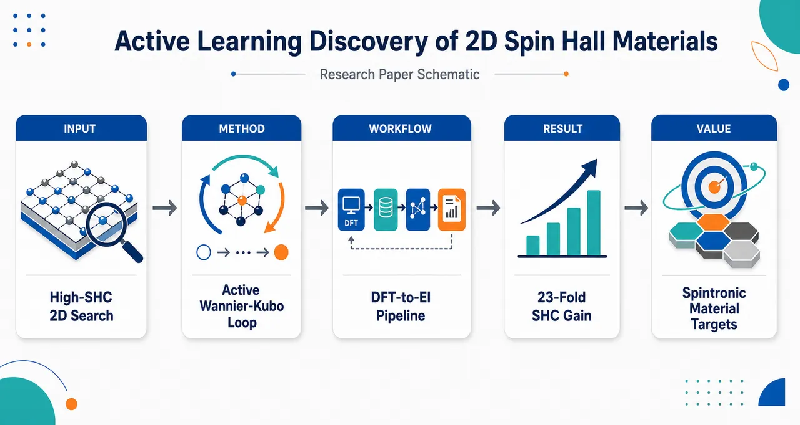
研究问题如何在约2000个二维材料的巨大候选池中，避免逐一进行昂贵的DFT–SOC、Wannier紧束缚和Kubo输运计算，用极少高精度标注快速发现本征自旋霍尔电导（SHC）很大的二维材料，并理解哪些电子结构与化学因素真正驱动高SHC。创新方法构建“主动学习 + 高保真量子输运计算”的闭环筛选框架：从24个化学多样样本出发，用DFT计算能带、人工质量控制MLWF构建紧束缚模型、加入SOC并用Kubo公式计算SHC；再训练岭回归等模型，用Expected Improvement在“预测高SHC”和“高不确定性探索”之间取舍，逐轮挑选5–7个最值得计算的候选。Aha点在于：不是大规模粗糙高通量，而是让机器学习把昂贵的Wannier–Kubo计算精准投向最可能产生突破的材料。工作流程输入清洗后的MC2D二维材料库约2000个候选；先选24个初始二维体系，提取对称性、电子结构和元素描述符；对样本执行Quantum ESPRESSO DFT、无SOC Wannier化、SOC能带拟合、紧束缚哈密顿量构建；在800×800×1密集k网格上用Kubo公式积分Berry曲率得到SHC/OHC标签；用symlog变换训练ML模型并估计不确定性；通过EI采集函数推荐下一批候选；重复三轮后输出高SHC材料排名、关键描述符和材料设计规律。关键结果仅计算41个高精度标注样本，就将最佳SHC从初始轮AuSe的11.7 ℏ/e Ω⁻¹提升到第二轮K₂PtTe₂的195.56 ℏ/e Ω⁻¹，再提升到第三轮Fe₂TeSe的271.52 ℏ/e Ω⁻¹，约为初始最优的23倍。高SHC候选普遍呈现金属性、费米能级附近d轨道主导、复杂三元/四元组成、较大共价半径差，以及缺失旋反演对称性；top-10中9个为金属，7个具备“金属性 + EF附近d轨道 + 无旋反演”的组合。应用价值该研究提供了一套面向二维自旋电子学材料的高效率发现范式，可用小样本预算寻找强自旋—电荷转换材料，服务自旋霍尔层、自旋轨道力矩器件、低功耗非易失存储和逻辑器件设计。Fe₂TeSe、K₂PtTe₂、CuOHF、BaFe₈As₂、K₂MnS₂、TaNi₂TeSe等候选为后续实验剥离、掺杂调控和异质结构器件验证提供了明确目标。第一部分：核心概览 (Overview)
该研究建立了一个面向二维自旋霍尔材料的主动学习—第一性原理—Wannier紧束缚—Kubo公式闭环发现框架，在约 2000 个 MC2D 二维材料候选池中，仅通过 41 个 DFT–SOC+TB 高精度标注样本完成高 spin Hall conductivity, SHC 材料筛选。三轮主动学习将最优 SHC 从初始轮 AuSe 的 11.7 ℏ/e Ω⁻¹ 提升至 Fe₂TeSe 的 271.52 ℏ/e Ω⁻¹，约 23 倍提升。学术贡献不止于发现候选材料，还揭示了费米能级附近 d 轨道主导、金属性、共价半径差、元素电负性、反演/旋反演/非点式对称性等因素对二维 SHC 的复合调控作用。该工作处于二维自旋电子学材料信息学发现的前沿位置，突出展示了小样本主动学习与昂贵物理计算耦合的效率优势。
---
第二部分：结构化快速回顾
《Active Learning Guided Computational Discovery of 2D Materials with Large Spin Hall Conductivity》（None，）
背景
二维材料因可调电子结构、强自旋轨道耦合、易于异质集成、适合自旋—电荷转换而成为自旋电子学候选平台。传统高通量 DFT 或实验筛选成本高，且自动 Wannier 化在复杂能带中容易引入误差，限制了高 SHC 材料发现效率。
方法
从清洗后的 MC2D 数据库构建约 2000 个二维材料候选池。先随机但化学多样地选取 24 个体系，通过 Quantum ESPRESSO + Wannier90 + MLWF 紧束缚模型 + Kubo 公式计算 SHC/OHC。随后训练 ridge regression、support vector regression、Gaussian process regression，采用 5-fold CV、recursive feature elimination、symmetric log target scaling，并用 expected improvement, EI 选择下一批候选。
结果
三轮主动学习后，总样本扩展至 41 个材料。初始轮最优 AuSe: 11.7 ℏ/e Ω⁻¹；第二轮最优 K₂PtTe₂: 195.56 ℏ/e Ω⁻¹；第三轮最优 Fe₂TeSe: 271.52 ℏ/e Ω⁻¹。最终最优材料 SHC 约为初始最优的 23 倍。
讨论
高 SHC 并非单由重元素或晶体对称性决定，而由多因素共同塑造：费米能级附近 d 轨道贡献、金属性、强 SOC、复杂多元组成、共价半径差、电负性、对称性缺失或保留方式共同影响 Berry 曲率与自旋输运。排名前 10 的体系中，除 K₈ZnTl₁₀ 外均含至少一个类金属或硫族元素；除 NiTe 外均为三元或四元体系；其中 9/10 为金属。
局限
样本规模仅 41 个 DFT 标注材料，ML 泛化仍有限；部分候选如 MnC₆N₄Se₂ 预测与计算偏差显著。计算集中于本征 SHC，未显式处理杂质、缺陷、声子、界面、温度和实验制备条件导致的外禀效应。
结论
主动学习能在极小标注预算下从大候选池中持续发现更高 SHC 的二维材料。Fe₂TeSe、K₂PtTe₂、CuOHF、BaFe₈As₂、K₂MnS₂、TaNi₂TeSe、MnC₆N₄Se₂等候选值得进一步理论和实验验证。最终模型和数据公开，有助于二维自旋电子学与材料信息学发展。
---
第三部分：逐章节冷凝解析 (Section-by-Section Condensing)
Abstract
Active learning accelerates high-SHC 2D material discovery
研究目标是解决二维材料高 spin Hall conductivity, SHC 发现中的组合爆炸和计算昂贵问题。核心困难在于二维材料化学空间巨大，而传统实验与第一性原理方法成本高。原文明确指出：*"discovering materials with intrinsically high spin Hall conductivity (SHC) is hindered by the vast chemical space and expensive nature of conventional experimental and first-principles methods."*
解决路径是构建主动学习框架，用较少高保真样本引导候选搜索。
DFT–Wannier–Kubo workflow supplies high-fidelity SHC labels
SHC 标注来自 density functional theory, DFT，并通过 maximally localized Wannier functions, MLWFs 构建紧束缚哈密顿量，再用 Kubo formalism 计算自旋霍尔响应，同时显式处理 spin-orbit coupling, SOC。原文表述为：*"Machine learning (ML) models were trained on SHC values computed from density functional theory calculations, incorporating the Kubo formalism via tight-binding Hamiltonians constructed from maximally localized Wannier functions, with explicit treatment of spin-orbit coupling."*
Only 41 expensive calculations were needed from a ~2000-material pool
初始训练集为 24 个化学多样二维体系，经过 3 个 active learning loops 扩展至 41 个样本，候选池规模约 2000 个材料。原文给出：*"Starting from random but chemically diverse 24 2D systems, the dataset was expanded to 41 cases (from an overall pool of ~2000 materials) over three active learning loops using an expected improvement acquisition strategy."*
这体现了以小样本高保真标注替代全面高通量计算的策略。
Best candidate reaches 271.52 ℏ/e Ω⁻¹
最终最优候选的 SHC 为 271.52 ℏ/e Ω⁻¹，约为初始轮最优材料的 23 倍。原文指出：*"the best candidate exhibiting a SHC of 271.52 ℏ/e Ω-1, nearly 23 times higher than the top performer in the initial round."*
这一定量结果是论文最直接的材料发现成果。
Chemical and electronic descriptors reveal governing trends
除候选发现外，模型解释揭示了影响 SHC 的因素，包括费米能级附近轨道对称性、原子种类、材料组成、共价半径、电负性。原文概括为：*"several features such as orbital symmetry near the Fermi energy, types of atomic species, material composition, covalent radii, and electronegativity of constituent atoms were found to play critical role in shaping the spin Hall response in 2D systems."*
---
INTRODUCTION
Spin Hall effect enables charge-to-spin conversion without net charge flow
自旋电子器件利用电子自旋自由度进行信息处理、传输、计算与存储。核心机制是 spin Hall effect, SHE：纵向电荷流 Ic 通过内禀 SOC 转换为横向自旋流 Is。原文定义为：*"the spin Hall effect (SHE), wherein longitudinal charge current (Ic) is converted into transverse spin current (Is) via intrinsic spin-orbit coupling (SOC)."*
纯自旋流不伴随净电荷流，因此具备低能耗潜力：*"the generated pure spin flow, Is, does not involve flow of net charge and thus energy efficient information processing can be realized without Joule heating losses."*
Spin currents can drive spin-orbit torque devices
当 Is 扩散到相邻铁磁层时，其角动量可施加力矩，使铁磁层磁化发生振荡或翻转，从而支持非易失存储、逻辑和类脑计算。原文写道：*"upon diffusion of Is into an adjacent ferromagnetic (FM) layer, its angular momentum exerts a torque to either oscillate or switch magnetization of the FM layer."*
这说明高 SHC 材料不仅是基础输运研究对象，也直接服务于器件功能。
Earlier searches focused mainly on 3D bulk materials
高 SHC 材料搜索最早集中于三维体材料，包括重 5d 过渡金属、GaAs、体相 TMDs。原文描述为：*"this search has so far focused on 3D bulk materials such as heavy 5d transition metals, GaAs, and bulk transition metal dichalcogenides (TMDs)."*
二维体系则是过去十年兴起的新平台。
2D materials offer tunability and integration advantages
二维材料被认为适合自旋电子学，原因包括化学多样性、受限/关联电子导致较强 SOC、带隙可通过电场或应变调节、易与工业基础设施集成。原文列出：*"Huge chemical diversity, large SOC due to more confined and correlated electrons, bandgap tunability via external factors (electric field, strain, etc.), and easier integration with present industrial infrastructure are some reasons why 2D materials are generally considered promising for spintronic applications."*
Graphene has excellent spin transport but weak SOC
石墨烯理论上具有远高于传统导体的自旋扩散长度和自旋弛豫时间，但弱 SOC 和不利于铁磁态限制了其直接作为自旋通道或霍尔层的应用。原文表述为：*"graphene - is theoretically estimated to exhibit spin diffusion length and relaxation time a few orders of magnitude higher than traditional conductors"*，同时指出：*"its direct usage as spin channel or Hall layer is limited due to weak SOC and as a poor host of FM state."*
为改善这一点，已有策略包括掺杂、空位、磁近邻效应。
2D TMD heterostructures are an important spintronics direction
二维 TMDs 具有强 SOC 与破缺反演对称性，常与铁磁合金或铁磁范德华材料构成异质结构。原文写道：*"Another widely adopted research direction in 2D spintronics is the coupling of 2D TMDs (with high SOC and broken inversion symmetry) with FM alloy or FM van der Waals materials in the form of heterostructures."*
Intrinsic SHC can be reliably computed using DFT with SOC
SHC 来源包括本征机制和外禀机制。本征贡献来自 SOC 改造后的电子能带结构，外禀贡献来自杂质、缺陷和无序散射。原文区分为：*"The intrinsic contribution arises from the SOC-influenced electronic band structure (EBS), while the extrinsic contribution originates from scattering processes due to impurities, defects, and other forms of disorder."*
本征 SHC 可由含 SOC 的 DFT 可靠估计：*"the intrinsic SHC can be estimated reliably using DFT with incorporation of SOC."*
Berry curvature links SOC-split bands to spin Hall response
SOC 使能带劈裂和位移，产生非零 Berry curvature；Berry 曲率在动量空间中类似有效磁场，导致自旋群体差异并产生净自旋流。原文解释为：*"The SOC splits and shifts the band to give non-zero Berry curvature, which serves as a proxy magnetic field in the momentum space."*
High-throughput workflows may sacrifice Wannier accuracy
已有高通量研究覆盖大量体材料与二维材料，例如 426 个无稀土单层材料数据集。原文指出：*"similar efforts have been extended to 2D systems, including a dataset of 426 rare-earth-free monolayers."*
但高通量简化可能影响精度，尤其是 MLWF 自动生成在色散能带中容易出错：*"the generation of MLWFs is typically automated, a process which may be prone to errors particularly for dispersive band structures."*
Wannier 化质量直接影响 SHC：*"the quality of wannierization can significantly affect the accuracy of SHC computations."*
Active learning addresses accuracy–cost tension
该研究以主动学习结合 DFT、TB modeling、ML methods，用 ML 从约 2000 个二维材料中推荐候选，再用人工引导的 MLWF 构造保证高精度 SHC 计算。原文写道：*"we develop an active learning framework that combines DFT calculations, TB modeling and ML methods."*
每轮检查约 5–7 个候选：*"around 5-7 candidates examined in each round using the aforementioned electronic structure methods."*
Three active learning cycles identify Fe₂TeSe as a top performer
三轮主动学习共研究 41 个材料，每轮 SHC 均提升，最优 Fe₂TeSe 比初始最优高约 23 倍。原文表述为：*"across three active learning cycles, we investigated 41 materials and observed a consistent improvement in SHC values in each round"*，并指出：*"Fe2TeSe, was found to have SHC nearly 23 times greater than the best candidate in the initial round."*
---
RESULTS and DISCUSSION
The workflow combines DFT, MLWF, TB, Kubo and ML selection
整体流程由三部分构成：第一步，从清洗版 MC2D 获取二维结构并计算 electronic band structure, EBS；第二步，用 MLWF formalism 构建最小基组紧束缚模型，计算 Berry curvature 和 SHC；第三步，用 ML 从大候选池筛选高 SHC 材料。原文描述为：*"the role of ML methods is to learn the complex relationship between SHC and fundamental features of materials emerging from their crystal symmetry and electronic structure of individual elements."*
Initial training dataset contains 24 diverse 2D systems
初始训练集包含 24 个多样二维体系。特征包括 26 个手工构造的对称性与电子特征以及 132 个 matminer 元素特征。图注中明确写道：*"These values are used to create training dataset which also comprises of 26 hand-crafted symmetry and electronic features as well as 132 matminer library-based elemental features."*
由于 SHC 跨多个数量级，目标值使用对称对数变换：*"Since the range of SHC values span multiple orders of magnitude, its symmetric log transformation was used as the target ML property."*
Ridge regression is selected as the best model
使用 ridge regression、support vector regression、Gaussian process regression 三类传统回归模型。最终 ridge regression 在多轮中交叉验证误差最低。原文写道：*"The top performing ML model (ridge regression) was then used to make predictions on the candidate dataset of ∼2000 2D material systems."*
后续更明确指出：*"Ridge regression consistently yielded the lowest 5-fold cross-validation errors across all rounds."*
Expected improvement balances exploration and exploitation
主动学习使用 expected improvement, EI 采集函数，在预测高 SHC 与高不确定性之间平衡。原文给出：*"expected improvement (EI) acquisition function was adopted which is known to balance the trade-off between exploration (materials with high prediction uncertainty) and exploitation (materials with high predicted SHC value)."*
每轮选取 5–7 个 EI 高的体系进行 DFT–SOC+TB 计算：*"a few systems (5-7) with high EI values were shortlisted for further SHC computations."*
Candidate selection also considers chemical diversity
除 EI 外，候选选择还考虑元素数目和元素类型，如二元、三元、四元，金属/非金属。原文指出：*"Besides EI, the candidates were also selected based on their diversity, i.e., based on number of elements (binary, ternary or quaternary systems) or type of elements (e.g. metal, non-metal)."*
这降低了模型陷入局部化学空间的风险。
Round 1 emphasizes chemical, structural and property diversity
初始轮 24 个体系按领域知识与文献选择，覆盖多种材料家族：metal halides 4 个、halonitrides 2 个、chalcogenides 6 个、TMDs 7 个、其他 5 个。原文列出：*"metal halides (4), halonitrides (2), chalcogenides (6), transition metal dichalcogenides (7) and others (5)."*
晶体多样性包括 12 个不同空间群、18 个 symmorphic、6 个 non-symmorphic、16 个 centrosymmetric。原文给出：*"12 different space groups, 18 symmorphic, 6 non-symmorphic, 16 centrosymmetric."*
The candidate pool covers ~2000 materials and 58 space groups
后续候选来自约 2000 个二维材料，覆盖轻/重元素、s/p/d 区元素、58 个空间群以及二元至六元组成。原文写道：*"a large candidate pool of ∼2000 2D materials, encompassing diverse range of elements (heavy/light or s, p, d-block), structures from 58 different space groups (SGs), and of compositions ranging from binary to hexanary."*
由于五元和六元体系 DFT–SOC+TB 成本过高，筛选限制在二元、三元和四元体系：*"we restricted our ML selection to binary, ternary and quaternary systems."*
ML trained on binary systems extrapolates to multinary compositions
初始训练集中只有二元材料，但模型被用于预测三元至六元材料。原文强调：*"the ML model trained on Round 1 data, which only contains binary materials systems, was successfully used to make predictions for ternary to hexanary materials."*
这说明特征表示具有一定跨组成复杂度的泛化能力。
THC screening performs worse than SHC screening
实验中一度定义 total Hall conductivity, THC = SHC + OHC，用于初步筛选，因为实验中常难区分自旋与轨道霍尔贡献。原文说明：*"we defined total Hall conductivity (THC) as sum of SHC and OHC as a quantitative metric."*
Round 2.1 基于 THC 的 EI，Round 2.2 基于 SHC 的 EI。结果显示 SHC 导向筛选更成功：*"Round 2.2 successfully resulted in identification of candidates with high SHC, much higher than the those in the initial training data."*
THC 改善较弱：*"this is not the case for THC where green colored region (Round 2.1) is seen to marginally shift up."*
Active learning shows monotonic improvement across rounds
Round 2.2 相对 Round 1 的 SHC 分布右移，Round 3 又相对 Round 2 右移，箱线图也显示 SHC 持续提高。原文总结为：*"the right shift of blue region (Round 3) compared to orange region (Round 2) indicates the success of the active learning approach to find candidates with higher SHC."*
该结果直接验证主动学习在材料发现任务中的迭代增益。
---
ML model performance
Model uncertainty is estimated from 100 subsampled variants
不确定性通过训练 100 个模型变体估计，每个模型使用训练数据的随机 80% 子样本。原文写道：*"Model uncertainty was estimated by training 100 model variants using different random 80% subsamples of the training data."*
该不确定性随后进入 EI 采集函数，影响候选选择。
Prediction accuracy is evaluated against later DFT–SOC+TB calculations
比单纯交叉验证更严格的评估，是比较筛选候选的 ML 预测值与后续 DFT–SOC+TB 真实计算值。原文指出：*"A more stringent and pertinent measure of performance of the ML model is to compare the ML model predictions for screened candidates against their subsequent DFT–SOC+TB computed values."*
图 3 中许多点接近 parity line，说明模型有实际筛选能力。
Extreme high-SHC candidates are difficult to predict accurately
高 SHC 候选处于训练数据稀疏的极端区域，预测难度更高。原文解释为：*"these are the cases with extreme SHC values and thus are expected to lie in regions where less amount of training data is available."*
这解释了部分偏离 parity line 的点。
Some high-value candidates carry large uncertainty
如 Fe₂TeSe 和 BaFe₈As₂ 远离 parity line 且预测不确定性较高。原文指出：*"many candidates (Fe2TeSe and BaFe8As2) lying far from the parity line shows high level of uncertainty in model prediction."*
这种情况并不完全失败，因为 EI 本就允许探索高不确定区域。
Generalization limitations remain visible
MnC₆N₄Se₂ 是一个预测值与计算值明显偏离的例子，暴露模型泛化限制。原文写道：*"there are also cases (MnC6N4Se2) where the ML model predictions are significantly different than the computed SHC values, highlighting limitations in model generalization."*
因此，该框架更适合发现而非精确预测。
Best SHC improves from 11.7 to 271.52 ℏ/e Ω⁻¹
初始轮最优 AuSe 的绝对 SHC 为 11.7 ℏ/e Ω⁻¹；Round 2.2 最优 K₂PtTe₂ 为 195.56 ℏ/e Ω⁻¹，约为初始最优的 16 倍；Round 3 最优 Fe₂TeSe 为 271.52 ℏ/e Ω⁻¹，比 K₂PtTe₂ 约高 1.4 倍，约为初始最优的 23 倍。原文给出完整定量链条：*"AuSe exhibited the highest absolute SHC of 11.7 ℏ/e Ω-1"*；*"K2PtTe2, shows an approximately 16-fold increase ... with SHC of 195.56 ℏ/e Ω-1"*；*"Fe2TeSe has absolute SHC approximately 1.4 times higher (271.52 ℏ/e Ω-1)"*；*"is 23 times higher than the best of Round 1."*
Discovery is prioritized over classical predictive benchmarking
研究目标不是构建 hold-out test set 上最准确的模型，而是低标注成本下持续找到比训练集中更好的材料。原文明确区分：*"the primary objective of this work is efficient materials discovery rather than precise property prediction."*
这种评价逻辑适合昂贵 ground truth 的材料发现：*"This is conceptually different from a traditional ML setting wherein the accuracy of the model is validated via a hold-out test set."*
---
Chemical insights from ML models and Data
SHAP analysis identifies mixed chemical, symmetry and electronic drivers
最终模型基于 41 个 SHC 计算样本训练，并用 SHapley Additive exPlanations, SHAP 解释。高 SHAP 值表示特征对预测 SHC 贡献强。原文指出：*"A high SHAP value signifies a strong contribution of a given feature to the predicted SHC."*
重要特征同时来自手工特征和 Magpie 特征：*"both hand-crafted and Magpie features were found to be important."*
Covalent-radius range is the top feature
最重要特征是 MagpieData range CovalentRadius，即化合物中最大与最小元素共价半径之差。原文定义为：*"MagpieData range CovalentRadius, defined as the difference between the maximum and minimum elemental covalent radius in a compound, was found to be the topmost feature."*
这一点与高 SHC 候选常由周期表左右两侧元素组合构成相一致：*"top ranked SHC candidates comprise of elements from the far right and the far left of the periodic table."*
Heavy elements help through SOC but are not sufficient
许多高 SHC 候选含重元素，重元素带来强 SOC，从而影响电子结构和 SHC。原文写道：*"majority of them have heavy elements as constituent atoms which lead to high SOC influence on electronic structure leading to high SHC."*
但后续分析表明，重元素不是必要也不是充分条件。
Unfilled orbitals and dispersive bands are important
与未填充 s、p、d 轨道统计相关的特征重要，说明部分填充轨道、共价相互作用和色散能带会影响 SHC。原文解释为：*"partially filled orbitals are involved in strong covalent interactions which form dispersive bandstructures."*
当这些能带被 SOC 劈裂时，会产生大自旋 Berry 曲率：*"When these bands are SOC-split they produce large spin Berry curvature, which is conducive for SHC."*
Inversion symmetry matters but is not a simple rule
反演对称性的有无是重要特征。原文指出：*"The presence or absence of inversion symmetry in the candidate structure was also found to be an important feature."*
非中心对称材料可产生强 Rashba SOC，常增强 SHC：*"non-centrosymmetric materials show strong Rashba SOC and often result in enhanced SHC."*
但实际 top-10 数据显示，没有破缺反演对称性也可能获得大 SHC。
Pearson correlations support electronic-structure and symmetry relevance
Pearson 相关分析显示，构成元素的未填充 d/p 电子统计量与 SHC 高度相关。原文写道：*"statistics (mean, mode, range) associated with unfilled d and p electrons of the elemental systems showed high magnitude of correlation with the computed SHC."*
对称特征如反演中心、旋转轴数、螺旋轴或滑移面的半平移与 SHC 呈负相关：*"presence of different symmetry features such as inversion center (spᵢₙᵥ₎, different number of rotational axes (spₙᵣₒₜ₎, a half unit translation in screw axis or glide plane (sp₁/2tranₛcrew) displayed negative correlation with SHC."*
Lower symmetry can influence transport in competing ways
低对称性可能使能带变平、削弱量子输运，也可能允许更多非零 SHC 张量分量。原文分别指出：*"with lowering symmetry the bands tend to be flatter leading to weak quantum transport"*，以及：*"lower symmetry can enable more non-zero components of the SHC tensor."*
因此，对称性与 SHC 的关系不是单调或单因素规则。
Top candidates often contain metalloids or chalcogens
排名前 10 的二维体系中，除 K₈ZnTl₁₀ 外，均至少含一个类金属 Ge/As/Sb/Te或硫族元素 O/S/Se/Te。原文写道：*"all of the top 10 identified 2D systems, except for K8ZnTl10 (ranked 8th), contained at least one metalloid (Ge, As, Sb, or Te) or chalcogen (O, S, Se, or Te)."*
Top candidates are mostly ternary or quaternary
除 NiTe，ranked 9th 外，top-10 均为三元或四元体系，暗示复杂能带更利于大 SHC。原文指出：*"with the exception of NiTe (ranked 9th), all of the top 10 ranked systems were ternary or quaternary, indicating that complex bandstructures may be a better playground for achieving higher SHC."*
Metallicity strongly correlates with high SHC
41 个候选中 17 个为金属，而 top-10 中 9 个为金属。原文给出：*"17 out of the 41 candidates studied in this work were metallic (i.e., zero band gap), and, notably, 9 out of top 10 ranked SHC candidates exhibit metallic character."*
这与 Pt、Pd、Au 等高 SHC 体材料为金属的经验一致：*"conventional and highest SHC bulk materials, e.g., Pt, Pd and Au are also metals."*
Hall conductivities can vary sharply near the Fermi level
金属性使霍尔电导对费米能级微小移动非常敏感。原文指出：*"the metallic character enables rapid variation in properties such as Hall conductivity with even minor shifts in EF."*
图 5 显示每轮最优候选在 EF 附近的 SHC/OHC 随能量变化，部分体系如 K₂PtTe₂ 有明显尖锐变化。
Chemical potential tunability is device-relevant
实际材料中的化学势 μ 可因电子/空穴掺杂、界面电荷转移、栅压调控而变化。原文写道：*"μ is subject to change in real systems based on electron or hole doping, which can arise due to several factors such as interfacial charge transfer, gate voltage tuning, etc."*
这种变化改变能带占据并影响轨道/自旋磁矩，从而调控电导：*"it alters the relative occupations of the bands and, in turn, affects the net orbital and spin magnetic moments in the Brillouin zone."*
K₂PtTe₂ and K₈ZnTl₁₀ represent two useful device regimes
K₂PtTe₂ 在 EF 附近电导急剧变化，适合通过少量掺杂实现强可调器件。原文指出：*"K2PtTe2 ... points toward a high tunability of the transport properties with a minimal charge doping."*
K₈ZnTl₁₀ 行为更稳定，可用于产生不受掺杂强烈影响的恒定轨道/自旋流：*"K8ZnTl10 ... show a much more stable behavior, which can also be useful in generating a constant spin / orbital current that remains unaffected by doping."*
OHC dominates SHC across occupations
所有占据情况下 orbital Hall conductivity, OHC 均大于 SHC。原文写道：*"the OHC always dominates over the SHC throughout all occupations."*
对非磁性化合物而言，SHC 由 OHC 通过 SOC 转化而来：*"for the non-magnetic compounds, the SHC can only arise from OHC through the spin orbit coupling."*
Experimental spin-orbit torque involves both spin and orbital currents
实验探测通常需要铁磁覆盖层，轨道流和自旋流都会进入其中。自旋流可直接施加力矩，轨道流需先转化为有效自旋流。原文说明：*"the experimental detection usually involves a ferromagnetic overlayer, where both the orbital and spin currents are passed"*，以及：*"While the spin current can directly exert torque, the orbital current must convert to an effective spin current to produce spin-orbit torque."*
ML analysis uses SHC at EF as the standard reference
虽然研究了 SHC 随费米能变化的学术意义，但 ML 分析使用 EF = 0 处的 SHC。原文说明：*"we consider its values at EF (set to zero) for the ML analysis, as this is typically considered as the standard reference value when reporting the SHC of a material."*
d-orbital dominance near EF is a central factor
top-10 中 7 个候选的 EBS 在 EF 附近由过渡元素 d 轨道主导，包括 Fe₂TeSe，涉及 Fe、Pt、Cu、Mn、Ta、Zn、Ni。原文写道：*"EBS of 7 out of top 10 candidates, including rank-1 Fe2TeSe, is heavily dominated by d orbitals of transition elements (Fe, Pt, Cu, Mn, Ta, Zn and Ni) near EF."*
过渡金属氧化物研究也显示，EF 附近 d 轨道与 SOC 混合可导致大 SHC：*"transition metal oxides with considerable SOC and dominant d orbital character near EF exhibit large SHC owing to the SOC enabled mixing of d orbitals."*
Metallicity plus d-character explains most top candidates
除 Ba₂GaBiTe₅ 外，top-10 均同时表现出零带隙金属性和 EF 附近 d 轨道主导。原文给出：*"all top-10 ranked candidates except Ba2GaBiTe5 exhibits the combination of metallicity (zero band gap) and dominance of d-orbital near EF."*
Non-heavy 3d elements can drive large SHC
通常预期重元素 Z > 30 有强 SOC 和高 SHC，但 top-10 中 7 个体系的 EF 附近主导 d 轨道来自非重元素或 3d 元素，包括 Fe₂TeSe、CuOHF、BaFe₈As₂、K₂MnS₂、TaNi₂TeSe、NiTe、MnC₆N₄Se₂。原文写道：*"we found 7 of the top 10 candidates having dominant d orbital contribution from non-heavy elements near EF."*
其中 CuOHF，rank-3 和 K₂MnS₂，rank-5 完全不含重元素：*"CuOHF (rank-3) and K2MnS2 (rank-5) does not contain any heavy element at all."*
Heavy elements alone do not guarantee high SHC
含重元素的 AuI、In₂Cl₆、Na₂PtO₆H₆ 分别有约 2 eV、3.8 eV、3 eV 带隙，但 SHC 可忽略。原文写道：*"AuI (2 eV band gap), In2Cl6 (3.8 eV), and Na2PtO6H6 (3 eV) but showed negligible SHC."*
原因是这些化合物的 OHC 很小，因而由 OHC 转化来的 SHE 也小：*"the orbital Hall effect is estimated to be very small. As a result, the converted SHE is negligible."*
Mirror planes and inversion breaking are not reliable standalone predictors
虽然破缺反演对称性通常被认为有利于 SHC，多镜面对称也常与体材料高 SHC 相关，但该数据集未显示稳定规律。原文写道：*"it is possible to create large SHC even without breaking inversion symmetry"*，并指出：*"the presence of multiple mirror planes ... did not consistently correlate with enhanced SHC in our dataset."*
例如 Fe₂TeSe 有 4 个镜面，但其他具有 4 个镜面的体系 SHC 低于约 10 ℏ/e Ω⁻¹：*"other systems with 4 mirror planes showed low SHC (< ~10 ℏ/e Ω-1)."*
Absence of rotoinversion symmetry emerges as a stronger trend
top-10 中除 NiTe，ranked 9th 外均无旋反演对称性。原文指出：*"None of the top 10 candidates exhibited rotoinversion symmetry, with the sole exception of NiTe (ranked 9th)."*
该趋势比单纯镜面数或反演中心更清晰。
Non-symmorphic space groups generally show low SHC
具有螺旋轴或滑移面等分数平移对称的 non-symmorphic 材料通常 SHC 低于 10 ℏ/e Ω⁻¹，但 K₂MnS₂，rank-5，SHC = 58.26 ℏ/e Ω⁻¹ 是例外。原文写道：*"materials belonging to non-symmorphic space groups ... generally showed low SHC (< 10 ℏ/e Ω-1), with K2MnS2 (rank-5, SHC = 58.26 ℏ/e Ω-1) being a notable exception."*
ZrNI polymorphs show that lower symmetry is not always better
ZrNI 在两个空间群中被研究：高对称、中心对称正交 P3̄m1，rank-18，以及低对称、非点式三角 Pmmn，rank-35。高对称相 SHC 更高。原文指出：*"the high-symmetry phase, featuring additional rotational axes, mirror planes, and rotoinversion symmetry, exhibited a higher SHC."*
这反驳了“低对称必然高 SHC”的简单推断。
A triple combination best characterizes high-SHC candidates
最清晰的高 SHC 组合是：金属性、EF 附近 d 轨道主导、无旋反演对称性。top-10 中 7 个体系具备这一组合：Fe₂TeSe、K₂PtTe₂、CuOHF、BaFe₈As₂、K₂MnS₂、TaNi₂TeSe、MnC₆N₄Se₂。原文总结为：*"the triple combination of metallic nature, dominant d character (from heavy or non-heavy elements) near EF and absence of roto-inversion symmetry was found to show high SHC."*
All top-10 candidates are exfoliable or potentially exfoliable
排名前 10 的候选均属于 MC2D 定义中的容易剥离或潜在可剥离类别。原文写道：*"all of the identified top 10 candidates fall in the category of ‘easily’ or ‘potentially’ exfoliable."*
这提高了实验实现的可信度。
Fe₂TeSe is dynamically stable
排名第一的 Fe₂TeSe 显示出动力学稳定性。原文指出：*"we found the rank-1 system Fe2TeSe to show dynamic stability."*
因此，该体系是最值得后续计算和实验验证的候选之一。
No single descriptor can predict SHC alone
晶体对称性和 SOC 不是唯一决定因素；轨道对称性、元素种类、组成、共价半径、电负性等都参与决定 SHC。原文写道：*"the crystal symmetry and SOC are not the only decisive factor for a material to generate spin current via SHE."*
最终模型需要综合这些属性：*"no single dominant property alone can be used to arrive at a good estimate of SHC in 2D systems."*
---
METHODS
Computational details
DFT calculations use Quantum ESPRESSO and PBE
第一性原理计算使用 Quantum ESPRESSO，对称性分析使用 FINDSYM。交换关联采用 GGA-PBE。原文写道：*"The DFT computations were performed using Quantum ESPRESSO, and FINDSYM was used for symmetry analysis."*；*"The exchange and correlation behavior ... were approximated under the generalized gradient approximation in the Perdew-Burke-Ernzerhof (GGA-PBE) method."*
Norm-conserving pseudopotentials are chosen for Berry curvature accuracy
核—电子相互作用使用 PseudoDojo 的 norm-conserving pseudopotentials，原因是其本征值准确且本征函数无节点，有利于 Berry 曲率计算。原文说明：*"the norm-conserving pseudopotentials ... were used owing to their reputation of exact eigenvalues and node-less eigenfunctions to better compute the Berry curvature."*
2D slabs use more than 12 Å vacuum
二维结构来自 MC2D，使用 slab 模型，并在 z 方向加入 >12 Å 真空以避免周期镜像相互作用。原文写道：*"modeled using a slab approach with sufficient vacuum along z direction (> 12 Å) to avoid periodic interactions."*
Re-relaxation was omitted after negligible structural changes
MC2D 已包含弛豫结构。初始轮少数结构重新弛豫后变化很小，因此后续省略重新弛豫。原文指出：*"in the initial round a few structures were re-relaxed. Since only negligible changes were observed, the re-relaxation step was omitted in the subsequent rounds."*
---
DFT and TB workflow
Step i computes non-SOC EBS and constructs MLWFs
首先进行不含 SOC 的 DFT 计算获取 EBS。SCF 使用自动 k 网格，k-spacing 为 0.03–0.17 Å⁻¹；随后 non-SCF 计算 PDOS，并在完整均匀 k 网格上生成 Wannier90 输入，k-spacing 为 0.02–0.10 Å⁻¹。原文给出：*"SCF calculations using an automatic k-mesh with varied k-spacing in a range of 0.03-0.17 Å-1"*；*"non-SCF calculations ... with varied k-spacing 0.02-0.10 Å-1 as inputs to construction of MLWFs using Wannier90."*
MLWFs are constructed without SOC to avoid wavefunction mixing
Wannier 函数先在无 SOC 情况下构建，以避免波函数混合和本征态误差。原文写道：*"MLWFs are constructed in the absence of SOC to avoid mix-up of wavefunctions and the error in the eigenstates."*
高质量 MLWF 通过 spread parameters 达到 10⁻¹² Ų 量级保证：*"High-quality MLWFs were ensured by achieving spread parameters up to 10-12 Å2."*
Step ii computes SOC-included EBS
第二步单独计算包含 SOC 的 EBS，用于估计 SOC 强度，作为紧束缚模型额外输入。原文写道：*"Separate EBS calculations including SOC effects are performed to estimate SOC strengths as extra inputs to step-iii."*
Step iii adds SOC to the TB Hamiltonian and fits DFT-SOC bands
第三步根据无 SOC hopping 参数构建数值紧束缚模型，再将 SOC 作为额外哈密顿量项加入，并调节原子 SOC 参数 λ 以匹配 DFT-SOC 能带。原文写道：*"SOC from step-ii was introduced as an additional term to the Hamiltonian, and the SOC parameters were tuned to match DFT results."*
这种拟合同时验证本征值和本征态：*"This fitting validates not just the accuracy of the eigenvalues (bands), but also the eigenstates."*
The TB Hamiltonian includes hopping and λL·S SOC
哈密顿量矩阵元写为
Hₘₙ = Σⱼ tₘₙʲ exp(i k·dⱼ) + λ L·S。
原文公式为：*"Hmn=∑j tmn j eⁱk→·dj+λ L→·S→."*
其中 tₘₙʲ 是 hopping 参数，λ 是 SOC 强度。
SHC and OHC are computed on an 800 × 800 × 1 dense k-grid
本征值和本征态用于在 800 × 800 × 1 密集 k 网格上计算 OHC 和 SHC。原文写道：*"The eigenvalues and eigenstates of this Hamiltonian were further used to calculate the orbital (OHC) and spin Hall conductivity (SHC) on a dense k-grid of 800 × 800 × 1."*
Kubo formula relates Hall conductivity to Berry curvature
霍尔电导由 Kubo 公式给出，与布里渊区内 Berry 曲率求和相关。原文公式为：*"σγ, orb/spⁱⁿαβ=− e/(NkVc) ∑k Ωγ, orb/spⁱⁿαβ(k)."*
其中 α 表示轨道/自旋流方向，β 表示外加电场方向，γ 表示轨道或自旋角动量方向。原文解释：*"α is the direction of the orbital/spin current, β is the direction of the applied electric field, while the orbital and spin angular momentum points towards γ."*
2D SHC uses area instead of volume and has units ℏ/e Ω⁻¹
对于二维体系，Kubo 公式中的体积项替换为晶胞面积，因此二维 SHC 单位通常写作 ℏ/e Ω⁻¹。原文写道：*"for 2D systems the volume term is replaced by the area of the unit cell. Therefore, the unit of SHC for 2D systems is usually expressed in ℏ/e Ω-1."*
---
第四部分：深度理解与语言支持 (Understanding & Nuance)
1. 术语解析
#### Spin Hall conductivity, SHC
SHC 衡量材料把纵向电荷电流转化为横向自旋电流的能力。它不是普通电导，而是带有自旋极化方向和流动方向的张量响应。语境中 SHC 是材料筛选的核心目标值，单位为 ℏ/e Ω⁻¹。高 SHC 意味着同样电场下能产生更强自旋流，适合自旋轨道力矩器件。
#### Expected improvement, EI
EI 是主动学习中的采集函数，用于选择下一批最值得昂贵计算的候选。它同时奖励两个方面：预测值高，即 exploitation；预测不确定性高，即 exploration。该研究用 EI 避免只选择模型当前认为最优的材料，也避免盲目探索完全未知区域。
#### Maximally localized Wannier functions, MLWFs
MLWFs 是把 DFT 的延展 Bloch 波函数转化为局域轨道表象的数学工具，常用于构建紧束缚哈密顿量。这里的微妙点在于，SHC 对 Berry 曲率非常敏感，而 Berry 曲率对能带与本征态质量敏感；因此 Wannier 化错误会直接污染 SHC。该研究强调人工引导投影，而非完全自动 Wannier 化。
#### Symmetric log transformation
对称对数变换适合处理既有正值又有负值、且跨多个数量级的数据。普通 log 不能直接处理负 SHC；symlog 可保留符号并压缩极端值，使 ML 模型更稳定。此处 SHC 用绝对值排序，但训练目标需要保留响应的数值结构。
#### Roto-inversion symmetry
旋反演对称性是先旋转再反演的复合空间对称操作。它不同于单纯反演或镜面对称。该研究发现 top-10 高 SHC 候选几乎都没有旋反演对称性，说明某些复合对称操作可能抑制可产生净自旋霍尔响应的 Berry 曲率分布。
---
2. 疑难查证
#### 为什么重元素不是高 SHC 的充分条件？
直觉上，重元素 SOC 强，而 SHC 来自 SOC，因此重元素应带来高 SHC。但高 SHC 需要三步同时成立：
- 存在可产生轨道霍尔响应的能带结构；
- SOC 能有效把轨道角动量纹理转化为自旋响应；
- 费米能级附近存在贡献大的态，尤其是 d 轨道、能带交叉/反交叉、强 Berry 曲率热点。
如果重元素体系是大带隙绝缘体，且 EF 附近没有合适的轨道混合或 OHC 很小，那么即便 SOC 很强，SHC 仍可很小。文中 AuI、In₂Cl₆、Na₂PtO₆H₆ 就属于此类：含重元素但带隙分别约 2 eV、3.8 eV、3 eV，SHC 可忽略。
#### 为什么 d 轨道靠近 EF 会提高 SHC？
d 轨道具有较强角动量结构和丰富轨道简并，容易在晶体场、杂化和 SOC 作用下形成复杂能带交叉与反交叉。Berry 曲率通常在这些能带近简并区域急剧增强。若这些 d 态位于 EF 附近，被占据态与未占据态之间的能量差小，Kubo 公式中的跃迁贡献就会放大。因此，EF 附近 d 轨道主导往往比“是否含重元素”更直接影响 SHC。
#### 为什么 OHC 通常大于 SHC？
轨道霍尔效应不一定需要 SOC；晶体中的轨道纹理和轨道混合本身即可形成横向轨道流。非磁性材料中的 SHC 通常需要 SOC 将轨道角动量信息转化为自旋角动量信息。换言之，OHC 是更“原始”的轨道响应，SHC 是经 SOC 转换后的自旋响应，因此 OHC 往往更大。器件中轨道流仍需在铁磁层或强 SOC 层中转化为有效自旋流，才能施加自旋轨道力矩。
#### 为什么主动学习比普通高通量更适合这里？
高精度 SHC 计算不是简单 DFT 总能量筛选，而需要：
- SOC 计算；
- 精确 Wannier 化；
- 紧束缚哈密顿量拟合；
- 高密度 k 网格 Berry 曲率积分；
- 人工检查投影轨道与能带拟合质量。
对约 2000 个材料全部执行这一流程成本很高。主动学习用少量高质量标签训练模型，让模型判断下一批最可能改进当前最优值的候选。该研究只计算 41 个材料就找到比初始最优高 23 倍的 Fe₂TeSe，说明其效率优势明显。
---
第五部分：创新评估与关联 (Synthesis & Novelty)
1. 创新性判断
#### From passive high-throughput screening to active high-fidelity discovery
过去 2–5 年的相关工作主要有两类：一类是大规模高通量计算 SHC/OHC，覆盖许多体材料或二维材料；另一类是针对少数候选进行高精度 DFT–Wannier–Kubo 分析。前者规模大但容易依赖自动 Wannier 化和近似流程，后者精度高但覆盖空间小。该研究的创新在于把两者结合：用主动学习决定高精度计算预算投向哪里，用人工引导 MLWF + DFT–SOC+TB + Kubo保证标签质量。
#### Small-data active learning works in an expensive quantum-transport setting
只从 24 个初始样本起步，三轮后达到 41 个样本，便在约 2000 个候选中找到 271.52 ℏ/e Ω⁻¹ 的 Fe₂TeSe。这证明主动学习不仅适用于形成能、带隙等常见材料性质，也适用于计算链条更长、噪声和不确定性更高的自旋/轨道霍尔输运性质。
#### Manual Wannier quality control addresses a key bottleneck
SHC 对 Berry 曲率高度敏感，而 Berry 曲率依赖能带和本征态精度。自动高通量 Wannier 化在色散能带、复杂轨道投影中可能失败。该研究通过用户引导构造 MLWF，并以 DFT-SOC 能带拟合 SOC 参数，针对性解决了高通量 SHC 数据质量问题。
#### The discovered design rule is multi-factor rather than heavy-element-centric
传统直觉常强调重元素、强 SOC、破缺反演对称性或多镜面对称。该研究发现高 SHC 的更有效组合是：
- 金属性；
- EF 附近 d 轨道主导；
- 缺失旋反演对称性；
- 多元复杂组成；
- 合适的 OHC 基础；
- 共价半径、电负性、未填充轨道统计等综合特征。
尤其 CuOHF 和 K₂MnS₂ 不含重元素却进入 top-5，挑战了“重元素必要”的经验判断。
#### It bridges materials informatics with spin-orbitronics
材料信息学常用于稳定性、带隙、催化、热电等性质；自旋霍尔输运由于计算复杂、标签昂贵、张量性质复杂，机器学习应用更少。该研究提供了一个可复用范式：用少量高精度量子输运计算训练模型，再通过 EI 迭代搜索目标响应。该范式可扩展到轨道霍尔效应、反常霍尔效应、自旋轨道力矩效率、拓扑响应材料等问题。
#### The unresolved previous problem
前人没有充分解决的问题是：如何在二维材料巨大化学空间中，以可控精度和有限计算成本系统发现本征高 SHC 材料。该研究通过主动学习闭环解决了三个具体瓶颈：
- 搜索空间大：约 2000 个二维候选无法逐一高精度计算；
- 标签成本高：DFT–SOC+Wannier–Kubo 流程昂贵且需人工质量控制；
- 物理规律复杂：高 SHC 不能由单一描述符预测，需要 ML 捕捉多因素非平凡关系。
最终结果不仅给出 Fe₂TeSe 等候选，还给出可解释的材料设计方向。
-
02
📊 含图深析
📄 摘要：采用演员-评论家深度强化学习，为最多 16 个量子位的多体态构造短解缠线路。智能体仅访问二量子位约化密度矩阵，在部分观测条件下决定量子门序列，面向态制备、压缩、量子控制与复杂性问题中的纠缠操控。
💡 亮点：仅凭二体约化信息，强化学习可为 16 量子位态寻找短解缠线路。该框架把有限可观测量下的量子反馈控制推向可扩展多体纠缠处理。
📖 展开分析 + 配图
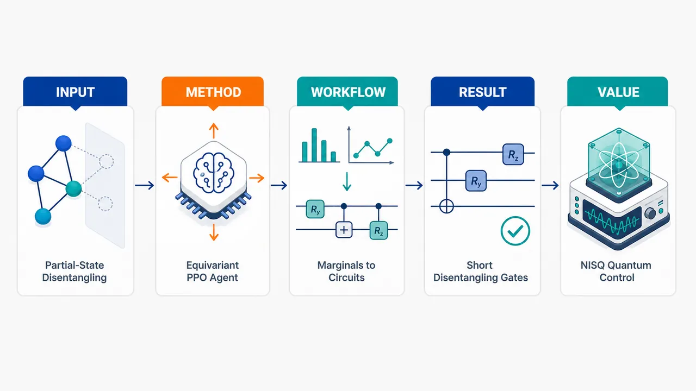
研究问题如何在看不到完整多量子比特量子态、只拥有局域两量子比特约化密度矩阵的情况下，选择尽可能短的两量子比特门序列，把纠缠的多体量子态逐步解缠为积态；核心难点是 Hilbert 空间指数增长、完整态层析不可行、门序列组合空间巨大，且不存在态无关的通用解缠门。创新方法将多体解缠拆成“离散选哪一对量子比特”和“连续施加什么门”两层：强化学习 actor-critic / PPO 只负责从所有两比特约化密度矩阵中选择量子比特对；具体两比特门不由网络搜索，而是通过对应二体约化密度矩阵对角化解析得到局域最优门。Aha 点是：智能体不用全态、也不用在连续 U(4) 门空间里试错，只看实验可测的局域密度矩阵图谱，用置换等变 transformer 学习纠缠分布和量子比特重标号规律。工作流程输入当前多量子比特态的所有两量子比特约化密度矩阵，组成局域观测矩阵集合；置换等变 transformer 策略网络读取这些二体边缘，输出每一对量子比特的动作概率；PPO 智能体选中一对量子比特；系统对该 pair 的二体约化密度矩阵做对角化，生成局域最优两比特解缠门；门作用到量子态上，更新单比特纠缠熵和平均纠缠；奖励函数鼓励纠缠下降并惩罚多用门；循环执行，直到所有量子比特接近无纠缠，输出短解缠电路，其逆电路可作为态制备电路。关键结果在 4 比特任意态上发现最多 5 个两量子比特门、等价最多 10 个 CNOT 的完美解缠/制备电路；在 5、6 比特 Haar 随机态上，智能体平均分别需要约 20 和 56 个两比特门。训练呈两阶段：先把解缠成功率提升到接近 100%，再继续压缩平均 episode length。随机与贪婪局域协议都呈指数资源增长，贪婪约将随机门数减半；论文说明 Haar 随机态困难来自二体边缘指数接近最大混合态，而 RL 网络本身前向/反向计算随量子比特数约二次增长。方法还扩展到最多 16 比特弱纠缠簇态，并在离子阱量子计算机上展示噪声下仍能降低纠缠。应用价值为 NISQ 设备提供一种只依赖局域测量、可在线反馈、少门数的量子纠缠控制方案；可用于构造任意态制备电路、量子态压缩、量子控制、纠缠结构识别和噪声环境下的解缠操作。由于减少两比特门和 CNOT 数量，可降低退相干暴露时间，并让实验硬件在不进行完整态层析的情况下利用可测局域信息生成状态依赖电路。第一部分：核心概览 (Overview)
该研究把多量子比特纠缠解缠建模为仅依赖两量子比特约化密度矩阵的深度强化学习任务，用actor-critic / PPO与置换等变 transformer选择两量子比特门作用对象，门本身由局域约化密度矩阵解析确定。贡献在于将“部分可观测、实验可测、抗噪声”的状态感知控制引入解缠电路构造，并在 4–16 比特规模、Haar 随机态、弱纠缠簇态及离子阱硬件上展示短电路与结构识别能力。
---
第二部分：结构化快速回顾
《Reinforcement Learning to Disentangle Multiqubit Quantum States from Partial Observations》（None，）
背景
量子纠缠是量子计算、量子光学、强关联物理中的核心资源，但多体纠缠控制受到 Hilbert 空间指数维度、NISQ 噪声、局域门限制以及缺乏通用解缠机的约束。已有确定性算法通常需要完整量子态信息，且电路门数并非最优。
方法
使用深度强化学习 actor-critic / PPO训练智能体。每一步智能体只接收全部两量子比特约化密度矩阵作为 observation，输出要作用的量子比特对；对应的局域最优两量子比特门通过对该二体约化密度矩阵对角化解析得到。策略网络采用置换等变 transformer，使量子比特重排对应输出概率重排。
结果
4 比特任意态存在至多 5 个两量子比特门 / 10 个 CNOT 的完美解缠序列；5、6 比特 Haar 随机态平均分别需 20 与 56 个两量子比特门。随机与贪婪局域协议均呈指数资源增长，贪婪方法大约将随机方法门数减半。训练过程先达到近 100% 解缠准确率，再优化平均 episode length。
讨论
局部二体信息虽然远少于完整态层析，但足以让智能体学习纠缠分布模式、构造状态依赖协议，并识别量子比特置换和局域纠缠结构。Haar 随机态的解缠门数指数增长源自二体约化密度矩阵随系统规模指数接近最大混合态，而非算法缺陷。
局限
框架无法处理所有二体约化密度矩阵均为最大混合的绝对最大纠缠态；Haar 随机大系统训练受指数长 episode 与经典模拟指数成本限制；可用正文中仅完整呈现到 IV.2.3，后续 V–IX 与附录细节无法逐条核验。
结论
部分观测强化学习可作为一种实验可接入的、状态感知的多量子比特解缠策略，在减少 CNOT 资源、识别纠缠结构、适应 NISQ 噪声方面具有潜力，并为任意态制备、量子压缩和量子控制提供可逆电路构造路线。
---
第三部分：逐章节冷凝解析 (Section-by-Section Condensing)
Abstract
- Partial state knowledge enables multiqubit entanglement control
核心问题是利用量子态的部分知识控制多量子比特纠缠，这一方向仍处于早期探索阶段，并被定位为连接量子态制备、压缩、量子控制和复杂性的潜在范式。摘要直接给出问题定位：*"Using partial knowledge of a quantum state to control multiqubit entanglement is a largely unexplored paradigm in the emerging field of quantum interactive dynamics with the potential to address outstanding challenges in quantum state preparation and compression, quantum control, and quantum complexity."*
- Actor-critic reinforcement learning constructs short disentangling circuits up to 16 qubits
方法核心是深度强化学习，具体为 actor-critic algorithm，目标是在最多 16 qubits 的系统中构造短解缠电路。关键表述为：*"We present a deep reinforcement learning (RL) approach using an actor-critic algorithm for constructing short disentangling circuits for states with up to 16 qubits."*
- Only two-qubit reduced density matrices are required
智能体不需要完整态矢量或全态层析，只需访问两量子比特约化密度矩阵，并据此决定在哪对量子比特上施加两量子比特门；这使方法适合 NISQ 设备。证据为：*"With access to only two-qubit reduced density matrices, our agent decides which pairs of qubits to apply two-qubit gates on; requiring only local information makes it directly applicable on modern NISQ devices, as we demonstrated experimentally on a trapped-ion quantum computer."*
- Permutation-equivariant transformer detects qubit permutations autonomously
策略网络采用置换等变 transformer 架构，使智能体可以识别量子比特排列变化，并相应调整解缠协议。摘要给出：*"Utilizing a permutation-equivariant transformer architecture, the agent can autonomously identify qubit permutations within the state, and adjusts the disentangling protocol accordingly."*
- Once trained, no per-state reoptimization is needed
训练完成后，策略可以直接为不同初态输出电路，不需要针对每个初态重新优化。关键句为：*"Once trained, it provides circuits from different initial states without further optimization."*
- Protocol analysis reveals temporal and qubit correlations
对 4- and 5-qubit Haar-random states 的电路分析显示，连续门之间、参与量子比特之间存在强相关性。摘要表述为：*"We analyze the disentangling circuits constructed by the agent for 4- and 5-qubit Haar-random states, and observe strong correlations between consecutive gates and among the qubits involved."*
- Arbitrary four-qubit state preparation requires at most five two-qubit gates
一个重要构造结果是：任意 4-qubit state 可由一个通用电路以最多 5 two-qubit gates 制备；换算为最多 10 CNOT gates。原始表述为：*"Analyzing optimal disentangling protocols, we report a general circuit to prepare an arbitrary 4-qubit state using at most 5 two-qubit (10 CNOT) gates."*
---
I Introduction
- Entanglement is treated as a central physical and technological resource
量子纠缠被定义为现代量子技术的核心，既是量子过程“量子性”的代理指标，也是量子计算、量子光学和强关联凝聚态系统中的基础资源。证据包括：*"Quantum entanglement is central to modern quantum technologies."* 以及 *"It is widely perceived as a proxy for the quantum nature of physical processes and phenomena involving more than one particle."* 还包括应用定位：*"Entanglement is currently contemplated as an instrumental resource for quantum computing, and plays a fundamental role in quantum optics and strongly-correlated condensed matter systems."*
- Many-body entanglement control is hard because Hilbert space grows exponentially
多体纠缠控制的关键难点来自联合 Hilbert 空间维度指数增长；某些态需要关于系统尺寸指数数量的两量子比特门才能解缠。原文明确指出：*"The difficulty in controlling entanglement among many quantum particles with only experimentally accessible local gates, lies in the exponential size of their joint Hilbert space dimension: states exist that require an exponential (in the system size) number of two-qubit gates to disentangle."*
- Universal state-independent disentangling machines do not exist
不存在一个唯一、态无关的量子门可以解缠任意混合两比特态，因此理想通用解缠机不存在。关键证据为：*"it was demonstrated that a unique (state-independent) quantum gate cannot disentangle arbitrary mixed two-qubit states, implying that an ideal universal disentangling machine does not exist."*
- Disentangling circuits are directly related to arbitrary state preparation
因为幺正门可逆，解缠电路反向运行即可变成态制备电路；因此，多体态制备复杂度可用目标态纠缠量来刻画。原文给出：*"Since unitary gates are invertible, disentangling circuits present a way of constructing algorithms to initialize arbitrary states on quantum computers; hence, the complexity of many-body state preparation can be quantified by the amount of entanglement present in the target state."*
- Previous approaches do not fully exploit entanglement distribution for minimal gates
虽然已有矩阵乘积态、flow equations、optimal control 等方法，但如何利用纠缠在量子比特间的分布来最优解缠并最小化两比特门数仍知之甚少。关键句为：*"Recent progress notwithstanding, very little is known about how to exploit the distribution of entanglement among qubits to optimally disentangle quantum states, while at the same time keeping the number of two-qubit gates minimal."*
- NISQ relevance requires noise-aware and structure-aware algorithms
在 NISQ 时代，算法需要识别态的纠缠结构，并在噪声与退相干下改善解缠协议。证据为：*"In the era of noisy intermediate-scale quantum (NISQ) computing, especially pressing is the necessity to design algorithms that can identify the structure of the entanglement distribution of a state, and use it to improve disentangling protocols in the presence of noise and decoherence."*
- Reinforcement learning is selected because of interactive feedback control
强化学习通过智能体与环境的反馈互动控制物理系统，因此适合部分信息下的量子控制。原文定义为：*"Reinforcement Learning (RL) – a branch of Machine Learning (ML) that uses interactive feedback dynamics between an agent and its environment to control a physical system."*
- The central technical move is partial-observation disentangling
研究对象是任意多比特态解缠，但智能体只访问部分信息，即两比特约化密度矩阵。关键句为：*"we investigate the problem of disentangling arbitrary multi-qubit quantum states by having access to only partial information of these states."*
- Reported quantitative benchmarks include 4, 5, and 6 qubits
对任意 4-qubit states，存在最多 five 2-qubit gates 的完美解缠序列，且等价于 ten CNOT；对 5- and 6-qubit Haar-random entangled initial states，平均需 20 和 56 个两比特门。原文为：*"for arbitrary 4-qubit states, we report a perfect disentangling sequence consisting of at most five 2-qubit (yet only ten CNOT) gates"*，以及 *"For 5- and 6-qubit Haar-random entangled initial states, the agent requires on average 20 and 56 two-qubit gates, respectively."*
- Experimental validation uses a trapped-ion quantum computer
方法在离子阱量子计算机上测试，即使存在噪声，仍能降低量子比特间纠缠。证据为：*"We test our agent’s performance on a trapped-ion quantum computer, and find that, even in the presence of noise, it manages to completely reduce the entanglement between the qubits despite the state being mixed with the environment."*
- Large-system exploration reaches weakly entangled subsystems up to 16 qubits
大系统部分关注最多 16 qubits 的 Haar 随机态弱纠缠子系统，并分析协议中的空间和时间相关性。原文指出：*"We further explore the agent’s capabilities to construct disentangling circuits for large, weakly entangled subsystems of Haar-random states of up to 16 qubits."* 以及 *"they feature both spatial (i.e., among the qubits) and temporal (i.e., between consecutive gates) correlations."*
---
II Multiqubit Disentangling Problem
- Disentangling is formulated as mapping an arbitrary pure state to a computational-basis product state
给定任意 L-qubit pure state (|ψångle)，目标是寻找幺正 (U)，使其变为 (|0ångleøtⁱmes L)。原始定义为：*"The multiqubit disentangling problem seeks to find a unitary operation U that brings |ψ⟩ to the product state |ψ∗⟩=|0⟩⊗L in the computational z-basis, i.e., U|ψ⟩=|ψ∗⟩."*
- Single-qubit rotations are absorbed into the disentangling unitary
任意无纠缠纯积态最多可由 L single-qubit rotations 映射到 (|0ångleøtⁱmes L)，这些单比特旋转不改变纠缠结构，因此被并入 (U)。脚注给出：*"the most general product (i.e., zero-entanglement) pure state can be mapped to |ψ∗⟩ by applying at most L single-qubit rotations."* 以及 *"Since these extra operations do not alter the entanglement structure of the state, we will consider them part of U."*
- Total entanglement criterion uses maximum single-qubit entanglement
多体划分数目组合爆炸，因此使用最大单比特纠缠作为总纠缠指标：
[
Sₜₒₜ=max₁łₑq ⱼłₑq LSₑₙₜ[h̊o⁽j⁾].
]
该指标为零当且仅当整体为积态。证据为：*"a simple measure for the total amount of entanglement in a given state is the maximum single-qubit entanglement"*，以及 *"Sₑₙₜ₌₀ if and only if |ψ⟩ is a product state."*
- Optimization cost uses smooth average single-qubit entanglement
(Sₜₒₜ) 不连续，不适合梯度优化；因此定义平均单比特纠缠：
[
Sₐᵥg=frac1Lsumⱼ₌₁LSₑₙₜ[h̊o⁽j⁾].
]
证据为：*"However, this quantity is not continuous and therefore not directly amenable to gradient-based optimization. To circumvent this limitation, we instead define a smooth cost function based on the average single-qubit entanglement."*
- Von Neumann entropy is the default entanglement measure
默认使用von Neumann entropy，但 Renyi entropies 或 Fisher information 也可替代。关键句为：*"we use the von Neumann entropy for Sₑₙₜ, although other measures, e.g., the Renyi entropies or the Fisher information, can also be considered."*
- Circuit restriction matches NISQ two-qubit gate constraints
为符合 NISQ 架构约束，(U) 被表示为两量子比特门序列 (U⁽ⁱ,j⁾)。门可作用于任意量子比特对，而不局限于邻近对，这与离子阱和 Rydberg 平台原生连接性一致。原文为：*"we furthermore require that U be represented as a sequence of two-qubit gates U(i,j)."* 以及 *"We let U(i,j) act on any pair of qubits (i,j) (not just neighboring ones), which is native to trapped-ion or Rydberg atom platforms."*
- The problem decomposes into discrete pair selection and continuous gate optimization
解缠问题包含两个子问题：选择量子比特对序列，以及为每一对寻找最优两量子比特门。前者是离散组合问题，后者是连续优化问题。原文为：*"The disentangling problem then amounts to: (1) identifying the sequence of pairs of qubits to apply two-qubit gates on, and (2) finding the corresponding optimal two-qubit unitary gates"*，并说明：*"Note that (1) is a discrete combinatorial problem, while (2) is a continuous optimization problem."*
- RL solves pair selection; analytic diagonalization solves local gate construction
离散问题由 RL 处理；固定量子比特对后，通过对相应二体约化密度矩阵对角化确定局域最优解缠门。关键证据为：*"we use RL to solve (1)"*，以及 *"for a fixed pair of qubits (i,j), we determine a locally optimal disentangling unitary U(i,j) by diagonalizing the corresponding reduced density matrix."*
- The two-qubit gate depends only on a two-qubit reduced density matrix
局域最优门仅依赖当前态中相关两比特的约化密度矩阵，可由 NISQ 设备上的局域测量计算。原文为：*"this gate depends on the current quantum state only through the relevant two-qubit reduced density matrix, and can be computed using local measurements on NISQ devices."*
---
III Randomly and greedily placed locally optimal gates
- Exact analytic optimal sequences exist only for 3 and 4 qubits in the stated framework
对 3- and 4-qubit systems 可解析找到精确最优解缠序列；从 5-qubit states 开始，仅凭部分信息构造最少门数序列不再清楚。证据为：*"For 3- and 4-qubit systems, it is possible to find exact optimal disentangling sequences analytically"*，以及 *"Starting from 5-qubit states onwards, however, it is no longer clear how to construct disentangling sequences by having only partial information about the state, and even less so – how to do this using a minimal number of gates."*
- Sequence-space growth makes exhaustive search infeasible
难点来自序列空间随两比特门总数指数增长，穷举搜索不可行。原文为：*"The difficulty arises from the exponential scaling of the size of the sequence space with the total number of two-qubit gates, which renders exhaustive search algorithms inapplicable."*
- Random local gates yield exponential decay in average entanglement but exponential delay with system size
随机选择量子比特对并施加局域最优解缠门时，平均纠缠 (Sₐᵥg) 随门数 (M) 在大 (M) 区域近似指数下降：(Sₐᵥgsim exp(-M/c))。但达到阈值 (10⁻³) 的时间尺度 (c(L)) 随 (L) 指数增长。证据为：*"Applying locally optimal disentangling gates to randomly selected pairs of qubits leads to an approximate exponential decrease of the average entanglement with the number M of gates applied, Sₐᵥg∼exp(−M/c) for large M"*，以及 *"the corresponding decay timescale c(L) to reach a threshold value of 10−3 diverges exponentially in the system size L."*
- Haar-random two-qubit marginals become exponentially close to maximally mixed
指数困难的物理直觉是：Haar 随机态的两比特约化密度矩阵随量子比特数增加而指数趋近最大混合态；若二体约化密度矩阵 (propto 1)，任何局部两比特门都几乎无效。原文为：*"two-qubit reduced density matrices of Haar-random states are exponentially better approximated by a maximally mixed state with increasing the number of qubits; for maximally mixed 2-qubit reduced density matrices ∝𝟙, any local 2-qubit gate becomes ineffective."*
- Greedy pair selection roughly halves gates but preserves exponential scaling
贪婪协议每一步尝试所有 (L(L-1)) 对量子比特，并选择使 (Sₐᵥg) 最小的 pair；该协议相对随机协议大约将门数减半，但仍表现出指数衰减和指数时间尺度增长。证据为：*"at each step, we compute the entanglement after acting on all pairs of qubits and postselect the pair which leads to the smallest value of Sₐᵥg."* 以及 *"This locally greedy protocol manages to roughly halve the number of unitaries compared to the random protocol, and it shares the same scaling behavior."*
- Benchmarks average over 2048 random states
图 2 中每个系统尺寸的曲线均对 2048 different states 平均，阴影区域表示标准差。图注给出：*"For each system size, the curves are averaged over 2048 different states; the shaded area shows the corresponding standard deviation."*
- Exponential scaling is inevitable for Haar-random states, but constant prefactor matters
对 Haar 随机态，资源指数增长是量子力学结构的直接后果；可优化的是指数前的常数因子。原文为：*"The exponential scaling of resources with system size is inevitable and occurs as a direct consequence of the nature of quantum mechanics."* 同时指出：*"one can merely try to reduce the constant prefactor of the scaling."*
- RL motivation is to exploit partial information while minimizing gate count and improving noise resilience
目标是训练 RL 智能体利用部分态信息选择最优量子比特对顺序，并尽量减少门数，同时具备抗噪声特性。原文列出：*"learns to exploit partial information of the state of the system to make an informed choice about selecting the optimal order of qubit pairs in the disentangling sequence"*，*"keeping the number of gates minimal"*，以及 *"the desired noise-resilient properties of our agent."*
---
IV Reinforcement Learning to Disentangle Quantum States
- No universal disentangler exists for arbitrary initial states
任意初态 (|ψångle) 不存在单一通用 (U) 可解缠，原因与泛型态纠缠分布缺乏空间结构有关。证据为：*"Due to the arbitrariness of the initial state |ψ⟩, there exists no single universal transformation U which disentangles any input state |ψ⟩."* 以及 *"this is related to the lack of spatial structure in the entanglement distribution within a generic |ψ⟩."*
- Prior deterministic algorithm is not gate-optimal and requires full state knowledge
已有解缠算法能生成电路，但操作数不最优，且需要完整初态信息。关键句为：*"the quantum circuits produced are not optimal in the number of operations required"*，以及 *"the algorithm requires knowledge of the complete initial quantum state in order to produce the disentangling circuit."*
- The proposed agent constructs protocols in real time from partial observations
智能体在每一步根据当前态的实验可测部分信息输出两量子比特门；该门降低纠缠并使状态更接近完全积态。原文为：*"we train an RL agent, which constructs the disentangling protocol in real time."* 以及 *"At each step, given partial (yet experimentally measurable) information about the current state, the agent produces a two-qubit quantum gate."*
- Learning creates a state-dependent disentangling machine under uncertainty and noise
机器学习方法被解释为一种有信息的、态依赖的解缠机，可在不确定性和噪声中工作。证据为：*"employing a learning algorithm allows us to construct an informed (state-dependent) disentangling machine that is functional in the face of uncertainty and noise."*
---
IV.1 Reinforcement learning framework
- RL is modeled as an agent-environment feedback loop
强化学习由智能体与环境反复交互构成；每一步智能体观察环境、根据策略选择动作，环境转移并给出奖励。原文定义为：*"In Reinforcement Learning (RL), an agent learns to solve a task by interacting with its environment in a trial-and-error approach."* 以及 *"At every step of the loop, the agent observes the current state of the environment and, based on that observation ot, decides on an action to take."*
- Trajectory consists of observation-action-reward triples
一个 episode 中长度为 (T) 的轨迹由 ((oₜ,aₜ,rₜ₊₁)) 三元组构成，并以最终 observation (o_T) 结束。原文为：*"Running the loop for T time steps following the policy π yields a sequence of (observation, action, reward) triples, called a trajectory τ."*
- RL objective maximizes discounted expected return
目标是最大化期望累计奖励：
[
Eₐₛᵢₘπ[R]=Eₐₛᵢₘπłeft[sumₜ₌₀Tγ^t rₜ₊₁i̊ght].
]
其中 (γ) 是未来奖励折扣因子。证据为：*"The goal of the RL agent is to maximize the expected cumulative reward R, also called the expected return."*
- Environment is a physical quantum simulation with exponentially large Hilbert space
环境是量子系统物理模拟；(L) 比特态空间维度为 (2^L)，完整波函数存储迅速不可行。原文为：*"The environment for our problem comprises a physical simulation of a quantum system."* 以及 *"The state space of a quantum system of L qubits is described by a 2L-dimensional complex Hilbert space."* 还指出：*"storing the entire state exactly becomes quickly infeasible."*
- Full-state tomography is avoided because it is exponentially expensive
量子态不是实验中可直接测量的对象，全态层析对多比特系统呈指数成本，因此使用局域测量可得的部分信息。证据为：*"quantum states are theoretical constructs that cannot be naturally measured in the lab, while full-state tomography is exponentially expensive (in the number of qubits) for multi-qubit systems."*
- Observation space contains all symmetrized two-qubit reduced density matrices
observation 定义为当前态所有对称化二体约化密度矩阵：
[
o(h̊o)=łeft{frac12(h̊o⁽ⁱ,j⁾+h̊o⁽j,ⁱ⁾)mid 1łe i<jłe Li̊ght}.
]
这将层析缩放从指数降到二次。原文为：*"we restrict to the use of partial information about the state which can be obtained from local quantum measurements."* 以及 *"Discarding the information about the rest of the qubits reduces the exponential scaling of tomography to only quadratic."*
- Absolutely maximally entangled states form a failure mode
对于某些量子比特数，存在绝对最大纠缠态，其所有二体约化密度矩阵都是最大混合态；当前框架无法解缠这些态。证据为：*"there exist so-called absolutely maximally entangled states, for which all two-qubit reduced density matrices are maximally mixed, and hence they cannot be disentangled within the present framework."*
- Action space is all unordered two-qubit pairs
动作是选择要施加局域解缠门的量子比特对，采用无序对：
[
A=(i,j)mid 1łe i<jłe L,
]
动作数为 (|A|=L(L-1)/2propto L²)。证据为：*"the agent selects the pair of qubits to which a locally disentangling unitary is applied."* 以及 *"there are a total of |𝒜|=L(L−1)/2∝L2 actions."*
- Ordered pairs were tested but did not improve learning
有序 pair 也曾被测试，但未改善学习表现，并显著增加计算成本。脚注给出：*"We experimented also with ordered pairs but found no improvement in the learning behavior of the agent; however, the computational cost increased considerably."*
- Policy maps observations to action probabilities
策略函数 (π(ḑot|o)) 把 observation 映射为动作空间上的概率分布，且概率和为 1。原文为：*"To choose an action, the agent uses a policy function, which maps each observation to a probability distribution over action space."*
- Permutation equivariance is required for qubit relabeling consistency
理想网络需满足置换等变性：重排量子比特应导致 action 概率对应重排。证据为：*"we are interested in network architectures that exhibit permutation equivariance (or covariance): re-arranging the qubits in the quantum state should lead to a corresponding re-arranging of the output probabilities for each action, respectively."*
- Transformer encoders implement the policy architecture
策略网络使用一叠 transformer encoder，因为 transformer 具有内建置换等变性。原文为：*"An example of an architecture, known to have a built-in permutation equivariance, is the transformer."* 以及 *"We thus model the policy of the agent using a stack of transformer encoders."*
- Reward combines relative entanglement reduction with action penalty
奖励函数奖励每个单比特纠缠熵下降，同时惩罚仍处于纠缠中的量子比特数：
[
R(sₜ,aₜ,sₜ₊₁)
=
sumⱼ₌₁L
frac{
Sₑₙₜ[h̊oₜ⁽j⁾]-Sₑₙₜ[h̊oₜ₊₁⁽j⁾]
}{
max(Sₑₙₜ[h̊oₜ⁽j⁾],Sₑₙₜ[h̊oₜ₊₁⁽j⁾])
}
-n(sₜ₊₁).
]
解释为：*"the first term rewards the agent whenever the entanglement of one of the qubits with respect to the rest of the system is reduced, while the second term penalizes the agent for every taken action."*
---
IV.2 Actor critic algorithm
- Actor-critic uses separate policy and value networks
训练采用actor critic：policy network 负责选动作，value network 负责评价状态。原文为：*"The algorithm works by utilizing two separate neural networks: a policy network – used for selecting actions; and a value network – used for evaluating states."*
- Algorithm choice reflects partial observability, policy optimization, and sample efficiency
选择 AC 的原因包括：智能体只做部分观测、处于 model-free setting；目标是直接优化 (π_θ)；需要减少昂贵环境交互并保持 on-policy policy gradient 稳定性。证据为：*"our agent makes partial observations without having access to the full quantum state; thus, the agent operates in a model-free setting"*，*"our goal is to optimize the policy network πθ"*，以及 *"we want to minimize costly environment interactions while retaining the stability of on-policy policy gradient methods."*
- Specific implementation is PPO with entropy regularization
具体算法为 Proximal Policy Optimization 的一个版本，并加入 policy entropy 正则项。原文为：*"The specific AC algorithm that we make use of is a version of Proximal Policy Optimization, augmented with a regularization term given by the entropy of the policy."*
- Training regimes cover 4, 5, 6, 12, and 16 qubits
首先在无噪环境训练 4-, 5-, and 6-qubit systems 任意态解缠；随后训练 12- and 16-qubit states，这些态由最多 4 qubits 的 Haar-random 子系统构成，子系统间纠缠量可控。证据为：*"We first train RL agents to disentangle arbitrary states for three different system sizes: 4-, 5-, and 6-qubit systems in a noise-free environment."* 以及 *"We then go on and train on larger 12- and 16-qubit states, formed from subsystems (of up to 4 qubits) of Haar-random states, with a controlled amount of entanglement between the subsystems."*
- Training diagnostics are accuracy and average episode length
训练监控两个指标：解缠准确率，即成功解缠状态百分比；平均 episode length，即平均使用动作或门数。原文为：*"the agent’s accuracy in disentangling the states – i.e., the percentage of states the agent can disentangle successfully"*，以及 *"the average episode length during training – i.e., the average number of actions (or gates) the agent takes to disentangle a state."*
- Training shows two phases: accuracy improvement then efficiency improvement
图 4 描述训练过程分为两个阶段：早期准确率提升直至接近 100%；随后降低平均电路门数。图注给出：*"Accuracy improvement dominates learning at early iterations [inset] until the agent’s accuracy reaches nearly 100%."* 以及 *"This is followed by, (ii), an efficiency improvement regime during which the agent reduces the average number of gates in the circuit needed to disentangle a state."*
---
IV.2.1 Training the RL Agent on 4-, 5- and 6-qubit Haar-random states
- Training has two well-separated regimes
训练呈现两个清晰阶段：第一阶段准确率快速上升并接近 100%；第二阶段平均 episode length 被最小化。证据为：*"We observe that the training procedure exhibits two well-separated regimes."* 以及 *"In the first regime, the agent’s accuracy quickly increases and reaches close to 100% for all four system sizes."*
- Partial observations are sufficient for reliable disentangling
尽管每一步只做部分观测，策略网络仍可从约化密度矩阵中发现模式并生成解缠电路。原文为：*"Even though at each step we make only partial observations of the state, the policy network is still able to find patterns in the reduced density matrices and produce a disentangling circuit."*
- Episode-length reduction corresponds to shorter circuits
第二阶段最小化平均 episode length，本质是让智能体学习使用更少的门。证据为：*"Shortening the episode length effectively implies that the agent learns to produce disentangling circuits requiring fewer and fewer gates."*
- Minimum reachable gate count is limited by an initial-state-dependent disentangling speed limit
最小门数并非任意可降，而由初态依赖的解缠速度极限决定。原文为：*"The absolute minimal number of gates that can be reached is determined by the disentangling speed limit, which is initial-state dependent."*
- Reward design and entropy regularization enable circuit shortening without accuracy loss
第二阶段出现的关键是奖励函数设计与 entropy regularization；二者鼓励探索不同电路并寻找更短方案，同时不降低准确率。证据为：*"Key ingredients for the emergence of this second regime are the design of the reward function and augmenting the algorithm with entropy regularization."* 以及 *"The combination of the two incentivizes the agent to explore different circuits during training and to search for shorter solutions without reducing accuracy."*
- Training convergence eventually yields diminishing returns
对 (L=5,6) 的训练，第二阶段后出现长期收敛期；继续训练不能带来显著收益。原文为：*"the second regime of training ends with a prolonged converging period showing that although the procedure for optimizing the quantum circuit keeps converging, further training does not provide a sizeable gain."*
---
IV.2.2 Scaling of the RL framework with number of qubits
- Haar-random disentangling protocols inevitably grow exponentially in gate count
增加 Haar 随机态的量子比特数显著增加所需动作数；任何仅由两比特门构成的最优解缠算法都会产生指数长协议。证据为：*"Increasing the number of qubits L in a Haar-random quantum state significantly increases the number of actions that need to be applied to disentangle the state since the protocol length grows accordingly."* 以及 *"any algorithm capable of finding optimal disentangling circuits that consist of only two-qubit gates will inevitably produce exponentially long protocols."*
- Two-qubit gates only access exponentially small deviations in Haar-random marginals
Haar 随机态中二体约化密度矩阵形式为 (h̊o⁽²⁾ᵢ,ⱼpropto 1+ϵ R)，其中 (ϵpropto exp(-L))，因此局部门作用后只产生指数小修正。原文为：*"for Haar-random states, the latter is exponentially close to the maximally mixed state, ρ(2)i,j∝1+ϵR with ϵ∝exp(−L) and some hermitian 4×4 matrix R."* 以及 *"applying the two-qubit unitary ... leaves the reduced density matrix intact, up to exponentially small corrections."*
- Exponential scaling is a property of the optimal circuit structure, not the search algorithm
指数增长被明确限定为数学结构事实，而非 RL 算法效率问题。证据为：*"We emphasize that this exponential scaling is a mathematical statement about the structure of the optimal disentangling circuit and not about the algorithm used to find it."*
- RL network scales quadratically; classical environment simulation scales exponentially
图 5 比较资源缩放：RL agent 的 forward/backward pass 随 (L) 二次增长；经典环境中施加一个两比特门的模拟随 (L) 指数增长。图注给出：*"Running the environment scales exponentially with L, as reflected by the exponential fit."* 以及 *"By contrast, the RL agent scales quadratically with L, as shown by the quadratic fit."*
- Each system size uses 10 independent runs in scaling benchmark
图 5 的每个 (L) 有 10 independent runs，误差条为标准差。图注为：*"For each L, we show 10 independent runs using individual data points. Error bars show the standard deviation, centered at the average values used to do the fits."*
- PPO is justified by costly environment interactions and sample efficiency
由于大系统经典模拟昂贵，训练需减少环境交互。PPO 通过 rollout 收集数据并在同一批数据上做多次优化更新，提高 sample efficiency 且保持稳定。原文为：*"This motivates the use of a reinforcement learning algorithm that minimizes costly interactions with the environment while retaining the stability of policy-gradient methods."* 以及 *"Proximal Policy Optimization (PPO), which alternates between a rollout phase for collecting simulation data and multiple optimization updates on the same batch ... thereby improving sample efficiency without sacrificing training stability."*
---
IV.2.3 Training the RL Agent on 12- and 16-qubit weakly-entangled clusters of Haar-random states
- Large Haar-random states are not treated as physically meaningful initial distributions
大规模 Haar 随机态被视为物理意义有限，因为它们不含有可用纠缠；与 GHZ 等可用于量子传感的态不同，它们接近无特征的无限温态。原文为：*"Haar-random states do not represent a physically meaningful initial state distribution."* 以及 *"The reason is that they do not contain useful entanglement (compared, e.g., to the GHZ state, which can be utilized for quantum sensing)."* 还指出：*"Haar-random states of many qubits correspond to featureless infinite-temperature states with no immediate practical applications."*
- Large-system training uses weakly entangled Haar-random subsystems
为探索多比特能力，初态分布由较小 Haar-random 子系统组成，并在子系统间加入弱纠缠；这使纠缠非平凡地分布于所有量子比特。证据为：*"we consider a distribution of initial states which consists of weakly entangled subsystems of Haar-random states but supported on smaller subsystems."* 以及 *"entanglement is nontrivially distributed among all qubits, which makes the problem challenging."*
- Subsystem sizes are sampled up to four qubits
图 6 指出子系统大小均匀采样，最大 4 qubits，每个子系统支持一个 Haar-random state，初始情况下子系统间无纠缠。图注为：*"We sample uniformly subsystem sizes of up to 4 qubits, and Haar-random states with the corresponding support. There is no entanglement between the subsystems."*
- Inter-subsystem entanglement is controlled by Schmidt values sampled from an exponential distribution
弱纠缠通过枚举量子比特并对各子系统切割的 Schmidt values 采样实现，分布为参数 (η) 的指数分布，并使用 matrix product states 实现。图注给出：*"we manually design weak entanglement between the subsystems: we enumerate the qubits, and sample the corresponding Schmidt values of the reduced density matrix w.r.t. the cuts between subsystems from an exponential distribution with parameter η (implemented in practice using matrix product states)."*
- η controls the entanglement strength
当 (ηgg 1) 时，态几乎等同于无子系统间纠缠情形；当 (η=0) 时，整个系统高度纠缠。证据为：*"For η≫1, the state is effectively the same as in (a), whereas for η=0 we have a highly entangled state on the entire system."*
- Available text stops before the full 12/16-qubit training details
可用正文在本节中句处终止，完整训练结果、具体 (η) 设置、12/16 比特测试门数、噪声实验和附录超参数表未完整给出；不能在证据层面补充未出现的数值。
---
第四部分：深度理解与语言支持 (Understanding & Nuance)
1. 术语解析
- Disentangling circuit
字面是“解缠电路”，不是简单把态变成某个固定态的任意电路，而是强调通过一系列局域两比特门逐步降低纠缠。由于幺正可逆，解缠电路的逆电路就是态制备电路。语境中它连接了纠缠消除、任意态初始化和门数复杂度。
- Partial observations
指智能体并不看到完整量子态 (|ψångle) 或完整密度矩阵，而只看到所有二体约化密度矩阵。这里的 “partial” 不是噪声造成的不完整，而是有意限制到局域、实验可测、规模多项式的信息。
- Permutation equivariance
“置换等变”不同于“置换不变”。置换不变意味着输入量子比特重排后输出完全不变；置换等变意味着输入重排后，输出也按同样规则重排。对本任务很关键，因为 action 是量子比特对 ((i,j))，量子比特标签变了，最佳 action 的标签也应同步改变。
- Locally optimal disentangling unitary
“局域最优”不是全局最优。它表示在已经选定某一对量子比特 ((i,j)) 后，通过该二体约化密度矩阵解析确定一个当前步最优的两比特门。全局难点仍在于选择整个门序列的 pair order。
- Haar-random state
Haar 随机态是按照 Hilbert 空间中酉不变测度随机采样的纯态。它常用于复杂性和平均情形基准，但大系统 Haar 态通常没有结构、接近无限温态，其二体边缘几乎最大混合，因此不是典型实验目标态。
2. 疑难查证
- 为什么只有两比特约化密度矩阵也能构造两比特门？
一个两比特门 (U⁽ⁱ,j⁾) 只直接作用在量子比特 (i,j) 上。对于当前这一步门会如何改变这两个比特与其余系统的纠缠，相关局域信息压缩在 (h̊o⁽ⁱ,j⁾) 中。通过对 (h̊o⁽ⁱ,j⁾) 对角化，可以把该 pair 的局域结构整理到更接近积态的方向。全局态的其他高阶相关性没有被直接观测，所以 pair 选择必须靠策略网络从所有二体边缘的模式中推断。
- 为什么 Haar 随机态特别难解缠？
对大系统 Haar 随机态，任意小子系统几乎都像最大混合态。直观上，全局纠缠被“均匀涂抹”到整个 Hilbert 空间中，任何两比特局部门只能看到极小偏离 (ϵsim e⁻L)。门每一步能利用的信息与能改变的纠缠都指数小，因此需要指数多步才能积累出显著解缠效果。
- 为什么贪婪策略仍然不是根本解法？
贪婪策略每一步选择当前最能降低 (Sₐᵥg) 的 pair，因此短期优于随机策略，大约能减半门数。但多体解缠是序列优化问题，某一步局部最大下降未必导致全局最短电路。RL 的优势在于可从训练中学习“暂时不最大下降但长期更短”的 pair 顺序相关性。
- 为什么奖励函数不用最终成功/失败的稀疏奖励？
如果只在完全解缠时奖励，训练信号极稀疏，特别是 5、6 比特及以上系统很难学习。当前奖励把每一步单比特纠缠熵的相对下降转化为密集反馈，同时用 (n(sₜ₊₁)) 惩罚动作或残余纠缠，从而兼顾“能解缠”和“少用门”。
- 为什么说指数缩放不是算法问题？
若目标态是 Haar 随机态，指数门数来自态本身的纠缠结构与局部门局限。即使拥有完美搜索算法，最优电路也可能指数长。算法只能改善常数因子、发现更短序列，不能消除由物理和信息论结构决定的指数下界。
---
第五部分：创新评估与关联 (Synthesis & Novelty)
1. 创新性判断
- 从完整态依赖转向局域可测部分观测
近年量子态制备、RL 编译、最优控制工作常假设可访问完整状态、目标态波函数或仿真环境全信息。这里的关键新颖性是只用所有两比特约化密度矩阵进行决策，使解缠策略更接近 NISQ 实验可实现条件，并避免完整态层析的指数成本。
- 把离散 pair selection 与连续 gate construction 解耦
多体解缠同时包含“在哪对量子比特上作用”的离散组合问题和“施加什么两比特门”的连续优化问题。该框架用 RL 解决前者，用二体密度矩阵对角化解析解决后者，显著降低动作空间复杂度：智能体无需在连续 (U(4)) 门空间中搜索，只需在 (L(L-1)/2) 个 pair 中选择。
- 置换等变 transformer 使策略具备量子比特重标号泛化能力
多量子比特态没有天然固定几何时，普通神经网络容易学习到标签偏置。置换等变 transformer 将“量子比特重排—动作概率重排”作为结构先验嵌入策略网络，使其更适合学习纠缠图样而不是记忆标签。
- 从“能否解缠”推进到“用尽量少的两比特门解缠”
既有解缠或态制备算法往往重在构造可行电路；该工作显式优化平均 episode length，把门数资源作为训练目标。对 4 比特任意态给出最多 5 two-qubit gates / 10 CNOT 的构造，对 5、6 比特 Haar 随机态给出平均 20 与 56 门的 benchmark。
- 系统地区分物理指数困难与算法缩放成本
重要理论贡献是说明 Haar 随机态解缠的指数困难来自二体边缘接近最大混合态，而 RL 网络本身对 (L) 的 forward/backward pass 只呈二次缩放；瓶颈主要在环境模拟和协议长度。这种区分有助于判断未来是否应通过硬件在线反馈、张量网络或结构化态分布扩展规模。
- 面向噪声与硬件的解缠控制范式
只依赖局域约化密度矩阵、强调 noise-resilient agent、并在 trapped-ion quantum computer 上测试，构成区别于纯仿真 RL 编译工作的实验导向创新。其直接价值在于 NISQ 场景中用较少 CNOT 操作减少退相干暴露时间。
- 解决的前人未充分解决问题
该框架针对三个此前缺口：
- 不依赖完整量子态信息的多体解缠决策；
- 能从纠缠分布中学习 pair 顺序并降低门数；
- 在量子比特置换、噪声和局域可测约束下仍能构造可用解缠协议。
-
03
📄 摘要：提出评估量子机器学习增益的容量匹配协议：用相同参数预算的经典瓶颈模型作对照，明确报告量子模块无优势的场景，并在真实量子硬件上验证。核心目标是区分量子基底贡献与架构改变带来的性能差异。
💡 亮点：量子自注意力模型被置于容量匹配经典对照下检验，避免把参数或结构变化误判为量子优势。该方法论对量子机器学习在科学任务中的可信评估更关键。
📖 展开分析 + 配图
研究问题量子 Transformer 的性能提升究竟来自量子电路本身，还是来自替换 value projection 后形成的低秩信息瓶颈？核心画面可呈现为一台 Transformer 被分成“经典注意力路由”和“量子/经典瓶颈 value map”两条对照通道，用相同参数预算进行公平归因。创新方法提出容量匹配的 QML 归因协议：用 36 参数 PQC 替换最后一个 Transformer encoder 的 value projection，同时设置约 40 参数经典低秩 value map 作为同容量对照，其他网络部分完全固定。Aha 点是：不再直接宣称量子优势，而是用“同参数经典瓶颈”检验收益是否真的来自量子性。工作流程输入长度 L 的单变量时间序列 → 线性嵌入与正弦位置编码 → 前 N−1 个经典 Transformer encoder 提取时序依赖 → 最后一层保留经典 query/key attention，只将每个 token 的 value 投影送入 8 个数据量子位 + 1 个 ancilla 的 PQC → RX/RZ 编码、环形 CNOT 纠缠、RY/RZ 可训练旋转 → 测量 Pauli-Z 期望值 → 投影回 hidden dimension 并残差融合 → 读取最后 token 输出下一步标量预测。关键结果QASA 在混沌信号和趋势主导信号上优于全容量经典 Transformer，但容量匹配经典低秩瓶颈在误差指标上可匹配 PQC，说明提升主要来自 low-rank value bottleneck 而非量子性。量子层仍显示物理优势：36 个量子参数、27 个 CNOT 达到 Meyer–Wallach Q=0.981；模型级量子参数少于 QnnFormer 和 QLSTM；真实 IBM 量子处理器上一步预测相对无噪声模拟误差保持在 7.5% 内。应用价值为量子机器学习提供更可信的评估范式：必须加入同参数经典对照、公开量子无效场景，并进行真实硬件验证。实践上，QASA 展示了一种轻量、可训练、适合 NISQ 硬件部署的量子 Transformer 组件，可用于混沌或平滑趋势时间序列预测；同时提醒研究者不要把低秩架构正则化误判为量子优势。第一部分：核心概览
QASA 的核心贡献不是证明量子层带来预测精度上的量子优势，而是提出一种更严格的 QML 归因协议：必须用相同参数预算的经典瓶颈模型作对照。36 参数 PQC 替换 Transformer 单个编码层的 value projection，在混沌与趋势信号上优于全容量经典 Transformer，但与 40 参数经典低秩瓶颈误差相当。因此，收益主要来自 低秩架构简约性，而非量子性；量子层的独特价值在于高纠缠、可训练性与真实 IBM 量子硬件部署验证。
---
第二部分：结构化快速回顾
《Quantum Adaptive Self-Attention for Quantum Transformer Models》（None，）
背景
Transformer 在序列建模中依赖 self-attention 捕捉长程依赖，但计算复杂度随序列长度呈二次增长。量子机器学习常声称存在 quantum advantage，却很少与参数容量匹配的经典模型公平比较，导致无法判断性能提升来自量子计算本身，还是来自架构变化。
方法
QASA 采用混合量子—经典 Transformer：保留前 N−1 个经典 Transformer encoder layers，仅在最后一个 encoder layer 中用 36 参数 PQC 替换 value projection。PQC 使用 8 个数据 qubits + 1 个 ancilla qubit、环形 CNOT 拓扑、Pauli-Z 期望值读出，并通过 parameter-shift rule 训练。
结果
QASA 在九个合成时间序列任务与 ETTh1 数据集上，对混沌和趋势主导信号优于全容量经典 Transformer。与 QLSTM、QnnFormer 相比，QASA 使用更少量子参数：36 vs. 90–128，并以 27 个 CNOT 达到 Meyer–Wallach Q = 0.981。真实 IBM Quantum processor 上，一步预测相对无噪声模拟误差保持在 7.5% 内。
讨论
容量匹配经典瓶颈模型在误差指标上匹配 PQC，说明性能提升来自 low-rank value-projection bottleneck，不是量子性。量子层更合理的定位是低秩架构原则的一种物理实现，而非精度优势来源。
局限
量子层并未超越容量匹配经典 bottleneck；增加量子层反而降低性能和可训练性。固定输入长度下，序列长度编码 t 只是固定全局偏移，并非真正输入依赖条件信号。真实硬件验证未使用 error mitigation。
结论
可信 QML 研究必须包含容量匹配经典对照、明确报告量子无效场景、并进行真实硬件验证。QASA 的价值主要在于建立严谨评估范式，并展示一个资源高效、可训练、NISQ 可部署的量子 Transformer 组件。
---
第三部分：逐章节冷凝解析
可解析文本覆盖 Abstract、1 Introduction、1.1 Contributions、2 Related work、3 Methodology、3.1–3.5。后续章节如实验结果完整表格、Table 7、Table 12、Table 14、ETTh1 详细数值、九个任务完整 MSE/MAE 数据未出现在可用文本中，无法进行逐项数值核验。
---
Abstract
Capacity-matched attribution is the central methodological claim
QML 中常见问题是所谓 quantum advantage 没有与容量匹配的经典模型对照，导致无法区分收益来自 quantum substrate 还是来自伴随的架构改变。摘要直接将主要贡献定义为方法论协议，而非单纯模型性能提升：*"Our primary contribution is methodological: a protocol for attributing such gains honestly—a capacity-matched classical bottleneck of identical parameter budget, transparent reporting of where quantum does not help, and validation on real quantum hardware"*。该协议包含三项要求：相同参数预算经典瓶颈对照、公开报告量子无帮助场景、真实量子硬件验证。
QASA modifies only the value projection in one encoder layer
QASA 是一个混合 Transformer，仅替换单个 encoder layer 的 value projection，而非大规模量子化整个模型。具体结构为：*"replaces the value projection of a single encoder layer with a 36-parameter parameterized quantum circuit (PQC), keeping all other layers classical"*。这意味着 query projection、key projection、前面 N−1 个 Transformer layers、FFN、embedding、positional encoding、输出层均保持经典。
Performance gains appear in chaotic and trend-dominated signals
QASA 在九个合成 benchmark 与真实 ETTh1 数据集上，在特定信号类型中优于全容量经典 Transformer：*"Across nine synthetic benchmarks and the real-world ETTh1 dataset, QASA improves on a full-capacity classical Transformer for chaotic and trend-dominated signals"*。适用范围并非所有时间序列，而是 chaotic 与 trend-dominated 信号。
Classical bottleneck matches PQC on error metrics
关键反证来自容量匹配经典 bottleneck：*"we introduce a control rarely applied in quantum machine learning—a capacity-matched classical bottleneck with the same parameter budget—and find that it matches the PQC on the error metrics"*。因此误差提升不能归因于量子性。摘要明确给出结论：*"The gain is therefore attributable to the low-rank value-projection bottleneck (an architectural parsimony principle), not to quantumness"*。
More quantum layers degrade performance and trainability
量子层数量不是越多越好。摘要指出：*"adding further quantum layers only degrades performance and trainability"*。这支持 architectural parsimony：量子计算应最小化且放在合适位置，而非全模型堆叠。
Quantum layer’s distinguishing value is physical rather than predictive
量子层的独特性不在误差优势，而在物理性质：*"The quantum layer’s distinguishing features are physical—a high circuit entanglement (Meyer–Wallach Q = 0.981 with only 27 CNOTs, which we report as a circuit-level property) and, most concretely, NISQ deployability"*。其中 Meyer–Wallach Q = 0.981 表示全局纠缠能力接近最大值，且只用 27 CNOTs。
Real IBM hardware execution supports NISQ deployability
真实硬件验证使用 IBM Quantum processor，且未使用 error mitigation：*"executing the trained model on a real IBM Quantum processor (one-step prediction within 7.5% of noiseless simulation on the quantum-favoured task and 25%, with overlapping error bars, on a classical-favoured control; no error mitigation)"*。这说明 QASA 至少在小规模预测任务上具备 NISQ deployability。
QASA is resource-efficient compared with QLSTM and QnnFormer
与其他量子序列模型相比，QASA 参数更少、纠缠效率更高：*"fewest quantum parameters (36 vs. 90–128) and the strongest entanglement-per-gate (Q = 0.981 with 27 CNOTs vs. QLSTM’s 56)"*。资源效率是该模型比其他量子基线更强的主要依据。
---
1 Introduction
Transformers dominate sequence modeling but self-attention is costly
Transformer 已成为现代深度学习核心架构：*"Transformer architectures have become the backbone of modern deep learning, powering state-of-the-art models across natural language processing, computer vision, and sequential prediction"*。其优势来自 self-attention 对长程依赖的动态建模：*"Their core strength lies in the self-attention mechanism, which dynamically models long-range dependencies"*。但代价是序列长度二次复杂度：*"this comes at a significant computational cost—quadratic in sequence length"*。
Quantum computing is motivated by Hilbert-space expressivity
量子计算被引入的理论动机是 PQC 可在指数级 Hilbert 空间中表示复杂相关：*"parameterized quantum circuits (PQCs) operate in exponentially large Hilbert spaces and can represent correlations that are classically intractable to express compactly"*。这里的主张是理论表达能力，不等同于实证精度优势。
Prior quantum sequence models often replace components wholesale
已有量子增强序列模型包括 quantum LSTMs 与 quantum Transformer variants：*"Recent work has explored quantum-enhanced sequence models, including quantum LSTMs and quantum Transformer variants, which replace classical components wholesale with variational quantum circuits"*。问题在于量子集成范围过大，尚未回答“量子层应放在哪里、放多少”。
Placement and amount of quantum integration are unresolved
核心科学问题被明确表述为：*"how much quantum integration is actually beneficial, and where should it be placed?"*。QASA 的设计目标不是最大化量子模块，而是寻找最小而有效的量子插入点。
Architectural parsimony guides QASA
QASA 的设计原则是 architectural parsimony：*"the idea that the most one can gain from a quantum layer comes not from maximizing quantum resources, but from placing minimal quantum computation at the optimal position"*。这与“量子资源越多越好”的直觉相反。
Only final value projection is quantum-enhanced
QASA 保留 N−1 个经典 Transformer encoder layers，仅在最终层替换 value projection：*"QASA retains N−1 classical Transformer encoder layers and replaces only the value projection in the final layer with a PQC, using just 36 trainable quantum parameters"*。对照模型 QLSTM 与 QnnFormer 使用更多量子参数：*"QLSTM (128 quantum parameters) and QnnFormer (90 quantum parameters)"*。
Capacity-matched classical control is decisive
研究设计不只比较量子模型与量子基线，而是比较量子组件与相同容量的经典组件：*"we ask not merely whether a quantum model outperforms prior quantum baselines, but whether the quantum component outperforms a capacity-matched classical control"*。具体对照为：*"QASA’s 36-parameter quantum value map against a classical low-rank value map of the same parameter budget, holding every other component fixed"*。
Observed gain is architectural, not quantum
容量匹配对照改变了结论：*"the performance gain over a full-capacity Transformer is driven by the low-rank value-projection bottleneck, which the classical control exploits equally well"*。这使 QASA 的学术定位从“量子优势模型”转变为“公平归因范式 + 量子低秩瓶颈实现”。
---
1.1 Contributions
Capacity-matched methodology is the primary contribution
主要贡献被明确标为方法论：*"Our contributions are primarily methodological, with QASA as the case study that demonstrates them"*。容量匹配方法要求将量子组件与相同参数预算的经典低秩 map 比较：*"a low-rank classical value map of the same parameter budget, with every other component held fixed"*。这比只与 QLSTM、QnnFormer 比较更严格。
The study combines capacity control, circuit characterization, noise tests, and hardware execution
完整评估链条包括：*"capacity-matched classical control"*、*"circuit-level characterisation"*、*"multi-channel noise tests"*、*"real-hardware execution"*。这一组合构成 QML 可信性评估模板。
Bottleneck, not quantumness, explains the gain
贡献项直接写明：*"The gain is the bottleneck, not quantumness—and we say so"*。Table 7 被引用为证据，但可用文本未包含 Table 7 的具体数值。已有文字说明：*"a 40-parameter classical map matches the 36-parameter PQC on the error metrics (and beats it on clean periodic signals)"*。因此 PQC 未在误差指标上超过容量匹配经典模型。
Quantum layer is a competitive realization of parsimony
量子层不被包装成精度优势来源，而是 architectural parsimony 的一种实现：*"we frame the quantum layer as a competitive realisation of architectural parsimony, not a source of error-metric or compression advantage"*。其独特价值是：*"high circuit entanglement reported as a property, barren-plateau-aware trainability, and NISQ deployability"*。
Layer position matters more than quantum-layer count
消融结论是量子层位置比数量重要：*"quantum layer position matters more than count"*。增加量子层从 1 到 4 在多数任务上降低表现：*"increasing quantum layers from one to four degrades performance on most tasks"*。单层且位置合适的量子模块可匹配或超过多层配置：*"a single well-placed layer matches or outperforms all multi-layer configurations"*。
Task-conditional taxonomy distinguishes when bottlenecks help
低秩 bottleneck 并非普适有效，而是任务条件依赖。贡献项给出经验分类：*"benefits specific signal classes—chaotic dynamics and smooth trends (with noisy oscillations a statistical tie)—while unconstrained, full-capacity classical Transformers suit clean periodic signals and sharp discontinuities"*。这对实践者的含义是：混沌/趋势型序列适合最小瓶颈，干净周期/突变序列适合全容量 Transformer。
QASA is efficient among quantum baselines
QASA 对 QLSTM 的结果为 7/9 tasks equal-or-better MSE：*"equal-or-better MSE on 7/9 tasks vs. QLSTM"*。量子参数对比为 36 vs. 90 vs. 128：*"fewest quantum parameters (36 vs. QnnFormer’s 90 and QLSTM’s 128)"*。纠缠能力为 Q = 0.981，CNOT 数为 27，而 QLSTM 为 56 CNOTs：*"generates the strongest entanglement (Q = 0.981) using only 27 CNOTs (vs. QLSTM’s 56)"*。
Single shallow layer preserves gradients better than deeper circuits
可训练性方面，12 qubits 下单层浅量子 encoder 的梯度方差比 4-layer 变体大 146×：*"a single shallow quantum encoder layer keeps gradients trainable where deeper circuits decay toward a barren plateau (146× larger gradient variance than the 4-layer variant at 12 qubits)"*。这直接支持少量量子层设计。
NISQ readiness is verified by noise channels and real hardware
NISQ 可部署性通过多种噪声通道和 IBM 真实处理器验证：*"degradation is bounded across depolarizing, amplitude-damping, and bit-flip channels"*；真实硬件上：*"prediction quality preserved to within 7.5% of noiseless simulation, without error mitigation"*。
---
2 Related work
2.1 Deep Learning on Time-Series Data
RNNs, LSTMs, and GRUs capture temporal dependencies but limit parallelization
时间序列深度学习中，RNN 及其变体长期占主导：*"Recurrent Neural Networks (RNNs), particularly Long Short-Term Memory (LSTM) networks and Gated Recurrent Units (GRUs), have been widely adopted due to their ability to capture long-term temporal dependencies"*。但循环结构天然顺序计算：*"their sequential nature limits parallelization and increases training time"*。
TCNs and Transformers improve parallelism and long-range modeling
TCNs 与 Transformer 通过并行处理改进训练效率：*"temporal convolutional networks (TCNs) and Transformer-based architectures have demonstrated superior performance by enabling parallel processing and better long-range dependency modeling"*。这构成 QASA 采用 Transformer backbone 的合理性。
Transformer variants are important for industrial and scientific forecasting
TFT 与 Informer 被用于多步预测、非规则时间间隔和外生变量：*"Temporal Fusion Transformer (TFT) and Informer have been applied to multi-horizon prediction tasks with irregular time intervals and exogenous variables"*。时间序列学习也扩展到分子动力学与开放量子系统：*"applied successfully in molecular dynamics and open quantum systems"*。
Noisy, sparse, and irregular sequences remain challenging
经典深度学习仍面临噪声、稀疏、非规则采样序列挑战：*"challenges remain in modeling noisy, sparse, or irregularly-sampled sequences"*。这激励混合模型引入领域先验：*"motivating the development of hybrid models that integrate domain-specific priors with general-purpose deep learning architectures"*。
---
2.2 Quantum Deep Learning on Time-Series Data
QDL is motivated by entanglement and superposition
Quantum Deep Learning 被定位为复杂时间模式建模的新范式：*"Quantum Deep Learning (QDL) has emerged as a promising paradigm for modeling complex temporal patterns"*。理论优势来自 quantum entanglement 与 superposition：*"offering theoretical advantages in expressivity and optimization through quantum entanglement and superposition"*。
VQCs and QRNNs model temporal dependencies with parameterized gates
已有量子时间序列模型包括 VQC 与 QRNN：*"Variational Quantum Circuits (VQCs) and Quantum Recurrent Neural Networks (QRNNs) have been introduced to capture temporal dependencies using parameterized quantum gates and recurrent structures"*。
QLSTM integrates quantum circuits into LSTM gates
QLSTM 是重要量子序列基线：*"Quantum Long Short-Term Memory (QLSTM) network, which integrates quantum circuits into the gating mechanisms of classical LSTMs"*。QASA 与 QLSTM 的差别在于只量子化 Transformer value map，而不是 LSTM gating 结构。
Classical models often lead in raw accuracy, while VQCs may help robustness
综合 benchmark 指出，经典 GRU/LSTM 常在原始精度上领先：*"classical models often lead in raw accuracy"*；VQC 的潜在优势在噪声鲁棒性和小数据泛化：*"VQCs exhibit higher robustness to noise and better generalization on small-scale datasets"*。这与 QASA 的谨慎结论一致：量子性不应默认等于精度优势。
Recent quantum forecasting models include QnnFormer, QuLTSF, quantum channel mixing, and quantum TCNs
QnnFormer 使用量子电路多注意力机制进行长期预测：*"QnnFormer, a multi-attention mechanism leveraging quantum circuits for long-term forecasting"*。QuLTSF 用量子神经网络处理长期预测并强调非平稳数据收敛稳定性：*"QuLTSF for long-term forecasting with quantum neural networks, demonstrating advantages in convergence stability for non-stationary data"*。其他方向包括 quantum-enhanced channel mixing、quantum temporal convolutional networks、金融需求预测和波动率建模。
Hybrid quantum-classical self-attention for temporal forecasting remains underexplored
Quantum Transformers 时间序列研究仍有限：*"research on Quantum Transformers for time-series data remains limited"*。现有研究更多集中于 Quantum Visual Transformers 或 fully quantum architectures：*"Most existing studies focus on Quantum Visual Transformers (QViT) or fully quantum architectures such as Quixer"*。QASA 瞄准的空白是：*"how hybrid quantum-classical self-attention mechanisms can be practically deployed for temporal forecasting"*。
---
3 Methodology
QASA architecture uses N−1 classical layers plus one quantum encoder layer
模型结构由前 N−1 个标准 Transformer encoder layers 与最后一个 Quantum Encoder Layer 组成。Figure 1 的说明为：*"The model consists of N−1 standard Transformer encoder layers followed by one Quantum Encoder Layer"*。Quantum Encoder Layer 的关键替换是：*"replaces the value projection in self-attention with a parameterized quantum circuit (PQC) operating on 8 qubits with 4 variational layers"*。
PQC operates on 8 data qubits plus one ancilla
Figure 2 说明 PQC 的硬件规模：*"The circuit operates on n = 8 data qubits plus one ancilla qubit"*。总 wires 数为 9。输出通过测量 8 个数据 qubits 的 Pauli-Z 期望值获得：*"The output is obtained by measuring ⟨Zi⟩ on all data qubits"*。
Deployed circuit has 36 trainable angles and 27 CNOTs
PQC 资源规模明确：*"The deployed circuit has 36 trainable angles and 27 CNOTs in total"*。Table 2 进一步说明：部署 PQC 的 trainable angles 为 4×9 = 36，CNOT 为 3×9 = 27。
Tensor shapes preserve Transformer hidden dimension
Table 1 给出输入输出形状：输入 raw sequence 为 (L,1)，embedding 后为 (L,d)，Transformer layers 和 Quantum Encoder Layer 都保持 (L,d)，最终读取最后 token h[L] 并投影为标量 (1)。表述为：*"Final Linear Extract h[L] and project (d) (1)"*。
---
3.1 Overview
The forecasting target is scalar next-step prediction
输入为长度 L 的单变量序列：*"Given an input sequence x ∈ ℝL×¹ of length L"*。输出为下一步标量预测：*"predicts a scalar target ŷ ∈ ℝ corresponding to the next value in the sequence"*。
Classical attention handles temporal dependency, PQC enhances representation
整体目标是混合量子—经典预测：*"designed to capture temporal dependencies through classical attention mechanisms, while integrating a parameterized quantum circuit (PQC) to enhance the model’s expressiveness and representation power"*。但后文明确不声称 PQC 超越容量匹配经典 map。
---
3.2 Embedding and Positional Encoding
Input projection uses linear layer plus LayerNorm
输入序列先映射到 hidden dimension d：*"The input sequence is first projected into a high-dimensional space using a linear layer, followed by layer normalization"*。公式为
h₀ = LayerNorm(Wₑx + bₑ), h₀ ∈ ℝL×d。该步骤将单变量时间序列转换为 Transformer 可处理的 token embedding。
Fixed sinusoidal positional encoding injects temporal order
位置编码采用固定 sinusoidal PE：*"We then apply fixed sinusoidal positional encoding to inject temporal order information"*。公式为 h₀ ← h₀ + PE。这保持与标准 Transformer 一致，避免完全依赖 attention 自行推断顺序。
---
3.3 Transformer Encoder Layers
The first N−1 encoder layers are standard classical Transformer layers
前 N−1 层定义为：*"The encoder consists of N layers, where the first N−1 layers are standard Transformer encoder layers"*。公式为 hᵢ = Transformer(hᵢ₋₁), i = 1,…,N−1。因此量子模块仅位于最终 encoder block。
Each classical layer uses multi-head self-attention and FFN
标准 Transformer layer 包含两部分：*"a multi-head self-attention mechanism and a position-wise feed-forward network (FFN)"*。每个 sublayer 都有 residual connection 与 LayerNorm：*"Each sublayer is wrapped with a residual connection and layer normalization"*。
Layer update follows residual LayerNorm equations
注意力后中间状态为
zᵢ = LayerNorm(hᵢ₋₁ + MultiHeadSelfAttention(hᵢ₋₁))；
FFN 后输出为
hᵢ = LayerNorm(zᵢ + FFN(zᵢ))。这些结构稳定训练并减少深层网络梯度问题。
Multi-head attention concatenates H heads
Multi-head attention 定义为：*"MultiHeadSelfAttention(X)=Concat(head₁,…,head_H)W^O"*。每个 head 为：*"headⱼ₌Attention(XWⱼ^Q, XWⱼ^K, XWⱼ^V)"*。QASA 的量子化发生在最终层 value map，而不是整个 attention 公式。
Q, K, and V have distinct semantic roles
公式定义：Q = XW^Q, K = XW^K, V = XW^V。三者角色明确：*"Query (Q): Represents the current token’s request for information"*；*"Key (K): Represents the 'content' or identity of each token in the sequence"*；*"Value (V): Represents the actual information to be retrieved"*。QASA 替换的是 Value，即被检索的信息表示。
Scaled dot-product attention weights values by query-key similarity
注意力计算为
Attention(Q,K,V)=softmax(QKᵀ/√dₖ)V。解释为：*"This allows the model to retrieve contextually relevant information by weighting each value according to the query-key similarity"*。因此 value projection 的低秩化会直接影响被聚合的信息内容。
FFN is position-wise with nonlinear activation
FFN 公式为
FFN(x)=max(0,xW₁+b₁)W₂+b₂。后文补充实际 block 使用 GELU activation：*"Each Transformer encoder layer includes multi-head self-attention, residual connections, and feedforward networks with GELU activation"*。公式中写 ReLU，文字中写 GELU，存在实现描述不完全一致的问题。
---
3.4 Quantum Encoder Layer
Quantum encoder begins with standard multi-head attention
最终 encoder block 先执行经典 multi-head attention：*"It begins with the same multi-head self-attention as the classical layers"*。公式为 a = MultiHeadAttention(hN−₁)，然后 residual LayerNorm：h′ = LayerNorm(hN−₁+a)。
Each token is projected from d dimensions to n qubit-compatible dimensions
每个 token vector h′ᵢ ∈ ℝᵈ 进入量子层前先线性降维：*"The quantum layer first linearly projects the input to a lower-dimensional space suitable for quantum encoding"*。公式为 h_q = tanh(W_q h′ᵢ)，其中 h_q ∈ ℝⁿ。主实验示例中 n = 8。
PQC uses n+1 qubits and Lq variational layers
量子电路定义在 n+1 个 qubits 上：*"defined over n+1 qubits and Lq layers of unitary operations"*。输入先通过 R_X 与 R_Z 编码，再经过 trainable rotations 与 CNOT/RY entanglement：*"encodes the input with a single layer of R_X and R_Z gates, applies trainable single-qubit rotations across its Lq variational layers, and introduces entanglement using CNOT and R_Y gates"*。
Rotation gates follow Pauli-generator definitions
单量子位旋转门定义为
R_X(θ)=e⁻ⁱθX/², R_Y(θ)=e⁻ⁱθY/², R_Z(θ)=e⁻ⁱθZ/²。原文说明：*"where X, Y, Z are the Pauli matrices"*。这些门是硬件友好的基本量子操作。
Quantum output is Pauli-Z expectation values
PQC 输出为前 n 个数据 qubits 的 Pauli-Z 期望：*"The final output is computed as the expectation values of Pauli-Z operators on the first n qubits"*。公式为 QC(h_q) = [⟨Zⱼ⟩]ⱼ₌₁ⁿ。输出维度仍为 n。
Quantum output is projected back to d dimensions and added residually
量子输出经 Wₒ ∈ ℝd×ⁿ 投影回 hidden dimension，并残差加到 token 表示上：*"The output from the quantum circuit is then projected back to the original feature space and added to the input as a residual enhancement"*。公式为 QuantumLayer(x,t)=x+Wₒ·QC(h_q+t)。
Sequence-length conditioning t is a fixed offset under fixed L
量子输入加入标量 t，代表 sequence length L：*"t is the input sequence length L—a single scalar, identical for all tokens of a given sequence—added to h_q as a global temporal-context conditioning signal"*。但固定长度主实验中 L = 20，它只是常数偏移：*"with a fixed context length (L = 20 throughout the main benchmarks) t is a constant shared by all tokens and all sequences, so it reduces to a fixed global offset on the encoding angles"*。真正输入依赖的长度条件化仅在 variable-L training 下成立：*"it would act as a genuinely input-dependent conditioning signal only under variable-L training, which we leave to future work"*。
Non-classical transformation is not claimed to exceed classical bottleneck
量子层提供 entanglement-based nonlinear transformation，但明确不声称超越经典容量匹配模型：*"The quantum circuit introduces nonlinear, entanglement-based transformations of the per-token features; a capacity-matched classical bottleneck achieves comparable representational compression, so we do not present this as a uniquely quantum capability"*。这是极关键的自我限制。
Hybrid placement supports stable gradients and NISQ feasibility
设计采用 N−1 classical + 1 quantum 的原因包括稳定梯度、非经典特征变换和资源效率。稳定性描述为：*"Classical layers handle early-stage representation learning, mitigating the vanishing gradient problem that may arise in purely quantum-based models"*。硬件兼容性描述为：*"only a single quantum layer is used, the model maintains compatibility with current noisy intermediate-scale quantum (NISQ) hardware"*。
Parameter-shift rule enables exact ideal gradients
PQC 参数梯度通过 parameter-shift rule 计算：*"Gradients of the PQC output with respect to its variational parameters are computed using the parameter-shift rule"*。公式为
∂⟨Ô⟩_θ/∂θ = 1/2[⟨Ô⟩θ₊π/₂ − ⟨Ô⟩θ−π/₂]。优点是：*"exact (noise-free in the ideal case) gradients through two additional circuit evaluations per parameter"*，并可通过 PennyLane 接入 PyTorch autograd。
Forward pass reads out the last token
Algorithm 1 最终输出为：*"ŷ ← Wₒᵤₜ h_N[L] + bₒᵤₜ"*。这意味着预测只使用最终 encoder 输出序列中的最后位置 token 表示，适合 next-step forecasting。
Figure 3 suggests faster convergence on damped oscillator
Figure 3 比较 Traditional Transformer、QASA_classical 与 QASA 在 damped oscillator 上 epochs 1、15、30 的预测。图注声称：*"By epoch 15, QASA already demonstrates significantly improved alignment with the true signal, while the other models lag behind"*；到 epoch 30：*"QASA achieves near-perfect predictions, indicating much faster convergence compared to both the classical and transformer baselines"*。但可用文本未给出该图对应 MSE、MAE 或显著性检验数值。
Input encoding uses RX and RZ per qubit
PQC 的第一阶段为单次输入编码：*"The input features are encoded into quantum states using R_X and R_Z gates per qubit"*。公式为对每个 qubit i 施加 R_X(xᵢ₎, R_Z(xᵢ₎。解释为：*"This approach ensures both amplitude and phase information from classical features are embedded into the quantum state"*。
Trainable variational rotations are distinct from data re-uploading
每层包含 trainable R_Y 与 R_Z rotations：*"Across Lq layers, the circuit includes learnable R_Y and R_Z rotations"*。重要区分是默认 QASA 不使用 data re-uploading：*"The default QASA circuit uses the single input encoding above, not data re-uploading"*。data re-uploading 是反复重新编码输入，属于 Section 4.5 的另一个变体，但可用文本未包含 Section 4.5 细节。
Ring CNOT topology captures qubit feature interactions efficiently
纠缠结构为环形 CNOT：*"entanglement is introduced via a ring of CNOT gates"*，公式为 CNOT(i → (i+1) mod n)。额外 ancilla coupling 为 CNOT(n−1 → n), R_Y(θₗ,ₙ) on wire n。该设计旨在平衡表达力与硬件可行性：*"This gate configuration balances expressiveness and hardware feasibility"*。
Ancilla acts within per-token value map, not temporal dependency modeling
ancilla 的作用被严格限定：*"The auxiliary (n+1)-th qubit provides an additional entangling degree of freedom coupled to the data register"*。同时明确不声称 ancilla 捕捉长程时序依赖：*"We make no claim that it captures long-range temporal dependencies—those are handled by the classical self-attention; the ancilla acts only within the per-token quantum value map"*。
Deployed PQC and depth-sweep reference circuit must not be conflated
Table 2 区分两个电路对象：部署电路用于全部实验，depth-sweep reference 只用于 barren plateau 可训练性分析：*"The deployed PQC is fixed across all experiments; the depth-sweep reference exists only to probe trainability vs. depth"*。部署 PQC 为 4 variational layers、36 trainable angles、27 CNOTs；depth-sweep reference 为 1/2/4 entangling layers，参数数为 18/27/45。原文强调：*"their angle counts should never be added or directly compared"*。
---
3.5 Circuit Expressibility and Entanglement Analysis
Three circuit metrics characterize representation beyond architecture
电路性质用三类指标衡量：*"entanglement entropy, the Meyer–Wallach entangling capability measure, and expressibility"*。这些指标描述 PQC 的量子态覆盖和纠缠生成能力，而不是直接预测误差。
Bipartite entanglement entropy is moderate
二分 von Neumann entropy 计算在近均衡分割上：*"qubits 0–3 vs. 4–7 plus auxiliary, i.e. 4 vs. 5 qubits"*。采样为 200 random parameter samples。QASA 达到 2.26 ± 0.12 bits，最大为 4.0 bits，归一化为 0.57：*"The QASA circuit achieves a mean entanglement entropy of 2.26 ± 0.12 bits out of a maximum of 4.0 bits (normalized: 0.57)"*。该水平被解释为“显著但非最大”：*"substantial but not maximal entanglement"*。
Moderate entropy is desirable for trainability
最大纠缠并不一定最好。原文指出适度纠缠可避免训练性问题：*"This moderate level is desirable: it ensures non-trivial quantum correlations across qubit subsets without collapsing into a maximally entangled state that would limit trainability"*。这与 barren plateau 风险相联系。
Meyer–Wallach Q measures global single-qubit mixedness
Meyer–Wallach 指标定义为
Q(|ψ⟩)=2−(2/N)Σₖ tr(ρₖ²)。范围为 [0,1]：*"Q = 0 for product states and Q = 1 when every single-qubit reduced density matrix is maximally mixed"*。它衡量全局纠缠，而不是某个固定 bipartition 的纠缠。
QASA reaches Q = 0.981 over 1,000 random parameterizations
QASA 的 global entangling capability 极高：*"Averaged over 1,000 random parameterizations, QASA achieves Q = 0.981"*。对照为 QLSTM Q = 0.710，QnnFormer Q = 0.883：*"substantially higher than QLSTM (Q = 0.710) and QnnFormer (Q = 0.883)"*。这说明 QASA 的 ring CNOT + ancilla coupling 有强纠缠生成能力。
High Q and moderate bipartite entropy are not contradictory
两个纠缠指标关注对象不同：*"Q averages single-qubit mixedness over all qubits (sensitive to widely distributed entanglement), whereas the entropy measures correlation across one 4-vs-5 cut"*。因此可同时出现 Q = 0.981 与二分熵归一化 0.57。解释为：*"strong, broadly distributed entanglement that is nonetheless sub-maximal across any single balanced partition"*。
Expressibility is measured by KL divergence to Haar fidelity distribution
Expressibility 采用 Sim et al. 方法，计算 PQC 随机参数生成态的 pairwise fidelity 分布与 Haar 随机分布之间的 KL divergence：*"the Kullback–Leibler divergence between the distribution of pairwise state fidelities generated by random circuit parameters and the Haar-random fidelity distribution"*。公式为
D_KL = D_KL(P_PQC(F) || P_Haar(F))，其中 F = |⟨ψ(θ₁)|ψ(θ₂)⟩|²。
QASA expressibility is close to QnnFormer and better than QLSTM
采样为 5,000 random parameter pairs，直方图为 75 bins：*"We sample 5,000 random parameter pairs and estimate P_PQC via a 75-bin histogram"*。QASA 得到 D_KL = 0.029，QnnFormer 为 0.026，QLSTM 为 0.125：*"QASA yields D_KL = 0.029, comparable to QnnFormer (D_KL = 0.026) and substantially better than QLSTM (D_KL = 0.125)"*。较低 KL 表示 Hilbert 空间覆盖更广：*"Lower D_KL indicates wider coverage of the Hilbert space"*。
Table 3 shows QASA’s entanglement-per-resource advantage
Table 3 的比较如下：
| Circuit | Qubits | Q-Params | CNOT | Total gates | Expr. D_KL ↓ | Ent. Cap. Q ↑ |
|---|---:|---:|---:|---:|---:|---:|
| QASA | 9 | 36 | 27 | 110 | 0.029 | 0.981 |
| QLSTM | 8 | 32 | 56 | 104 | 0.125 | 0.710 |
| QnnFormer | 8 | 24 | 21 | 94 | 0.026 | 0.883 |
原文总结为：*"QASA achieves the highest entangling capability (Q = 0.981) with only 27 CNOT gates, while QLSTM requires more than twice as many CNOTs (56) yet produces the weakest entanglement (Q = 0.710)"*。
Per-circuit and model-level quantum parameter counts differ
Table 3 的 Q-Params 是 representative circuit 参数，而模型层面的量子参数预算为 QASA 36、QLSTM 128、QnnFormer 90：*"at the model level the quantum-parameter budgets are 36 (QASA), 128 (QLSTM, which instantiates one such circuit per LSTM gate), and 90 (QnnFormer)"*。因此 QASA 在模型级别使用最少量子参数。
---
第四部分：深度理解与语言支持
1. 术语解析
#### Capacity-matched classical control
含义是与量子组件拥有相同或近似相同参数预算的经典对照模块。这里对应 36 参数 PQC 与 40 参数 classical low-rank value map。微妙点在于它不是普通 classical baseline，而是专门控制 model capacity 的归因工具。没有该对照，性能提升可能只是因为模型更小、更正则化、低秩约束更合适，而不是量子计算更强。
#### Architectural parsimony
直译为“架构简约性”。语境中不是单纯模型小，而是“把最少量的量子计算放在最有效的位置”。核心思想是 minimal quantum computation at the optimal position。它与“量子层越多越好”相反，也与“全量子架构必然更强”相反。
#### Low-rank value-projection bottleneck
Transformer attention 中 value projection 决定被注意力加权汇聚的信息内容。低秩瓶颈限制 value map 的表达维度，相当于迫使模型压缩信息，只保留信号内在维度。这里的关键发现是：QASA 的收益来自这个 bottleneck，而不是 PQC 本身。
#### NISQ deployability
NISQ 指 Noisy Intermediate-Scale Quantum，即当前有噪声、中等规模量子硬件。Deployability 不只是理论上可运行，而是经过真实 IBM Quantum processor 执行验证，并在无 error mitigation 下保持一定预测质量。这里的 7.5% of noiseless simulation 是核心硬件证据。
#### Barren plateau
量子神经网络训练中梯度随 qubit 数或电路深度指数衰减的现象。QASA 用浅层单量子 encoder 避免深电路训练困难。文本中 12 qubits 下单层梯度方差比 4-layer variant 大 146×，说明深量子层更接近 barren plateau。
---
2. 疑难查证
#### 为什么“高纠缠”不等于“预测更准”？
纠缠是量子态结构性质，预测误差是任务泛化性质。QASA 的 Meyer–Wallach Q = 0.981 表明该电路能生成全局高度纠缠态，但这只说明 PQC 的态空间结构丰富。容量匹配经典 bottleneck 在误差指标上匹配 PQC，说明任务所需归纳偏置主要是 低秩压缩，而不是量子纠缠。换言之，高纠缠提供了一种物理实现方式，但没有在给定任务和参数预算下转化为独有精度优势。
#### 为什么低秩 bottleneck 会帮助混沌和趋势信号？
混沌序列和趋势序列常有低维内在动力学或平滑主导结构。全容量 Transformer 可能过拟合局部噪声或短期扰动。低秩 value map 限制信息通道，相当于强制模型学习更压缩、更稳定的表示。对于干净周期信号或尖锐突变，完整频率结构和局部不连续性可能需要更高容量表达，因此 unconstrained Transformer 更适合。
#### 为什么替换 value projection 而不是 query/key？
Query 和 key 决定“看哪里”，value 决定“取什么信息”。保留经典 query/key 可保持 Transformer 已成熟的相似度建模和长程依赖检索；只压缩 value 可在不破坏 attention routing 的情况下改变信息内容表示。QASA 的设计相当于让 classical attention 负责时序依赖，让 PQC 或经典 bottleneck 负责每个 token 的低维 value transformation。
#### 为什么增加量子层会变差？
多量子层带来更深电路、更高噪声暴露、更复杂优化景观和更强 barren plateau 风险。给定当前 NISQ 条件，量子层越多不一定越表达有效，反而可能降低梯度信号。文本中单层在 12 qubits 下梯度方差比 4 层大 146×，说明深层量子结构显著损害可训练性。
#### 固定 L=20 时 t 的作用为什么有限？
t 被设计为 sequence-length conditioning，但主实验固定上下文长度 L = 20。因此对所有样本、所有 token，t 都是同一个常数。它只会把 PQC 编码角整体平移，类似固定 bias，而不是随输入改变的条件变量。只有 variable-length training 中，t 才能真正提供样本相关的全局时间上下文。
---
第五部分：创新评估与关联
1. 创新性判断
#### Most important novelty: quantum advantage attribution rather than quantum advantage claim
过去 2–5 年的 QML 时间序列工作常比较量子模型与经典大模型、经典小模型或其他量子模型，但较少设置参数容量匹配的经典瓶颈对照。QASA 的最大创新不是“量子模型更准”，而是提出更可信的判断标准：量子组件必须战胜 same-parameter classical control，否则不能声称性能收益来自量子性。
#### Solves the confounding problem between architecture and substrate
许多 quantum Transformer 或 QLSTM 改动模型时，同时改变了参数量、正则化结构、非线性形式和信息瓶颈，导致 architectural change 与 quantum substrate 混杂。QASA 用 36 参数 PQC 对照 40 参数 classical low-rank map，并保持其他组件固定，直接解决“到底是量子带来提升，还是瓶颈带来提升”的归因问题。
#### Reframes quantum layer as physical implementation of low-rank parsimony
该工作将量子层从“精度魔法模块”重新定位为 low-rank bottleneck principle 的一种资源高效物理实现。创新点在于这种诚实定位：PQC 在误差上不优于 classical bottleneck，但在 entanglement structure、NISQ hardware execution、few quantum parameters、trainable shallow circuit 上有独特价值。
#### Offers a task-conditional guide for hybrid bottlenecks
该研究给出任务分类：混沌 dynamics、smooth trends 适合低秩瓶颈；clean periodic signals、sharp discontinuities 更适合全容量 Transformer。这比单纯报告平均 benchmark 分数更有实践意义，因为它告诉研究者什么时候应该加入 bottleneck，什么时候不应加入。
#### Improves resource efficiency relative to QLSTM and QnnFormer
QASA 在模型级量子参数上更轻：36 vs. QnnFormer 90 vs. QLSTM 128。电路层面用 27 CNOTs 达到 Q = 0.981，而 QLSTM 用 56 CNOTs 仅得 Q = 0.710。这构成相对于近期量子序列模型的明确资源效率创新。
#### Adds real-hardware validation often missing in QML papers
真实 IBM Quantum processor 执行、无 error mitigation、预测误差相对无噪声模拟保持在 7.5% 内，是比纯模拟更强的部署证据。对于 NISQ 时代 QML，这类硬件闭环验证比单纯仿真结果更接近实际可用性判断。
#### Novelty is methodological and epistemic, not purely architectural
架构上，“在 Transformer 中插入 PQC”并非完全前所未有；真正新颖处在于 epistemic rigor：通过容量匹配对照否定过度量子优势叙事，并保留量子层在硬件和物理性质上的合理价值。这种“证明哪里不是量子优势”的贡献，在 QML 领域反而非常重要。
-
04
📊 含图深析
📄 摘要：开发扩展伪谱物理信息神经网络 ESPINN，用瞬态快照数据反演相场模型。框架面向相分离连续体描述，可识别体自由能密度和界面厚度参数，使图样形成与微结构演化中的未知本构量可由有限动态观测估计。
💡 亮点：ESPINN 将伪谱求解与物理约束网络结合，从相场快照反演自由能和界面参数。它为相分离微结构动力学提供了可解释的方程发现工具。
📖 展开分析 + 配图
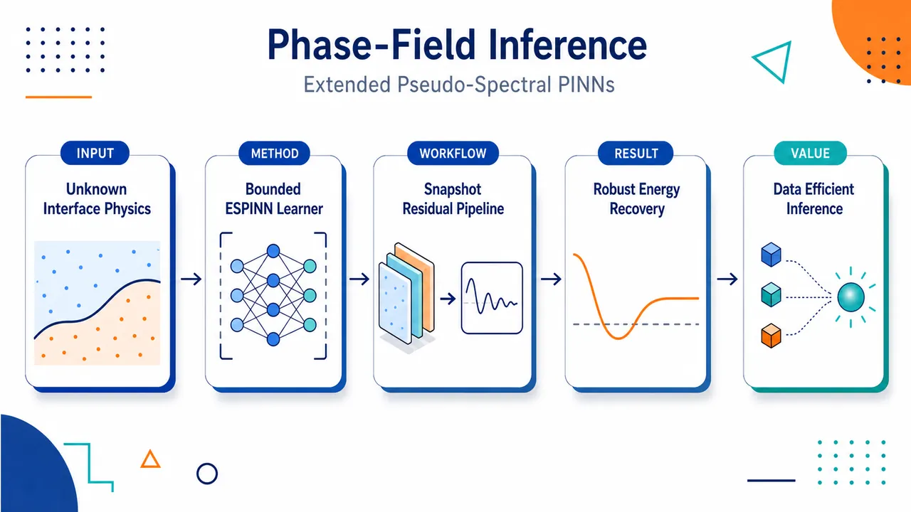
研究问题如何仅凭少量一维相分离瞬态快照，在固定 mobility、已知 Cahn–Hilliard 方程形式但未知构成关系的条件下，同时反推出体相化学势曲线 f(φ)=F′(φ) 和控制弥散界面宽度的界面厚度参数 ε，而不是像传统 SPINN 那样必须预先给定 ε。创新方法提出 ESPINN：用 MLP 表示未知的体相化学势 f(φ)，同时把梯度系数 γ=ε² 设计成带物理上下界的 sigmoid 可训练标量；二者共同嵌入半隐式伪谱时间推进残差中联合优化。Aha 点是把“下一帧快照预测误差”变成同时识别自由能曲线和界面尺度的物理约束，并避免四阶 PDE 自动微分和非物理参数值。工作流程输入为若干快照对 (Φ¹, Φ², Δt)：第一帧相场图像进入 MLP 得到 f(Φ¹)，可训练标量经 sigmoid 得到 γ=ε²；伪谱算子计算空间二阶/四阶导数；半隐式稳定时间步从 Φ¹ 预测下一帧 Φ̂²；将 Φ̂² 与真实 Φ² 的 L2 差作为损失；Adam 或 Adam+L-BFGS 训练后输出恢复的 f(φ) 曲线和 ε 数值。关键结果在一维 Cahn–Hilliard 数值实验中，ESPINN 能在无噪声数据下稳定、准确恢复多项式双阱和对数自由能对应的 f(φ)，并同时估计 ε；即使只有很少快照对，甚至单个快照对，也包含大量可恢复构成信息。加入噪声后误差平滑退化而非崩溃，增加快照数量可显著降低不同随机运行之间的方差。应用价值为材料相分离、聚合物混合物和生物分子凝聚体等相场系统提供数据高效的反问题工具：从有限显微图像或模拟瞬态轨迹中恢复自由能结构与界面尺度，减少对昂贵 CALPHAD 式实验测量和人工预设物性参数的依赖，并提升相场模型预测微结构演化的物理完整性。第一部分：核心概览 (Overview)
ESPINN 将 pseudo-spectral PINN/SPINN 从只识别 bulk chemical potential (f(φ)) 扩展到同时识别 自由能导数 与 梯度项系数/界面厚度参数 (ǎrepsilon)。核心突破在于把未知物性参数设计为有界可训练标量，并与表示 (f(φ)) 的 MLP 在半隐式谱时间推进残差中联合优化。该框架面向 phase-field inverse problems，尤其是一维 Cahn–Hilliard equation，强调从少量瞬态快照恢复构成关系；相较既有 SPINN 需预设 (ǎrepsilon)，该方法提升了数据驱动自由能识别的物理完整性和参数可辨识范围。
---
第二部分：结构化快速回顾
《Extended pseudo-spectral physics-informed neural networks for phase-field models》（None，）
背景：相场模型广泛用于描述材料与生物体系中的相分离，但 bulk free-energy density、interfacial thickness parameter 和 mobility 往往未知，限制预测能力。
方法：构建 ESPINN，用 MLP 表示 bulk chemical potential (f(φ))，用 sigmoid 重参数化的可训练标量表示未知梯度系数 (γ=ǎrepsilon²)，并通过半隐式伪谱时间推进残差训练。
结果：在一维 Cahn–Hilliard 数值实验中，平滑数据下可稳定恢复 (f(φ)) 与 (ǎrepsilon)；即使只有少量快照对，也能恢复大量构成信息；噪声存在时误差平滑退化，更多快照降低运行间方差。
讨论：框架保持相场 PDE 结构、周期边界和伪谱离散的物理一致性，避免纯数据拟合对有限观测的过拟合。
局限：数值验证主要集中在一维、固定 mobility (M=1)、已知 PDE 形式、周期边界、受控合成数据；同时识别 mobility、自由能和界面厚度会产生尺度不可辨识性。
结论：ESPINN 是一种数据高效、物理约束明确的相场模型反问题工具，可从瞬态演化快照中学习自由能结构与梯度系数。
---
第三部分：逐章节冷凝解析 (Section-by-Section Condensing)
Abstract
Phase-field constitutive inference as the central inverse problem
相场模型的关键未知量是 bulk free-energy density 与 interfacial thickness parameter，二者控制图案形成和微结构演化；摘要直接界定反问题目标为从有限动态观测中恢复构成量，原文表述为 *"the bulk free-energy density and the interfacial thickness parameter determine pattern formation and microstructural evolution"*，并指出这些量 *"are rarely known a priori and must be inferred from limited dynamical observations"*。
ESPINN simultaneously recovers free-energy derivative and gradient coefficients
ESPINN 的核心贡献是同时恢复 bulk chemical potential 和未知 gradient coefficients，不再像既有 SPINN 那样预设界面厚度参数；摘要中明确写道 *"an extended pseudo-spectral physics-informed neural network (ESPINN) framework is developed for the inverse identification of phase-field models from transient snapshot data"*，并且 *"It enables the simultaneous recovery of both the bulk chemical potential and unknown gradient coefficients"*。
One-dimensional Cahn–Hilliard validation supports data efficiency
数值验证集中在 one-dimensional Cahn–Hilliard equation，结论强调无噪声情形下恢复准确且统计稳定，甚至单个快照对也包含可恢复的构成信息；原文给出 *"Numerical experiments on the one-dimensional Cahn–Hilliard equation demonstrate accurate and statistically stable reconstruction in the noiseless regime"*，以及 *"substantial constitutive information recoverable from even a single snapshot pair"*。
Noise robustness improves with snapshot number
噪声下恢复精度不是崩溃式下降，而是渐进退化；更多快照通过降低运行间方差提高鲁棒性，原文为 *"In the presence of noise, reconstruction accuracy degrades gracefully, and increasing the number of snapshots improves robustness by reducing variance across runs"*。
---
1 Introduction
Phase separation spans materials and biological condensates
相分离被定位为跨领域基础机制，覆盖合金、聚合物混合物和细胞内液-液相分离；原文写道 *"Phase separation is a fundamental physical mechanism underlying pattern formation in a wide range of material systems"*，并列举 *"alloys"*、*"polymer mixtures"* 以及 *"liquid-liquid phase separation"* 在细胞生物学中的作用。细胞语境中，相分离被提出用于解释由蛋白质和核酸组成的无膜细胞器形成，即 *"the formation of membraneless organelles composed of proteins and nucleic acids"*。
Phase-field models encode free-energy descent through continuous order parameters
相场模型用一个或多个连续 order parameters 描述系统沿自由能下降方向演化，可同时刻画非均匀平衡态和瞬态动力学；原文为 *"These models introduce using one or more continuous order parameters that evolve along a direction of descent of the free energy functional"*，并且 *"They can describe both spatially heterogeneous equilibrium states and the transient dynamics of phase separation"*。
Cahn–Hilliard, Flory–Huggins, Ohta–Kawasaki and Voorn–Overbeek form the modelling lineage
模型谱系包括 Cahn–Hilliard equation、聚合物溶液的 Flory-Huggins type free energies、双嵌段共聚物的 Ohta-Kawasaki models，以及带电混合物的 Voorn-Overbeek model；原文具体列出 *"The Cahn-Hilliard model was introduced for non-uniform binary mixtures"*，以及 *"Flory-Huggins polymer solution models and their generalisations, including charged mixture models such as the Voorn-Overbeek model"*。
Predictive power depends on constitutive inputs
相场预测能力取决于 homogeneous free energy density、interfacial thickness parameter 和 mobility coefficient；论文将前两者作为主要研究对象，因为它们决定相行为和微结构。原文表述为 *"the predictive capability of phase field models depends critically on the specification of constitutive inputs"*，并强调 *"the homogeneous free energy density and the interfacial thickness parameter play a central role in determining phase behaviour and microstructure"*。
CALPHAD-style experimental inference is costly or unavailable
材料科学中自由能常通过 CALPHAD 等方法从大量实验数据推断，但跨参数空间采集数据成本高，甚至不可得；原文为 *"free energy functions are often inferred from extensive experimental measurements using approaches such as CALPHAD"*，且 *"the effort required to acquire experimental data across the parameter space of interest is substantial or may be unavailable"*。
Biomolecular free energy is sequence-sensitive
生物大分子的自由能高度依赖微观结构，尤其随蛋白质氨基酸序列变化；这使从模拟或实验演化数据反推出自由能结构成为重要问题。原文写道 *"For biological macromolecules, free energy is highly sensitive to microscopic structure and varies with protein amino acid sequence"*。
Classical inverse methods face identifiability limits
既有优化和反问题方法可从少量噪声快照识别 bulk chemical potential 和非线性 mobility，但若 mobility、chemical potential 和 interfacial thickness 同时未知，会出现内在不可辨识性；原文指出 *"treating the mobility, bulk chemical potential and interfacial thickness parameter as unknowns leads to inherent non-identifiability of the inverse problem"*，原因是 *"Due to scaling degeneracy, these are not uniquely recovered independently"*。
Mobility is fixed to avoid scaling degeneracy
该工作固定 mobility，集中识别剩余构成量；原文明确写道 *"In the present work, we fix the mobility and focus on identifying the remaining constitutive quantities"*。关键理由是这些量可由瞬态动力学推断，但无法仅由平衡剖面恢复，因为 *"a rescaling of space can eliminate the interfacial thickness parameter"*。
PINNs reduce data demand by embedding physics
Physics-informed neural networks 将 PDE 直接纳入训练目标，相比纯数据驱动网络，在训练数据有限时可降低数据需求并缓解过拟合；原文为 *"the governing physical laws, typically expressed as PDEs, are incorporated directly into the training objective"*，并指出 *"PINNs retain explicit physical constraints, which can reduce data requirements and mitigate overfitting when training data are limited"*。
Previous SPINN learned (f(φ)) but required known (ǎrepsilon)
Zhao 的 SPINN 用谱离散识别 Cahn–Hilliard 和 Allen–Cahn 中的 bulk chemical potential，但固定 mobility 和界面厚度参数；原文写道 *"Zhao identified the bulk chemical potential for the Cahn–Hilliard and Allen–Cahn equations"*，同时 *"fixing both the mobility and the interfacial thickness parameter a priori"*。
ESPINN extends SPINN to unknown gradient coefficients
该工作的直接创新是将 SPINN 扩展到未知梯度项系数；对于 Cahn–Hilliard 和 Allen–Cahn，这等价于未知 (ǎrepsilon)。原文给出 *"We now assume that the coefficients of the gradient terms (linear or non-linear) are unknown"*，并进一步说明 *"we extend the SPINN framework to learn all of these parameters, as well as the bulk chemical potential from dynamically evolving snapshot data"*。
Systematic numerical investigation targets architecture, optimisation and noise
数值研究不只展示可行性，还系统考察架构选择、优化策略和噪声鲁棒性；原文为 *"we perform a systematic numerical investigation of architectural choices, optimisation strategies, and, most importantly, the framework’s robustness to noise"*。
---
2 Phase-field models
General phase-field dynamics are written as gradient-flow-like evolution
相场模型统一写作
[
fracpartialφpartial t=Gfracδ Eδφ,
quad φ=φ(boldsymbolx,t),quad boldsymbolxinØmega,quad tin[0,T].
]
其中 (δ E/δφ) 是 Helmholtz free energy 对 order parameter 的泛函导数；原文定义为 *"(δ E/δφ) is the functional derivative of the Helmholtz free energy, (E), with respect to the order parameter, (φ)"*。
Free energy combines gradient penalty and homogeneous free-energy density
Helmholtz 自由能为
[
E=intØₘₑgₐłeft[fracǎrepsilon²2|nablaφ|²⁺F(φ)i̊ght]dboldsymbolx.
]
第一项惩罚尖锐空间变化，(ǎrepsilon) 控制界面厚度；原文写道 *"the first term is the gradient energy (penalising sharp spatial variations using an interfacial thickness parameter (ǎrepsilon)) and (F(φ)) is the homogeneous free energy density"*。
Functional derivative identifies the bulk chemical potential
泛函导数为
[
fracδ Eδφ=f(φ)-ǎrepsilon²Δφ,
quad f(φ)=F'(φ).
]
这里 (f(φ)) 是 bulk chemical potential，原文直接定义 *"with (f(φ)=Fprⁱme(φ)) being the bulk chemical potential"*。
Polynomial double-well free energy has minima at (± 1)
多项式自由能
[
F(φ)=frac(φ²⁻¹⁾²4
]
具有两个稳定相；原文给出 *"The homogeneous free energy (2) has two minima at (± 1) and a maximum at (φ=0)"*。其导数在实验中为
[
f(φ)=φ³⁻φ.
]
Logarithmic free energy has asymmetric concentration-domain structure
对数自由能
[
F(φ)=φłog(φ)+(1-φ)łog(1-φ)+frac5φ(1-φ)2
]
同样有两个稳定相；原文明确其极值为 *"the logarithmic form (3) has a maximum at (φ=0.5) with minima at (φapprox0.145) and (φapprox0.855)"*。其导数在实验中为
[
f(φ)=łog(φ)-łog(1-φ)+frac52-5φ.
]
Allen–Cahn equation is non-conservative phase transition dynamics
令 (G=-M)，得到
[
fracpartialφpartial t=M(ǎrepsilon²Δφ-f(φ)).
]
该模型描述相变界面演化，例如冰-水转变；原文写道 *"This is a fundamental phase-field model used to describe the evolution of interfaces in systems that undergo phase transitions, such as the transformation between ice and liquid water"*。在多项式自由能假设下，可设 (φ=1) 为冰、(φ=-1) 为水，原文为 *"we could assign (φ=1) to denote regions of solid ice and (φ=-1) to regions of liquid water"*。
Cahn–Hilliard equation conserves order parameter and models phase separation
令 (G=MΔ)，得到
[
fracpartialφpartial t=MΔ(f(φ)-ǎrepsilon²Δφ).
]
该模型用于 conserved order parameter 的相分离；原文写道 *"we provide a thermodynamically consistent framework for describing phase separation in systems where the order parameter is conserved"*，并以细胞内生物分子组分分离为例，即 *"such as the segregation of biomolecular components within a biological cell"*。
Spinodal amplification converts small perturbations into separated phases
Cahn–Hilliard 从初始扰动均匀混合物出发，小浓度涨落在热力学不稳定时自发放大，形成两个富集区域；原文写道 *"small fluctuations in the concentration can spontaneously amplify when the mixture is thermodynamically unstable"*，并导致 *"phase separation into dense regions of chemical I and chemical II"*。
Both Allen–Cahn and Cahn–Hilliard dissipate Helmholtz free energy
若 (G) 自伴且负半定，并且边界项消失，则
[
fracdEdt=intØₘₑgₐfracδ EδφGfracδ Eδφ,dboldsymbolxłeq0.
]
原文强调 *"Both the Allen-Cahn equation (4) and the Cahn-Hilliard equation (5) can be cast within a unified gradient-flow framework"*。稳态条件不同：Allen–Cahn 为 (δ E/δφequiv0)，Cahn–Hilliard 为 (nablaδ E/δφequiv0)，原文为 *"Stationary states occur when we have equality, which corresponds to (δ E/δφequiv0) for the Allen-Cahn equation and (nablaδ E/δφequiv0) for the Cahn-Hilliard equation"*。
Figure 1 uses identical 1D settings to contrast conservative and non-conservative dynamics
图 1 的参数为 (d=1)、(Ømega=[0,1])、(dt=10⁻⁴)、(dx=10⁻²)、(ǎrepsilon=0.05)、(f(φ)=φ³⁻φ)；图注写道 *"Both simulations use time step (dt=10⁻⁴), space discretization (dx=10⁻²), (ǎrepsilon=0.05) and (f(φ)=φ³-φ)"*。
Allen–Cahn relaxes toward a uniform phase whereas Cahn–Hilliard forms sharper structures
相同自由能下，两类动力学明显不同：Allen–Cahn 不守恒质量，界面不必持续存在，逐渐走向单一均匀相；Cahn–Hilliard 快速相分离并形成陡峭界面和平平台。原文写道 *"Since Allen–Cahn dynamics do not conserve mass, interfaces are not constrained to persist"*，而 Cahn–Hilliard *"undergoes rapid phase separation, as evidenced by the emergence of steep interfaces and extended plateaus near the stable states"*。
---
3 Extended SPINN framework
Feed-forward networks precede the ESPINN construction
该节先介绍前馈神经网络，再给出 ESPINN；原文开场为 *"we first introduce the background theory of feed-forward neural networks"*，并定义这类网络为 *"networks that map inputs to outputs by propagating information through a sequence of weighted layers without feedback or recurrence"*。
---
3.1 Multilayer perceptrons (MLPs)
MLPs are fully connected feed-forward networks with nonlinear activations
MLP 被定义为相邻层全连接、含非线性激活函数的前馈网络；原文写道 *"MLPs are feed-forward neural networks where adjacent layers are fully connected, each with non-linear activation functions"*。网络由输入层、隐藏层、输出层组成，深度定义为隐藏层数，原文为 *"The depth of an MLP is defined as the number of hidden layers"*。
Layer recursion formalises the neural representation of (f(φ))
给定输入 (boldsymbolxinRⁿ₁)，第 (ell) 层输出
[
boldsymbola[ell]
=
boldsymbolømega[ell]łeft(boldsymbolW[ell]boldsymbola[ell⁻¹]+boldsymbolb[ell]i̊ght),
quad ell=2,dots,L.
]
权重矩阵、偏置和激活函数分别为 (boldsymbolW[ell])、(boldsymbolb[ell])、(boldsymbolømega[ell])；原文定义 *"(boldsymbolW[ell]) and (boldsymbolb[ell]) are the weights and biases of the (ell)-th layer"*。
Activation functions tested include sigmoid, Tanh, ReLU, SiLU, ELU and GELU
实验考察六类激活函数：sigmoid、Tanh、ReLU、SiLU、ELU、GELU；原文直接列出 *"we test the following activation functions"*。其中 GELU 定义为
[
øperatornameGELU(z)=fracz2łeft[1+øperatornameerfłeft(fraczsqrt2i̊ght)i̊ght],
]
SiLU 定义为
[
øperatornameSiLU(z)=zḑotσ(z).
]
Figure 2 illustrates a two-hidden-layer scalar-input scalar-output MLP
图 2 展示单输入单输出、两个隐藏层、每层 5 个神经元的 MLP；图注为 *"Schematic example of an MLP with a single input-output and two hidden layers with five neurons in each layer"*。这类 MLP 后续用于近似 (f(Φ))。
---
3.2 Trainable scalar parameter
Unknown coefficients are represented by bounded scalar reparameterisation
未知系数 (γinR) 通过单个可训练标量 (θ) 和 sigmoid 映射限制在 ([γₗb,γᵤb])：
[
γ=γₗb+(γᵤb-γₗb)σ(θ).
]
原文写道 *"to represent an unknown coefficient (γinR), we parametrise it by a single trainable scalar (θ) and a sigmoid based reparametrisation that enforces the bounds"*。
Scalar physical parameters are jointly optimized with the (f(φ)) network
系数 (θ_γ) 与 (f(φ)) 网络同步训练，保证物理参数和函数形状共同适应数据；原文写道 *"The coefficient (θγ) is optimised concurrently with the network for (f(φ))"*，并强调 *"both components adapt consistently to the data"*。
Gradient magnitude is largest near sigmoid midpoint
优化器看到的导数为
[
fracdγdθ
=
(γᵤb-γₗb)σ(θ)(1-σ(θ)).
]
梯度大小与区间宽度成正比，并在 (σ(θ)approx0.5) 最大；原文写道 *"the gradient magnitudes are proportional to the interval width ((γᵤb-γₗb)) and are largest when (σ(θ)approx0.5)"*。
Midpoint initialisation avoids early vanishing gradients
实际初始化选择 (γ₀) 位于上下界中点，因此 (p=0.5)、(θ₀₌₀)，处于 sigmoid 近线性区；原文写道 *"we choose (γ₀) to lie in the middle of the range"*，并得出 *"(θ₀=0), precisely the linear region of the sigmoid function giving strong, non-vanishing gradients"*。
---
3.3 Physics-informed Neural Networks
PINNs embed PDE residuals directly into loss functions
PINN 将物理定律作为损失项，而不是仅拟合数据；原文定义为 *"a flexible, mesh-free approach to solving PDEs by embedding the underlying physical laws directly into the loss function of a neural network"*。网络 (boldsymboluΘ(boldsymbolx,t)) 是未知解的 surrogate model，原文为 *"serves as a surrogate model for the unknown solution of the governing equation"*。
Composite loss balances data, boundary, initial and residual terms
一般 PDE
[
boldsymboluₜ₊N[boldsymbolu]=0
]
的 PINN 训练目标为
[
L(Θ)=
łambdaᵢcLᵢc
+
łambdabcLbc
+
łambdaᵣLᵣ.
]
原文说明训练过程 *"involves minimising a composite loss function that balances the network’s accuracy on known data with its adherence to the physical model"*。
Automatic differentiation evaluates arbitrary-order derivatives in standard PINNs
PDE residual 通过自动微分从网络输出计算，原文写道 *"The latter is computed by applying automatic differentiation to the neural network output, thereby enabling efficient evaluation of derivatives of arbitrary order"*。
Adam followed by L-BFGS is highlighted as a strong optimisation strategy
训练可用 SGD、Adam 等，且已有研究显示 Adam 后接 L-BFGS 优于单独使用两者；原文写道 *"the combination of Adam training followed by the quasi-Newton method L-BFGS was found to be superior compared to using Adam or L-BFGS alone"*。
SPINN differs by approximating (f(φ)), not the field variable
Zhao 的 SPINN 不是用网络表示场 (φ(x,t))，而是用网络近似非线性 bulk chemical potential (f(φ))；原文强调 *"instead of using a neural network to approximate the field variables, the non-linear bulk chemical potential (f(φ)) is approximated by a neural network"*。
Known physical parameters are the key limitation of previous SPINN
既有 SPINN 要求界面厚度等物理参数已知；原文明确指出 *"A limitation of Zhao’s method is that model parameters, such as the interfacial thickness parameter, must be known to apply it"*。ESPINN 的提出正是为突破该限制，原文为 *"We now propose a Pseudo-spectral framework in which these physical parameters are unknown and can be simultaneously learned with the free energy function"*。
---
3.4 Extended SPINN methodology
The inverse problem assumes known PDE form but unknown constitutive function and parameters
ESPINN 的问题设置是：已知数据来自某类相场模拟，已知生成方程大体形式并固定 mobility，但 free energy function 和其他物理参数未知；原文写道 *"We assume we know the general form of the data-generating equation with constant mobility"*，并且 *"the free energy function and other physical parameters are unknown"*。
The practical motivation is coarse-grained inference from stochastic systems
该反问题源自从呈现相场样行为的随机系统中推导粗粒化构成性质；原文写道 *"This problem arose from the goal of deriving constitutive properties of coarse-grained systems from stochastic systems that exhibit behaviour similar to that of a phase-field model"*。
General PDE form separates known operators from unknown function and coefficients
一般形式为
[
fracpartialφpartial t
=
Głeft[
sumⱼ μⱼ gⱼ₍φ,nablaφ,Δφ)+f(φ)
i̊ght],
quad (boldsymbolx,t)inØmega×(0,T],
]
并采用周期边界条件。已知量是 (G) 和 (gⱼ)，未知量是 (f) 和 (μⱼ)；原文写道 *"the operators (G) and (gⱼ) are known, but the function (f) and parameters (μⱼ) are unknown"*。
Training data consist of snapshot pairs with time gaps
数据形式为
[
D
=
(Φᵢ⁽¹⁾,Φᵢ⁽²⁾,(Δ t)ᵢ₎ᵢ₌₁^N,
]
其中每个样本是两帧离散状态和它们之间的时间间隔；原文定义 *"we have (N) pairs of snapshots ((Φᵢ⁽¹⁾,Φᵢ⁽²⁾)) each separated with a time of ((Δ t)ᵢ)"*。
Discrete dynamics split linear and nonlinear parameterized terms
离散形式写成
[
fracpartialΦpartial t
=
Gₕ
łeft[
sumⱼαⱼLⱼ₍Φ)
+
sumⱼβⱼNⱼ₍Φ)
+
f(Φ)
i̊ght].
]
其中 (Lⱼ) 是线性项，(Nⱼ) 是其余项；原文写道 *"(Lⱼ₍Φ)) are linear terms and (Nⱼ₍Φ)) are the rest"*。目标是从快照数据中识别 (f)、(αⱼ)、(βⱼ)，原文为 *"The goal of this section is to use the data ... to find the function (f) and the values of the parameters (αⱼ) and (βⱼ)"*。
Semi-implicit linear stabilized time stepping defines the residual map
单步时间推进采用半隐式线性稳定格式：
[
fracΦₜ₊Δ ₜ-ΦₜΔ t
=
Gₕ
łeft[
sumⱼαⱼLⱼ₍Φₜ₊Δ ₜ)
+
sumⱼβⱼNⱼ₍Φₜ₎
+
f(Φₜ₎
+
C(Φₜ₊Δ ₜ-Φₜ₎
i̊ght].
]
该格式将线性项隐式处理、非线性项显式处理，并加入稳定项 (C)。
Neural estimators represent both (f(Φ)) and scalar coefficients
函数估计器和参数估计器定义为
[
N_f:Φ→N_f(Φ;θ_f),
quad
Nα_ⱼ(θα_ⱼ),
quad
Nβ_ⱼ(θβ_ⱼ).
]
原文说明 *"(Nf(Φ;θ_f)) is an MLP meant to reconstruct (f(Φ))"*，而 (Nα_ⱼ)、(Nβ_ⱼ) 是对应标量估计器。
The ESPINN loss compares predicted next snapshot with observed next snapshot
扩展线性 SPINN 的损失为
[
L(Θ)
=
fracC₀N
sumᵢ₌₁^N
|Φᵢ⁽²⁾
-
N_R(Φᵢ⁽¹⁾,(Δ t)ᵢ;Θ)
|₂².
]
原文定义 (Θ) 为所有 MLP 和标量参数的集合，即 *"(Θ=θ_f,θα_₁,ḑots,θβ_₁,ḑots) is the set of all trainable parameters"*。
All estimators are trained simultaneously
最小化该损失即可同时识别 (f(Φ))、(αⱼ)、(βⱼ)；原文写道 *"All networks/estimators are trained simultaneously"*。这种联合训练避免先拟合自由能再估参数的误差传递。
Loss scaling (C₀) controls conditioning without changing the minimizer
(C₀) 是训练稳定超参数，用于防止损失过小导致梯度消失；原文写道 *"(C₀) is a key hyperparameter that prevents our loss function from reducing to a point where vanishing gradients prevent further improvement"*。同时其不改变最小化解，原文为 *"does not alter the minimiser of the loss, and serves primarily to improve numerical conditioning"*。
Noise level informs the choice of (C₀)
实际中先做小规模测试，把训练末期损失调到约 (O(10⁻⁴))；原文写道 *"we adjust (C₀) such that the final loss after training is approximately (O(10⁻⁴))"*。平滑数据用更高 (C₀)，噪声数据用更低 (C₀)，以降低对噪声过拟合风险；原文为 *"A higher (C₀) is therefore used on smooth data, while a lower (C₀) is used on noisy data"*。
The target is a deterministic smooth chemical potential even from noisy data
噪声情形下，目标不是学习噪声，而是恢复平滑确定性的 (f(φ))；原文明确写道 *"Our goal is to find a deterministic smooth (f(φ)) even in noisy data"*。
The gradient coefficient is learned through (γ=ǎrepsilon²)
界面厚度参数通过梯度系数 (γ=ǎrepsilon²) 间接学习，(γ) 用单参数估计器 (Nγ(θγ)) 表示；原文写道 *"For the approximation of the interfacial thickness parameter (ǎrepsilon), we first define (γ=ǎrepsilon²), i.e. the gradient coefficient"*。
Smooth and noisy data use different optimisation protocols
平滑数据训练采用 Adam 后接 L-BFGS，噪声数据只用 Adam；原文写道 *"For smooth data, we train the networks using Adam followed by L-BFGS, whereas for noisy data, we perform only Adam"*。这体现噪声下二阶优化可能更易贴合噪声细节。
---
4 Cahn- Hilliard numerical experiments
Training data are generated by a 1D pseudo-spectral Cahn–Hilliard solver
数据来自一维 Cahn–Hilliard 系统，空间域 (xin[0,1])，(Δ x=10⁻²)，(Δ t=10⁻⁴)，每个时间步保存 (Φ(x,t))；原文写道 *"we simulate a 1D Cahn-Hilliard system using a linear semi-implicit pseudo-spectral time stepping method with (xin[0,1]), (Δ x=10⁻²) and (Δ t=10⁻⁴) saving the state of (Φ(x,t)) at each time step"*。
Initial conditions are small random perturbations around homogeneous states
初始条件为
[
Φ(x,0)=c+δξ(x),
quad δ=10⁻⁴.
]
多项式自由能取 (c=0)，对数自由能取 (c=0.5)；(ξ(x)) 对每个 (xin[0,1]) 从 ([-1,1]) 均匀采样。原文给出 *"(δ=10⁻⁴) with (c=0) for the polynomial free energy and (c=0.5) for the logarithmic free energy"*，以及 *"(ξ(x)) is sampled from a uniform distribution in the range ([-1,1])"*。
Mobility is fixed to (M=1)
实验固定 mobility 为 (M=1)，因为 mobility 主要调节相分离发生速度，且存在尺度任意性；原文写道 *"we let (M=1), since this adjusts the speed at which phase separation occurs (and so is somewhat arbitrary)"*。
The spatial discretisation uses 100 equally spaced grid points
离散空间算子用下标 (h) 表示，空间中采用 100 个等距点；原文写道 *"we choose 100 equally spaced points in (xin[0,1])"*。这与 (Δ x=0.01) 一致。
For Cahn–Hilliard, the unknown gradient coefficient enters as (-γpartialₓₓΦ)
实验中的参数化为
[
sumⱼαⱼLⱼ₍Φ)
=
-Nγ(θγ)(partialₓₓΦ)ₕ,
quad
sumⱼβⱼNⱼ₍Φ)=0,
quad
Gₕ₌₍partialₓₓ)ₕ.
]
原文给出相同表达，说明该数值实验只学习一个线性梯度系数，无额外非线性参数项。
The stabilising term is (C=-2(partialₓₓ)ₕ)
半隐式稳定项选择为
[
C=-2(partialₓₓ)ₕ.
]
原文写道 *"We used the stabilising term (C=-2(partialₓₓ)ₕ)"*。该项进入 ESPINN 残差映射以提升时间推进和训练稳定性。
Training snapshots are selected from the dynamic stage after initial settling
训练使用 (N) 个随机快照对，且取自初始随机态稳定后的动态阶段；原文写道 *"trained on (N) random snapshot pairs ... taken suitably after the initial random state has settled when the problem is in its dynamic stage"*。这避免初始噪声主导反演，同时保留足够动力学信息。
Two bulk chemical potentials are tested
实验测试两个 (f(φ))：
[
f(φ)=φ³⁻φ
]
和
[
f(φ)=łog(φ)-łog(1-φ)+frac52-5φ.
]
原文写道 *"We tested the method on the bulk chemical potentials (f(φ)=φ³⁻φ) and (f(φ)=łog(φ)-łog(1-φ)+frac52-5φ)"*，它们分别是式 (2) 和式 (3) 自由能的导数。
Smooth-data optimisation uses 20,000 Adam epochs plus up to 3,000 L-BFGS epochs
训练方案为 Adam 20,000 epochs，随后 L-BFGS 最多 3,000 epochs；原文写道 *"we used Adam for 20,000 epochs, followed by L-BFGS, given that the data are smooth, with a maximum of 3,000 epochs"*。
The gradient coefficient bounds are ([10⁻⁴,0.1])
由于空间步长大小，(γ) 的合理边界设为
[
[γₗb,γᵤb]=[10⁻⁴,0.1].
]
原文写道 *"Due to the size of (dx), we chose reasonable limits on the gradient coefficient (γ) of ([γₗb,γᵤb]=[10⁻⁴,0.1])"*。
Statistical robustness is assessed over 100 random-seed runs
每组结果报告 100 次运行的均值和方差；每次运行随机化训练快照、参数初始化，噪声实验还随机化训练前加入的数据噪声。原文写道 *"We report the mean and variance over 100 runs, each initialised with a different seed"*，并说明 *"the seed randomises the (N) snapshots used as the training data, the parameter initialisation (Θ), and, in the case of noisy data, the noise applied to the data before training"*。
The randomisation protocol is explicitly designed to demonstrate robustness
随机化不是偶然实现细节，而是鲁棒性评估设计；原文写道 *"Such randomisation was chosen to demonstrate the model’s robustness"*。
Initial (C₀₌₁₀¹⁰) is adjusted to yield final loss near (10⁻⁴)
先用 (C₀₌₁₀¹⁰) 做测试，再调整使最终损失 (LsimO(10⁻⁴))；原文为 *"A test run was first performed with (C₀₌₁₀¹⁰), which was then adjusted as necessary such that the final loss (LsimO(10⁻⁴))"*。
Evaluation uses relative (L²) error for (f) and relative absolute error for (ǎrepsilon)
训练后输出定义为
[
hat f:=N_f(Φ,θ_f),
quad
hatǎrepsilon:=sqrtNγ(θγ).
]
误差定义为
[
E_f=frac|hat f-f|L^₂|f|L^₂,
quad
Eǎᵣₑₚₛᵢₗₒₙ=frac|hatǎrepsilon-ǎrepsilon|ǎrepsilon.
]
原文写道 *"let the relative errors between the predicted (hat f) and (hatǎrepsilon) and that of the actual bulk chemical potential (f) and interfacial thickness parameter (ǎrepsilon)"*。
The visible text specifies a baseline network of two layers with 20 neurons each
可见内容末尾说明，在 Sections 4.1、4.2 和 4.4 中，(N_f) 使用 2 层、每层 20 个神经元；原文截断处为 *"we trained the model with the neural network (N_f) having 2 layers of 20 neurons each"*。
---
第四部分：深度理解与语言支持 (Understanding & Nuance)
1. 术语解析
Bulk chemical potential
语境中指 (f(φ)=F'(φ))，即均匀自由能密度对相场变量的导数。它不是完整化学势；完整变分导数为
[
μ=fracδ Eδφ=f(φ)-ǎrepsilon²Δφ.
]
因此 bulk 强调只来自局域均匀自由能，而不含梯度能贡献。
Interfacial thickness parameter
(ǎrepsilon) 控制弥散界面的宽度和梯度能惩罚强度。自由能中出现 (ǎrepsilon²|nablaφ|²/2)，Cahn–Hilliard 中对应 (-ǎrepsilon²Δφ)。数值反演时学习的是 (γ=ǎrepsilon²)，再取平方根得到 (ǎrepsilon)。
Gradient coefficient
比 interfacial thickness parameter 更一般。对于标准 Cahn–Hilliard/Allen–Cahn，gradient coefficient 就是 (γ=ǎrepsilon²)；对于更复杂相场模型，梯度项可能是线性或非线性、多项系数，因此 gradient coefficients 泛指所有导数项前的未知物理参数。
Scaling degeneracy
尺度退化指多个参数组合产生相同动力学，导致单个参数不可唯一识别。例如 mobility 改变可通过时间尺度改变抵消；界面厚度也可能通过空间尺度重标度消去。该文固定 (M)，正是为避免同时识别 (M)、(f)、(ǎrepsilon) 时的不可辨识性。
Snapshot pair
不是连续时空全场数据，而是两个时间点的全空间离散状态 ((Φ⁽¹⁾,Φ⁽²⁾)) 及间隔 (Δ t)。ESPINN 用半隐式时间推进从第一帧预测第二帧，并用两者差异训练。
---
2. 疑难查证
为什么仅靠平衡剖面无法恢复 (ǎrepsilon)，但瞬态数据可以？
平衡时，Cahn–Hilliard 的条件是 (nabla(δ E/δφ)=0)，即化学势为空间常数。若只看最终界面形状，空间坐标重标度 (xmapsto x/ǎrepsilon) 可以吸收界面厚度，使不同 (ǎrepsilon) 产生相似的归一化平衡界面。因此单个平衡图像无法唯一决定 (ǎrepsilon)。
瞬态动力学不同：(ǎrepsilon) 不只影响界面宽度，还影响相分离增长率、界面运动速度和粗化动力学。快照对提供时间方向信息，半隐式残差中 (Δ t)、(partialₓₓ)、(partialₓₓₓₓ) 的组合会约束 (γ=ǎrepsilon²)，所以可在固定 mobility 后从动力学中识别。
为什么 ESPINN 不直接用 PINN 学 (φ(x,t))？
标准 PINN 用网络近似 (φ(x,t))，再通过自动微分计算 PDE 残差。Cahn–Hilliard 是四阶 PDE，高阶导数的自动微分训练通常更困难。SPINN/ESPINN 改为用伪谱离散直接处理空间导数，用神经网络只表示未知函数 (f(φ))。这样未知对象维度更低，也更贴近反问题目标：需要恢复的是构成关系，而不是某一次模拟轨迹的连续插值。
为什么噪声数据只用 Adam，不接 L-BFGS？
L-BFGS 是强局部优化器，能更彻底地压低训练损失。平滑数据中这有利于精确收敛；噪声数据中，过度压低快照误差可能把随机噪声当成真实 (f(φ)) 的细节来拟合。Adam 的随机性和一阶更新反而提供一定正则化效果，因此噪声情形只用 Adam 更稳健。
为什么 (C₀) 不改变最小化解却影响训练？
损失乘以正常数 (C₀) 后，理论最小点不变，因为所有候选参数的相对排序不变。但神经网络优化依赖有限精度和梯度尺度：损失太小会导致梯度接近数值噪声，训练停滞；损失太大可能导致更新不稳定。调节 (C₀) 本质上是调节优化器看到的梯度量级。
---
第五部分：创新评估与关联 (Synthesis & Novelty)
1. 创新性判断
从只学自由能导数到同时学自由能导数和界面参数
近年 SPINN 已能从图像或快照中识别 (f(φ))，但通常固定 mobility 和 (ǎrepsilon)。ESPINN 的关键新颖性在于将 未知梯度系数 纳入同一伪谱 PINN 框架，使 (f(φ)) 与 (γ=ǎrepsilon²) 通过同一个时间推进残差联合识别。
以有界可训练标量解决物理参数学习的稳定性问题
直接学习 (ǎrepsilon) 或 (γ) 容易出现负值、非物理范围或梯度消失。sigmoid 有界重参数化既嵌入先验物理范围 ([γₗb,γᵤb])，又通过中点初始化保证早期梯度强。这是一个小而实用的工程创新，提升了物理参数反演稳定性。
把半隐式伪谱时间推进嵌入神经网络损失
ESPINN 不依赖连续时间自动微分求四阶导数，而把数值分析中稳定的半隐式伪谱格式转化为可训练残差映射 (N_R)。这种做法兼顾 Cahn–Hilliard 高阶 PDE 的数值稳定性和 PINN 的反问题灵活性。
正面处理噪声与少快照数据，而非只展示无噪声可行性
摘要和方法部分强调噪声下误差平滑退化、多快照降低方差，并通过 100 个随机种子重复评估稳定性。相较只在干净模拟数据上展示单次拟合曲线的工作，该框架更接近真实实验/模拟反演的统计要求。
明确绕开不可辨识性，而不是隐含假设可全部恢复
同时学习 mobility、free energy 和 interfacial thickness 会因尺度退化不可唯一识别。该工作固定 (M)，将可辨识对象限制为 (f(φ)) 和 (ǎrepsilon)，体现了反问题层面的严谨性。创新点不在“学习所有物理量”，而在“在可辨识条件下扩展可学习构成量”。
解决的前人未充分解决问题
核心问题是：在只给少量瞬态相分离快照、且界面厚度未知时，如何同时恢复自由能结构和梯度能尺度。既有 SPINN 需要预设 (ǎrepsilon)，经典优化方法又容易受不可辨识性和噪声影响。ESPINN 用物理一致的伪谱时间残差、有界参数化和联合训练，将自由能识别从“已知梯度参数条件下的函数回归”推进到“未知梯度参数条件下的构成关系反演”。
-
05
📊 含图深析
📄 摘要：利用机器学习势开展分子动力学，考察 Bi 合金化对 hcp Mg 中锥面位错滑移的促进作用。Mg 轻质高强但室温延展性受限，模拟聚焦合金化如何增强非基面塑性变形通道，为改善 Mg 合金塑性提供原子尺度机制。
💡 亮点：机器学习势使 Mg-Bi 合金中位错滑移可在分子动力学尺度解析。结果聚焦 Bi 对锥面滑移的促进，是 Mg 合金延展性设计的关键微观线索。
📖 展开分析 + 配图
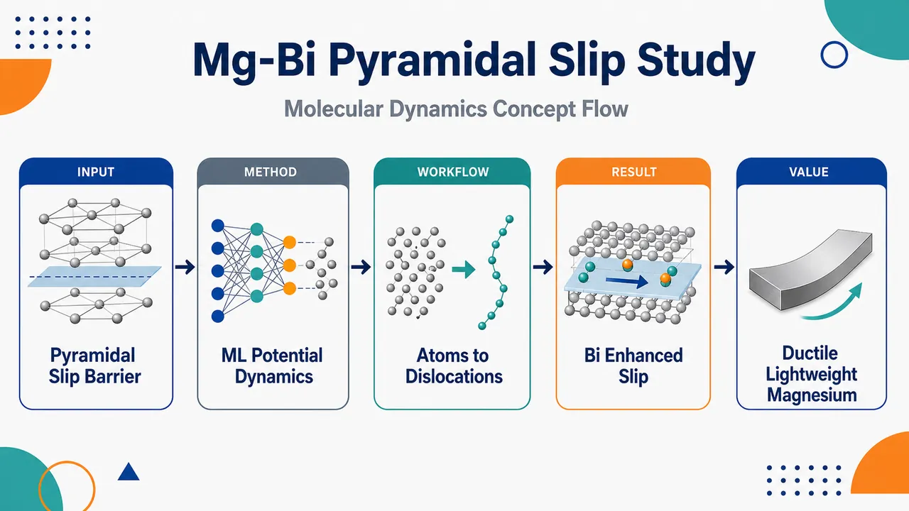
研究问题轻质 hcp 镁合金室温延展性差的关键瓶颈是非基面滑移难以启动；论文聚焦“Bi 合金化为什么、如何促进 Mg-Bi 合金中的锥面位错滑移”，从原子尺度寻找延展性提升机制。创新方法将机器学习势与分子动力学结合，用近第一性原理精度的大尺度动态模拟捕捉 Mg-Bi 合金中复杂的锥面位错运动；Aha 点是用高精度机器学习势直接观察 Bi 对非基面位错可动性的促进作用，而不是只依赖传统经验势或静态能量计算。工作流程输入 Mg-Bi 合金原子模型与锥面位错构型；用机器学习势描述 Mg-Bi 原子间相互作用；开展分子动力学加载或演化模拟；跟踪锥面位错在 hcp 晶格中的滑移路径、运动状态和局部原子结构变化；输出 Bi 对位错滑移可动性和非基面塑性机制的原子尺度解释。关键结果模拟表明 Bi 能促进 Mg-Bi 合金中的锥面位错滑移，使原本较难激活的非基面变形模式更易发生；该发现支持 Bi 合金化可改善 Mg 合金塑性变形能力的观点，但摘要未给出滑移阻力、能垒或临界应力的具体数值提升。应用价值为设计高延展性轻质镁合金提供原子尺度依据：通过 Bi 等合金元素调控锥面位错运动，增强非基面滑移能力，从而改善 hcp Mg 在室温下的塑性加工性能，可服务于航空航天、交通运输和轻量化结构材料开发。核心概览
该论文属于镁合金塑性变形与原子尺度模拟方向，采用机器学习势分子动力学研究 Mg-Bi 合金中 Bi 合金化对 hcp Mg 锥面位错滑移的促进作用及其延性改善机制。
方法要点
- 使用机器学习势进行分子动力学模拟，以研究 Mg-Bi 合金的原子尺度变形行为。
- 聚焦 hcp Mg 中非基面塑性变形，特别是锥面位错滑移。
- 通过模拟 Bi 合金化对位错滑移行为的影响，分析其与室温延性改善之间的关系。
- 具体机器学习势类型、训练数据、模拟体系尺寸、温度/应变条件等摘要未详述。
关键结果
- Bi 合金化被认为能够促进 Mg 中锥面位错滑移。
- 该促进作用有助于解释 Mg 合金延性改善的原子尺度机制。
- 研究结论针对 hcp Mg 室温延性受限这一问题，强调非基面滑移活化的重要性。
- 摘要未详述定量结果、位错核心结构变化、能垒变化或应力-应变数据。
创新性判断
- 可能的新颖点在于将机器学习势分子动力学用于 Mg-Bi 合金锥面位错滑移研究，以兼顾较高原子尺度精度和较大规模/较长时间模拟能力；但具体优势摘要未详述。
- 相比仅研究基面滑移或经验势模拟的工作，该研究可能更聚焦 Bi 对非基面塑性机制的影响，尤其是锥面滑移促进机制；这一判断基于摘要，仍有不确定性。
- 若论文确实揭示了 Bi 促进锥面滑移的原子机制，则其创新性可能体现在为 Mg-Bi 合金延性提升提供微观解释；但具体机制路径摘要未详述。
-
06
📊 含图深析
📄 摘要：面向 LPBF 增材制造实时监测，建立正常/异常熔池二分类框架。数据来自 NIST AMMT 平台的镍基高温合金 625，共 1200 张平衡图像；比较三类模型在准确率与推理时间上的表现，并结合开放架构 LPBF 设备的控制需求和硬件限制评估可部署性。
💡 亮点：以 1200 张 Inconel 625 熔池图像测试实时异常识别模型，同时考量精度和推理延迟。该工作把机器视觉监测直接约束到 LPBF 闭环控制条件。
📖 展开分析 + 配图
研究问题在激光粉末床熔融（LPBF）增材制造中，如何在开放架构设备和有限算力条件下，利用熔池图像实时判断“正常/异常”状态，快速发现可能导致成形缺陷的熔池异常。创新方法提出“EfficientNetB0 预训练视觉特征 + Random Forest 分类器”的混合模型：先用预训练 CNN 将熔池图像压缩成高层特征向量，再用随机森林完成小样本异常分类；Aha 点在于不端到端训练大型深度网络，而是把深度特征提取与轻量经典集成分类结合，兼顾小数据鲁棒性和毫秒级推理。工作流程输入 NIST AMMT 平台采集的镍基高温合金 625 熔池图像；进行尺寸统一、归一化和标签保持型数据增强；按 80/20 划分训练测试集，训练集再 90/10 划分验证集；分别训练 ResNet50、EfficientNetB0、MobileNetV2、原始像素 Random Forest 和 EfficientNetB0 特征 Random Forest；输出每张熔池图像的正常/异常分类，并评估准确率、F1、AUC、推理延迟和资源占用。关键结果最佳模型为 EfficientNetB0 + Random Forest 混合方案，在独立测试集上达到 F1=0.9451、accuracy=0.9458、AUC=0.9904，单张图像推理约 1.15 ms；相比纯深度学习模型，它同时获得更高分类性能和更低推理延迟。应用价值为 LPBF 工厂现场提供可部署的实时熔池异常筛查工具，可在数据量有限、硬件受限的开放架构增材制造设备上快速预警熔池异常，降低离线检测依赖，支持在线质量监测和未来闭环过程控制。第一部分：核心概览
围绕 LPBF 增材制造熔池实时监测，构建了面向正常/异常熔池图像的二分类机器学习框架。核心贡献在于用 EfficientNetB0 预训练特征 + Random Forest 的混合路线，在仅 1,200 张 NIST AMMT 镍基高温合金 625 熔池图像上实现 F1=0.9451、AUC=0.9904、单图推理 1.15 ms，兼顾精度与实时部署约束。该工作定位于数据受限、硬件受限的开放架构 LPBF 设备在线质量监测研究。
---
第二部分：结构化快速回顾
《Machine Learning Modeling for Real-Time Melt Pool Monitoring in Laser Powder Bed Fusion Additive Manufacturing: A Hybrid Approach》（None，）
背景
Laser powder bed fusion, LPBF 的熔池状态直接关联成形质量与缺陷形成，开放架构 LPBF 设备需要在有限硬件条件下实现 real-time monitoring。研究问题聚焦于用 AI/ML 对熔池图像进行正常/异常二分类，服务于在线异常检测。
方法
使用来自 NIST AMMT platform、材料为 Nickel superalloy 625 的 1,200 张平衡熔池图像。数据按 80/20 train-test split 划分，训练集再按 90/10 validation split 划分。模型包括三种迁移学习 CNN：ResNet50、EfficientNetB0、MobileNetV2；两种 Random Forest：一种基于 EfficientNetB0 feature embeddings 的混合模型，另一种基于 raw pixel features 的基线模型。
结果
最佳模型为 EfficientNetB0-plus-Random Forest hybrid approach，测试集达到 F1 score = 0.9451、accuracy = 0.9458、AUC = 0.9904，单图推理延迟为 1.15 ms。纯深度学习模型推理时间更高且准确率更低。
讨论
预训练卷积特征能够提取熔池图像中的高层视觉表征，Random Forest 在小样本场景下具有较强鲁棒性与较低计算成本。二者结合比端到端深度网络更适合 data-limited additive manufacturing environments 与工厂现场实时监测。
局限
数据规模仅 1,200 images，任务为 binary image classification，异常类型未进一步细分；验证对象限定于 Nickel superalloy 625 与 NIST AMMT platform，跨材料、跨机器、跨工艺参数的泛化能力尚未由现有信息证明。
结论
混合式 pre-trained CNN feature extraction + classical ensemble classifier 路线在 LPBF 熔池异常检测中实现了高精度、低延迟与较好可部署性，是数据有限制造场景下实时质量监测的有效技术路线。
---
第三部分：逐章节冷凝解析
Abstract
- Real-time LPBF monitoring is framed as an AI/ML deployment problem
研究目标不是单纯提高离线分类精度，而是面向 LPBF additive manufacturing 中的 real-time monitoring，将模型性能与设备控制需求、硬件限制绑定。关键表述为 *"This work investigates the implementation of artificial intelligence and machine learning (AI/ML) for real-time monitoring in laser powder bed fusion (LPBF) additive manufacturing."* 这意味着评价标准必须同时覆盖 分类性能 与 实时可部署性，而非仅报告 accuracy。
- The task is binary melt pool image classification
任务被明确设定为 normal vs abnormal melt pool images 的二分类问题，目标是识别熔池状态异常。数据框架为 *"a binary image classification framework for distinguishing normal and abnormal melt pool images"*。这种设定适合在线报警或过程控制中的第一层异常筛查，但不直接解决异常类型归因、缺陷尺寸估计或根因诊断。
- The dataset is balanced and experimentally grounded
数据集规模为 1,200 images，且类别平衡，来源于 Nickel superalloy 625 在 NIST AMMT platform 上采集的熔池图像。关键证据为 *"using a balanced dataset of 1,200 images collected from Nickel superalloy 625 on the NIST AMMT platform."* 平衡数据减少了 accuracy 被多数类支配的风险；NIST AMMT 平台增强了数据来源的实验可信度。
- Evaluation is explicitly tied to control requirements and open-architecture LPBF constraints
模型评价包含 accuracy 与 inference time，并明确依据开放架构 LPBF 设备的控制与硬件限制。证据为 *"The study evaluates accuracy and inference time based on control requirements and hardware limitations of open-architecture LPBF machines."* 这使研究问题从普通图像分类扩展为 real-time cyber-physical manufacturing monitoring 问题。
- Five modeling strategies are benchmarked
对比模型包括三种迁移学习架构：ResNet50、EfficientNetB0、MobileNetV2；以及两种 Random Forest：一种使用 EfficientNetB0 嵌入特征，另一种使用原始像素。关键句为 *"We benchmark three transfer learning architectures (ResNet50, EfficientNetB0, and MobileNetV2) against two Random Forest approaches: one trained on EfficientNetB0 feature embeddings (hybrid) and one trained on raw pixel features (baseline)."* 该设计能够分离三类因素：深度特征提取能力、经典集成分类器能力、原始像素基线性能。
- The hybrid model isolates feature learning from classification
EfficientNetB0 feature embeddings + Random Forest 的混合方法将卷积网络作为特征提取器，将分类决策交给经典集成模型。原文使用 *"EfficientNetB0 feature embeddings (hybrid)"* 描述该路线。其隐含逻辑是：在小样本 LPBF 图像场景中，端到端深度训练可能过拟合或推理成本偏高，而预训练特征可提供更稳定视觉表征。
- The raw-pixel Random Forest is a baseline for feature representation value
第二个 Random Forest 直接使用 raw pixel features，原文为 *"one trained on raw pixel features (baseline)."* 该基线用于检验深度嵌入特征是否确实优于低层像素表征。如果混合模型显著优于 raw-pixel RF，则性能提升主要可归因于 pre-trained convolutional features，而非 Random Forest 本身。
- Data splitting uses stratification and nested validation
数据采用分层划分：80/20 train-test split，训练集内部再进行 90/10 validation split。证据为 *"Images are stratified into 80/20 train-test splits, with a further 90/10 validation split on the training set."* 对 1,200 images 而言，测试集约 240 张，训练验证总体约 960 张；训练集再分后约 864 张训练、96 张验证。分层划分有助于保持正常/异常类别比例一致。
- Preprocessing standardizes input and simulates process variability
图像预处理包括 resizing、normalization 与 label-preserving data augmentation。原文为 *"undergo standardized resizing, normalization, and label-preserving data augmentation to emulate realistic process variability."* 其中 label-preserving augmentation 表明增强操作不会改变正常/异常标签，目标是模拟真实 LPBF 过程中光照、形态、位置或噪声波动带来的图像变化。
- Metrics cover discrimination, classification balance, latency, and hardware usage
性能指标包含 accuracy、precision、recall、F1 score、AUC，并额外记录 training time、inference latency、CPU & GPU usage。关键证据为 *"Each model is evaluated using accuracy, precision, recall, F1 score, and area under the receiver operating characteristic curve (AUC), along with training time, inference latency, and CPU & GPU usage."* 这组指标覆盖了分类质量、阈值无关判别能力、实时性与资源占用。
- Deployability is treated as a first-class constraint
评价指标被明确用于捕捉 factory-floor monitoring 的部署约束。原文为 *"to capture deployability constraints relevant to factory-floor monitoring."* 这里的核心不是实验室最高性能，而是在工厂现场受限计算资源、低延迟决策要求下稳定运行。
- The hybrid EfficientNetB0-plus-Random Forest achieves the best held-out performance
最佳结果出现在 held-out test set 上，混合模型达到 F1 score = 0.9451、accuracy = 0.9458、AUC = 0.9904。关键句为 *"The hybrid EfficientNetB0-plus-Random Forest approach achieves the best performance on the held-out test set, with an F1 score of 0.9451, accuracy of 0.9458, and AUC of 0.9904."* 其中 AUC=0.9904 表明模型对正常/异常样本具有很强排序区分能力；F1=0.9451 表明 precision 与 recall 的平衡较好。
- Inference latency is near real-time and sub-millisecond-scale
混合模型单图推理为 1.15 ms，原文表述为 *"while maintaining sub-millisecond per-image inference (1.15 ms)."* 数值上 1.15 ms 严格来说略高于 1 ms，因此“sub-millisecond”与括号内数值存在轻微表述张力；但从实时监测角度看，约毫秒级推理仍显著快于许多端到端 CNN。
- Pure deep learning models are slower and less accurate in this setting
纯深度学习模型表现为推理时间更高、准确率更低。证据为 *"In contrast, purely deep learning models exhibit significantly higher inference times with lower accuracy."* 这说明在该数据规模与硬件约束下，更复杂的端到端 CNN 并未带来部署收益，反而可能损害实时性。
- The central conclusion favors pre-trained convolutional features plus classical ensembles
总结性结论为，预训练卷积特征与经典集成方法结合，是一种稳健且计算高效的路线。原文为 *"combining pre-trained convolutional features with classical ensemble methods provides a robust, computationally efficient route to real-time melt pool anomaly detection."* 该结论特别适用于 data-limited additive manufacturing environments，即样本规模有限、标注成本高、现场计算资源有限的制造环境。
---
Subjects
- The work sits at the intersection of machine learning and computer vision
学科分类为 Machine Learning 与 Computer Vision and Pattern Recognition。原始条目为 *"Subjects: Machine Learning (cs.LG) ; Computer Vision and Pattern Recognition (cs.CV)."* 这表明研究贡献主要是算法建模与视觉识别，而不是材料机理建模、热流体仿真或闭环控制理论。
- The application domain is manufacturing monitoring rather than generic image classification
虽然分类被归入 cs.LG 和 cs.CV，但问题场景是 LPBF melt pool monitoring。标题中的 *"Real-Time Melt Pool Monitoring in Laser Powder Bed Fusion Additive Manufacturing"* 将普通视觉分类问题约束在增材制造熔池监控语境中，强调工业实时性、异常检测和可部署性。
---
Cite as
- The paper is an arXiv machine learning preprint
引用条目为 *"Cite as: arXiv:2606.23851 [cs.LG]"*，版本标识为 *"arXiv:2606.23851v1 [cs.LG] for this version"*。这说明当前材料是 arXiv 预印本，尚不能由提供信息确认是否经过同行评审、正式会议或期刊录用。
- The DOI is arXiv-issued and pending registration
页面显示 *"https://doi.org/10.48550/arXiv.2606.23851"*，并注明 *"arXiv-issued DOI via DataCite (pending registration)."* 这说明 DOI 与 arXiv 版本绑定，便于引用和追踪，但不等同于期刊 DOI。
---
Submission history
- The first version was submitted on 22 June 2026
投稿历史显示 *"[v1] Mon, 22 Jun 2026 18:38:29 UTC"*。因此当前可见版本为 v1，发布时间为 2026-06-22 18:38:29 UTC。
- The listed corresponding submission source is Xinyao Zhang
投稿来源栏为 *"From: Xinyao Zhang"*。这仅表明 arXiv 提交账户或提交者信息，不必然等同于通讯作者身份，除非正文中另有说明。
---
Title
- The title signals a hybrid machine learning strategy for real-time monitoring
标题为 *"Machine Learning Modeling for Real-Time Melt Pool Monitoring in Laser Powder Bed Fusion Additive Manufacturing: A Hybrid Approach."* 关键词 Machine Learning Modeling、Real-Time Melt Pool Monitoring、Laser Powder Bed Fusion 与 Hybrid Approach 同时出现，说明研究重点是将机器学习模型设计嵌入 LPBF 熔池实时监控任务，而非单纯提出新 CNN 架构。
- The phrase “hybrid approach” indicates combination rather than replacement
标题中的 *"A Hybrid Approach"* 与摘要中的 *"EfficientNetB0-plus-Random Forest approach"* 对应，具体含义是结合 pre-trained CNN feature extraction 与 classical ensemble classification。这种混合不是物理模型与数据驱动模型的混合，而是深度视觉特征与传统机器学习分类器的混合。
---
Authors
- The author list contains four researchers
作者为 *"Inioluwa Emmanuel , Zhuo Yang , Ho Yeung , Xinyao Zhang"*。研究团队规模为 4 人，但提供内容未包含机构、贡献分工、通讯作者声明或资金来源信息。
---
第四部分：深度理解与语言支持
1. 术语解析
- Melt pool monitoring
Melt pool 指 LPBF 中激光作用下粉末或已凝固材料局部熔化形成的微小熔融区域。Melt pool monitoring 不是普通表面成像，而是通过图像或传感器信号追踪熔池的尺寸、亮度、形状、稳定性等状态。语境中对应 *"real-time melt pool anomaly detection"*，重点是在线发现异常熔池状态。
- Held-out test set
Held-out test set 指训练和调参过程中完全不参与的数据，用于最终泛化性能估计。摘要中的 *"best performance on the held-out test set"* 表明 F1=0.9451、accuracy=0.9458、AUC=0.9904 不是训练集结果，而是独立测试集结果。它比训练精度更有证据价值。
- Feature embeddings
Feature embeddings 是神经网络把原始图像映射成的高维特征向量。这里的 *"EfficientNetB0 feature embeddings"* 表示 EfficientNetB0 不一定作为最终分类器，而是作为视觉特征提取器，输出供 Random Forest 使用的表征。
- Label-preserving data augmentation
Label-preserving 的微妙含义是：数据增强不能改变样本的语义类别。对熔池图像而言，轻微旋转、缩放、亮度扰动可能仍保持“正常/异常”标签；但过度裁剪或形态变形可能改变异常证据，因此未必 label-preserving。该短语在摘要中为 *"label-preserving data augmentation to emulate realistic process variability."*
- Deployability constraints
Deployability constraints 指模型能否真正部署到工厂现场，而不仅是实验室跑分。包括 inference latency、CPU/GPU usage、training time、hardware limitations。语境中 *"factory-floor monitoring"* 强调工业现场的计算资源、响应时间、稳定性和集成成本。
2. 疑难查证
- 为什么“EfficientNetB0 + Random Forest”可能优于纯深度学习？
在小样本场景中，端到端 CNN 需要学习大量参数，容易受样本量、标签噪声和工况分布影响。EfficientNetB0 已在大规模图像数据上学习到边缘、纹理、局部形态等通用视觉特征，将其作为固定或半固定特征提取器，可以减少训练难度。Random Forest 对中小规模特征表格具有较强鲁棒性，不需要反向传播，推理也较快。因此混合模型相当于把“复杂视觉表示学习”交给预训练 CNN，把“小样本分类边界学习”交给集成树模型。
- AUC=0.9904 与 accuracy=0.9458 的差别是什么？
Accuracy 是在某个固定阈值下的分类正确率；AUC 衡量模型在所有可能阈值下区分正常与异常的排序能力。AUC=0.9904 表示随机抽取一个异常样本和一个正常样本时，模型几乎总能把异常样本排在更高风险侧。accuracy=0.9458 则说明在选定阈值下约 94.58% 的测试样本分类正确。高 AUC 但较低 accuracy 可能意味着阈值还可优化；此处二者都较高，说明排序能力和默认分类阈值表现均强。
- 1.15 ms 是否真的等于“sub-millisecond”？
严格数学意义上，sub-millisecond 应小于 1 ms；1.15 ms 略高于 1 ms。摘要中 *"sub-millisecond per-image inference (1.15 ms)"* 存在表述不完全一致。更稳妥的理解是“约毫秒级推理”或“near-millisecond inference”。从 LPBF 在线监测角度，1.15 ms 仍然很快，但不应严格称为低于 1 ms。
- 二分类正常/异常为什么可能不足以支撑闭环控制？
二分类可回答“是否异常”，但闭环控制通常还需要知道“异常是什么、严重程度如何、应调整哪个工艺参数”。例如熔池过大可能对应激光功率过高或扫描速度过低；熔池不连续可能对应能量输入不足或粉床问题。只有正常/异常标签时，模型适合报警或筛查，但对自动修正激光功率、扫描速度、铺粉策略的支持有限。
---
第五部分：创新评估与关联
1. 创新性判断
- 新颖性集中在实时部署导向的混合建模，而非新神经网络结构
主要创新不是提出全新 CNN，而是证明 pre-trained EfficientNetB0 feature embeddings + Random Forest 在 LPBF 熔池异常检测中比纯迁移学习 CNN 更适合实时应用。关键价值在于同时优化 F1、AUC、accuracy、inference latency、CPU/GPU usage，而非只追求离线分类精度。
- 解决了数据有限制造场景中的模型效率问题
LPBF 过程图像标注成本高，异常样本尤其稀缺。仅 1,200 张平衡图像下获得 F1=0.9451、AUC=0.9904，说明混合模型能够在小数据条件下利用预训练视觉知识，缓解端到端深度学习对大规模标注数据的依赖。
- 把工厂现场可部署性纳入核心评价
过去许多视觉检测工作偏重 accuracy、precision、recall，而对推理延迟和资源占用报告不足。该研究显式纳入 *"training time, inference latency, and CPU & GPU usage"*，并将其与 *"factory-floor monitoring"* 关联，创新点在于评价体系更贴近开放架构 LPBF 设备的实际控制约束。
- 混合模型为开放架构 LPBF 提供低延迟异常检测路径
1.15 ms 单图推理使模型具备近实时在线筛查潜力。相较纯深度模型 *"significantly higher inference times with lower accuracy"*，混合方法同时降低延迟、提升分类性能，解决了“高精度模型太慢、轻量模型精度不足”的实际矛盾。
- 尚未完全解决跨域泛化和缺陷机理解释问题
当前证据限定于 Nickel superalloy 625、NIST AMMT platform、binary classification。仍未证明模型可跨材料、跨机器、跨光学系统、跨扫描策略稳定工作，也未将异常类别与孔隙、飞溅、未熔合、钥孔等具体缺陷机制建立直接对应。创新强度主要体现在工程部署型机器学习组合，而不是材料缺陷物理机制突破。
-
07
📊 含图深析
📄 摘要：提出在物理神经网络连接上放置可训练非线性函数，而非把非线性器件响应压缩为标量权重。受 Kolmogorov-Arnold 网络启发，在现场可编程模拟阵列上用模拟带通滤波器实现连接函数；性能收益依赖任务，并与物理基函数平滑性相关。
💡 亮点：模拟神经网络把每条连接变为可训练非线性计算元件，而非单一权重。任务依赖的增益说明物理基函数形状对低功耗连续控制至关重要。
📖 展开分析 + 配图
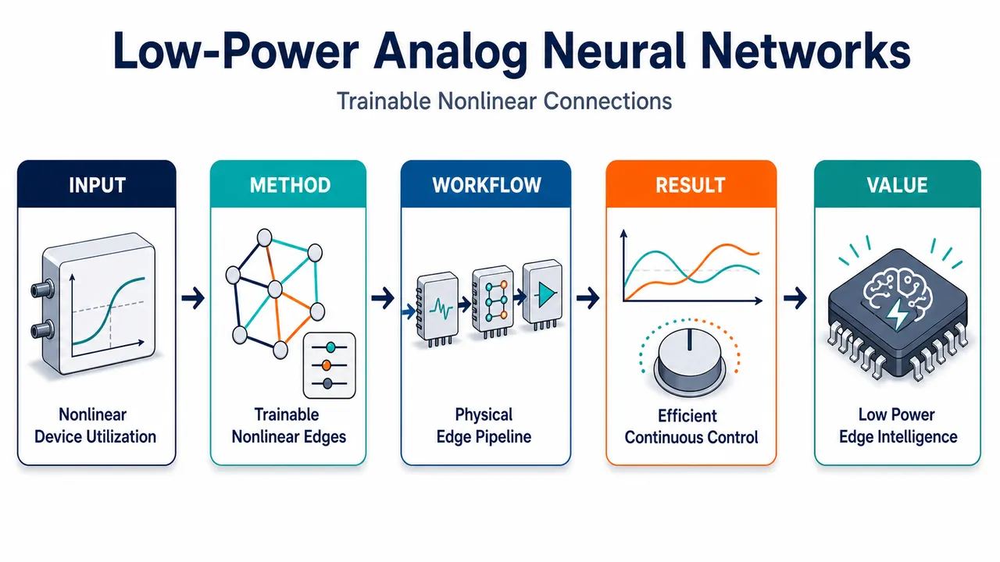
研究问题如何让模拟物理神经网络摆脱“每条连接只是一个标量权重”的限制，直接利用忆阻器、滤波器等器件本征的非线性响应，在机器人、连续控制和光伏功率跟踪等平滑连续任务中实现更小网络、更低功耗的推理？创新方法提出 PhyKAN：把神经网络边上的单个权重替换为可训练的一元非线性函数，每条物理连接本身就是计算单元。主要用模拟带通滤波器组实现边函数，每个滤波器由高通、低通和放大阶段组成，训练两个角频率与增益；并用忆阻器高阻态非线性 I/V 曲线构建 MemKAN 验证该思想不依赖单一器件。Aha 点是：不再把非线性器件压扁成线性电导，而是把器件非线性直接变成可学习的网络边。工作流程输入实变量先在节点处编码为频率或脉冲幅度；每条边经过多个并联的可调非线性物理单元，如带通滤波器或忆阻器 I/V 响应；这些基函数输出相加形成一条平滑可训练边函数；节点用固定 sigmoid 限幅保证信号处于硬件工作范围；训练时通过解析传递函数或代理模型反向传播，并加入鲁棒正则、剪枝和硬件可实现参数量化；最终将参数直接映射到模拟硬件，输出机器人位姿、连续控制力或光伏控制电压。关键结果在六轴机器人正/逆运动学、连续动作 CartPole 和光伏最大功率点跟踪中，PhyKAN 用更少节点、连接和参数达到或超过 ReLU MLP；连续 CartPole 在 1000 episodes 训练后可在 100 个初始条件上稳定杆体，约 2000 参数时明显优于 MLP 的欠阻尼式失败策略；MPPT 在多数网络规模上持续优于 MLP，更快避开局部功率峰并找到全局最大功率点。约 35,000 个硬件连接直接迁移后，90% 与仿真目标的 MSE ≤ 7.92×10⁻⁵；专用 CMOS 光伏控制网络预计功耗约 29.5–30 μW。分类任务和二值 CartPole 中优势基本消失，说明收益来自平滑连续目标与平滑物理基函数的匹配。应用价值为低功耗边缘连续控制提供新硬件范式：用少量可训练非线性物理边替代大量线性权重，可减少需要布线、编程和校准的模拟电路数量，适合机器人运动学控制、强化学习控制器、光伏电源管理等实时场景。该方法可迁移到滤波器、忆阻器等不同物理基底，展示了把器件本征非线性作为计算资源而非误差来源的物理机器学习路线。第一部分：核心概览 (Overview)
提出Physical Kolmogorov–Arnold-inspired Network（PhyKAN）：将传统神经网络连接上的标量权重替换为可训练非线性一元函数，并用模拟电子带通滤波器或忆阻器 I/V 非线性实现。核心贡献在于证明物理器件的非线性不应被压缩成线性电导，而可直接作为计算资源。优势具有明确任务依赖性：在机器人运动学、连续动作控制、光伏最大功率点跟踪等平滑连续映射中显著提升参数效率；在分类或二值动作控制中优势消失。约 35,000 个硬件连接完成直接迁移，专用 CMOS 预计功耗约 29.5–30 μW，展示了低功耗物理机器学习的新架构路径。
---
第二部分：结构化快速回顾
《Low-power analogue neural networks with trainable nonlinear connections for continuous control》（None，）
背景
物理神经网络利用模拟器件本征物理响应执行推理，覆盖忆阻、磁自旋、光子、电子等硬件平台。但多数架构仍把连接视为标量权重，迫使具有丰富非线性的器件只充当可编程电导，浪费物理计算能力。
方法
构建 PhyKAN：每条边为一个可训练非线性函数，节点使用固定 sigmoid 限幅。主要实现为模拟电子带通滤波器组，每个滤波器由高通、低通、放大阶段组成，训练参数为两个角频率与增益。另用忆阻器高阻态非线性 I/V 特性构建 MemKAN 进行跨器件验证。
结果
在六轴机器人正/逆运动学、连续 CartPole、光伏 MPPT中，PhyKAN 以更少节点、连接和参数达到或超过 MLP。连续 CartPole 训练 1000 episodes，测试 100 个初始条件，10 次独立训练；MPPT 测试 100 个辐照条件、每次 50 timesteps。约 35,000 个硬件连接中，90% 与仿真目标的 MSE ≤ 7.92 × 10⁻⁵。
讨论
优势来自平滑物理基函数与连续值目标函数之间的匹配。有限带通滤波器基适合平滑变化，不适合锐利决策边界。硬件迁移误差主要来自解析模型未捕捉的寄生电容与寄生电阻。
局限
分类任务 Fashion-MNIST 和二值 CartPole 中参数效率优势基本消失。硬件结果采用直接迁移，未进行 hardware-in-the-loop 微调。大规模网络需要更完整寄生建模或迁移后校准。滤波器模型主要采用稳态响应，尚未充分利用连续时间瞬态记忆。
结论
可训练非线性连接为低功耗物理神经网络提供比“模拟标量权重”更自然的设计范式。对连续推理与控制，物理非线性边能够压缩网络规模、保持硬件可迁移性，并在 CMOS 实现中预计达到约 30 μW 功耗。
---
第三部分：逐章节冷凝解析 (Section-by-Section Condensing)
Abstract
Physical neural networks are reframed around nonlinear edges
物理神经网络的低功耗潜力来自直接利用模拟器件物理过程进行计算，但传统做法通常把非线性器件响应压缩为标量权重。核心转向是把每条连接变成一个可训练非线性函数，而不是一个乘法系数。摘要明确指出，传统架构的问题在于 *"most architectures force nonlinear device responses to act as scalar weights"*；新架构则 *"place trainable nonlinear functions on the connections, making each physical connection a learnable computational element"*。
Kolmogorov–Arnold networks provide the architectural inspiration
架构受到 Kolmogorov–Arnold networks（KAN） 启发：用连接上的可学习一元函数替代标量权重。与纯软件 KAN 不同，这里的动机是硬件物理性：模拟器件本来就具有非线性响应，因此边函数可由物理器件自然实现。摘要用 *"Inspired by Kolmogorov–Arnold networks"* 定位其理论来源。
Analogue band-pass filters implement trainable physical edge functions
主要硬件实现为现场可编程模拟阵列上的模拟带通滤波器。每条边由滤波器组形成平滑的一元响应。摘要给出实现细节：*"Realising these functions as analogue band-pass filters on field-programmable analogue arrays"*。这一选择使边函数具有天然的平滑基函数结构。
Performance advantage is task-dependent
优势不是普遍存在，而由目标函数类型决定。平滑连续任务受益明显，分类式决策边界不受益。摘要给出清晰边界：*"the benefit is task-dependent and follows from the smoothness of the physical basis"*；具体表现为网络能用更少结构表示 *"smooth, continuously valued targets — robotic kinematics, continuous control and photovoltaic maximum-power-point tracking"*，但 *"offer no parameter-efficiency advantage on classification-like decision boundaries"*。
Hardware transfer is experimentally quantified
训练好的网络可迁移到硬件，并在大规模连接数量上量化保真度。摘要报告硬件规模为 *"across 35,000 connections with quantified fidelity"*。这一点支撑物理可实现性，而不仅是仿真架构。
Projected CMOS power is around 30 μW
专用 CMOS 实现预计功耗约 30 μW，支撑低功耗连续控制应用。摘要明确给出 *"a dedicated CMOS implementation is projected to operate at ∼30 μW"*。
Memristive implementation confirms substrate-independence
忆阻器仿真复现相同任务依赖规律，说明优势来自连接上放置可训练非线性这一架构原则，而不是滤波器这一特定器件。摘要表述为 *"A memristive realisation reproduces the same behaviour in simulation"*，并进一步强调 *"the advantage comes from placing trainable nonlinearity on connections, not from a particular device"*。
---
1 Introduction
Scalar-weight assumptions waste analogue device physics
物理神经网络已覆盖忆阻器、磁自旋、光子、电子等平台，但多数仍继承软件神经网络的连接定义：连接等于标量权重。这与模拟硬件不匹配，因为它增加需制造、编程、控制的物理连接数，并把器件丰富非线性压缩为单一电导。引言明确指出：*"Yet most inherit an architectural assumption from software: that a connection is a scalar weight."* 这一假设 *"forces devices with rich nonlinear responses — a memristor’s current–voltage curve, a filter’s frequency response — to act as a single programmable conductance"*。
PhyKAN inverts the connection abstraction
PhyKAN 将边定义为可训练一元非线性函数。每条边不再简单缩放信号，而是利用器件本征响应执行计算。关键表述为：*"Each connection between two network nodes, which we call an edge, carries a trainable nonlinear function rather than a scalar weight."* 因而 *"The edge therefore computes with the native response of the device rather than merely scaling a signal."*
Fixed sigmoid nodes maintain hardware operating range
节点不是主要可训练非线性来源，而是使用固定 sigmoid 步骤对层间信号限幅，保证信号保持在硬件可操作范围内。引言说明：*"A fixed sigmoidal step at each node keeps inter-layer signals within the hardware’s operating range."* 这使主要表达能力集中在边函数中。
Kolmogorov–Arnold relation is architectural rather than merely mathematical
该架构与 KAN 相关，因为两者都用可学习一元函数替代标量权重；但硬件动机更核心：器件非线性应被利用而不是抑制。引言给出定位：*"The architecture is related to the Kolmogorov–Arnold network, in which learnable univariate functions replace scalar weights"*；同时强调硬件原则：*"device nonlinearity should be used as the computational resource, not suppressed."*
Continuous control and regression are hypothesised as the natural application domain
由于每条边具备平滑可调表达能力，PhyKAN 被假设适合连续控制与回归，即目标是耦合实变量上的平滑映射。引言给出任务匹配逻辑：*"PhyKANs are especially suited to continuous control and regression — tasks whose targets are smooth maps over coupled real-valued variables"*，并预期这些任务可 *"be represented with few nodes and connections"*。
Prior physical-network work focused more on training than architecture
过去物理神经网络研究主要关注在器件行为未知或不完全已知时如何训练，例如 physics-aware training、noise-aware dynamic optimisation、forward–forward/local learning、sharpness-aware training。这些方法保留传统权重-激活架构。引言指出：*"These methods take the conventional weight-and-activation architecture as given."* 相比之下，开放问题是 *"what architecture a physical system should implement in the first place"*。
Earlier trainable-edge work left the task-suitability question unresolved
已有研究展示过可训练边非线性：模拟研究、小型光子模块、忆阻-晶体管复合单元、SOI 突触元件、可重构非线性处理单元。但仍未回答物理实现的非线性边“究竟适合什么”。引言明确界定研究问题：*"What they leave open is the question we take up here: not whether such architectures can be built, but what physically realised nonlinear edges are actually good for."*
Analogue filters act as the physical edge basis
每条边由模拟电子滤波器实现。每个滤波器由两个角频率和一个增益定义，通过解析传递函数进行梯度下降训练，多个滤波器求和形成平滑一元响应。引言给出关键参数：*"Each filter is set by two corner frequencies and a gain, tuned by gradient descent through its analytical transfer function"*；滤波器组作用是 *"sum to form a smooth univariate response within the filter bank’s range."*
Finite filter bases favour smoothness over sharp transitions
理论上，足够多滤波器可逼近任意连续一维响应；有限规模下更偏向平滑变化，不擅长锐利转折。这直接解释任务依赖性。引言写道：*"With sufficient filters, this basis can approximate any continuous one-dimensional response; at finite size, it favours smooth variation over sharp transitions."*
Central empirical finding spans three continuous domains
在六轴机器人运动学、连续动作强化学习、光伏最大功率点跟踪中，PhyKAN 以显著更少可训练参数达到或超过 MLP；在分类和二值控制中没有优势。引言凝练结果为：*"across six-axis robotic kinematics, continuous-action reinforcement learning and photovoltaic maximum-power-point tracking, PhyKANs match or exceed multilayer perceptrons at substantially fewer trainable parameters"*；但 *"on classification and binary-action control they offer no such advantage."*
Approximation theory supports edge-level expressivity
补充数学分析说明单个滤波器边在理想化条件下可逼近任意连续一维响应，多边网络可逼近连续多变量映射。引言指出：*"a single filter-based edge can approximate any continuous one-dimensional response"*，从而 *"networks built from such edges can approximate continuous multivariate maps."*
Memristor replication separates architectural effect from device effect
忆阻器实现复现相同任务依赖模式，说明效果来自“边上训练非线性”而非模拟滤波器特性。引言表述为：*"A distinct memristor-based realisation reproduces the same task-dependent pattern in simulation"*，并指出这表明优势 *"stems from placing trainable nonlinearity on the connections rather than from any single device."*
---
2 Results
2.1 Constructing trainable nonlinear connections from analogue filters.
Network topology matches MLP connectivity but replaces weights with nonlinear functions
PhyKAN 的节点连接拓扑与 MLP 类似，但连接上的对象从标量权重变成可训练一元非线性函数。结果部分明确说明：*"The architecture places a learnable univariate function on each connection—the same arrangement as a multilayer perceptron (MLP), but with the scalar weights replaced by trainable nonlinearities"*。这一替换是全部结果的架构基础。
Inputs are encoded as frequencies and processed by tuneable band-pass edges
输入在节点处编码为信号频率，边由可调带通滤波器单元构成。图 1a 说明：*"Inputs are encoded as frequencies at network nodes, which pass signals to network edges."* 边基函数 *"resemble tuneable band-pass filters"*，其组成包括 *"high-pass, low-pass, and amplification stages."*
Trainable physical parameters are corner frequencies and gains
每个滤波器边的训练参数不是抽象权重，而是物理滤波器参数：角频率和增益。结果部分给出：*"The filter corner frequencies and gains are the trainable parameters of the physical network"*。引言进一步精确为每个滤波器 *"two corner frequencies and a gain"*。
Parallel filter units increase edge expressivity
每条边由多个滤波器并联求和，从而形成更复杂的非线性响应。图注说明：*"Multiple basis functions (band-pass filters) are combined to produce more flexible network edges."* 结果部分也指出：*"several filter units are summed in parallel"*。
Sparsification prunes weakly contributing units
训练过程中会移除贡献较小的滤波器单元，降低有效复杂度。结果部分写道：*"then sparsified during training, pruning units that contribute little"*。图 1b 的内嵌示例中，原始 6 个单元中有 3 个被剪枝：*"of the original six units, the three pruned units are those enclosed in the dashed black box."*
A compact [2, 3, 2, 1] PhyKAN approximates a Feynman function
示例网络结构为 [2, 3, 2, 1]，任务是逼近无量纲 Feynman 函数 I.50.26：
Y = cos(X₀) + X₁ cos²(X₀)。图注给出：*"a [2, 3, 2, 1] PhyKAN approximates function I.50.26 from the dimensionless Feynman function approximation dataset"*，并写出公式 *"Y = f(X0, X1) = cos(X0) + X1 cos²(X0)"*。
A second Feynman function validates hardware fitting
硬件实现还展示函数 II.30.5：
Y = [sin²(X₀·X₁/2)] / [sin²(X₀/2)]。图注说明：*"Fig. 1 d shows function II.30.5 Y = f(X0, X1) = [sin² X0·X1 / 2] / [sin² X0 / 2]"*。该任务检验非线性边对复杂连续函数的拟合能力。
Hardware transfer uses robustness regularisation and lookup-table quantisation
为保证仿真到硬件迁移稳定，训练时加入对参数微扰不敏感的正则化；随后将仿真参数映射到硬件可实现滤波器值。结果部分写道：*"networks are regularised to favour solutions that are insensitive to small parameter changes"*，再通过 *"mapped to the nearest hardware-achievable filter values through a look-up table"* 完成部署。
Straight-through estimator preserves differentiability through hardware discretisation
参数映射到硬件可实现值时存在离散/近邻选择，训练图通过 straight-through estimator 保持可微。结果部分明确：*"with a straight-through estimator maintaining a differentiable computational graph."* 这使硬件约束可进入训练而不阻断梯度。
Compact hardware networks closely match ground truth
图 1c,d 显示硬件实现网络在函数拟合中与真实函数接近。结果部分总结为：*"the hardware outputs closely match the ground-truth functions."* 这里强调的是小型网络已能完成连续函数逼近，而非仅仿真成功。
---
2.2 Six-axis robotic kinematics
Robotic kinematics tests smooth multivariate function approximation
六轴机器人运动学是平滑多变量映射的典型测试。结果部分开头指出：*"The ability of edge nonlinearities to smoothly approximate multivariate functions makes them well suited to modelling the kinematics of rigid bodies with high parameter efficiency."* 任务包含正运动学和逆运动学两类。
Benchmark platform is the ABB IRB120 six-axis manipulator
机器人模型为 ABB 的 IRB120 commercial robotic manipulator，此前已用于神经网络运动学逼近基准。结果部分说明：*"IRB120 commercial robotic manipulator manufactured by ABB"*，并指出它 *"has been previously used for neural-network-based approximation of kinematics"*。
The manipulator has six revolute joints and a 3D end-effector location
该机械臂由 6 个旋转关节控制末端执行器在三维空间中的位置。结果部分给出：*"The manipulator is controlled by six revolute joints that move the end-effector in three-dimensional space."* 图注也写道：*"φi denotes the joint angle at each of the joints"*。
Forward kinematics dataset samples joint angles over working ranges
正运动学数据通过在关节工作范围内随机采样角度，并用空间运动链计算末端位置得到。结果部分说明：*"we built a forward-kinematics dataset by computing end-effector locations for joint angles sampled randomly across their working ranges."* 末端位置由 Denavit–Hartenberg 参数确定：*"The Denavit-Hartenberg parameters used to determine these end-effector locations via a spatial kinematic chain are outlined in Section 4.8."*
Inverse kinematics cannot simply swap inputs and targets
逆运动学存在多解：同一末端位置可能对应多个关节角组合，因此不能直接反转正运动学数据的输入和标签。结果部分明确指出：*"For the inverse kinematics, multiple joint-angle solutions exist for a given end-effector location, so simply reversing the inputs and targets of the forward problem is ambiguous."*
Inverse-kinematics loss is computed through forward equations
为避免多解歧义，网络预测关节角后，再通过已知正运动学方程得到实际末端位置，并以目标位置与实际位置的误差作为损失。结果部分写道：*"the predicted joint angles from the model are passed through the forward kinematics equations to give the true location"*，并最小化 *"loss between true target location (input) and modelled location"*。
Performance metric is mean-squared end-effector location error
正/逆运动学性能用模型预测末端位置与运动学方程真实位置之间的均方误差衡量。结果部分说明：*"achieved mean-squared error between model-predicted end-effector location and true location given by the kinematic equations"*。
Trainable-parameter counts are computed before pruning
参数数量基于训练初始化时未剪枝网络计算，而不是剪枝后的有效参数。结果部分给出：*"Trainable-parameter counts are computed from the unpruned architecture of as-initialised networks before they undergo pruning during training."* 这使参数效率比较偏保守，因为剪枝后 PhyKAN 实际活跃单元更少。
MLP baseline uses ReLU activations
对照模型是标准 MLP，激活函数为 ReLU。结果部分写道：*"standard multilayer perceptrons (MLPs, black) with ReLU activation functions serve as a baseline for conventional neural networks."*
Forward kinematics shows higher parameter efficiency for analogue networks
尽管每条 PhyKAN 边参数更多，模拟网络需要更少隐藏节点，整体参数效率更高，尤其在多隐藏层时。结果部分总结：*"Despite having more trainable parameters per edge, the analogue networks need substantially fewer hidden-layer nodes in simulation, giving greater parameter efficiency, especially with multiple hidden layers."*
Hardware transfer increases error but remains competitive
实验硬件迁移因器件不匹配增加误差，但硬件网络仍与软件 MLP 相比有竞争力。结果部分表述为：*"Transfer to hardware increases the error through device mismatch, but the hardware networks still compare favourably with the software MLPs."*
One-hidden-layer inverse kinematics slightly favours MLPs
逆运动学中，单隐藏层网络下 MLP 略优于模拟网络，硬件迁移进一步带来轻微误差。结果部分指出：*"For networks with one hidden layer, the MLPs slightly outperform the analogue networks across trainable parameters"*，并且 *"the experimental networks incurring a slight additional error due to transfer mismatch."*
Two-hidden-layer inverse kinematics favours PhyKAN beyond ≈10,000 parameters
当网络有两个隐藏层、参数超过约 10,000 时，模拟网络在逆运动学上超过 MLP。具体结构线索为每层 20 nodes、每条边 18 parameters。结果部分写道：*"beyond ≈10,000 parameters (20 nodes per layer, 18 parameters per edge), the analogue networks solve the inverse kinematics more accurately than the MLPs"*。
MLP inverse-kinematics performance saturates at a local minimum
MLP 在逆运动学中性能饱和，达到与小于 10,000 参数的模拟网络相同局部最小值。结果部分说明 MLP *"performance saturates to the same local minimum as the analogue networks with <10,000 parameters."*
Largest transferred experimental networks slightly outperform MLPs on average
在最大网络规模下，实验迁移网络平均性能略优于 MLP。结果部分给出：*"in the largest networks tested, the experimental networks slightly outperform the MLPs on average."*
Intrinsic dimensionality analysis explains the plateau
在两隐藏层逆运动学任务中，模拟 PhyKAN 误差随参数数下降，达到最小后在最大模型处形成浅平台。结果部分写道：*"the simulated PhyKAN error decreases with parameter count, reaches a minimum and then forms a shallow plateau at the largest model sizes."* 为解释这一现象，使用 Sutton 等人的内在维度测度：*"We analysed the hidden representations with the intrinsic-dimensionality measure of Sutton et al."*
First hidden layer saturates while second hidden layer keeps expanding
第一隐藏层的表示随模型规模增强并在误差平台开始附近饱和，说明输入分布已形成稳定编码；第二隐藏层内在维度继续增长，可能带来优化困难而非表示收益。结果部分指出：*"The first hidden layer becomes progressively richer with model size and then saturates close to the onset of the error plateau"*；相对地，*"the intrinsic dimensionality of the second hidden layer continues to grow with model size."*
Extra capacity can enlarge optimisation difficulty
最大模型中测试误差小幅增加，且 10 次独立训练中出现更多次优运行，说明额外容量主要扩大优化问题。结果部分写道：*"At the largest model sizes, this coincides with a small increase in test error and with more sub-optimal runs across the ten independent trainings"*，并解释为 *"the extra capacity mainly enlarges the optimisation problem rather than improving the representation."*
---
2.3 Continuous-action control
Reinforcement learning tests policy learning from feedback rather than supervised approximation
连续动作控制任务验证模拟边网络能否学习环境反馈下的决策策略，而不只是拟合已知输入-输出关系。结果部分开头写道：*"networks with analogue edges can model decision-making policies learned from environmental feedback, in a reinforcement-learning paradigm."*
Actor–critic learning separates policy and value estimation
采用 actor-critic 算法：critic 估计给定状态-动作对的折扣未来总回报，actor 根据当前状态选择动作以最大化 critic 估计回报。结果部分说明：*"a ’critic’ network estimates total discounted future rewards from a given state-action pair"*；同时 *"an ’actor’ network learns a policy for action selection given a current state"*。
CartPole is modified from binary to continuous force control
传统 CartPole 的动作是二值 ±10 N，这里改为连续值力。结果部分明确：*"CartPole, modified to use continuous-valued forces instead of a binary choice between ±10 N."* 这使任务成为连续控制而非分类式动作选择。
Actor inputs are four physical state variables
actor 网络输入为小车位置 x、小车速度 ẋ、杆角 θ、角速度 θ̇。结果部分给出：*"observations of the position and velocity of the cart (x and x˙), as well as the angle and angular velocity of the pole (θ and θ˙)"*。
Actor output is a continuous force direction and magnitude
输出为正向或负向连续力，用于最大化 critic 估计的未来奖励。结果部分写道：*"provide a continuous force in the positive (right) or negative (left) direction"*。
Reward favours upright pole stability up to 500 timesteps
奖励鼓励杆尽可能接近竖直，单次试验最大长度为 500 timesteps。结果部分说明：*"the agent receives increased rewards for maintaining the pole as close to upright as possible, up to a maximum trial length of 500 timesteps."* 成功标准是持续 500 timesteps：*"We consider the task solved when the agent consistently maintains the pole upright for 500 timesteps."*
Training and evaluation protocol uses 1000 episodes and 100 initial conditions
性能评估中，每个网络训练 1000 episodes，训练后在 100 个随机初始条件上评估，并进行 10 个独立训练模型统计。结果部分写道：*"Performance is measured by training the networks for 1000 episodes, and evaluating the trained agents over 100 randomly sampled initial conditions."* 图注补充：*"Performance is evaluated as the average of 100 different initial conditions for 10 independently trained models."*
Analogue networks solve continuous CartPole with fewer parameters
两隐藏层和三隐藏层设置下，模拟网络均以更少可训练参数解决任务。结果部分总结：*"In both cases, the analogue networks solve the task with fewer trainable parameters than MLPs"*，证明其适合 *"continuous-action reinforcement learning."*
Around 2000-parameter comparison reveals qualitative policy differences
典型行为比较使用约 2000 个可训练参数、两个隐藏层的网络。结果部分描述：*"with ≈2000 trainable parameters and two hidden layers"*，其中模拟网络达到最优，MLP 只在约 75% 初始条件下成功：*"the MLP has discovered a suboptimal solution in which the agent maintains the pole upright for the full 500 timesteps for around 75% of the sampled initial conditions."*
Simulated analogue policy resembles critically damped stabilisation
模拟 PhyKAN 能快速从初始条件稳定杆角，并保持几乎无偏差，类似临界阻尼振荡行为。结果部分写道：*"the simulated analogue network quickly establishes a stable pole angle from initial conditions, and maintains the pole upright with negligible deviation"*，其行为 *"reminiscent of critically damped oscillatory behaviour."*
Hardware-transferred controller remains successful but stabilises more slowly
迁移到实验硬件后，系统稳定速度下降，但仍能系统性保持杆竖直。结果部分说明：*"When transferred to experimental hardware, the speed at which the system is stabilised is reduced, though the agent still systematically keeps the pole upright."* 原因是迁移失配造成次优动作：*"small mismatches in experimental transfer leading to suboptimal actions"*。
Closed-loop feedback allows correction after hardware mismatch
即便硬件迁移导致动作偏差，闭环环境反馈允许智能体后续校正并稳定杆。结果部分指出：*"with feedback from the environment, the agent can correct for these actions and stabilise the pole."*
MLP policies show underdamped oscillations and initial-condition-dependent failure
MLP 表现出更强振荡，类似欠阻尼系统，部分初始条件下稳定，部分初始条件下振荡增长导致失败。结果部分写道：*"The MLP exhibits more pronounced oscillatory behaviour reminiscent of an underdamped system"*，并且 *"depending upon initial conditions, stabilises the pole, or the oscillations grow to a point at which the trial is failed."*
---
Figure 4 / Photovoltaic maximum-power-point tracking within 2.3
MPPT is a power-electronics control task where low-power inference is directly relevant
光伏最大功率点跟踪是功率电子控制问题，目标是在未知或变化辐照条件下调整控制电压，使光伏阵列输出功率最大。结果部分写道：*"We next consider photovoltaic maximum-power-point tracking, a power-electronics control problem in which compact, low-power inference is directly relevant."*
Controller changes voltage while remaining irradiance-agnostic
控制器不知道每个光伏单元所受辐照强度，只能通过状态反馈调整控制电压。结果部分说明目标为：*"change the control voltage held over an array of photovoltaic cells to maximise the output power of the array while remaining agnostic to the irradiance acting upon each cell."*
State vector contains voltage, current, power change, and current power
输入状态包括当前控制电压、阵列电流输出、相对上一时刻功率变化、当前发电功率。结果部分给出：*"Input states consist of the control voltage currently being applied, the current output of the array, the change in power compared to the previous timestep, and the power currently being generated."*
Performance metric is power generation ratio
性能指标是实际发电功率与当前辐照条件下最大可用功率的比值。结果部分定义：*"power generation ratio is defined as the ratio between the power being generated, and the maximum available power for the current irradiance condition, determined via simulation."*
Evaluation uses 100 irradiance conditions and 50 timesteps per trial
MPPT 数据为 100 个随机辐照条件，每个条件随机初始状态，控制器有 50 timesteps 调整电压；统计 10 个独立训练模型。结果部分写道：*"average performance across 100 randomly sampled irradiance conditions, each with randomly generated initial conditions and 50 timesteps during which the agent can change the control voltage."* 图注补充：*"Data points show mean performance sampled over 100 irradiance conditions across 10 independently trained models."*
Analogue networks outperform MLPs except at the smallest 2-hidden-node size
除最小网络（仅 2 hidden nodes）外，模拟网络在整个测试参数范围内保持优势，并且在最大网络规模处差距仍存在。结果部分明确：*"Except for the smallest network, with only 2 hidden nodes, the analogue networks maintain a performance advantage over the MLP baselines across the tested parameter range"*，且 *"the gap persisting at the largest network sizes evaluated."*
Advantage reflects faster and more reliable maximum-power discovery
性能提升对应更快、更可靠地从环境反馈中找到最大功率点。结果部分总结：*"This reflects a greater ability to find the maximum power point quickly and reliably from environmental feedback."*
Partial shading creates local maxima that challenge simple methods
局部遮阴条件下，功率-电压曲线包含局部最大值，模拟网络能避开这些局部峰值并找到全局最大功率点。结果部分写道：*"The curves contain local maxima in both cases that the agent avoids while finding the maximum power point"*，并指出这是简单扰动观察法的已知难点：*"a known challenge for simple control methods such as perturb and observe algorithms."*
---
2.4 Task-dependence of the advantage
Continuous tasks share smooth-valued target mappings
前述机器人运动学、连续 CartPole、MPPT 都要求网络表示平滑连续值映射。结果部分指出：*"The preceding tasks all require the network to represent smooth, continuously valued mappings."* 这是参数效率优势出现的共同条件。
Fashion-MNIST and binary CartPole test decision-boundary regimes
为确定优势何时消失，研究使用两个近似决策边界任务：Fashion-MNIST 分类和标准二值动作 CartPole。结果部分写道：*"we applied the same networks to two tasks that instead reduce to a decision boundary: Fashion-MNIST classification and the standard CartPole task with binary (±10 N) actions."*
Fashion-MNIST largely removes per-parameter advantage
Fashion-MNIST 上，相对 MLP 的每参数优势基本消失，只在最小网络规模保留；每条边滤波器数量对准确率影响很小。结果部分给出：*"On Fashion-MNIST the per-parameter advantage over MLPs is largely absent, surviving only at the smallest network sizes"*，并且 *"the number of filters per edge has little effect on accuracy."*
Residual Fashion-MNIST benefit lies in connectivity rather than parameter count
Fashion-MNIST 中剩余优势主要是达到给定准确率所需边数更少，而非参数更少。结果部分指出：*"what advantage remains is in connectivity rather than parameters, as the analogue networks reach a given accuracy with fewer edges."*
Binary CartPole closely matches MLP performance
二值 CartPole 中，两种架构表现接近。一隐藏层下在类似参数量达到最大性能，MLP 仅在最小规模略领先；两隐藏层几乎相同。结果部分写道：*"On binary CartPole the two architectures are closely matched"*；具体为 *"with one hidden layer they reach maximum performance at similar parameter counts"*，以及 *"with two hidden layers performance is almost identical."*
Binary action selection is functionally classification
标准 CartPole 的动作选择是在两个离散动作 Q 值之间贪婪选择，本质是赢家通吃的二分类决策。结果部分解释：*"Because greedy selection between two discrete actions is a winner-take-all decision on the predicted Q-values, this task is functionally a binary classification."*
Finite smooth filter bases explain the disappearance of advantage
参数效率优势只在目标为平滑连续值映射时出现；当任务变为决策边界时消失。这与每条边由有限平滑滤波器基组成一致。结果部分总结：*"The parameter-efficiency advantage therefore appears specifically when the target is smooth and continuously valued"*，并强调其与 *"the finite, smoothly varying filter basis of each edge"* 一致；优势在任务变成决策边界时 *"disappears when the task reduces to a decision boundary."*
---
2.5 Memristor-based PhyKANs
MemKAN tests whether nonlinear-edge benefits generalise beyond filters
为验证原则是否超越模拟滤波器，将边函数实现从带通滤波器替换为忆阻器，构成 MemKAN。结果部分说明：*"To test whether the same trainable-nonlinear-edge principle extends beyond analogue filters, we replaced the analogue filters that provide the tuneable transfer functions with memristors."*
Memristors provide history-dependent nonlinear I/V responses
忆阻器是二端器件，电流-电压关系依赖内部状态变量，对外加刺激表现为历史依赖响应。结果部分写道：*"The memristors studied here are two-terminal devices whose current–voltage (I/V) relationship depends on an internal state variable, enabling a history-dependent response to applied stimuli."*
LRS and HRS correspond to distinct resistance states and I/V characteristics
忆阻器可在低阻态 LRS和高阻态 HRS之间切换，每种状态对应不同 I/V 特性。结果部分说明：*"switch between distinct resistance states, typically referred to as the low-resistance state (LRS) and the high-resistance state (HRS)"*，且 *"each associated with a different I/V characteristic."*
Defect distribution and nanoscale redox processes underlie resistive switching
阻变行为源于电子输运与活性材料内缺陷空间分布耦合，通常由纳米尺度氧化还原过程控制。结果部分给出物理机制：*"This behaviour arises from the coupling between electronic transport and the spatial distribution of defects within the active material, typically governed by nanoscale redox processes."*
Filament formation and rupture explain LRS/HRS
在导电细丝型器件中，阻变与连接电极的导电细丝形成和断裂有关。LRS 对应连续细丝，HRS 对应细丝部分断裂并形成纳米间隙。结果部分写道：*"resistive switching is commonly associated with the formation and rupture of a conductive filament bridging the electrodes"*；LRS 是 *"a continuous filament that provides a quasi-metallic conduction path"*，HRS 则是 *"a partially ruptured filament, where a nanoscale gap separates the filament tip from the electrode."*
HRS gives strong nonlinear barrier-limited transport
高阻态下，跨纳米间隙的输运受势垒限制，产生强非线性、常近似指数型 I/V 曲线。结果部分写道：*"conduction is dominated by barrier-limited transport mechanisms across the gap"*，导致 *"a strongly nonlinear, often exponential, current–voltage relationship."*
Electrical programming tunes both conductance and nonlinearity
通过适当电压信号可可逆调整细丝状态，从而控制整体电导与非线性程度。结果部分说明：*"both the overall conductance and the degree of nonlinearity can be precisely adjusted through electrical programming"*，使其成为 *"a versatile platform for analogue signal processing."*
MemKAN uses pulse amplitude rather than frequency encoding
与滤波器 PhyKAN 的频率编码不同，MemKAN 中每个非线性突触的输入输出均用脉冲幅度编码。结果部分明确：*"For the memristor-based PhyKAN, both inputs and outputs of each nonlinear synapse are encoded in pulse amplitude, not in the frequency domain."*
Negative differential resistance enables turning points in edge functions
为获得带有转折点的非线性传递函数，使用高阻态忆阻器的可编程非线性 I/V 特性，并嵌入可重构有源网络。结果部分写道：*"To obtain transfer functions with negative differential resistance, and hence turning points"*，采用 *"programmable nonlinear current–voltage behaviour of a memristor operated in its high-resistance state"*。
Modified subtractor feedback enhances intermediate amplitudes
电路采用修改过的减法器配置，输出感测电阻还由与 (Vin − Vout)/R 成比例的电流驱动，形成反馈机制：增强中等输入幅度，衰减低端和高端。结果部分精确描述：*"an output-sensing resistor is additionally driven by a current proportional to (Vin−Vout)/R"*，从而 *"selectively enhances intermediate input amplitudes while attenuating both low and high extremes."*
Memristor circuit simulation couples dynamic memdiode model and circuit solver
电路电输运由动态 memdiode 模型解析忆阻元件状态，并与电路求解器耦合处理忆阻器和运算放大器相互作用。结果部分写道：*"determined by a dynamic memdiode model ... to resolve the state of the memristive element, coupled with a circuit solver for the interplay between the memristor and the operational amplifier."*
A surrogate MLP provides differentiable non-recursive transfer maps
原始忆阻模型需要迭代非线性最小二乘优化求 I/V 响应，因此用标准 MLP 作为代理模型，提供输入电压到输出电压关于控制参数的非递归可微映射。结果部分说明：*"the model requires an iterative nonlinear least-squares optimisation step to find the I/V response"*，因此 *"a surrogate model was used to provide a non-recursive differentiable map"*；代理模型形式为 *"a standard MLP."*
MemKAN reproduces parameter-efficiency gains across continuous tasks
MemKAN 在六轴正运动学、CartPole、PV 控制任务中相对 MLP 同样表现出更高参数效率，且接近滤波器 PhyKAN。结果部分总结：*"As with the filter-based networks, the MemKANs show improved parameter efficiency over the MLP controls across all tasks"*，并且 *"performance comparable to the filter-based PhyKANs."*
Cross-substrate replication supports the nonlinear-edge principle
忆阻器结果表明，效率提升来自网络边上放置可训练非线性，而非某个具体滤波器物理机制。结果部分明确：*"This suggests that the improved efficiency observed here and in other studies comes from placing trainable nonlinearities on network edges."*
---
3 Discussion
Parameter efficiency depends on target computation
可训练非线性连接是否带来参数效率优势取决于目标计算类型。讨论开头给出判断：*"Whether trainable nonlinear connections provide a parameter-efficiency advantage depends on the target computation."* 这将研究结论从“新架构更强”限定为“新架构在特定函数族上更高效”。
Classification and binary-action tasks remove the advantage
在分类和二值动作控制中，任务本质是选择决策边界，而非表示连续控制律，因此 PhyKAN 参数效率优势消失，表现接近 MLP。讨论写道：*"On the classification and binary-action control tasks tested here ... the parameter-efficiency advantage disappears"*，并解释这些问题 *"reduce to selecting a decision boundary rather than representing a continuous control law."*
Smooth finite edge basis explains task dependence
每条边是有限个平滑滤波器响应之和，天然压缩平滑变化，但锐利转折需要更多单元，从而侵蚀优势。讨论指出：*"each edge is a finite sum of smooth filter responses"*，所以 *"smooth variation can be represented compactly, whereas sharp transitions require additional units and erode this advantage."*
Continuous valued tasks concentrate computation into edges
在平滑连续目标中，架构将计算集中到表达性物理边中，从而减少达到给定性能所需的节点、活跃连接和参数。讨论表述为：*"the architecture concentrates computation into expressive physical edges"*，并减少 *"the number of nodes, active connections and trainable parameters needed to reach a given performance."*
Hardware implication is fewer analogue circuits to route, program, and calibrate
物理实现中，减少边和节点意味着更少模拟边电路需要布线、编程和校准。讨论明确：*"when mapped to hardware, this means fewer analogue edge circuits to route, program and calibrate."*
Strongest empirical effect appears in photovoltaic tracking
机器人运动学、连续动作强化学习和 MPPT 均表现出优势，其中 MPPT 最强，非线性边网络在所有测试规模上超过 MLP。讨论写道：*"This behaviour holds across robotic kinematics, continuous-action reinforcement learning and photovoltaic maximum-power-point tracking"*，且 *"with the strongest effect in the last of these, where the nonlinear-edge networks outperform multilayer perceptrons across all tested network sizes."*
Hardware transfer fidelity is quantified over approximately 35,000 connections
硬件结果显示架构优势可从模型迁移到器件。约 35,000 个实验实现连接中，90% 与仿真目标的均方误差不超过 7.92 × 10⁻⁵。讨论给出核心数值：*"Across approximately 35,000 experimentally realised connections, 90% match their simulated targets to within a mean-squared error of 7.92 × 10−5."*
Transfer uses analytical models and hardware-aware discretisation
训练通过模拟滤波器解析传递函数完成，并在部署前进行硬件可实现参数离散化。讨论写道：*"Training is performed through analytical transfer-function models of the analogue filters, with hardware-aware discretisation of trainable parameters before deployment."*
Residual mismatch mainly comes from unmodelled parasitics
剩余误差主要由解析模型未包含的寄生电容和电阻造成。讨论指出：*"The remaining error is mainly due to parasitic capacitance and resistance that are not captured by the analytical model."*
Direct transfer alone causes only modest loss increases
研究只做直接模型到硬件迁移，没有 hardware-in-the-loop 爬山或强化学习微调；即便如此，迁移后损失只适度增加。讨论写道：*"These results use direct transfer only"*，并说明 *"we did not carry out hardware-in-the-loop hill climbing or reinforcement-learning fine-tuning."* 当前网络中失配 *"produces only modest increases in loss after transfer."*
Post-transfer calibration could reduce mismatch, especially in larger networks
硬件在环微调或部署后校准可能进一步降低残余失配，尤其在更大网络中迁移误差会累积。讨论写道：*"Such post-transfer calibration could further reduce residual mismatch, particularly for larger networks where transfer errors may compound."*
Closed-loop control provides tolerance to hardware deviations
闭环任务天然更能容忍小偏差，因为控制器可通过后续环境交互补偿。讨论指出：*"Closed-loop tasks provide an additional tolerance mechanism"*，原因是 *"the controller can compensate for small deviations through subsequent interactions with the environment."*
Scaling requires parasitic modelling or post-transfer fine-tuning
更大规模网络需要更完整的寄生效应建模或迁移后微调。讨论写道：*"Scaling to larger networks will require more complete modelling of parasitics or post-transfer fine-tuning."* 但当前结果已表明直接迁移对连续控制足够准确：*"direct model-to-hardware transfer is already accurate enough for demanding continuous-control tasks."*
Memristor results show transfer-function independence
忆阻器网络使用稳态 I/V 非线性，而非频域滤波响应，却恢复相同模式：回归和连续控制有参数效率收益，MPPT 持续优于 MLP。讨论写道：*"the trainable nonlinearity is provided by the steady-state current–voltage characteristic of the device, not by a frequency-domain filter response"*，但 *"the same performance pattern is recovered."*
Memristive computing implication is a shift away from linear conductance crossbars
传统忆阻计算常把忆阻器工程化为交叉阵列中的可编程线性电导，压制非线性 I/V 响应；这里反而把非线性作为计算元素。讨论指出：*"Memristors are commonly engineered to behave as programmable linear conductances in crossbar arrays"*，并且常常 *"suppressing the nonlinear current–voltage response"*。新范式中 *"that nonlinear response becomes the computational element itself."*
Natural low-current analogue operation may reduce power and improve endurance
利用忆阻器自然低电流模拟区间可降低功耗，并可能改善器件耐久性。讨论写道：*"allowing operation in the natural low-current analogue regime where power dissipation is reduced and endurance can be improved."*
Steady-state filter modelling leaves continuous-time memory unexplored
当前滤波器模型为便于仿真和优化，假设稳态操作。讨论说明：*"The implementation of filter response in the differentiable model assumes steady-state operation for ease of simulation and optimisation."* 但若在时域运行，滤波器瞬态可形成短期记忆：*"the transience induced in the filters can be leveraged as an inherent source of short-term memory."*
Dynamic operation would require credit assignment over time
利用瞬态记忆需要让学习过程理解动态依赖并跨长时间尺度分配信用。讨论指出：*"this would involve adapting the learning process to be cognisant of dynamic dependencies and assign credit over long timescales during optimisation."*
Eligibility propagation may be more memory-efficient than BPTT
BPTT 可处理时间依赖，但内存随时间步数 O(T) 增长；eligibility-propagation 内存为 O(1)，更适合需要小时间步捕捉滤波器瞬态的场景。讨论写道：*"eligibility-propagation may be more suited, as the memory requirements scale on the order O(1) with signal length as opposed to O(T) for BPTT"*。
Experimental platform prioritised reconfigurability, not maximum efficiency
当前实验平台为了可重构性和测量便利而选，并非为最高效率优化。讨论明确：*"The experimental platform used here was chosen for reconfigurability and measurement access, not maximum efficiency."*
Dedicated CMOS implementation projects around 29.5 μW for PV control
因为非线性边比标量权重更复杂，不能仅凭参数数估计硬件收益；功耗需按边电路数量和组件级 CMOS 设计估算。讨论写道：*"Because a nonlinear edge is physically more complex than a scalar weight, the hardware benefit cannot be inferred from parameter count alone."* 基于 CMOS 兼容跨导实现，PV 控制网络预计功耗为 *"∼29.5 μW"*。
Projected power is more than two orders below microcontroller envelopes
预计 ∼29.5 μW 低于可比边缘计算任务微控制器 10–150 mW 功耗范围两个数量级以上。讨论给出对比：*"more than two orders of magnitude below the 10–150 mW envelope of microcontrollers used for comparable edge-computing tasks."*
Architectural reduction and analogue efficiency combine
低功耗来自两个因素叠加：模拟运算本征效率和非线性边减少所需硬件组件。讨论总结：*"This estimate combines the intrinsic efficiency of analogue operation with the architectural reduction in required components."*
General route for physical machine learning
最终范式是让模拟器件本征非线性可训练，并直接作为网络计算原语，而不是逼近软件风格标量权重。讨论结尾写道：*"Rather than forcing analogue devices to approximate software-style scalar weights, their native nonlinear responses can be made trainable and used directly as the computational primitives of the network."* 对连续推理与控制，这产生 *"compact networks that transfer to analogue hardware and can be mapped onto distinct physical substrates."*
---
Acknowledgements
Funding support is centred on UK neuromorphic and semiconductor programmes
研究主要由 UK Neuromorphic Computing Hardware Semiconductor IKC（Neuroware; UKRI2784） 支持，经 EPSRC 和 Innovate UK 资助。致谢写道：*"This work was primarily supported by the UK Neuromorphic Computing Hardware Semiconductor IKC (Neuroware; UKRI2784), funded by EPSRC and Innovate UK."*
Additional support includes MARCH and CausalXRL projects
额外支持来自 EPSRC MARCH 项目和 CHIST-ERA CausalXRL 项目。致谢列出：*"Additional support was provided by the EPSRC MARCH project"*，以及 *"the CHIST-ERA project Causal eXplanations in Reinforcement Learning (CausalXRL; CHIST-ERA-19-XAI-002)"*。
---
Author Contributions
Physical-KAN concept and analogue-filter implementation were separately originated
E.V. 提出 physical-KAN 概念，I.T.V. 提出模拟滤波器实现。贡献声明写道：*"E.V. originated the physical-KAN concept. I.T.V. proposed the analogue-filter implementation."*
Simulations, experiments, and task implementations were primarily performed by I.T.V.
I.T.V. 完成仿真、实验和任务实现，E.V. 提供输入并进行独立验证。贡献声明写道：*"I.T.V. performed the simulations, experiments and task implementations with input from E.V."*，并且 *"E.V. contributed to software development and independent validation of the computational results."*
Photovoltaic MPPT application was proposed by E.V. and implemented by I.T.V.
贡献声明明确：*"E.V. proposed photovoltaic maximum-power-point tracking as an application, and I.T.V. implemented the photovoltaic-control task."*
---
第四部分：深度理解与语言支持 (Understanding & Nuance)
1. 术语解析
Trainable nonlinear connections
直译为“可训练非线性连接”。关键不是连接“有非线性”，而是连接本身承载一个可学习的一元函数。传统 MLP 中连接计算 w·x；这里连接计算 φ(x; θ)。语义重心在 connection as computation，不是 connection as coefficient。原句 *"each physical connection a learnable computational element"* 强调每条物理边都是计算单元。
Parameter efficiency
指达到相同性能所需的可训练参数数量更少。这里需区分三种效率：参数少、节点少、连接少。PhyKAN 每条边参数更多，但总边数和节点数更少，因此整体可训练参数仍可能更少。论文中 *"Despite having more trainable parameters per edge"* 后接 *"greater parameter efficiency"*，正体现这一微妙点。
Decision boundary
分类任务中模型学到的是把输入空间分成类别区域的边界，而不是精确拟合连续输出函数。PhyKAN 的平滑滤波器基适合连续变化，不适合锐利边界。短语 *"reduce to a decision boundary"* 表示任务本质从“函数逼近”退化为“区域划分”。
Hardware-aware discretisation
指训练或部署时考虑硬件只能实现有限参数值。模拟训练得到连续参数后，要映射到硬件查找表中最接近的可实现值。这里不是普通量化，而是结合具体硬件可达滤波器参数空间。原句 *"mapped to the nearest hardware-achievable filter values through a look-up table"* 说明离散化由硬件现实约束决定。
Negative differential resistance
指某一区间内电压增加反而电流降低，即 dI/dV < 0。用于构造具有峰值或转折点的非线性函数。MemKAN 中该特性让边函数不只是单调曲线，而能形成更复杂的非单调响应。原句 *"negative differential resistance, and hence turning points"* 点出其函数逼近意义。
---
2. 疑难查证
为什么把非线性放在边上会提高连续控制任务效率？
传统 MLP 的一条边只能做缩放，非线性主要由节点激活提供。若要表示一个复杂平滑函数，需要许多节点共同拼接局部线性或局部非线性片段。PhyKAN 的一条边本身就是一个小函数逼近器，能够在输入变量的一维方向上形成曲线响应。多条边组合后，网络可用较少节点表达多变量平滑映射。
可类比为：MLP 用很多直尺拼出曲线；PhyKAN 的每条边本身就是可弯曲曲线段。对于机器人运动学、MPPT 这类本来连续平滑的函数，曲线段比直尺更省材料。
为什么分类任务中优势消失？
分类不要求输出值在整个输入空间中精确平滑变化，而主要要求边界位置正确。边界往往需要局部陡峭变化。有限滤波器组天然平滑，若要逼近锐利边界，需要叠加更多滤波器单元，参数优势被抵消。MLP 的 ReLU 分段线性结构反而很适合构造决策边界。因此 Fashion-MNIST 和二值 CartPole 中 PhyKAN 没有明显每参数优势。
为什么硬件迁移误差在闭环控制中不一定致命？
开环函数拟合中，一个输入对应一个输出，硬件输出偏差会直接变成误差。闭环控制中，控制器每一步都收到环境反馈；即使某一步动作因硬件失配略偏，下一步状态会反映该偏差，控制器可继续修正。CartPole 硬件迁移后稳定变慢但仍成功，正体现闭环系统的误差吸收能力。
为什么忆阻器结果很关键？
如果只有滤波器实现成功，优势可能来自带通滤波器这种特定基函数。MemKAN 使用完全不同的物理机制：高阻态忆阻器的非线性 I/V 响应与有源反馈电路。相同任务依赖模式复现后，更强结论是：优势属于架构层面，即“边上可训练非线性”，而不是某个器件的偶然特性。
---
第五部分：创新评估与关联 (Synthesis & Novelty)
1. 创新性判断
从“如何训练物理神经网络”转向“物理神经网络应采用什么架构”
近几年物理神经网络大量关注训练问题：数字孪生、噪声感知优化、硬件在环、局部学习、鲁棒训练等。该研究的创新在于把核心问题前移到架构层：模拟器件不应被迫模拟标量权重，而应把本征非线性设计成连接上的可训练函数。这个转向解决了传统物理神经网络“硬件有非线性但架构不用非线性”的错配。
给出任务依赖边界，而不是泛化性夸大
过去 KAN 或可训练边非线性研究常强调表达能力，但较少明确说明在哪些任务上不占优。这里通过 Fashion-MNIST 和二值 CartPole 证明：参数效率优势在决策边界任务中基本消失。创新点不只是提出 PhyKAN，而是给出适用范围：平滑连续值映射。
实现了从解析训练到模拟硬件的大规模直接迁移
约 35,000 个实验连接的硬件迁移保真度量化，使工作超出纯仿真。90% 连接 MSE ≤ 7.92 × 10⁻⁵ 的结果说明基于解析传递函数、查找表和 straight-through estimator 的训练-部署链条可行。
跨物理基底验证架构原则
滤波器 PhyKAN 与忆阻器 MemKAN 复现类似参数效率模式，说明创新不依赖单一物理器件。过去 2–5 年内忆阻、光子、SOI、非线性处理单元研究多展示“能构建非线性边”；这里进一步回答“何时值得构建非线性边”。
把低功耗收益与网络规模压缩联系起来
模拟非线性边比标量权重更复杂，因此低功耗不能只从参数少推出。该研究用组件级 CMOS 估算给出 PV 控制网络约 29.5 μW，并与微控制器 10–150 mW 范围比较，建立“物理边表达能力 → 更少边电路 → 更低功耗”的较完整论证链。
解决的前人未充分解决问题
前人主要解决：
- 非理想物理器件如何训练；
- 非线性突触/边是否可以制造；
- 单一硬件平台能否完成小规模任务。
该研究进一步解决：
- 可训练物理非线性边到底适合什么任务；
- 优势是否来自架构而非器件；
- 连续控制中是否能以更少参数迁移到硬件；
- 低功耗收益是否能在实际电路层面成立。
-
08
📊 含图深析
📄 摘要：提出异方差贝叶斯物理信息神经网络，用于绝缘材料退化预测中的不确定性量化。框架同时建模认知不确定性和偶然不确定性，弥补多数 PINN 预测只给确定值或仅处理模型不确定性的不足，服务风险感知的健康管理决策。
💡 亮点：异方差贝叶斯 PINN 将数据噪声和模型无知分开估计，用于绝缘材料老化预后。它提升了物理约束机器学习在工程寿命预测中的可用性。
📖 展开分析 + 配图
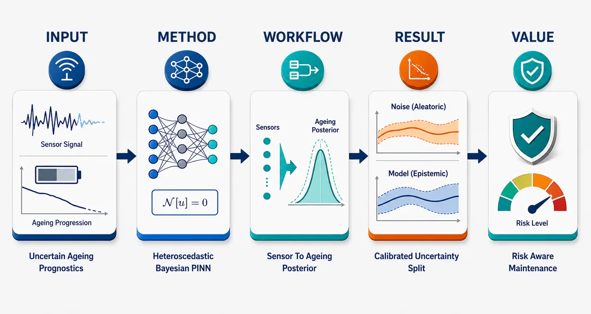
研究问题现有物理信息神经网络用于PHM退化预测时，多数只给出确定性轨迹或仅估计认知不确定性，无法在真实、稀疏、噪声强、工况波动的变压器绝缘老化数据中同时回答“模型因数据不足有多不确定”和“系统/传感噪声本身有多不确定”，因此难以支持风险感知的剩余寿命与维护决策。创新方法提出异方差贝叶斯物理信息神经网络：用贝叶斯神经网络替代普通PINN以学习参数后验，捕获认知不确定性；同时让网络输出预测均值和随空间-时间输入变化的方差，捕获偶然不确定性。Aha点是把IC、BC、PDE残差都写入异方差高斯负对数似然与ELBO训练目标，并用全方差定律把总预测不确定性拆成“参数后验采样造成的均值方差”和“网络输出方差的后验均值”。工作流程输入西班牙浮式光伏电站变压器的环境温度、油温、负载等1分钟运行数据，以及热扩散PDE、初始条件、边界条件和残差采样点；异方差B-PINN学习油温时空场的均值与方差；通过后验参数蒙特卡洛采样得到多条油温预测；再由经验绕组温度模型传播到绕组温度和绝缘老化率；最终输出老化轨迹、完整预测后验、总不确定性、认知不确定性和偶然不确定性分解图。关键结果在变压器绝缘老化案例中，模型使用4天、5760个一分钟级现场样本，并结合有限元热模型和光纤传感器验证。相较确定性PINN、dropout-PINN和同方差B-PINN，异方差B-PINN表现出更好的预测精度和更合理的不确定性校准；测量噪声增加时，偶然不确定性随数据噪声升高，而认知不确定性保持相对稳定，说明两类不确定性被有效解耦。应用价值该方法让电力资产运维人员不仅看到变压器绝缘老化和寿命趋势，还能看到风险来源：认知不确定性高提示需要更多传感数据、更强先验或改进模型；偶然不确定性高提示运行波动或测量噪声大，需要更保守的维护裕度。它为真实PHM中的变压器寿命评估、风险感知维护和运行决策提供可解释的概率预测工具。第一部分：核心概览 (Overview)
该研究提出异方差贝叶斯物理信息神经网络（heteroscedastic B-PINN），在PINN中同时建模并分离认知不确定性与偶然不确定性，用于变压器绝缘材料时空老化预测。相较确定性PINN、dropout-PINN与同方差B-PINN，该框架输出完整预测后验、改善精度与校准，并通过有限元热模型和西班牙浮式光伏电站现场数据验证，填补了PINN在真实PHM场景中缺乏总不确定性量化与不确定性解耦的空缺。
---
第二部分：结构化快速回顾
《Disentangling Aleatoric and Epistemic Uncertainty in Physics-Informed Neural Networks. Application to Insulation Material Degradation Prognostics》（None，）
背景
PHM要求可靠预测退化轨迹与剩余寿命（RUL），但现实数据常稀疏、噪声强、异质。已有PINN预后方法多为确定性，或只覆盖认知不确定性，难以支持风险感知维护决策。
方法
构建异方差贝叶斯PINN：用BNN替代确定性神经网络，对网络参数施加后验分布以捕获epistemic uncertainty；同时让网络输出预测均值与输入相关方差，以捕获heteroscedastic aleatoric uncertainty。训练目标结合ELBO/KL项、初始条件、边界条件与PDE残差的异方差负对数似然。
结果
模型应用于变压器绝缘老化：先用1D热扩散PDE估计油温，再由经验模型估计绕组温度与老化率。实验基于4天、1分钟分辨率、5760个样本的浮式光伏电站运行数据，并用FEM热模型和光纤传感器测量支撑验证。
讨论
不确定性分解遵循全方差定律：参数后验采样产生的预测均值方差对应认知不确定性，网络输出方差的后验均值对应偶然不确定性。该分解使维护人员区分“数据不足导致的不确定”与“噪声/运行波动导致的不确定”。
局限
可见内容中，实验结果表格、具体误差数值、校准指标、dropout率完整设定、3.2以后小节与附录细节未完整给出；因此无法核验全部benchmark数值、显著性检验或最终RUL误差。
结论
异方差B-PINN为真实PHM中的物理约束概率预测提供了统一框架，能同时追踪aleatoric与epistemic来源，并更适合电力资产绝缘老化的风险感知管理。
---
第三部分：逐章节冷凝解析 (Section-by-Section Condensing)
Abstract
Physics-informed prognostics lacks full uncertainty quantification
PINN能够将物理规律与数据融合，但在PHM中的应用受限于不确定性量化能力不足。摘要直接指出：*"Physics-Informed Neural Networks (PINNs) provide a framework for integrating physical laws with data. However, their application to Prognostics and Health Management (PHM) remains constrained by the limited uncertainty quantification (UQ) capabilities."* 核心问题不是PINN不能建模退化，而是多数预后PINN无法输出适合风险决策的完整概率预测。
Existing PINN prognostics mostly ignore aleatoric uncertainty
多数PINN预后模型为确定性模型，或仅处理认知不确定性，因此无法覆盖测量噪声与过程随机性。摘要给出明确判断：*"Most existing PINN-based prognostics approaches are deterministic or account only for epistemic uncertainty, limiting their suitability for risk-aware decision-making."* 这构成该工作的直接问题定义。
Heteroscedastic B-PINN jointly models two uncertainty sources
提出的框架是heteroscedastic Bayesian Physics-Informed Neural Network，目标是同时建模epistemic与aleatoric uncertainty，并输出完整预测后验。摘要表述为：*"This work introduces a heteroscedastic Bayesian Physics-Informed Neural Network (B-PINN) framework that jointly models epistemic and aleatoric uncertainty, yielding full predictive posteriors for spatiotemporal insulation material ageing estimation."*
Bayesian inference is integrated with physics residual enforcement
方法核心是将Bayesian Neural Networks、physics-based residual enforcement和prior distributions结合。摘要指出：*"The approach integrates Bayesian Neural Networks (BNNs) with physics-based residual enforcement and prior distributions, enabling probabilistic inference within a physics-informed learning architecture."* 这意味着概率推断不是外置后处理，而是训练架构的一部分。
Validation uses transformer insulation ageing with FEM and field measurements
应用场景是变压器绝缘老化，验证依据包括有限元热模型与太阳能电站现场测量。摘要写明：*"The framework is evaluated on transformer insulation ageing application, validated with a finite-element thermal model and field measurements from a solar power plant, and benchmarked against deterministic PINNs, dropout-based PINNs (d-PINNs), and alternative B-PINN variants."*
Benchmarking indicates better accuracy and calibration
摘要报告性能结论：提出的B-PINN在预测精度和不确定性校准上优于竞争方法。原句为：*"Results show that the proposed B-PINN provides improved predictive accuracy and better-calibrated uncertainty estimates than competing approaches."* 但可见文本未给出具体RMSE、NLL、PICP、MPIW或ECE数值。
Sensitivity analysis covers sampling and measurement noise
系统敏感性分析覆盖边界条件采样、初始条件采样、残差点采样及测量噪声对偶然不确定性的影响。摘要说明：*"A systematic sensitivity study further analyzes the impact of boundary-condition, initial-condition, and residual sampling strategies on accuracy, calibration, and generalization, and the influence of measurement noise on aleatoric uncertainty."*
---
1 Introduction
PHM targets reliability, availability, degradation trajectory, and RUL
Prognostics and Health Management被定义为提高工程系统可靠性与可用性的健康管理范式。原文写道：*"Prognostics and health management (PHM) is a health management paradigm that encompasses predictive methodologies aimed at improving the reliability and availability of engineering components and systems."* 预后模型的核心目标是预测未来退化轨迹和估计RUL：*"The main objective of failure prognostics models is the reliable prediction of the future degradation trajectory of an asset and the estimation of its remaining useful life (RUL)."*
SciML embeds physical structure into machine learning
Scientific Machine Learning通过把物理结构嵌入机器学习模型来解决科学与工程问题。原文定义为：*"Scientific Machine Learning (SciML) has emerged as a transformative paradigm for solving scientific and engineering problems by embedding physical structure directly into machine learning models."* 代表方法包括PINNs、Neural Operators、PINO、KANs等：*"Representative developments in SciML include Physics-Informed Neural Networks (PINNs), Neural Operators, Physics-Informed Neural Operators (PINO), Kolmogorov–Arnold Networks (KANs)."*
PDE constraints improve sample efficiency and generalization
引入PDE和机理约束通常能提升小样本效率与泛化能力。原文表述为：*"By incorporating partial differential equations (PDEs) and mechanistic constraints during training, these models typically achieve improved sample efficiency and enhanced generalization compared with purely data-driven methods."* 这为使用PINN处理稀疏PHM数据提供理论动机。
Hybrid PHM lacks unified physics-data learning
传统混合预后结合physics-of-failure models与机器学习，但通常采用顺序或并行架构，而不是统一训练。原文指出：*"Such hybrid approaches generally follow either a sequential architecture, in which physics-based model outputs inform a machine learning model, or a parallel architecture, where physics-based and machine learning predictions are fused."* 与SciML相比，其限制在于：*"they usually lack a unified learning framework in which physics and data jointly shape the solution."*
RUL estimation is intrinsically stochastic
RUL是预测时刻 (tₚ) 到end-of-life (EOL) 的时间距离。原文给出定义：*"the RUL is defined as the temporal distance between the prediction time instant, denoted by (tₚ), and the end of the useful life of the asset, referred to as the end-of-life (EOL)."* 从 (tₚ) 到EOL的退化演化受多源不确定性影响：*"The ageing evolution from (tₚ) to EOL is inherently stochastic and affected by multiple sources of uncertainty, including sensor noise, operational variability, and model uncertainty."*
UQ is essential for reliable RUL predictions
由于退化过程受传感噪声、运行波动和模型不确定性影响，uncertainty quantification成为RUL可靠预测的必要条件。原文明确写道：*"Consequently, uncertainty quantification (UQ) is essential for reliable RUL predictions."*
PINN prognostics has appeared in batteries and transformers but remains deterministic
PINN已用于battery degradation modelling与transformer ageing based on heat diffusion physics，但多数仍是确定性。原文指出：*"The application of PINNs to prognostics has recently been explored in domains such as battery degradation modelling and transformer ageing based on heat diffusion physics."* 随后给出关键缺口：*"the majority of existing PINN-based prognostics models remain fully deterministic, despite the critical importance of uncertainty quantification for informed decision-making."*
Realistic PHM data require multiple uncertainty sources
真实PHM数据常表现为sparse, noisy, heterogeneous，必须显式处理模型错设、参数变异和测量噪声。原文写道：*"This limitation is particularly restrictive in realistic PHM scenarios, where data are often sparse, noisy, and heterogeneous, and where multiple sources of uncertainty, such as model misspecification, parameter variability, and measurement noise, must be explicitly accounted for."*
Existing uncertainty-aware PINNs mostly stay on synthetic benchmarks
已有不确定性PINN包括B-PINNs、GP-augmented PINNs、EPINNs、C-PINNs、d-PINNs和deep ensemble PINNs。原文列举：*"Alternative approaches include Gaussian process–augmented PINNs, Hamiltonian Monte Carlo–based epistemic PINNs (EPINNs), conformalized PINNs (C-PINNs) providing distribution-free uncertainty guarantees, as well as more computationally tractable methods such as dropout-PINNs (d-PINNs) and deep ensemble PINNs."* 但其外推到真实PHM尚不足：*"most studies are restricted to synthetic PDE benchmarks, and their applicability to real-world prognostics problems remains largely unexplored."*
Disentangling epistemic and aleatoric uncertainty is the main gap
现有不确定性感知PINN很少全面处理总预测不确定性并显式分离两类来源。原文指出：*"existing uncertainty-aware PINN approaches rarely provide a comprehensive treatment of total predictive uncertainty by explicitly disentangling epistemic and aleatoric components."* 两类不确定性定义清晰：*"Epistemic uncertainty reflects uncertainty in the model structure and parameters due to limited data, whereas aleatoric uncertainty arises from measurement noise and inherent system variability."*
Table 1 positions the method as uniquely complete
表1显示已有代表方法中，同时满足Aleatoric ✓ / Epistemic ✓ / Disentanglement ✓ / SciML ✓ / PHM Transformer B-PINN的只有该工作。表头明确比较维度：*"Comparison of SciML and hybrid PHM methods, including relevant features for this work."* 表中“This Work”对应：*"✓ ✓ ✓ ✓ Transformer B-PINN."* 这构成领域定位：真实变压器PHM + SciML + 两类不确定性 + 显式解耦。
Main contribution is total UQ for PINNs in prognostics
核心贡献是用于预后应用的PINN总不确定性量化框架。原文表述为：*"the main contribution of this work is the development of a total UQ framework for PINNs that jointly captures aleatoric and epistemic uncertainty in prognostics applications."*
Architecture extends prior epistemic-only B-PINN work
该方法扩展此前主要关注epistemic UQ的工作，引入可显式建模和分离不确定性的B-PINN结构。原文写道：*"Extending previous work that mainly focused on epistemic UQ, a novel B-PINN architecture is introduced that enables explicit modelling and separation of epistemic and aleatoric sources of uncertainty."*
Heteroscedastic aleatoric modelling improves interpretability and robustness
引入heteroscedastic aleatoric uncertainty使B-PINN比同方差B-PINN、确定性PINN和dropout-PINN更可靠、更可解释。原文指出：*"incorporating epistemic and heteroscedastic aleatoric uncertainty within B‑PINNs yields more reliable and interpretable probabilistic predictions than B‑PINNs that model epistemic and homoscedastic uncertainty, as well as deterministic and dropout‑based PINN alternatives."*
Measurement noise affects aleatoric but not epistemic uncertainty
测量噪声实验显示，偶然不确定性随数据不确定性上升，而认知不确定性保持稳定。原文写道：*"the influence of measurement noise errors on aleatoric uncertainty is also analysed showing that aleatoric uncertainty increases in agreement with data uncertainty, while epistemic uncertainty remains stable."* 这体现了分解机制的物理合理性。
---
2 Methods
Framework estimates total UQ with Bayesian-PINN
方法框架用于估计B-PINN中的total UQ，覆盖epistemic与heteroscedastic aleatoric来源。原文说明：*"Figure 1 shows the proposed methodology for the total UQ of Bayesian-PINN models, including epistemic and (heteroscedastic) aleatoric sources of uncertainty."*
BNN parameter distributions capture epistemic uncertainty
BNN通过对神经网络参数建模概率分布来引入贝叶斯推断，从而量化模型参数不确定性。原文写道：*"BNNs are used to integrate Bayesian inference into PINNs, enabling principled uncertainty quantification."* 进一步说明：*"BNNs capture the epistemic uncertainty of the B-PINN model by modelling the uncertainty associated with the NN parameters."*
Aleatoric uncertainty is captured by dual outputs
模型假设预测不确定性可用等价高斯分布表达，因此输出两个变量：解的均值与方差。原文表述为：*"the proposed B-PINN model outputs two variables, the mean value of the solution (μₕₐₜᵤ) and the variance of the solution (σₕₐₜᵤ²)."* 这不同于普通PINN只输出单一解 (hatu)。
Loss function combines PDE, Bayesian regularization, and uncertainty
双输出结构要求修改损失函数，使训练同时受PDE、贝叶斯原则和两类不确定性约束。原文写道：*"The adoption of these two outputs requires modifying the loss function so that the B-PINN learning process is directed by the underlying PDE, regularized by Bayesian principles, and integrates aleatoric and epistemic uncertainties."*
Transformer insulation ageing is modelled through thermal stress
应用流程包括两步热建模与一步老化估计：先估计oil temperature，再估计winding temperature，最后计算insulation ageing estimate。原文写道：*"The thermal stress estimation is done in two steps: (i) the insulation oil temperature estimation, (hatΘₒ(x,t)), which is calculated using a 1D heat diffusion PDE with Dirichlet boundary conditions, implemented using the proposed B-PINN approach. (ii) The oil temperature is used to calculate the spatiotemporal winding temperature, (hatΘw(x,t)), through an empirical winding temperature estimation model."*
Probabilistic estimates propagate from oil temperature to ageing
通过不确定性建模，模型不仅输出点估计，还输出油温、绕组温度和老化的概率分布。原文列出：*"Modelling epistemic and aleatoric sources of uncertainty enables the quantification of the probabilistic estimates of oil temperature, (p(hatΘₒ(x,t))), winding temperature, (p(hatΘw(x,t))), and ageing estimates, (p(hatV(x,t)))."*
---
2.1 PINN basics
PINNs encode PDEs into neural networks
PINN的基本思想是把基于PDE的物理模型编码进机器学习模型。原文写道：*"PINNs were introduced with the goal of encoding physics models based on PDEs in machine learning (ML) models, taking advantage of the ability of NNs to act as universal approximators."*
General PDE formulation defines the learning target
一般PDE写作 (du(x,t)=f(x,t))，其中 (x,tinR)，(u(x,t)) 是未知解，(d) 是微分算子，(f(x,t)) 是外部强迫项。原文解释为：*"where (x,tinR) denote position and time, (u(x,t)) is the unknown solution, (d) is the differential operator, and (f(x,t)) is a forcing function introducing external influences."*
Inputs are spatial-temporal coordinates and outputs are PDE solutions
PINN输入包括时间与空间坐标，输出为PDE解的近似。原文写道：*"The NN output is an approximated PDE solution at the space and time coordinates, denoted (hatu(x,t))."* 对一维空间情况，输入包括 (tinR) 和 (xinR)。
Automatic differentiation computes PDE derivatives
网络输出通过automatic differentiation计算空间和时间导数，并在域内部随机生成的collocation points上约束残差。原文指出：*"Subsequently, the outcome (hatu(x,t)) is post-processed via automatic differentiation to compute the derivatives in space and time at certain collocation points (CP), generated via random sampling in the interior of the domain."*
PINN loss combines initial, boundary, and residual terms
总损失为 (L=L₀+Lb+Lᵣ)，对应初始条件、边界条件和PDE残差。原文写道：*"The loss function, (L(bmθ,łambda₀,łambdab,łambdaᵣ)), incorporates the prediction error of the NN at IC and BC, and the residual of the PDE estimated via automatic differentiation at CP."* 其中权重为 (łambda₀,łambda_b,łambdaᵣ)。
Residual is PDE operator mismatch
残差定义为 (r(x,t)=du(x,t)-f(x,t))。原文给出：*"According to the PDE defined in Eq. (1), the residual (r(x,t)) is defined as follows: (r(x,t)=du(x,t)-f(x,t))."* PINN训练的关键就是使这一残差在采样点尽可能接近零。
Training parameters determine solution quality
关键训练超参数包括神经元数量、层数、CP数量、激活函数和优化器。原文总结：*"Overall, the key training parameters include: number of neurons and number of layers, number of CP, activation function, and the optimizer."* 同时需要已知初始条件和边界条件：*"Finding the correct solution requires knowing IC and BC."*
---
2.2 Bayesian Neural Networks
BNNs estimate posterior distributions over parameters
BNN目标是从训练数据 (D=x⁽ⁱ⁾,y⁽ⁱ⁾) 推断参数后验 (P(bmθ|D))。原文写道：*"BNNs aim to estimate the posterior parameter distribution (P(bmθ|D)), from a training dataset (D=bmx⁽ⁱ⁾,bmy⁽ⁱ⁾), of a set of NN parameters (bmθ)."*
Bayes rule decomposes posterior into likelihood, prior, and evidence
后验由似然、先验和边际似然组成：(P(bmθ|D)=fracP(D|bmθ)P(bmθ)P(D))。原文解释：*"where (P(D|bmθ)) is the likelihood, (P(bmθ)) is the prior, i.e. prior knowledge of NN parameters expressed as a PDF over (bmθ), and (P(D)) is the marginal likelihood."*
Likelihood is commonly Gaussian and pointwise factorized
似然通常是逐点似然的乘积，并基于正态分布。原文写道：*"The likelihood is often estimated from the individual product of pointwise estimated likelihoods (pᵢ₍D|bmθ)) based on the normal distribution (N(μ,σ))."* 这为后续异方差高斯似然奠定基础。
Laplace prior is selected for sparsity and heavy tails
先验选择困难，但该研究采用Laplace prior而非标准高斯先验。原文指出：*"The selection of a good prior distribution, (P(bmθ)), for BNNs is challenging."* 采用理由为：*"The Laplace prior also promotes sparsity due to its sharp peak at zero and heavier tails compared to the non-informative Gaussian prior."* Laplace先验形式为 (P(bmθ)Lₐₚₗₐcₑ=prodᵢ₌₁dfracłambda2exp(-łambda|θᵢ|))。
Variational inference approximates intractable posterior
BNN精确后验不可解析，因此使用Variational Inference。原文写道：*"The analytical posterior in BNNs, (p(bmθ|D)), is intractable, and therefore approximation methods are required."* 变分推断通过最小化KL散度近似真实后验：*"Variational Inference (VI) is used to approximate the true posterior with a variational distribution (q(bmθ|bmφ)) of known functional form by minimizing the Kullback–Leibler (KL) divergence between them."*
ELBO minimization is implemented as variational free energy
由于学习通常是最小化问题，最大化ELBO等价于最小化负ELBO，即variational free energy。原文写道：*"as learning is formulated as a minimization problem, ELBO maximization is equivalenty implemented by minimizing its negative, commonly referred to the variational free energy."*
Monte Carlo sampling approximates expectation terms
损失中的期望通过从 (q(bmθ|bmφ)) 抽取 (K) 个样本近似。原文说明：*"the cost function can be approximated by Monte Carlo (MC) sampling, drawing (K) samples (bmθ⁽k⁾) from (q(bmθ|bmφ))."* 变分后验假设为高斯：*"Throughout this paper, the variational posterior is assumed to follow a Gaussian distribution (bmφ=(bmμ,bmσ))."*
---
2.3 Bayesian Physics Informed Neural Networks
B-PINNs replace deterministic NNs with Bayesian NNs
Bayesian PINNs通过用BNN替换确定性神经网络来扩展普通PINN。原文写道：*"Bayesian PINNs extend standard PINNs by replacing the deterministic NN with a Bayesian NN."* 这样可以估计认知不确定性：*"This enables the estimation of epistemic uncertainty, which reflects the model’s lack of complete knowledge."*
Epistemic uncertainty comes from PDFs over parameters
B-PINN通过对参数设置概率密度函数来量化认知不确定性。原文指出：*"In practice, epistemic uncertainty is quantified by placing probability density functions (PDFs) over the BNN parameters."*
Likelihood includes IC, BC, and residual samples
B-PINN后验推断的似然项覆盖initial point、boundary condition points和residual samples。原文写道：*"The likelihood, (P(D|bmθ)), is estimated for the initial point, boundary condition points, and residual samples assuming a Gaussian distribution."* 公式中分别使用 (σ₀)、(σbc)、(σ_f) 表示初始、边界和残差点标准差：*"where (σ₀), (σbc), and (σ_f) denote the standard deviation of initial, boundary, and residual points."*
B-PINN ELBO includes weighted physics terms
B-PINN损失包含变分后验项、先验项，以及加权的IC、BC和残差对数似然项。原文给出：*"the ELBO loss defined for a generic BNN, is adapted for B-PINN posterior inference."* 损失中有 (łambda₀)、(łambda_b)、(łambdaᵣ) 三个权重，分别调节初始条件、边界条件与残差约束。
Constant variance corresponds to homoscedastic uncertainty
如果公式中的方差保持常数，则只能建模homoscedastic uncertainty。原文指出：*"the variance terms in Eq. (14), if kept constant, they model constant aleatoric uncertainty, known as homoscedastic uncertainty, i.e. constant variance."* 其限制是人为固定且全域不变：*"The limitation of homoscedastic uncertainty is that the uncertainty is fixed by the user and held constant throughout the analysis."*
Relaxing constant variance enables data-adaptive heteroscedastic uncertainty
异方差建模让模型自动从数据中学习输入相关噪声。原文写道：*"If this assumption can be relaxed (as proposed in this work), automatically learning aleatoric uncertainty from data presents a data-adaptive uncertainty modelling strategy, i.e. heteroscedastic uncertainty."*
---
2.4 Uncertainty Quantification
Modified B-PINN yields predictive distributions through two mechanisms
修改后的B-PINN通过参数后验产生epistemic uncertainty，通过输入相关预测方差产生heteroscedastic aleatoric uncertainty。原文写道：*"The modified B-PINN model provides predictive distributions by (i) placing a posterior over the network parameters, which induces epistemic uncertainty, and (ii) producing an input-dependent predictive variance, capturing heteroscedastic aleatoric uncertainty."*
Aleatoric uncertainty is irreducible data-generating randomness
Aleatoric uncertainty表示数据生成过程中的固有随机性，例如测量噪声，不能通过增加数据完全消除。原文定义：*"Aleatoric uncertainty captures the inherent randomness in the data-generating process. It represents irreducible noise (e.g., measurement noise) that cannot be mitigated by collecting more data."*
Transformer degradation is naturally heteroscedastic
真实变压器绝缘退化数据存在由负载波动、热惯性和运行变化驱动的异方差性。原文指出：*"real transformer insulation degradation data exhibit heteroscedasticity driven by load fluctuations, thermal inertia, and operational variability."* 这解释了为什么同方差噪声假设不够合理。
Heteroscedastic regression outputs mean and input-dependent variance
异方差回归中，B-PINN输出预测均值 (hatu(x,t;bmθ)) 与输入相关方差 (σ²⁽x,t;bmθ))。原文写道：*"In heteroscedastic regression, the modified B-PINN outputs both the predictive mean (hatu(x,t;bmθ)) and an input-dependent variance (σ²(x,t;bmθ))."*
Aleatoric uncertainty is averaged over posterior samples
在MC推断中，偶然不确定性估计为 (K) 个参数样本下预测方差的平均：(widehatAU(x,t)=frac1Ksumₖ₌₁Kσ²⁽x,t;bmθₖ₎)。原文写道：*"During Monte Carlo inference, the aleatoric uncertainty is estimated by averaging the predictive variance across the (K) posterior samples."*
Epistemic uncertainty is reducible with informative data or priors
Epistemic uncertainty源于有限数据或系统知识不足，可通过更多信息性数据或更强先验降低。原文定义：*"Epistemic uncertainty represents uncertainty in the model parameters due to limited data or incomplete knowledge of the underlying system."* 关键差异在于：*"Unlike aleatoric uncertainty, epistemic uncertainty is reducible with more informative data or stronger priors."*
Epistemic uncertainty is predictive variance across MC forward passes
B-PINN通过从变分后验 (q(θ)) 采样来估计认知不确定性。原文写道：*"Bayesian PINNs quantify epistemic uncertainty by sampling from the variational posterior (q(θ))."* 其估计量为多个MC前向传播预测均值的方差：*"epistemic uncertainty is estimated as the predictive variance across the Monte Carlo forward passes."*
Total predictive uncertainty follows law of total variance
总预测不确定性分解为认知项与偶然项。原文写道：*"Using variance as the uncertainty metric, the total predictive uncertainty can be decomposed using the law of total variance."* 公式中 (σ_θ²[Eᵤ|ₓ,θ(u|x,θ)]) 对应认知不确定性，(E_θ[σᵤ|ₓ,θ²⁽u|x,θ)]) 对应偶然不确定性。
Training uses heteroscedastic Gaussian NLL inside ELBO
为纳入异方差不确定性，训练采用高斯异方差负对数似然：(NLLₕₑₜₑᵣₒ=frac12łog(2πσₕₐₜᵤ²⁾⁺frac(u-μₕₐₜᵤ)²2σₕₐₜᵤ²)。原文说明：*"In order to incorporate the heteroscedastic uncertainty, the Gaussian heteroscedastic log-likelihood in Eq. (16) is adopted."*
IC, BC, and residual NLL terms are weighted inside variational free energy
训练目标把KL项与初始条件、边界条件、残差的异方差NLL结合。原文写道：*"the NLL terms associated with the initial conditions, boundary conditions, and residuals are incorporated into the ELBO. Each contribution is scaled by its corresponding weighting coefficient (łambda)."*
Algorithm 1 returns mean prediction and decomposed uncertainty
推断算法对 (K) 个后验参数样本循环，存储预测均值和方差，再计算 (widehatu)、(widehatEU)、(widehatAU) 和总不确定性。算法输入写明：*"Input: B-PINN model (f(x,t;bmθ)), test location ((x,t)), posterior samples (θₖₖ₌₁K)."* 输出为：*"return (widehatu(x,t),;σTU(x,t))."*
---
3 Experiments
Case study uses a distribution transformer in a Spanish floating solar power plant
实验对象是西班牙浮式太阳能电站中的配电变压器。原文写道：*"The case study examines the lifetime of a distribution transformer installed in a floating solar power plant in Spain."* 这使实验从合成PDE基准转向真实电力资产PHM。
Dataset preprocessing removes invalid variables and imputes missing values
数据预处理包括删除无测量变量、重复项、错误传感器读数，并用平均值填补缺失。原文指出：*"The dataset was preprocessed by removing variables without measurements, duplicate entries, and incorrect sensor readings. Missing values were imputed with average values."*
Mean imputation is justified by slow transformer oil dynamics
由于变压器油热时间常数较大，温度变化缓慢，均值填补影响较小。原文写道：*"Due to the large thermal time constant of the transformer oil, temperature dynamics evolve slowly. Therefore, mean-value imputation strategy has negligible impact."*
Operational data contain 5760 one-minute samples over four days
可用时间序列包括环境温度、油温和负载，采样间隔为1分钟，总样本数为5760，时间跨度4天。原文给出：*"Figure 3 shows the available minutely sampled time series for ambient temperature, oil temperature, and load with a total of 5760 samples over 4 days of operation."* 温度剖面分析也基于这一分钟级采样：*"Oil and winding temperature profiles analysed in this study are based on this minute-level sampling."*
FEM solution is obtained with Matlab pdepe and validated with fiber optic sensors
热扩散方程的数值解使用FEM和Matlab的pdepe求解，并用不同高度安装的光纤传感器实验验证。原文写道：*"Figure 4 shows the numerical solution of Eqs. (22)–(25), solved using finite element method (FEM) with Matlab’s pdepe solver."* 验证依据为：*"The solution is experimentally validated against fiber optic sensor measurements installed at different transformer heights."*
PINNs reduce dependence on full numerical meshes
使用PINN而非传统数值方法的动机之一是计算工作量和适配性。原文指出：*"The main motivation for using PINNs over numerical methods is the computational effort and adaptability to different solutions."* 数值模型需要完整网格：*"Numerical models require a mesh of parameters to model and evaluate the PDE."* PINN则不必定义完整网格：*"As for PINNs, there is no need to define the whole mesh."*
PINNs generalize better than pure neural networks because they enforce physics
相较普通神经网络，PINN在整个定义域内约束热扩散方程，而非只在测量点拟合误差。原文写道：*"Compared with classical data-driven methods, such as Neural Networks (NNs), PINNs enforce heat-diffusion equation throughout the domain, whereas classical NNs, only minimize the prediction error at measurement points."* 结果是：*"This improves the ability to generalize and operate with less data, compared with purely data-driven methods."*
Bayesian PINNs support risk-aware transformer lifetime assessment
贝叶斯扩展使模型显式量化认知和偶然不确定性，这对变压器寿命评估尤其重要。原文写道：*"the Bayesian extension of PINNs enables the explicit quantification of epistemic uncertainty (model uncertainty due to limited data) and aleatoric uncertainty (measurement and process noise)."* 实际价值在于：*"Providing uncertainty bounds allows operators to assess the reliability of predictions and supports risk-aware maintenance and operational decisions."*
---
3.1 Setup
B-PINN architecture uses two hidden layers with 50 neurons each
实现的B-PINN配置为2层、每层50个神经元，并采用Laplace prior。原文写道：*"The implemented B-PINN configuration uses two layers with 50 neurons each, and Laplace prior distribution."* 超参数选择依据来自先前研究：*"An extensive hyperparameter study and justification of the selected parameters can be found in [37]."*
Sampling sensitivity studies vary boundary, initial, and residual points
实验进一步评估边界条件点、初始点和残差点数量对精度与不确定性的影响。原文写道：*"The influence of the number of boundary condition points, initial points, and residual points is further evaluated in Subsection 3.3 to determine their influence on the accuracy and uncertainty of the solution."*
Homoscedastic B-PINN fixes input and residual variance
同方差B-PINN配置中，输入数据和残差数据方差使用 (σᵢ₌N(0,0.01)) 与 (σᵣ₌N(0,0.01))。原文写道：*"For the homoscedastic B-PINN configuration, input data and residual data variance follow (σᵢ₌N(0,0.01)) and (σᵣ₌N(0,0.01))."* 这与异方差版本自动学习输入相关方差形成对照。
All experiments use VI and five repetitions
所有实验用Variational Inference近似后验，每次模拟重复5次，并报告均值和标准差。原文写道：*"All experiments use VI to approximate the posterior distribution. Each simulation is repeated five times for numerical stability, and mean and standard deviation values are reported."*
Implementation uses TensorFlow Probability and Adam
所有模型从零实现，工具为TensorFlow Probability。原文写道：*"All models are implemented from scratch using TensorFlow Probability."* 优化器为Adam，学习率0.01，batch size为16：*"The optimization algorithm is Adam, with a learning rate of 0.01 and a batch size of 16."*
B-PINNs train for 15000 epochs with early stopping
所有B-PINN训练15000个epoch，并使用patience为200的early stopping。原文写道：*"All B-PINN models are trained for 15000 epochs, with early stopping applied using a patience of 200 epochs."*
B-PINN loss weights emphasize residual weakly
B-PINN损失权重手动设定为 (łambda₀₌₁)、(łambda_b=1)、(łambdaᵣ₌₁₀⁻⁴)。原文写道：*"The weights of the individual loss terms have been manually weighted, with final values of (łambda₀₌₁), (łambda_b=1), and (łambdaᵣ₌₁₀⁻⁴)."*
Vanilla PINN uses Adam followed by L-BFGS
确定性PINN先用Adam训练20000次迭代，再用L-BFGS训练10000次迭代。原文写道：*"The vanilla PINN model is implemented using the Adam optimization algorithm for the first 20000 iterations, followed by the L-BFGS optimizer for the last 10000 iterations."* 损失权重为 (łambda₀₌₁)、(łambda_b=1)、(łambdaᵣ₌₁₀⁻⁶)：*"The terms of individual loss terms have been manually weighted with final values of (łambda₀₌₁), (łambda_b=1), and (łambdaᵣ₌₁₀⁻⁶)."*
d-PINN adds dropout layers to vanilla PINN
dropout-PINN以vanilla PINN为参考架构，并加入dropout层。原文写道：*"Finally, the d-PINN model is designed taking the vanilla PINN architecture as the reference model, including additional dropout layers."* 可见文本中dropout率测试范围只显示为 (h̊o=[0.05,0.1,0.15,0.2,0.25]) 起始片段：*"The dropout rate is tested for a range of values (h̊o=[0.05, 0.1, 0.15, 0.2, 0.25])."*
---
第四部分：深度理解与语言支持 (Understanding & Nuance)
1. 术语解析
Aleatoric uncertainty
Aleatoric uncertainty指数据或系统本身的随机性，例如测量噪声、运行波动、负载扰动。其关键微妙点是不可约：即使收集更多同类数据，也不能完全消除。文中定义为 *"inherent randomness in the data-generating process"* 和 *"irreducible noise"*。在变压器场景中，它对应传感器误差、环境温度波动、负载变化造成的不可避免噪声。
Epistemic uncertainty
Epistemic uncertainty指模型知识不足导致的不确定性，例如数据稀疏、参数未知、模型结构不充分。其关键微妙点是可约：更多高质量数据、更强物理先验、更合理模型可降低它。文中定义为 *"uncertainty in the model parameters due to limited data or incomplete knowledge of the underlying system."*
Heteroscedastic uncertainty
Heteroscedastic意为噪声方差随输入变化，不是全域常数。这里的输入是空间-时间坐标 ((x,t))。在变压器中，某些时段负载波动大、热响应强，噪声或过程变异更大；某些时段运行平稳，噪声更小。文中强调 *"input-dependent predictive variance"*，即模型输出 (σ²⁽x,t;θ))。
Homoscedastic uncertainty
Homoscedastic意为方差恒定。文中同方差B-PINN中 (σᵢ₌N(0,0.01))、(σᵣ₌N(0,0.01))，本质上是假设所有位置和时间的噪声强度相同。微妙差别在于：同方差更简单、更稳定，但无法表达局部高噪声区域。
Variational free energy
Variational free energy是负ELBO，用于把贝叶斯后验推断转化成可优化的损失函数。它包含两类力量：一是KL项，防止后验偏离先验过远；二是似然/NLL项，推动模型解释数据和物理残差。文中表述为 *"ELBO maximization is equivalenty implemented by minimizing its negative, commonly referred to the variational free energy."*
---
2. 疑难查证
为什么总不确定性可以拆成 epistemic + aleatoric？
预测变量 (u) 的不确定性有两层来源：
- 参数不知道：模型参数 (θ) 来自后验分布，不同 (θ) 会给出不同预测均值。这部分是epistemic uncertainty。
- 即使参数固定，观测仍有噪声：给定某个 (θ)，数据生成过程仍有方差 (σ²⁽x,t;θ))。这部分是aleatoric uncertainty。
全方差定律写作：
[
Var(u|x)=
Varθłeft(E[u|x,θ]i̊ght)
+
Eθłeft(Var[u|x,θ]i̊ght)
]
第一项是“不同模型参数给出的均值差异”，第二项是“每个模型内部承认的数据噪声”。B-PINN用MC采样近似第一项，用网络输出方差近似第二项。
为什么异方差输出不会让模型简单地把误差都解释成噪声？
异方差高斯NLL包含两项：
[
frac12łog σ²
+
frac(u-μ)²2σ²
]
第二项鼓励在误差大时增大 (σ²)，但第一项惩罚过大的 (σ²)。因此模型不能无限增大方差来逃避拟合误差。合理最优解是在预测误差和方差惩罚之间平衡。
为什么PDE残差也能放入概率似然？
普通PINN把PDE残差作为MSE惩罚：
[
|r(x,t)|²
]
B-PINN把残差视作“应接近0的观测”，并假设其服从高斯分布。残差越接近0，似然越高；残差越大，负对数似然越大。这样，物理约束不再只是确定性惩罚，而成为贝叶斯后验推断的一部分。
为什么测量噪声上升主要应该增加 aleatoric 而非 epistemic？
测量噪声属于数据生成过程的不确定性，不代表模型参数更未知。若模型结构和训练数据覆盖范围不变，只是观测噪声增大，合理结果应是 (σ²⁽x,t)) 增大，即aleatoric uncertainty上升；参数后验扩散程度不应同等增加。这也是文中声称的验证现象：*"aleatoric uncertainty increases in agreement with data uncertainty, while epistemic uncertainty remains stable."*
---
第五部分：创新评估与关联 (Synthesis & Novelty)
1. 创新性判断
从 epistemic-only B-PINN 推进到 total UQ B-PINN
过去2–5年内，不确定性PINN多集中于epistemic uncertainty，例如B-PINN、EPINN、dropout-PINN、ensemble PINN；少数方法可给出预测区间，但通常不显式分离两类来源。该研究的新颖性在于把参数后验不确定性与输入相关数据噪声方差放进同一个物理约束贝叶斯框架，并用全方差定律明确拆解。
从合成PDE基准转向真实PHM资产退化
大量UQ-PINN工作停留在Burgers方程、Poisson方程、扩散方程等受控合成问题。该研究面向真实transformer insulation ageing prognostics，使用浮式光伏电站现场数据、有限元热模型和传感器验证，使PINN-UQ进入具有工程维护意义的PHM任务。
异方差 aleatoric modelling 适配真实运行工况
PHM数据中的噪声不是常数：负载变化、热惯性、环境温度扰动会让不同时间和空间区域的不确定性不同。该研究用网络输出 (σₕₐₜᵤ²⁽x,t))，相比固定 (σ=0.01) 的同方差B-PINN更符合真实退化数据结构。
物理残差、边界条件和初始条件共同进入概率训练目标
创新点不只是“BNN + PINN”，而是把IC/BC/PDE residual都纳入带权重的异方差NLL和ELBO训练目标。这样，物理一致性、数据拟合和不确定性学习同时发生，而不是先训练PINN再做外部不确定性后处理。
面向风险感知维护的解释性增强
解耦后的不确定性具有可操作含义：
- epistemic高：需要更多传感数据、更好先验或更充分模型；
- aleatoric高：运行工况或测量过程本身噪声强，需要更保守的维护裕度。
这种解释性比单一预测区间更适合变压器资产管理中的风险决策。
-
09
📊 含图深析
📄 摘要：基于二维 CuInP2S6 构建多模式忆阻器，并用于实现具有内禀丢弃机制的脉冲神经网络。题名指向器件多工作模式与神经网络正则化功能的耦合，目标是把材料层面的随机性或可调导电状态转化为类脑计算单元。
💡 亮点：二维 CuInP2S6 忆阻器被设计为多模式突触器件，直接承载脉冲网络中的丢弃机制。材料器件和算法正则化的合并有利于低功耗类脑硬件。
📖 展开分析 + 配图
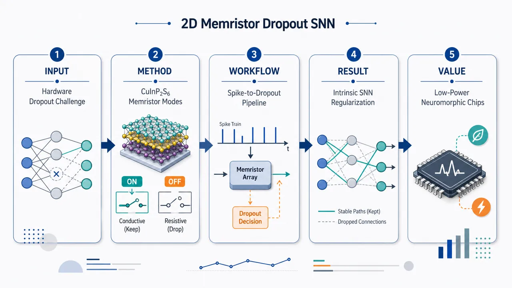
研究问题如何把二维 CuInP₂S₆ 忆阻器的多模式物理行为直接转化为脉冲神经网络中的 dropout 正则化机制，从而避免完全依赖软件随机失活，并面向低功耗类脑硬件实现。创新方法提出二维 CuInP₂S₆ 基多模式忆阻器，将器件自身可切换、可波动的多模式响应作为网络节点或突触的“内禀 dropout”来源，使硬件器件特性与神经网络正则化功能耦合，形成“器件即算法”的类脑计算设计。工作流程输入脉冲信号进入 CuInP₂S₆ 忆阻器阵列；器件在不同导电/响应模式间切换或波动；这种多模式行为在硬件层产生部分类神经元/突触随机失活效果；脉冲神经网络利用该内禀 dropout 完成训练或推理；最终输出更具泛化能力的识别结果。关键结果实现了二维 CuInP₂S₆ 多模式忆阻器，并展示其可用于构建具内禀 dropout 的脉冲神经网络；核心发现是器件物理多模式特性可承担网络正则化功能。不过给定内容未提供具体开关性能、功耗、耐久性、保持时间、识别精度或量化提升幅度。应用价值为低功耗类脑芯片提供一种硬件内生正则化路径，可减少软件 dropout 控制和额外随机数生成电路需求，使忆阻器阵列更适合构建紧凑、高能效、具泛化能力的脉冲神经网络加速器。核心概览
该论文报道二维 CuInP₂S₆ 多模式忆阻器，用器件本征可变响应在硬件中实现脉冲神经网络 dropout，属忆阻器类脑计算方向。
方法要点
- 采用二维 CuInP₂S₆ 作为忆阻器功能材料。
- 构建“多模式”忆阻器，以利用其多种存储/响应行为；具体器件结构和调控方式摘要未详述。
- 将器件的本征可变响应映射为脉冲神经网络中的 dropout 机制。
- 目标是在硬件层面实现随机正则化，以降低对外部算法或软件实现 dropout 的依赖。
- 题名和摘要暗示可能涉及铁电效应、离子迁移等多物理机制，但具体证据、分离方法和表征结果摘要未详述。
关键结果
- 报道了基于二维 CuInP₂S₆ 的多模式忆阻器。
- 该器件可利用本征可变响应实现脉冲神经网络中的 dropout。
- 工作将多物理存储行为与类脑计算应用相结合。
- 论文目标是通过硬件内建随机正则化减少外部算法开销。
- 摘要未给出识别精度、能耗、器件一致性、循环耐久性、保持特性等具体量化结果。
创新性判断
- 可能的新颖点在于：不是单纯用忆阻器实现权重存储或突触可塑性，而是利用 CuInP₂S₆ 器件本征响应波动来实现 dropout 这一训练/正则化机制。
- 相比软件 dropout 或外加随机数电路，该方案可能强调“器件内禀随机性/可变性即功能”，从而降低额外硬件或算法开销；但具体开销降低程度摘要未详述。
- CuInP₂S₆ 兼具二维材料特性及潜在铁电/离子迁移行为，将其用于多模式忆阻和脉冲神经网络 dropout 的结合，可能是该工作的特色；但相对已有二维铁电忆阻器或随机忆阻器工作的差异，摘要信息不足，不能确定其首创性。
-
10
📊 含图深析
📄 摘要：建立表面自旋群形式论，完整分类反铁磁体表面磁态，并识别可由表面诱导对称性破缺产生的交替磁表面自旋群。用该框架在数据库中找到 150 多个反铁磁候选，表明二维交替磁性可通过表面工程从常规反铁磁体中涌现。
💡 亮点：表面自旋群分类显示反铁磁表面可因对称性破缺产生交替磁性，并筛出 150 多个候选。该路线显著扩展二维交替磁材料来源。
📖 展开分析 + 配图
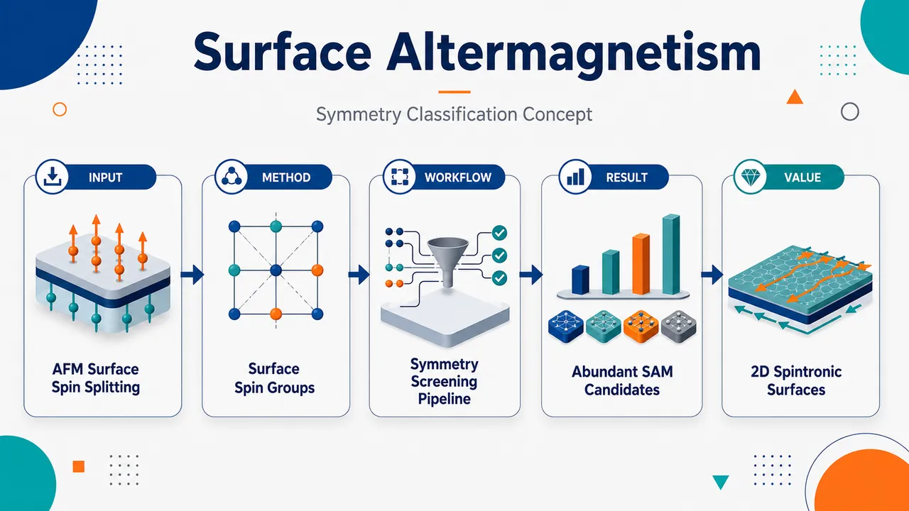
研究问题体相共线反铁磁体通常因 PT 或 Tt 等联合对称性而全布里渊区自旋简并；论文追问：切出特定晶面后，表面终止能否打破这些保护简并的体相对称，同时保留磁矩补偿，从而在反铁磁体表面涌现二维交替磁性自旋劈裂？创新方法提出“表面自旋群”形式主义：从体相自旋空间群中筛选保持表面法向且只含表面内平移的对称操作，构造 sSSG、sSPG 与表面自旋 Laue 群；核心 Aha 点是把交替磁性的来源从稀少体相交替磁体转向庞大反铁磁材料库的“合适表面”，并区分有自旋劈裂的 SAM 与节点面上自旋简并的 SD-SAM。工作流程输入体相共线反铁磁体与候选表面法向；提取体相自旋空间群；保留满足表面法向不变、平移在表面内的操作生成表面自旋群；投影为表面自旋点群并加入有效反演形成表面自旋 Laue 群；按 d-wave、g-wave、i-wave 与 SD-SAM 分类；在 MAGNDATA 中批量筛选候选材料；用最小 Lieb 晶格模型、表面 Green 函数和代表材料第一性原理计算展示表面自旋劈裂。关键结果完整得到 11 类非平凡表面交替磁性自旋点群，覆盖 d-wave、g-wave、i-wave 以及 SD-SAM；MAGNDATA 中超过 150 个反铁磁条目至少存在一个交替磁性表面，许多材料有多个可用表面；d-wave SAM 最常见，部分表面群对应 145、82、64 个表面，SD-SAM 也大量出现，最高统计达 306 个表面；最小模型显示体相能带因 PT 简并，而 (001) 表面出现 90° 旋转变号的 d-wave 自旋极化。应用价值提供无需剥离体相交替磁体的二维交替磁性实现路线：通过受控表面终止把普通反铁磁体功能化为表面交替磁体；可指导 ARPES、spin-STM、MOKE 等表面实验寻找自旋劈裂，并为反常霍尔效应、隧穿磁阻、自旋分流器电流和界面自旋电子器件提供更丰富材料平台；同时解释 KV₂Se₂O 中体相中子散射反铁磁与表面 ARPES d-wave 自旋劈裂的表观矛盾。第一部分：核心概览
该研究建立了表面自旋群（surface spin group）形式主义，证明体相为共线反铁磁体的材料在特定表面终止后可因对称性降低而涌现二维表面交替磁性（surface altermagnetism, SAM）。核心突破在于：将交替磁性的材料来源从少量体相交替磁体扩展到庞大的反铁磁材料库，并给出完整对称分类与数据库筛选路线。MAGNDATA 中超过 150 个反铁磁条目被识别为至少存在一个交替磁性表面。该框架还解释了 KV₂Se₂O 等材料中体相反铁磁与 ARPES 表面自旋劈裂之间的表观矛盾。
---
第二部分：结构化快速回顾
《Emergent altermagnetism at surfaces of antiferromagnets: full symmetry classification and material identification》（None，）
背景
交替磁体是补偿型共线磁体，具有破缺时间反演对称性的能带结构和 d-wave、g-wave、i-wave 偶宇称自旋劈裂。二维交替磁性对自旋电子学极具吸引力，但现有方案多依赖从体相交替磁体剥离，材料范围受限。共线反铁磁体在 MAGNDATA 中约占 40%，构成更大候选池。
方法
提出适用于半无限几何的表面自旋空间群（sSSG）与表面自旋点群（sSPG），定义保留表面法向且平移分量位于表面内的体相自旋空间群子群。进一步构造表面自旋 Laue 群，完整分类可产生 SAM 与 SD-SAM 的表面对称情形，并将算法应用于 MAGNDATA。
结果
识别出超过 150 个反铁磁材料条目至少具有一个自旋劈裂交替磁性表面。表面交替磁性可分为 d-wave、g-wave、i-wave，另有表面位于交替磁性节点平面时的自旋简并表面交替磁性（SD-SAM）。最常见的 SAM 表面群包括 d-wave 类型，表 1 中部分群对应表面数达 145、82、64。
讨论
表面终止可破坏体相中保护全布里渊区自旋简并的 PT 等对称性，同时保留磁补偿相关自旋对称性，从而在表面产生交替磁性。该机制自然解释了 KV₂Se₂O 中中子散射显示体相反铁磁、而 ARPES 显示 d-wave 自旋劈裂的矛盾。
局限
结构弛豫与重构的定量描述未纳入主要理论框架；表面粗糙、台阶、不同终止方式对交替磁性表面态的影响需要结合具体材料与表面化学进一步计算。所提供文本未包含 III.3 之后完整原文，材料清单、数据库筛选细节和所有第一性原理参数无法完整核验。
结论
受控表面终止可将大量体相反铁磁体功能化为有效二维交替磁体，避免剥离工艺限制，并为 ARPES、spin-STM、MOKE、AHE、隧穿磁阻和自旋劈裂输运等实验提供新的材料平台。
---
第三部分：逐章节冷凝解析
Abstract
Surface-induced altermagnetism expands candidate materials
表面诱导交替磁性被确立为从反铁磁体表面产生交替磁性的新机制，显著扩大可用材料范围。摘要直接给出核心判断：*"We demonstrate the emergence of altermagnetism at the surfaces of antiferromagnets, vastly expanding the number of material candidates with altermagnetic characteristics and establishing a route towards two-dimensional altermagnetism through surface-induced symmetry breaking."* 关键物理图像是：体相仍可为反铁磁体，但特定表面终止破坏保护体相自旋简并的空间-自旋联合对称性，使表面态呈现交替磁性自旋劈裂。
Surface spin group formalism gives full classification
研究的理论核心是表面自旋群形式主义，用于完整分类所有表面磁态，并识别哪些反铁磁表面可具有交替磁性。摘要给出方法定位：*"We do so by developing a surface spin group formalism that fully classifies all surface magnetic states and identifies altermagnetic surface spin groups that can arise at the surfaces of antiferromagnets."* 该框架不同于常规三维体相自旋群，也不同于严格二维单层自旋群，专门处理三维实空间 + 二维表面动量空间的半无限体系。
MAGNDATA screening finds over 150 antiferromagnetic entries
数据库筛选显示，该现象并非孤例。摘要给出明确数量级：*"We use this formalism to identify over 150 antiferromagnetic entries from the MAGNDATA database with at least one altermagnetic surface, often times with multiple such surfaces in the same material."* 因此，SAM 是广泛存在于共线反铁磁材料表面的对称允许现象，而不是少数材料的偶然效应。
Surface roughness and terraces are explicitly addressed
表面现实因素被纳入讨论范围，尤其是粗糙度与台阶表面。摘要明确指出筛选与分类还会 *"clarify the role of surface roughness and terraces."* 这点重要，因为表面交替磁性依赖终止方向与保留对称性，真实实验表面的台阶可能混合多个局域表面法向，从而影响观测到的自旋劈裂图样。
Minimal model and ab initio examples demonstrate d-wave and g-wave SAM
物理机制通过Lieb 晶格最小模型和两个代表性材料的第一性原理计算展示。摘要给出材料与波型：*"We illustrate this emergent phenomenon in a realistic Lieb lattice-based minimal model and present ab initio calculations on two representative material candidates, NaMnP and FeGe₂, exhibiting d-wave and g-wave surface altermagnetism, respectively."* 这说明表面交替磁性不仅可有 d-wave，也可有更高阶的 g-wave 图样。
KV₂Se₂O ARPES-neutron contradiction is resolved
该理论直接解释近期实验争议：ARPES 是表面敏感探针，可观测表面交替磁性；中子散射探测体相，可显示反铁磁序。摘要指出：*"Our theory naturally resolves the contradiction of recent experimental reports of d-wave spin splitting from ARPES measurements on metallic Lieb lattice compounds such as KV₂Se₂O that have been shown to be antiferromagnetic in the bulk."* 因此，体相反铁磁与表面 d-wave 自旋劈裂可以共存。
---
I Introduction
Altermagnets complete the taxonomy of collinear magnets
交替磁体被置于共线磁体分类中的第三类，与传统铁磁体和反铁磁体并列。开篇定义为：*"The recently discovered altermagnets (AMs) are magnetically compensated collinear ordered materials, with an unconventional time reversal symmetry (TRS) broken electronic band structure, characterized by an even-wave spin-splitting pattern with d-, g- or i-wave symmetry."* 其关键特征有三点：磁矩补偿、共线磁序、时间反演破缺的自旋劈裂能带。这区别于铁磁体的净磁化，也区别于常规反铁磁体中常见的全局自旋简并。
Spin group symmetry enables full bulk classification
体相共线磁体的完整分类依赖自旋群对称性，因为自旋纹理与晶格可由不同对称操作作用。引言给出分类基础：*"The full classification of bulk collinear magnets in these three types was achieved by considering their spin group symmetries, which allows for distinct symmetries acting on the spin texture and the lattice separately."* 这种形式主义使用类似 [spin operation || real-space operation] 的结构，能精确区分传统反铁磁、铁磁与交替磁体。
Altermagnetic symmetry generates spintronic responses
交替磁性的对称性导致多种自旋电子学效应，包括各向异性自旋极化电流、反常霍尔效应与自旋分流器效应。引言列举：*"The symmetry properties of altermagnets lead to several spintronics effects, such as anisotropic spin-polarized currents, anomalous Hall effect, and the novel spin-splitter effect."* 这些响应来自动量空间中交替符号的自旋劈裂，而非净磁化。
Experimentally verified bulk altermagnets remain limited
体相交替磁性已在 MnTe 和 CrSb 等材料中获得实验验证，并在 KV₂Se₂O 与 Rb₁₋δV₂Te₂O 中被提出。引言写道：*"While bulk altermagnetism has been experimentally verified in materials such as MnTe and CrSb, and suggested in the metallic KV₂Se₂O and Rb₁₋δV₂Te₂O, there remains an interest in expanding the material class of experimentally readily available altermagnets."* 这说明领域痛点不是概念缺失，而是可实验获得材料类别不足。
Two-dimensional altermagnetism is technologically important but hard to obtain
二维交替磁性对数据技术和界面物理尤其重要，但现有策略多依赖剥离。引言指出：*"This is most relevant in the realm of 2D AMs, since most data technology applications are driven by interface effects."* 现有方案的问题是：*"Most existing strategies to generate 2D AMs focus on exfoliation from bulk AMs, bringing an extra step of complication because not all materials are easily exfoliable."* 因而，从普通反铁磁体表面直接产生二维交替磁性具有工艺优势。
Collinear antiferromagnets form a much larger material reservoir
共线反铁磁体是最大磁性材料类别之一，在 MAGNDATA 中约占 40%。引言给出比例：*"collinear AFMs – with about 40% of materials in the MAGNDATA material database belonging to this class."* 这构成将反铁磁体“功能化”为交替磁性平台的材料基础。核心问题被表述为：*"A fundamental question is whether it is possible to functionalize AFMs in such a way that they generate altermagnetism."*
Surface termination breaks selected symmetries and induces SAM
研究给出的答案是：特定方向表面终止可诱导对称性破缺，从而在体相反铁磁体表面产生交替磁性。引言明确写道：*"Here we demonstrate that this functionalization is possible through the symmetry breaking induced by the termination of particular AFMs in specific directions, i.e., emergent surface-induced altermagnetism in bulk AFMs."* 其关键不在于改变体相磁序，而在于改变表面保留的自旋-空间对称群。
Surface spin groups differ from 3D and strict 2D classifications
所建立的理论专门针对半无限体系，其表面态处于三维实空间但动量空间投影为二维。引言说明：*"This formalism is specific to a semi-infinite geometry with surface states, living in the 3D real-space and 2D momentum-space, which is different from the spin symmetries in the 3D and strictly 2D monolayer systems."* 因此，不能简单套用体相 SPG 或严格二维 layer spin group。
More than 150 MAGNDATA antiferromagnets host spin-split SAM surfaces
数据库筛选核心结果为：*"By applying this classification to the known collinear AFMs in the MAGNDATA database, we identify over 150 AFMs entries with at least one spin-split altermagnetic surface."* 这一定量结果支撑“表面交替磁性广泛存在”的主张，并且许多材料可能有多个交替磁性表面。
Surface-sensitive probes can directly test the prediction
可检测手段包括 spin-polarized STM、ARPES 和 MOKE。引言列出：*"These altermagnetic states at AFM surfaces can be directly probed by several surface sensitive experimental probes, such as spin-polarized scanning tunnel microscopy, angle resolved photoemission spectroscopy, and magneto-optical Kerr effect."* 若表面态为金属性，还可表现 AHE、TMR、spin-splitter currents 等输运响应。
KV₂Se₂O contradiction motivates the surface interpretation
近期 KV₂Se₂O 的实验争议成为重要动机：中子散射指向体相反铁磁，而 ARPES 显示交替磁性自旋劈裂。引言指出：*"the recent reports of neutron scattering experiments on KV₂Se₂O demonstrating a bulk antiferromagnetic order and seemingly contradicting the surface-sensitive ARPES altermagnetic measurements, are naturally explained by our theory of surface altermagnetism."* 由于 ARPES 具有表面敏感性，两种实验可探测不同物理层级。
SAM and SD-SAM are distinguished by surface spin splitting
研究区分两类表面交替磁性：SAM 与 SD-SAM。引言给出定义：*"We also indicate AFMs with surfaces that have altermagnetic symmetries but where the surface plane coincides with one of the nodal planes of the altermagnetic order, making the surface electronic band structure spin degenerate."* 这种情况被命名为：*"We term this scenario spin-degenerate surface altermagnetism (SD-SAM), reserving SAM for the spin-split surface altermagnetism explicitly."* 因而，是否出现非相对论表面自旋劈裂取决于表面是否落在交替磁性节点平面上。
---
II Minimal model for emergent surface altermagnetism
Layered Lieb lattices motivate the minimal model
反 Lieb 晶格被用作产生二维 d-wave 交替磁性的概念平台。章节开头指出：*"The inverse Lieb lattice has attracted considerable attention as a minimal and conceptually clean platform to achieve two-dimensional d-wave altermagnetism."* 该结构包含具有 checkerboard 磁序的层状单元，适合展示由堆垛和表面终止决定的体相/表面磁性差异。
FeSe monolayer illustrates inversion-center breaking between opposite-spin sites
二维交替磁性的早期例子来自单层 FeSe：*"a single monolayer of FeSe, a parent compound of extensively studied FeSe-based superconductors, was shown to recover the same checkerboard order with altermagnetic symmetry, after breaking the inversion center that connects the opposite-spin Fe sites."* 这里的关键是破坏连接相反自旋 Fe 位点的反演中心，使 checkerboard 反铁磁样式获得交替磁性对称。
ARPES observations in Rb₁₋δV₂Te₂O and KV₂Se₂O may reflect surface rather than bulk altermagnetism
金属 Lieb 晶格化合物 Rb₁₋δV₂Te₂O 与 KV₂Se₂O 被报道具有室温 d-wave 交替磁序，但可能由表面交替磁性解释。原文为：*"recent experimental reports on the metallic Lieb lattice compounds Rb₁₋δV₂Te₂O and KV₂Se₂O suggest altermagnetic order with d-wave symmetry at room temperature, but may in fact be explained by surface altermagnetism."* 支撑理由来自中子散射：*"recent neutron scattering measurements indicating bulk antiferromagnetic order."*
Spin- and angle-resolved photoemission directly probes surface states
上述材料的关键实验是 spin- and angle-resolved photoemission spectroscopy，其表面敏感性使 SAM 解释自然成立。章节指出：*"Both materials are of particular relevance to our discussion because the altermagnetic spin splitting was probed by spin- and angle-resolved photoemission spectroscopy, which directly accesses the states at the surface of the sample."* 因此，ARPES 看到的自旋劈裂不必代表体相交替磁性。
Stacking sequence controls bulk altermagnetism versus antiferromagnetism
层间堆垛决定体相磁性类别。相同磁层直接堆叠时为交替磁性：*"When identical magnetic layers are stacked directly on top of each other, as was assumed in the reported experiments of KV₂Se₂O and Rb₁₋δV₂Te₂O, the system is altermagnetic."* 相反，交替晶体环境堆垛可恢复反铁磁对称性：*"when the layers are stacked with alternating crystal environments... the resulting system recovers the symmetries of an antiferromagnet."*
Single-layer d-wave altermagnetism arises from ligand-induced sublattice anisotropy
最小模型中，每层是典型二维 d-wave AM，具有 checkerboard 磁序。章节描述：*"Our tight-binding model... consists of coupled layers, with each layer being a prototypical two-dimensional d-wave AM with checkerboard pattern."* 非磁配体破坏相反自旋子晶格间反演中心：*"The altermagnetism in a single layer emerges from the presence of the nonmagnetic sites... which break the inversion center between opposite-spin sublattices within the same layer."* 这导致同一子晶格沿 [100] 与 [010] 的键不等价。
Ligand degrees of freedom are integrated out into anisotropic hopping amplitudes
非磁配体的作用通过各向异性次近邻子晶格内跃迁表示。原文说明：*"We integrate out the degrees of freedom associated with the yellow ligands... and we introduce the resulting sublattice anisotropy through intra-sublattice hopping amplitudes t₂,a and t₂,b, with t₂,a ≠ t₂,b."* 模型中给出的图 1 参数为：t₁ = 0.2, t₂,a = 0.4, t₂,b = 0, u = 1.2, J = 1, v = 0.4，单位为 J。
Alternating anisotropy between adjacent layers restores antiferromagnetic PT symmetry
相邻层之间的子晶格内跃迁各向异性交替，形成常规反铁磁体。章节指出：*"These intra-sublattice hoppings alternate between adjacent layers, leading to a conventional antiferromagnetic order."* 该交替引入自旋对称性 [T||PT]，简称 PT：*"this alternation introduces the spin symmetry [𝒯||𝒫𝒯]... This PT symmetry protects the spin degeneracy across the entire Brillouin zone."* 因此，体相能带是 Kramers 简并的。
SSH-type interlayer staggering creates surface-localized states
为获得保留单层交替磁性的表面态，模型引入交替垂直层间耦合 u 与 v：*"we introduce alternating vertical inter-layer couplings u and v, i.e., an SSH-type staggering of the hopping amplitudes."* 当 u ≠ v 时，非磁配体处反演中心被破坏：*"The SSH inter-layer couplings u ≠ v break the center of inversion at the nonmagnetic ligand."* 这种结构使表面终止能够产生类似 SSH 边界态的表面谱权重。
Collinear spin-only group induces effective inversion in the band structure
即使真实空间反演被表面或 SSH 交错破坏，共线磁体的自旋-only 群可在能带中引入有效反演。章节写道：*"However, the spin-only group of a collinear magnet... introduces an effective inversion in the electronic band structure."* 这说明自旋 Laue 群可为中心对称，即使真实空间表面本身破坏反演。
Bulk spin Laue group is specified as ℤ₂[C₂⊥||E] × ¹4/¹m¹m¹m
模型的体相自旋 Laue 群为
ℤ₂^[C₂⊥||E] × ¹4/¹m¹m¹m。原文给出：*"The corresponding spin point group after introducing inversion is called the spin Laue group, and for this model reads ℤ₂^[C₂⊥||E] × ¹4/¹m¹m¹m."* 其中 ℤ₂^[C₂⊥||E] = [E||E], [C₂⊥||E]。Litvin 记号中，上标 1 表示自旋恒等操作，上标 2 表示垂直于共线轴的二重自旋旋转。
The Bloch Hamiltonian explicitly contains layer, sublattice, and spin Pauli sectors
Bloch 哈密顿量使用三组 Pauli 矩阵：σ 表示层、τ 表示子晶格、ν 表示电子自旋。原文定义：*"σμ, τμ, and νμ with μ ∈ 0,x,y,z are the Pauli matrices denoting the layer, the sublattice, and the spin degree of freedom of the electrons, respectively."* 哈密顿量包含层间 SSH 项、子晶格间跃迁 t′(k)、Hund 耦合 J、以及由 𝒜(k) 与 ℬ(k) 控制的各向异性项。
Bulk bands are Kramers degenerate due to PT symmetry
体相周期边界条件下的能带无自旋劈裂。章节明确写道：*"The corresponding electronic band structure of this bulk AFM model is shown in Fig. 1(b). The presence of the PT symmetry enforces the Kramers’ degeneracy of the bands."* 这为后续“表面破坏 PT 后出现劈裂”提供对照。
Surface Green’s function reveals spin-resolved surface spectral density
半无限模型的 (001) 表面态通过表面 Green 函数重整化方法计算：*"we use the established surface Green’s function renormalization method."* 自旋分辨谱函数定义为：*"It provides access to the spin-resolved spectral function 𝒢σ(E,k)=−Im Tr Gσ(E,k)/π."* 其中 σ = ↑, ↓，用于绘制表面布里渊区中的自旋上/下谱权重。
The (001) surface shows alternating spin polarization and d-wave splitting
图 1(c,d) 显示表面态有明显交替自旋极化。章节描述：*"One can clearly see the high spectral weight of surface states with alternating spin polarization."* d-wave 图样通过
Δ𝒢(E,k)=𝒢↑(E,k)−𝒢↓(E,k) 的等能切片显现：*"The d-wave spin splitting in the surface spectrum becomes particularly clear for the isoenergy cut of Δ𝒢(E,k)=𝒢↑(E,k)−𝒢↓(E,k)."* 图 1(d) 的等能量为 0.8/J。
Surface termination reduces the bulk spin Laue group to a d-wave altermagnetic group
(001) 表面将体相自旋 Laue 群
ℤ₂^[C₂⊥||E] × ¹4/¹m¹m¹m
降低为
²4/¹m¹m²m。章节写道：*"The spin Laue group of the bulk... is broken down to ²4/¹m¹m²m... by the termination of the (001) surface."* 该表面群对应 d-wave altermagnet：*"The spin point group ²4/¹m¹m²m corresponds to a d-wave altermagnet."*
[C₂⊥||C₄z] symmetry flips spin polarization under 90° rotation
表面 d-wave 图样由子晶格交换对称性控制。章节指出：*"[C₂⊥||C₄z]... connects opposite-spin sublattices, and is reflected in the sign change of the spin-polarized surface spectral function under a 90° rotation."* 因而，在表面布里渊区中旋转 90° 后，自旋极化符号反转，这是 d-wave 交替磁性的标志。
Transposing mirror symmetries enforce spin-degenerate nodal lines
额外的子晶格交换镜面对称性包括 [C₂⊥||m[110]] 和 [C₂⊥||m[1bar10]]。原文指出：*"These transposing mirrors enforce two spin-degenerate nodal planes, which become nodal lines in the projected 2D surface Brillouin zone."* 这解释了 d-wave SAM 中自旋劈裂并非处处非零，而是在特定动量线上被对称性强制为零。
Minimal model captures the essential SAM mechanism
该模型最终展示的核心机制是：体相自旋简并保护对称性被表面破坏，但磁补偿相关自旋对称性仍保留。章节总结为：*"The symmetries enforcing spin degeneracy throughout the bulk Brillouin zone... are broken by the surface termination of the AFM, while some spin symmetries that protect the magnetic compensation are preserved."* 这正是反铁磁体表面涌现交替磁性的普适逻辑。
---
III Systematic search for surface altermagnetism
A systematic mathematical framework is required for real-material discovery
从模型走向材料筛选需要完整数学框架。章节开头指出：*"A natural next step is to develop a systematic strategy for identifying real materials that host surface altermagnetism."* 该框架有两个目的：一是完整分类所有可能的表面交替磁性对称场景，二是对磁性材料数据库执行筛选。原文表述为：*"it enables a complete classification of all symmetry scenarios in which surface altermagnetism can, in principle, arise"*，并且 *"allows us to perform database searches of magnetic materials to identify concrete candidates and to compile statistics."*
The workflow has five components
系统搜索分为五步：定义 sSSG、分类交替磁性 sSG、开发数据库算法、分析粗糙度与台阶、展示材料统计。章节列出：*"We will proceed in three steps"*，随后实际列出 (i)–(v)：*"we define and discuss the mathematical objects of surface spin groups"*；*"classify surface spin groups describing altermagnetism"*；*"develop an algorithm to identify bulk AFM with surface altermagnetism in the MAGNDATA materials database"*；*"explain how the influence of surface roughness and terraces... can be inferred"*；*"present its results to demonstrate the abundance of surface altermagnets."*
---
III.1 Definition of surface spin groups
Surface spin space group is defined as a surface-preserving subgroup of the bulk SSG
表面自旋空间群（sSSG）被定义为体相自旋空间群中保持表面法向不变、且平移分量位于表面内的元素集合。数学定义为：
R⁽ˢ⁾ₙ = [gₛ||gᵣ|t] ∈ Rˢ : (gᵣ·n = n) ∧ (t ⟂ n)。
原文说明：*"We define the nontrivial sSSG with respect to a nontrivial bulk SSG Rˢ and a surface normal n as..."* 其中 gₛ 作用于自旋空间，gᵣ 作用于实空间，t 是直接空间平移。
The sSSG contains operations compatible with a semi-infinite surface
sSSG 是体相 SSG 的子群，只包含不把表面法向翻转或移出表面的对称操作。章节解释：*"Rˢₙ is a subgroup of Rˢ."* 更具体地，sSSG 包含所有 *"keep the normal n of a given surface invariant"* 且平移分量满足 *"translations purely within the surface plane"* 的元素。因而，反演、垂直于表面的镜面等通常不属于给定表面的非平凡 sSSG。
Surface spin point group is obtained by projecting out translations
后续分析集中于表面自旋点群（sSPG）。获得方式是丢弃 sSSG 元素中的平移部分：*"To obtain those from the elements of the sSSG, we project out the translational part of each symmetry operation, identifying it with the corresponding point group transformation."* 记号 ℛˢ 表示体相 SPG，ℛˢₙ 表示表面 sSPG。
sSPG differs from both 3D SPG and strict 2D spin layer groups
sSPG 的独特性来自半无限几何：实空间仍为三维，但布里渊区投影为二维。原文指出：*"In contrast, since sSPG are meant to describe a semi-infinite system, the real space operations remain three-dimensional, but the Brillouin zone is projected onto only two dimensions, i.e., the surface Brillouin zone."* 这使表面体系介于三维体相与严格二维单层之间。
In 3D, [C₂⊥||E] enforces spin degeneracy everywhere
三维体系中，[C₂⊥||E] 是全布里渊区自旋简并的关键操作：*"In 3D systems, the spin point group element [C₂⊥||E] enforces spin degeneracy across the entire Brillouin zone."* 对共线体系，[C₂⊥||𝒫] 与自旋-only 群中的 [C₂⊥𝒯||𝒯] 还会推出 [𝒯||𝒫𝒯]，即使含 SOC 也可通过 Kramers 定理保护简并。
Strict 2D systems have additional spin-degeneracy operations absent from surfaces
严格二维极限中，[C₂⊥||mₙ] 与 [C₂⊥||Cₙ] 也可保护共线磁体自旋简并。原文写道：*"In the strict 2D limit, there are two additional elements, [C₂⊥||mₙ] and [C₂⊥||Cₙ], which analogously enforce spin-degeneracy for collinear magnets."* 但半无限表面中，某些操作不保持法向，因此不能进入非平凡 sSPG。
Only [C₂⊥||E] and [C₂⊥||C₂n] enforce surface spin degeneracy
sSPG 的核心区别在于：对表面半无限体系，只有两类操作导致自旋简并。章节强调：*"Only the elements [C₂⊥||E] and [C₂⊥||C₂n] give rise to spin-degenerate bands... placing sSPG in an intermediate regime between the fully three- and two-dimensional limits."* 这条规则是区分 SAM 与 SD-SAM、并确定表面自旋劈裂是否存在的关键。
---
III.2 Classification of altermagnetic surface spin groups
Only specific surface spin groups support altermagnetism
并非所有 sSPG 都支持交替磁性。章节开头指出：*"As in 3D and 2D spin groups, only specific surface spin groups support altermagnetism."* 这些群可按自旋劈裂节点结构分类为 d-wave、g-wave、i-wave：*"yielding d-, g-, and i-wave types characterized by two, four, and six nodal lines, respectively."* 节点线数分别为 2、4、6。
SAM and SD-SAM differ by whether the surface lies in a nodal plane
表面交替磁性有两种变体，取决于表面是否与交替磁性节点平面重合。原文定义：*"When the surface does not coincide with a nodal plane, the surface electronic spectrum is spin split... we refer to this case as surface altermagnetism (SAM)."* 若表面位于节点平面：*"the surface spin group still exhibits altermagnetic symmetries, yet the surface spectrum remains spin degenerate."* 该情况命名为 SD-SAM。
SD-SAM is not an isolated 2D layer phenomenon
SD-SAM 与二维 BZ 中的 type-IV magnet 场景相似，但物理对象不同。章节说明：*"The SD-SAM scenario is reminiscent of the type-IV magnet scenario... because both are properties present in a 2D BZ."* 关键差别是：*"the relevant two-dimensional Brillouin zone is not that of an isolated layer, but the surface Brillouin zone of a semi-infinite three-dimensional crystal."*
SD-SAM preserves defining altermagnetic symmetries despite zero nonrelativistic spin splitting
SD-SAM 在非相对论极限中无动量空间自旋极化，但仍具有交替磁性定义性对称特征：*"even though surfaces with SD-SAM exhibit no spin polarization in momentum space in the non-relativistic limit, they still have the defining altermagnetic symmetries: collinearity, symmetry compensation of magnetic moments, no PT, Tt symmetries."* 因而，自旋简并不等同于普通反铁磁表面；其磁性点群仍体现交替磁性。
Ferroically ordered partial-wave atomic spin density distinguishes SAM and SD-SAM
SAM 与 SD-SAM 的差别可从原子自旋密度的铁性有序部分波分量理解。原文写道：*"These properties are reflected in the presence of ferroically ordered partial-wave components of the atomic spin density."* 这种铁性序破坏时间反演但净磁化为零：*"This ferroic order... breaks time reversal symmetry while retaining a net zero magnetization."* 在 SD-SAM 中，节点平面与表面重合，使非相对论自旋劈裂为零：*"the ferroic atomic spin densities have one of their nodal planes coinciding with the surface, leading to zero spin splitting."*
SD-SAM can retain MOKE and AHE because magnetic point groups match SAM
尽管 SD-SAM 表面能带在非相对论极限自旋简并，某些输运与光学响应仍可存在。章节指出：*"many defining transport properties associated with altermagnetism, such as the magneto-optical Kerr effect (MOKE) or the anomalous Hall effect (AHE), remain present in SD-SAMs."* 原因是这些现象受磁点群而非自旋群约束：*"these transport phenomena are constrained by the magnetic point group rather than by the spin group, within which SD-SAMs and SAMs are indistinguishable."*
Surface parent point groups are restricted to nine candidates
完整分类先从 32 个晶体学点群中排除不能成为表面点群的群。排除原则包括：中心对称群与 roto-inversion 群不能保持任意表面法向；具有两个互相垂直旋转轴的群也不合格；恒等群不支持 SAM/SD-SAM。剩余九个空间父群为：
2, m, mm2, 4, 4mm, 3, 3m, 6, 6mm。
原文给出：*"we are left with the following 9 candidates for spatial parent groups for the sSPG: 2,m,mm2,4,4mm,3,3m,6,6mm."*
Surface antiferromagnetism is excluded from the SAM-focused classification
所有九个空间父群原则上也可支持普通反铁磁表面，若表面存在 [C₂⊥||E]。章节说明：*"in principle all groups... can also support an antiferromagnetic surface if the symmetry [C₂⊥||E] is present at the surface."* 这种情况对应 ℤ₂^[C₂⊥||E] × 𝒢，但被排除在交替磁性表面主分类之外：*"Because in this manuscript we focus on altermagnetic surfaces, we will not discuss this situation further."*
Litvin halving-subgroup construction generates the collinear surface spin groups
分类采用自旋父群 E, C₂⊥ 与空间父群组合。由于自旋父群有两个元素，每个自旋群可由空间父群的半群子群构造。原文说明：*"Because this spin parent group has two elements, every subgroup of the full product group between the spin and the spatial parent group can be built from halving subgroups of the spatial parent."* 这是 Litvin 二元自旋父群定理的特例。
Eleven nontrivial sSPGs are obtained
逐个分析九个父群后得到 11 个非平凡 sSPG。原文总结：*"We conclude that there are in total the following 11 different nontrivial sSPG."* 这些包括：
²2z、²mx/y、²mx/y²my/x¹2z、²mx/y¹my/x²2z、²4z、²4¹m²m、¹4²m²m、¹3²m、²6、²6²m¹m、¹6²m²m。
这些群列于表 1 第二列。
Adding effective inversion produces eleven surface spin Laue groups
在 sSPG 上加入共线自旋-only 群给出的有效反演，可构造表面自旋 Laue 群。章节写道：*"We now add the effective inversion symmetry of the spin-only group to build surface spin Laue groups from this."* 所得 11 个 surface spin Laue groups 形式为 ℤ^[E||𝒫] × ℛˢₙ，对应表 1 第三列。
Table 1 gives full SAM and SD-SAM classification and material-count statistics
表 1 按部分波字符、sSPG、surface spin Laue group、是否表面自旋劈裂、数据库表面数给出完整分类。表注说明：*"The first column specifies the partial-wave character associated with the surface spin group, that can be d-, g-, i-wave or spin degenerate (SD-SAM)."* 第四列区分 SAM 与 SD-SAM：*"A tick (✓) indicates spin-split surface bands. These groups describe surface altermagnetism (SAM)."* 叉号表示：*"the absence of spin-splitting in the non-relativistic limit... spin-degenerate surface altermagnetism (SD-SAM)."*
d-wave SAM dominates the identified surface groups
表 1 中 d-wave SAM 对应多个高频表面群。具体数目包括：
- ²mx ²my ¹2z / ²mx ²my ¹mz：145 个表面；
- ²4 ²m ¹m / ²4/¹m ²m ¹m：82 个表面；
- ²4 / ²4/¹m：1 个表面；
- ²mx/y / ²2x/y/²mx/y：64 个表面。
这些数据支撑 d-wave SAM 在候选材料中最常见。
g-wave and i-wave SAM are symmetry-allowed but rarer
表 1 中 g-wave SAM 群 ¹4 ²m ²m / ¹4/¹m ²m ²m 对应 4 个表面。i-wave SAM 包括 ¹6 ²m ²m / ¹6/¹m ²m ²m，表中未给出候选数量（标为 “–”），以及 ¹3 ²m / ¹bar3 ²m，对应 2 个表面。节点结构上，g-wave 有 4 条节点线，i-wave 有 6 条节点线。
SD-SAM is statistically abundant
表 1 中 SD-SAM 数量很高，尤其是 ²mx/y ¹my/x ²2z / ²mx/y ¹my/x ²mz，对应 306 个表面。其他 SD-SAM 包括：
- ²2z / ²2z/²mz：66 个表面；
- ²6 ²m ¹m / ²6/²m ²m ¹m：未给出候选数量；
- ²6 / ²6/²m：1 个表面。
这说明具有交替磁性对称但非相对论表面能带自旋简并的情况比显式自旋劈裂 SAM 还常见。
---
III.3–VI 与 Appendix
Provided source text stops before the full database algorithm, material tables, roughness analysis, ab initio details, discussion, conclusion, and appendix
可核验原文仅覆盖 Abstract、I、II、III、III.1、III.2 以及表 1。引言预告后续内容包括 MAGNDATA 算法、粗糙度和台阶、材料筛选结果、NaMnP/KV₂Se₂O/FeGe₂ 第一性原理计算、实验争议讨论、结论与展望。相关预告包括：*"In Sec. IV, we present explicit ab initio calculation on three representative AFMs identified by our classification, NaMnP, KV₂Se₂O and FeGe₂"*；以及 *"In Sec. V we discuss the implications of our general formalism to realize surface altermagnetism through the controlled termination of bulk AFMs."* 由于完整章节原文未提供，具体计算参数、能带图、DFT 设置、完整材料清单与统计表无法逐条引用核验。
---
第四部分：深度理解与语言支持
1. 术语解析
#### Altermagnetism
Altermagnetism 指一种磁矩补偿的共线磁相，不同于普通反铁磁体，它的能带在无 SOC 情况下也可出现动量依赖的自旋劈裂；不同于铁磁体，它没有净磁化。语境中的定义是：*"magnetically compensated collinear ordered materials, with an unconventional time reversal symmetry broken electronic band structure."* “alter-”强调自旋劈裂在动量空间中交替变号，例如 d-wave 图样中旋转 90° 后自旋极化符号翻转。
#### Surface-induced symmetry breaking
Surface-induced symmetry breaking 指从无限周期体相切出半无限晶体后，某些体相对称操作不再保留表面法向或表面平移，因此被破坏。关键不是表面一定改变局域磁矩，而是表面几何删除了保护体相简并的对称操作。对应表达：*"surface-induced symmetry breaking"* 与 *"termination of particular AFMs in specific directions."*
#### Surface spin space group / surface spin point group
sSSG 是体相自旋空间群中与特定表面兼容的子群；sSPG 是去除平移后的点群版本。定义中的 gᵣ·n = n 要求实空间点操作保持表面法向，t ⟂ n 要求平移只在表面内。它不是普通 surface group，也不是普通 spin group，而是专为自旋-空间分离操作和半无限表面态设计。
#### Surface spin Laue group
Surface spin Laue group 是在 sSPG 上加入共线自旋-only 群导致的有效反演后得到的群。微妙点在于：表面真实空间反演可能已经破坏，但电子能带分类中仍可出现“有效中心对称”的 Laue 群。原文强调：*"both groups are centrosymmetric... despite the fact that inversion symmetry is broken by the surface."*
#### Spin-degenerate surface altermagnetism
SD-SAM 指表面拥有交替磁性对称性，但表面恰好位于交替磁性节点平面上，导致非相对论能带无自旋劈裂。它不是普通反铁磁表面，因为仍满足无 PT/Tt 等交替磁性判据，并可保留 MOKE、AHE 等由磁点群控制的响应。
---
2. 疑难查证
#### 为什么体相反铁磁体表面可以变成交替磁体？
体相反铁磁体的自旋简并常由某种联合对称保护，例如 PT 或 Tt。在无限晶体中，该操作把一个自旋态映射到同一动量或等价动量处的反自旋态，因此能带成对简并。切出表面后，如果该操作会把表面法向 n 变成 −n，或需要垂直于表面的平移，就不再是半无限体系的对称性。于是，保护简并的体相对称被破坏。
但交替磁性还需要磁补偿，不能变成铁磁表面。若某些子晶格交换自旋对称性仍保留，例如 [C₂⊥||C₄z] 或特定镜面操作，相反自旋子晶格仍由对称性关联，净磁化仍为零，同时能带允许动量依赖自旋劈裂。结果就是：体相是反铁磁，表面是交替磁体。
#### 为什么 SAM 与 SD-SAM 都叫 altermagnetism，但一个有自旋劈裂、一个没有？
交替磁性可从两个层面理解：
- 对称性层面：是否共线、磁矩补偿、无保护全局简并的 PT/Tt、具有高阶部分波自旋密度。
- 能带表现层面：在观察的动量平面中是否出现自旋劈裂。
SAM 与 SD-SAM 在第一层面相同；差别在第二层面。若表面布里渊区避开节点平面，自旋劈裂可见，即 SAM。若表面布里渊区正好落在节点平面上，交替磁性自旋劈裂函数在该平面取零，即 SD-SAM。类似三维 d-wave 函数在某些平面上为零，但不能说明三维序参量不存在。
#### 为什么表面体系既不是 3D，也不是严格 2D？
表面态局域于表面附近，但原子结构仍嵌在三维晶体中，实空间对称操作必须作为三维操作判断是否保持半无限几何。同时，电子动量只有表面平行方向 kx、ky 保持好量子数，垂直方向 kz 不再是好量子数。因此，实空间维度是 3D，动量空间分类是 2D surface BZ。这导致 sSPG 的自旋简并规则不同于 3D SPG 和严格 2D layer group。
---
第五部分：创新评估与关联
1. 创新性判断
#### From rare bulk altermagnets to abundant AFM surfaces
过去 2–5 年交替磁性研究主要聚焦于体相交替磁体，如 MnTe、CrSb，或可剥离/单层体系，如 FeSe 单层、二维 Lieb 晶格材料。该研究的关键新颖性是把交替磁性的生成机制从“寻找体相交替磁体”转变为“选择反铁磁体的合适表面终止”。由于共线反铁磁体在 MAGNDATA 中约占 40%，材料空间被显著扩大。
#### First full symmetry classification for semi-infinite altermagnetic surfaces
已有自旋群分类覆盖三维体相和严格二维单层，但半无限表面态的对称性既不属于前者也不属于后者。该研究引入 sSSG、sSPG、surface spin Laue group，明确给出表面法向保持条件 gᵣ·n = n 与表面内平移条件 t ⟂ n，并导出只有 [C₂⊥||E] 与 [C₂⊥||C₂n] 在表面体系中保护自旋简并。这解决了表面交替磁性缺少完整群论判据的问题。
#### SAM/SD-SAM distinction resolves a subtle classification gap
过去“是否有自旋劈裂”常被直接用于判断交替磁性。该研究引入 SD-SAM，说明表面即使无非相对论自旋劈裂，也可在对称性与原子自旋密度层面属于交替磁性。这补上了“交替磁性对称存在但观测平面处于节点”的分类缺口，并解释为何 MOKE/AHE 等磁点群控制效应仍可能存在。
#### Direct explanation of KV₂Se₂O experimental contradiction
KV₂Se₂O 中 ARPES 报告 d-wave 自旋劈裂，而中子散射显示体相反铁磁，这在传统体相解释下矛盾。表面交替磁性机制给出自然解：ARPES 探测表面，neutron scattering 探测体相。于是同一材料可同时具有体相反铁磁序与表面交替磁性自旋劈裂。
#### Practical route to 2D altermagnetism without exfoliation
现有二维交替磁性路线高度依赖剥离、单层制备或特殊范德华材料。该研究提出通过受控表面终止在普通反铁磁体上实现有效二维交替磁性，可避免不可剥离材料的限制，并适合与界面器件、表面敏感谱学和薄膜生长技术结合。潜在应用包括 spin-polarized STM、ARPES、MOKE、AHE、TMR、spin-splitter currents。
-
11
📊 含图深析
📄 摘要：提出交替磁薄膜与超导衬底近邻耦合形成的二维异质结构，用于边界局域 Majorana 零模。进一步讨论该平台中 Majorana 模式的可扩展编织，为拓扑量子计算中任意子操控提供基于交替磁体的器件方案。
💡 亮点：交替磁体-超导近邻结构被设计为边界 Majorana 零模与编织平台。它把交替磁自旋劈裂引入可扩展拓扑量子器件方案。
📖 展开分析 + 配图
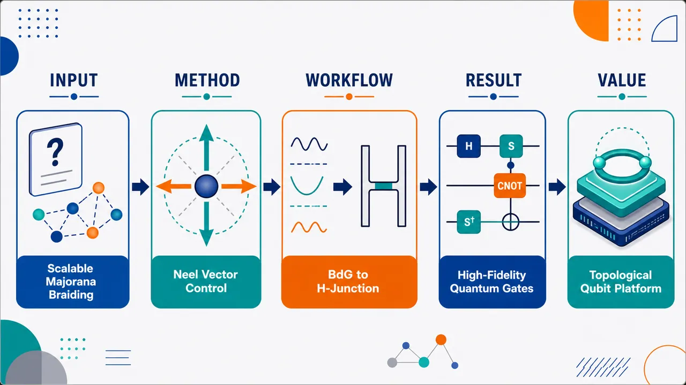
研究问题如何在二维高阶拓扑超导平台中，不只产生角点 Majorana 零模，还能把至少 4 个零模可控移动、互相编织，并形成可扩展的拓扑量子门网络。创新方法构建替代磁体-超导体异质结构，把零净磁矩替代磁体的 Néel 矢量作为“磁序旋钮”；旋转 Néel 矢量会重排方形边界上的质量畴壁，使 Majorana 零模沿角点和边界迁移。进一步用七个方块组成 H-junction，通过局部调控化学势和 Néel 矢量完成 γ2 与 γ3 的非阿贝尔交换。工作流程输入为方格点 BdG 模型：d-wave 替代磁体、helical p-wave 超导、s-wave 配对、Rashba 自旋轨道耦合。先用低能边缘理论和玻色化解析边界质量项与角点零模，再旋转 Néel 矢量移动 MZMs；在方形平台中做 2π 方位角旋转实现双交换 Z 门；在 H-junction 中切换中间方块化学势拓扑/平庸状态，连接边界通道，执行四 Majorana 编织并输出 √X、√Z、X、Z 门保真度。关键结果方形平台中 Néel 矢量方位角旋转 2π，使两个 Majorana 零模完成双交换，实现 |0⟩ 不变、|1⟩ 变号的 Z gate。H-junction 中成功模拟 γ2 与 γ3 的非阿贝尔交换，主要演化矩阵元匹配目标编织矩阵；√X 和 √Z 门保真度均为 0.994，X 和 Z 门保真度均为 0.986，Majorana 平均动态能量约为 10⁻⁵。应用价值提供一种零净磁矩、低侵入式、可电控的 Majorana 编织器件路线；H-junction 可像模块积木一样拼接成多量子比特网络，为拓扑量子计算中的高保真单量子比特 Clifford 门和未来可扩展 Majorana 处理器提供平台基础。第一部分：核心概览 (Overview)
该研究提出反铁磁替代磁体-超导体异质结构（AM-SC heterostructure）作为可扩展的 Majorana 零模编织平台。核心贡献在于：利用替代磁体 Néel 矢量旋转连续调控二维高阶拓扑超导边界上的 Majorana 零模位置，从而在方形平台和 H-junction 中实现动态编织。低能边缘理论与玻色化揭示角点零模的产生机制，时间依赖 Pfaffian 与多体模拟验证 Z、X、√X、√Z 门，最高保真度达 0.994。该工作把近年来替代磁体、高阶拓扑超导和 Majorana 编织三个方向连接起来，尤其补足了此前 N ≥ 4 Majorana 可扩展编织模拟缺失的问题。
---
第二部分：结构化快速回顾
《Altermagnet-Superconductor Heterostructure: a Scalable Platform for Braiding of Majorana Modes》（None，）
背景
拓扑量子计算依赖 Majorana zero modes, MZMs 的产生、操控和测量。此前高阶拓扑超导平台能在角点产生 MZMs，但多数方案局限于 N = 2 或缺乏完整动态编织模拟。替代磁体具备零净磁矩、动量依赖自旋劈裂和可控 Néel 矢量，为非侵入式生成和移动 MZMs 提供新自由度。
方法
构建二维方格点 BdG Hamiltonian，耦合 d-wave altermagnet、helical p-wave superconductor、s-wave pairing 与 Rashba SOC。通过低能边缘理论和玻色化分析角点零模；通过旋转 Néel 矢量控制边界质量项符号反转；使用时间依赖 Pfaffian 方法和实时演化模拟 Majorana 编织。
结果
在方形平台中，通过 ϕAM 旋转 2π 实现两个 MZMs 双交换，对应 Z gate。在七个方块组成的 H-junction 中，通过局部调控化学势与 Néel 矢量实现 γ2 与 γ3 的非阿贝尔交换，并模拟 √X、√Z、X、Z 门。√X 与 √Z 保真度均为 0.994，X 与 Z 保真度均为 0.986。
讨论
平台优势在于 MZMs 可沿方形边界任意移动，而非固定在对角角点，从而避免编织过程中的偶然碰撞。H-junction 可类比 Kitaev chain 的 T-junction，通过拼接实现多量子比特扩展。
局限
尚未实现完整通用门集所需的 T gate 与双量子比特纠缠门，如 CNOT。无序、荷噪声、测量协议、MZM 融合读出等现实因素仍需系统研究。数值模拟受限于 3703 sites 的系统规模。
结论
AM-SC 异质结构提供了一个可调控、可编织、可扩展的 Majorana 平台。Néel 矢量旋转不仅可生成 MZMs，还可移动它们，实现高保真单量子比特门，为拓扑量子计算提供了新的材料与器件路线。
---
第三部分：逐章节冷凝解析 (Section-by-Section Condensing)
Abstract
Scalable Majorana control via Néel-vector rotation
研究的核心目标是把 altermagnet-superconductor heterostructure 从单纯的 MZM 承载平台推进为可移动、可编织、可扩展的拓扑量子计算架构。摘要明确指出该结构不仅能容纳 MZMs，还能通过 Néel vector rotation 调控其位置：*"not only harbor MZMs, but also freely manipulate their position along the topological boundary of the material, via rotation of the Néel vector."* 这一点构成全文最重要的物理机制。
Square platform and H-junction realize gate-level braiding
方形平台用于验证最基本的 Z-gate via braiding；更大的 H-junction 用于单量子比特系统上的 X、√X、Z、√Z 门实现。摘要给出清晰的计算路线：*"on a square platform, we utilize a time-dependent method to simulate the Z-gate via braiding, and then extend this to a larger H-junction, where we implement the X √X and Z √Z gate on a single-qubit system."*
Essential ingredients for universal quantum computation
平台被定位为具备向多量子比特系统扩展的结构雏形。摘要声称：*"this structure is eminently scalable to many-qubit systems, thus providing the essential ingredients towards universal quantum computation."* 这里的“essential ingredients”并非表示已经完整实现通用量子计算，而是指已展示可扩展编织与单量子比特 Pauli-group 操作基础。
---
Introduction.—
Topological quantum computation requires Majorana generation, manipulation, and measurement
拓扑量子计算的基本框架依赖 MZMs 的出现、空间移动和测量。MZMs 是拓扑超导边界上的任意子激发，能通过非阿贝尔交换在多体基态空间中实现幺正门。引言直接定义了这一框架：*"the framework for topological quantum computation relies on the emergence, spatial manipulation, and measurement of anyonic excitations known as Majorana zero modes (MZMs)"*，并强调其交换统计：*"These obey non-Abelian statistics under mutual spatial exchange which allows for encoding of unitary gates on the many-body ground state manifold."*
Majorana processes can in principle encode a universal gate set
MZM 方案的理论吸引力来自容错和通用计算潜力。引言指出：*"MZM based processes have been theorized to encode a universal gate set, thus providing a direct platform to encode a universal quantum computer."* 这一陈述把后文的门操作模拟置于通用量子计算目标之下。
Higher-order topology enables corner-localized mid-gap modes
高阶拓扑材料的关键特征是边界态出现在低于常规边界维度的位置。对二维体系而言，常规一阶拓扑态在一维边界出现边缘态，而高阶拓扑态可在零维角点出现束缚态。引言表述为：*"pinned mid-gap states form, not on the d − 1 boundary, as expected by the bulk-boundary correspondence, but rather on the d − n th boundary (n ≥ 2)."* 该机制是 AM-SC 方形平台上角点 MZMs 的拓扑背景。
Altermagnets combine compensated magnetism and momentum-dependent spin splitting
Altermagnetism 被定义为一种新型共线磁性，兼具零净磁矩和动量依赖自旋劈裂。引言的核心描述是：*"a newly discovered form of collinear magnetism which features not only a compensated spin lattice structure with zero net-magnetic moment, but also a composite rotation-spin inversion symmetry, CiT, which gives rise to an unconventional k-dependent form factor in the magnetic density."* 这解释了替代磁体为何能提供磁性质量项而不产生强破坏性杂散磁场。
AM proximity can induce higher-order topology in TRS topological states
替代磁性项与保时反拓扑态耦合后，可打开边缘质量隙并诱发高阶拓扑。引言指出：*"the addition of an AM term to a time-reversal symmetry (TRS) conserving topological state provides the critical mechanism that gives rise to higher-order topology."* 本文的 helical p-wave superconducting state 原本属于 DIII 类，AM 项打破全局时反对称性并产生角点质量反转。
Néel vector is experimentally controllable
Néel 矢量的可控性是该方案从理论态到器件操作的关键。引言引用电流诱导自旋力矩机制：*"the Néel vector, corresponding to the polarization of the compensated spin lattice, may be effectively rotated by use of charge currents which generate an effective spin torque."* 因此，Majorana 的移动不依赖外加磁场扫描，而依赖磁序方向调控。
Main novelty targets scalable N ≥ 4 Majorana braiding
此前高阶平台已展示 N = 2 MZMs 的可行性，但缺乏支持逻辑量子比特的 N ≥ 4 可扩展动态编织模拟。引言明确指出研究空白：*"Although previous works have demonstrated the viability of braiding N = 2 MZMs on a higher order platform, scalable proposals with N ≥ 4, required to encode a logical qubit, are limited; braiding simulations are completely absent."* 这是论文最明确的创新定位。
Three competing mass terms arise from tilted Néel vector
通过允许 Néel 矢量在面内与面外方向之间倾斜，哈密顿量中出现三个竞争质量项。引言概括为：*"we allow the Néel vector of the altermagnet to tilt between in-plane and out-of-plane directions, leading to a competition between three mass terms in the Hamiltonian."* 这些质量项在不同边界上的符号与相位决定 MZMs 的角点位置。
Bosonization reveals tunable corner zero modes
低能边缘理论和玻色化被用于解释角点零模的来源。引言写道：*"Using bosonization we reveal the arising of zero-mode solutions on the corners of the material, which may be tuned arbitrarily along the square platform."* 这里的 “arbitrarily” 指通过 Néel 矢量方位角调节，可把 MZMs 从一个角点移动到相邻角点，而不是固定在某一对角点。
---
Model.—
BdG Hamiltonian defines the AM-SC heterostructure
模型是方格点上的 Bogoliubov-de Gennes Hamiltonian：
[
H=frac12sumbₘₖΨ^dagger(bmk)Hₘ̊ BdG(bmk)Ψ(bmk)
]
Nambu 自旋量为：
[
Ψ(bmk)=(cbₘₖ,ₚ̆ₐᵣᵣₒw,cbₘₖ,dₒwₙₐᵣᵣₒw,c^dagger₋bₘₖ,ₚ̆ₐᵣᵣₒw,c^dagger₋bₘₖ,dₒwₙₐᵣᵣₒw)^T
]
原文定义为：*"The AM-SC heterostructure is well-described by the following Bogoliubov-de Gennes (BdG) Hamiltonian on the square lattice"*，并说明 *"↑, ↓ denoting spin degrees of freedom in the model."*
The platform couples d-wave altermagnetism and helical p-wave superconductivity
体系选择 d-wave altermagnet 与 helical p-wave superconductor 的耦合。模型假设为：*"We consider a coupling between a d-wave altermagnet and a helical p-wave superconductor on a square lattice."* 其中 d-wave AM 在文献中已有材料报告，helical p-wave superconductivity 则与 Rashba superconductors 有关：*"The former has been reported in Ref. Bai et al. (2023), while the latter is expected to occur for typical Rashba-superconductors."*
Hamiltonian contains kinetic, pairing, and altermagnetic terms
BdG 哈密顿量分为三项：
[
Hₘ̊ BdG(bmk)=H₀₍bmk)+H_Δ(bmk)+Hₘ̊ AM(bmk)
]
原文说明：*"where H0 is the kinetic energy including SOC, HΔ(k) a helical p ± ip superconducting order parameter and HAM(k) the altermagnetic contribution."* 该分解对应动能与 Rashba SOC、超导配对、替代磁性交换劈裂三类物理。
Kinetic term includes Rashba spin-orbit coupling
动能项为：
[
H₀₍bmk)=ϵ(bmk)τ₃σ₀₊₂A[sin(k_y)τ₀σ₁₋sin(kₓ₎τ₃σ₂]
]
色散为：
[
ϵ(bmk)=-2tildet[o̧s(kₓ₎₊ₒ̧s(k_y)]-μ
]
这里 A 是 SOC 强度。原文写道：*"Finally, A parametrizes the magnitude of SOC in the system."* Rashba SOC 来自异质结构界面反演对称性破缺：*"This weak Rashba contribution can be largely attributed to the breaking of inversion on the boundary heterostructure interface."*
Pairing term combines s-wave and helical p-wave order
超导项为：
[
H_Δ(bmk)=Δ₀τ₂σ₂₊₂Δₚ[sin(kₓ₎τ₁σ₃₊sin(k_y)τ₂σ₀]
]
其中 Δp 是 helical p-wave gap，Δ0 是 s-wave gap。原文明确：*"Δp, (Δ0) correspond to the superconducting gap of the helical p (s)-wave order parameters."*
Altermagnetic contribution has a d-wave form factor
替代磁性项为：
[
Hₘ̊ AM(bmk)=2Jₘ̊ AMφ_d(bmk)(nₓτ₃σ₁₊ₙ_yτ₀σ₂₊ₙ_zτ₃σ₃₎
]
其中：
[
φ_d(bmk)=o̧s(kₓ₎₋ₒ̧s(k_y)
]
原文定义：*"an AM d-wave form-factor, ϕd(k)=cos(kx)−cos(ky), with JAM the strength of the AM spin-splitting."* d-wave form factor 使磁性交换劈裂在不同晶向上具有符号和强度差异，是角点质量反转的重要来源。
Néel vector parametrizes magnetic-order direction
Néel 矢量写为：
[
(nₓ,n_y,n_z)=(o̧sφₘ̊ AMsinθₘ̊ AM,sinφₘ̊ AMsinθₘ̊ AM,o̧sθₘ̊ AM)
]
AM 交换向量为：
[
bmJ=Jₘ̊ AMbmn
]
原文说明：*"The Néel vector ... provides the direction for the magnetic order of the compensated spin-lattice structure."* 其中 θAM 控制面内/面外倾斜，ϕAM 控制面内方位，是移动 MZMs 的主要控制旋钮。
Néel-vector control has experimental precedents
模型可行性依赖 Néel 矢量控制已有实验基础。原文列出反铁磁体系和替代磁体材料：*"Control of the Néel vector has been demonstrated experimentally, not only on antiferromagnetic systems ... via injected spin currents, but also on altermagnetic RuO2 and Mn5Si3 using spin-to-charge conversion techniques."* 这使电流控制 Majorana 编织具备现实动机。
Zero net magnetic moment reduces invasiveness
AM 的零净磁矩避免强杂散磁场破坏超导。原文强调：*"the AM has the added benefit of generating a net zero magnetic moment, thus providing a non-invasive framework to generating MZMs."* 这与传统铁磁-超导平台相比是显著优势。
Without SOC or AM, the superconductor belongs to class DIII
当 A = 0 或 JAM = 0 时，体系保持：
[
D₄ₕ× SU(2)×1,C,P,T
]
对称性，并属于 topological class DIII。原文写道：*"This corresponds to a topological class DIII with helical edge modes arising on the boundary (Z2 invariant)."* 这说明基础超导态具有 helical edge modes。
Rashba SOC reduces lattice and spin symmetries
当 A ≠ 0 时，反演对称性和自旋旋转对称性破缺：
[
D₄ₕ× SU(2)i̊ghtarrow C₄ᵥ
]
原文表述：*"when Rashba SOC is present (i.e. A ≠ 0), the inversion symmetry I along with the spin-rotation symmetry is broken, reducing the lattice symmetry of D4h × SU(2) to C4v."*
AM breaks global time-reversal symmetry but can preserve composite symmetry
AM 项打破全局时反对称性：
[
1,C,P,Ti̊ghtarrow 1,P
]
但当 n = ẑ 时保留复合 C4zT 对称性。原文写道：*"The AM then additionally breaks the global T-symmetry... However, for n = ẑ, a composite C4zT symmetry is conserved."* 这种复合对称性导致角点 Dirac 质量反转：*"with Dirac mass-inversions along each corner."*
In-plane Néel vector produces chiral mirror symmetry and edge-gap closing
当 n = x̂ 或 n = ŷ 时，哈密顿量分别满足 C Mx 或 C My 手征镜面对称性。原文说明：*"for n = x̂ (ŷ), the Hamiltonian satisfies a chiral mirror symmetry CMx (CMy)."* 结果是在平行边上边缘隙关闭：*"This leads to a closing of the edge gap on parallel edges of the structure."*
Generic Néel-vector choices generate MZMs through Jackiw-Rebbi mechanism
非特殊方向的 Néel 矢量会在相对角点形成 Dirac 质量反转，产生 MZMs。原文总结为：*"additional choices on the Néel vector leading to Dirac mass inversions about opposite corners, forming MZMs via a Jackiw Rebbi mechanism."* 这构成角点 Majorana 的局域化物理图像。
---
Low-Energy Edge-Theory and Bosonization.—
Tilted Néel vector is required for tunable fractional modes
可调分数模要求 Néel 矢量避开特殊角度：
[
θₘ̊ AMnotin0,π/2,π
]
原文开宗明义：*"we will discuss under what conditions Eq. (1) gives rise to tunable fractional modes. This may be effectively done by tilting the Néel-vector such that θAM ∉ 0, π/2, π."* 特殊角度对应纯面外或纯面内情形，会产生对称性保护的不同边缘态，而非一般可移动角点态。
Each square boundary is described by a low-energy edge theory
边界用角度 θ 标记，垂直于 ((o̧sθ,sinθ))。原文说明：*"we look to analyze the low energy edge theory along each arbitrary boundary... with each edge associated with an angle θ, and perpendicular to the vector (cos(θ), sin(θ))."* 方形四条边对应 θ = 0, π/2, π, 3π/2。
Bosonization maps fermionic edge fields to bosonic fields
每条边上的低能费米场：
[
R_θ⁺⁽x),L_θ⁺⁽x),R_θ⁻⁽x),L_θ⁻⁽x)
]
被映射为玻色场：
[
{ǎrtheta_c(x),ǎrtheta_d(x),ǎrphi_c(x),ǎrphi_d(x)}
]
原文表述：*"a process which involves mapping a set of fermionic fields defined on each edge... into bosonic fields."* 这里 c/d 可理解为低能边缘模的两个玻色组合，负责描述电荷与相对通道自由度。
Edge coordinate and corner indexing define the square-platform geometry
边长为 L 的平台中，边界坐标按角点排列为：
[
x=0,L,2L,3L
]
对应 41, 12, 23, 34 角。原文说明：*"positions parameterised by the edge position x, oriented such that x = 0, L, 2L, 3L along the 41, 12, 23, 34 corners."* 该参数化用于追踪每个角点的玻色场 pinned solution。
Bosonic fields obey canonical step-function commutation relations
玻色场满足：
[
[ǎrtheta_α(x),ǎrphi_β(x')]=-iδαβΘ(x-x')
]
原文写道：*"they are characterized by the bosonic commutation relations [ϑα(x), φβ(x′)] = −iδαβΘ(x−x′)."* 这是后续构造局域 Majorana 算符和分数电荷的代数基础。
Altermagnetism acts as an edge mass term
在低能边缘理论中，AM 项成为质量势能项。原文强调：*"Vitally, in the low energy edge theory, the altermagnetic term acts as a mass-contribution to the low-energy theory."* 对水平边 θ = 0, π：
[
Hθ⁼⁰,πₘ̊ V(x)=
-fracm^θπ
o̧s(2sqrtπǎrtheta_c)
sin(ǎrthetaₘ₍θ)+2sqrtπǎrtheta_d)
]
对竖直边 θ = π/2, 3π/2：
[
Hθ⁼π/²,³π/²ₘ̊ V(x)=
-fracm^θπ
sin(2sqrtπǎrtheta_c)
o̧s(ǎrthetaₘ₍θ)+2sqrtπǎrtheta_d)
]
不同边上的 sin/cos 结构造成边缘质量相位错位，进而导致角点孤立零模。
Mass components depend on Néel-vector components and edge orientation
质量强度定义为：
[
m^θ=sqrtmₓ²⁽θ)+m_y²⁽θ)
]
其中：
[
mₓ₍θ)=Jₓm̊ effc₂θc_θ+J_ym̊ effc₂θs_θ
]
[
m_y(θ)=-J_zm̊ effc₂θøperatornamesgn(μ)
]
有效 AM 耦合为：
[
Jₐm̊ eff=Jₐłeft[frac2Δₚ²⁺μtildettildet²i̊ght]
]
原文定义：*"Ja eff = Ja[(2Δp2 + μt̃)/t̃2] corresponds to the effective AM contributions in the low energy theory."* 该式明确显示超导配对、化学势和 hopping 共同重整化 AM 质量项。
Strong AM limit pins bosonic fields semiclassically
分析采用：
[
|Jₐ|gg |Akₚₐᵣₐₗₗₑₗ|
]
在该条件下，AM 势能主导，玻色场被固定在使 (H_V^θ) 最小的值。原文写道：*"we utilize the standard assumption that for |Ja| ≫ |Ak∥|, the potential contribution will pin the fields, semi-classically, to values that will minimize HVθ(x)."* 于是：
[
ǎrtheta_c(x),ǎrtheta_d(x)i̊ghtarrowǎrtheta_cⁱ,ǎrtheta_dⁱ
]
每条边都有一个 pinned minimum。
Edge-gap closing allows field reconfiguration and MZM motion
当某条边的边缘隙关闭时，pinned field 可以改变最低能构型，从而把 MZM 沿边界移动。原文指出：*"these fields will remain pinned to a specific minimum, until the point the edge-gap itself closes, at which point the energy price deforming one solution to another goes to zero."* 这解释了为何旋转 Néel 矢量可以使角点零模从一个角点迁移到相邻角点。
Corners carry half quasiparticle charge
质量反转导致角点填充异常，每个角点束缚准粒子电荷为：
[
Δ Q=± e/2
]
原文表述：*"This leads to a filling anomaly along each corner of the platform. Each quasiparticle charge is set to ΔQ = ±e/2 by the ground state solution."* 这里的半电荷是 Jackiw-Rebbi 型质量畴壁的典型标志。
Local Majorana operators are constructed in bosonized variables
MZM 算符可在玻色化图像中局域构造：
[
γ_L(i,i+1)=eⁱθᵢ,ᵢ₊₁
eⁱsqrtπ⁽ǎrtheta_cⁱ⁺¹⁻ǎrtheta_cⁱ⁾
efracsqrtπ²ⁱ⁽ǎrtheta_cⁱ⁺¹⁺ǎrtheta_cⁱ⁾
]
[
γ_R(j,j+1)=eⁱθⱼ,ⱼ₊₁
eⁱsqrtπ⁽ǎrtheta_cj⁺¹⁻ǎrtheta_c^j⁾
efracsqrtπ²ⁱ⁽ǎrtheta_cj⁺¹⁺ǎrtheta_c^j⁾J_c
]
其中：
[
J_c=eⁱsqrtπΠ_c,quad
Π_c=-int_δₘ̊ ₑdgₑpartialₓǎrphi_c
]
原文说明：*"we construct a local representation of the MZM operators... in this bosonized picture."* (J_c) 记录边界上的总手征电荷差：*"This calculates the total chiral charge difference between left and right moving modes."*
Numerical spectrum shows persistent zero-energy subgap states during ϕAM rotation
固定：
[
θₘ̊ AM=0.35π
]
并将：
[
φₘ̊ AM: π/4i̊ghtarrow π/4+2π
]
即时能谱显示零能子隙态持续存在，且与体态分离。原文写道：*"we see the persistence of a subgap state pinned to zero energy, with the bulk remaining separated from these states over the entire process."* 图 1(b) 参数为：
[
(Lₓ,L_y,A,μ,tildet,Δₚ,Δ₀,θₘ̊ AM)
=(25,25,-0.2,2.7,1,0.8,0.3,0.35π)
]
Special in-plane case produces edge modes rather than corner MZMs
当：
[
(θₘ̊ AM,φₘ̊ AM)=(π/2,0)
]
体系满足 C Mx 对称性，零能态位于上下边缘。原文说明：*"the system satisfies a CMx symmetry, leading to zero-energy edge modes along the top and bottom edges."* 图 1(c) 对应该情形。
Tilting away from π/2 localizes zero modes on adjacent corners
保持 ϕAM = 0 并把 θAM 从 (π/2) 调离，体隙保持打开，零能态转为角点局域。原文写道：*"by ramping θAM away from π/2, fixing ϕAM = 0, the bulk gap remains open... with zero energy modes now located on adjacent corners."* 图 1(d) 展示：
[
(θₘ̊ AM,φₘ̊ AM)=(0.35π,0)
]
Azimuthal rotation transports MZMs to neighboring corners
将 ϕAM 从 0 旋到 (π/2)，MZMs 被运送到相邻角点。图 1(e) 与 1(f) 分别使用：
[
(θₘ̊ AM,φₘ̊ AM)=(0.35π,0.25π)
]
[
(θₘ̊ AM,φₘ̊ AM)=(0.35π,0.5π)
]
原文表述：*"Ramping ϕAM → π/2... the MZMs are transported to neighboring corners."* 这就是后续编织操作的局部移动机制。
---
Fractional Statistics.—
Tunable MZMs enable a two-Majorana braid on a square platform
方形平台上的两个 MZMs 用于验证最简单的编织统计。原文写道：*"We now look to utilize these tunable MZMs for the purpose of implementing a braid, beginning with the simplest example of two MZMs on a square platform."* 该阶段目标不是完整逻辑量子比特，而是验证双交换产生 Z 相位。
Time-dependent Pfaffian method simulates the braid in a many-body context
编织采用 time-dependent Pfaffian method。原文说明：*"we utilize the time-dependent Pfaffian method, in order to simulate the braid in a full many-body context."* 这不同于只追踪单粒子波函数的静态拓扑分析，而是直接计算多体基态流形中的态演化。
Key difference from prior square-platform models is pairwise adjacent-corner controllability
与此前类似模型相比，本平台允许 MZMs 成对位于任意相邻角点。原文指出：*"with the key exception that each of the MZMs may be manipulated to pairwise lie on any adjacent corner."* 这一点对后续 H-junction 避免碰撞非常重要。
Z gate is encoded by full 2π azimuthal rotation
初始化：
[
φₘ̊ AM=π/4
]
产生位于对角角点的两个 MZMs。随后旋转：
[
φₘ̊ AMi̊ghtarrow φₘ̊ AM+2π
]
完成两次交换。原文写道：*"the exchange is implemented by rotating the azimuthal component of the Néel vector, ϕAM, by a full 2π rotation."* 图 2 参数为：
[
(Lₓ,L_y,A,μ,tildet,Δₚ,Δ₀,Jₘ̊ AM,θₘ̊ AM)
=(22,22,-0.2,2.7,1,0.8,0.3,0.5,0.35π)
]
First π rotation exchanges the two MZMs
完整 2π 过程中的前 π 已经完成一次交换。原文说明：*"the first exchange is embedded in the first π rotation of ϕAM, causing both MZMs to exchange positions."* 图 2 插图中的零能局域态密度显示了 MZMs 沿边界的移动。
Double exchange gives braiding matrix B12²
由于最终哈密顿量回到初始值：
[
H(T)=H(0)
]
最终 MZM 波函数与初始波函数通过双交换矩阵相连：
[
B₁₂²,quad B₁₂=expłeft(fracπ4γ₁γ₂ᵢ̊ght)
]
原文写道：*"the final set of MZM wavefunctions is connected to the initial MZM wavefunctions by the braiding matrix, B12², due to the double exchange."*
Majorana operators acquire minus signs under double exchange
双交换作用为：
[
γ₁ᵢ̊ghtarrow -γ₁,quad γ₂ᵢ̊ghtarrow -γ₂
]
原文明确给出：*"The transformation B12² maps the MZMs as follows: γ1 → −γ1, γ2 → −γ2."* 这正是 Majorana 非平凡交换统计的算符表现。
Many-body states implement a Z gate
在多体基态空间中：
[
|0ånglei̊ghtarrow |0ångle,quad |1ånglei̊ghtarrow -|1ångle
]
原文说明：*"On the many-body states, this will lead to the transformation |0⟩ → |0⟩, |1⟩ → −|1⟩."* 这正是 Pauli-Z 门。
Overlap dynamics confirms the expected braiding phase
定义：
[
|eångle=frac1sqrt2(|0ångle+|1ångle)
]
[
|oångle=frac1sqrt2(|0ångle-|1ångle)
]
Z 门应将 (|eångle) 映到 (|oångle)。数值结果显示：
[
|łangle o|e(T)ångle|²ⁱ̊ghtarrow 1
]
[
|łangle e|e(T)ångle|²ⁱ̊ghtarrow 0
]
原文写道：*"the time-evolved overlap |⟨o|e(T)⟩|² → 1, with |⟨e|e(T)⟩|² → 0."* 因此：*"This corresponds to the accumulation of the expected braiding phase, demonstrating fractional statistics as expected from the exchange of MZMs."*
---
Non-Abelian statistics on the H-junction.—
Arbitrary Bij operations require many-MZM architecture
拓扑量子计算需要能在多 MZM 系统中执行任意：
[
Bᵢⱼ=expłeft(fracπ4γᵢγⱼᵢ̊ght)
]
原文开头指出：*"we need now consider an architecture that will admit arbitrary Bij = exp(π/4 γiγj) operations on a many-MZM system."* 因此，方形双 MZM 验证必须扩展到至少四 MZM 架构。
H-junction consists of seven square platforms with independently tuned parameters
H-junction 由七个方形平台组成，每个平台可独立调控 Néel vector 与 chemical potential。原文定义：*"we introduce the H-junction... made up of seven square platforms with individually tuned Néel-vector and chemical potential."* 这种模块化设计是可扩展性的基础。
Middle platform is initially trivial to separate bound states
初始化时，中间平台设为拓扑平庸区。原文写道：*"To initialize, we set the topological domain of the middle platform to the trivial regime."* 这样做有两个作用：分离两个 bound states，并允许两侧 MZMs 调整方向而不互相干扰：*"This not only separates the two bound states, but also... allows for the MZMs γ2 and γ3 to adjust their orientation... without the MZMs interfering with one-another."*
Ramping middle chemical potential changes the topological boundary
随后把中间平台化学势调入拓扑区，改变整体拓扑边界，从而允许 MZMs 交换位置。原文说明：*"By subsequently ramping μ on the middle platform into the topological regime, this changes the topological boundary of the material, thus allowing for the exchange in position of MZMs."* 图 3(a-g) 展示完整波函数密度演化。
Arbitrary square-boundary tuning avoids accidental MZM collisions
AM-SC 平台的优势在于 MZMs 不局限于对角角点。原文强调：*"This reveals the effective advantage in tuning the MZMs arbitrarily around the square platform, in comparison to methods where the MZMs are restricted to arise on opposite corners of the platform."* 因此：*"we are able to implement the exchange while avoiding accidental collisions."*
Single-particle V matrix diagnoses the braiding transformation
图 3(h) 计算：
[
Vᵢⱼ=ψγ_ᵢ^daggerψγ_ⱼ(T)
]
其中：
[
ψγ_ⱼ(T)=U(T,0)ψγ_ⱼ
]
[
U(T,0)=Texpłeft[-iint₀^T Hₘ̊ BdG(t)dti̊ght]
]
原文解释：*"Vij = ψγi† ψγj(T)"*，并定义时间演化算符为 *"U(T,0)=T exp(−i∫0T HBdG(t)dt)."* 该矩阵应收敛到目标编织矩阵。
Expected braid exchanges γ2 and γ3 non-Abelianly
无杂化与非绝热误差时，V 矩阵应收敛到：
[
B₂₃
]
并实现：
[
γ₂ᵢ̊ghtarrow -γ₃,quad γ₃ᵢ̊ghtarrow γ₂
]
原文写道：*"this is expected to converge to the braiding matrix B23... which encodes the exchange γ2 → −γ3, γ3 → γ2."* 这就是非阿贝尔 Majorana 编织的核心变换。
Quasistatic spectrum confirms bulk gap separation
图 3(i) 的准静态能谱显示 Majorana bound states 与 bulk states 保持分离。原文表述：*"confirms the separation of the bulk gap from the Majorana bound states."* 体态以灰色标出，Majorana 态以粉色标出；准粒子态定义为：
[
dᵢⱼ=frac12(γᵢ₋ᵢγⱼ₎
]
原文称其为：*"quasiparticle states dij = 1/2(γi − iγj) which arise within the ground-state manifold."*
Hybridization error is small but finite
整个过程中 MZMs 的平均动态能量为：
[
barEsim O(10⁻⁵)
]
原文写道：*"the average dynamic energy Ē of the MZMs over the process is found to be of order O(10−5)."* 杂化误差的主导时间尺度约为：
[
O(barE⁻¹)
]
总编织时间为：
[
T=12040,hbar/tildet
]
因此出现边际但有限的 MZM 混合：*"this gives reason for marginal but finite MZM mixing when considering a process of total braid time T = 12040 ℏ/t̃."*
Dominant matrix elements match the braiding matrix
尽管存在有限杂化，主要矩阵元仍对应目标编织变换。原文总结：*"clearly the dominant matrix elements correspond to the expected braiding matrix transitions, a clear signature of the non-Abelian statistical properties of the braid."* 这是 H-junction 中非阿贝尔统计的主要数值证据。
Simulation parameters define the H-junction gate tests
图 3 所有模拟参数为：
[
(tildet,μₘ̊ ₜₒₚₒ,μₘ̊ ₜᵣᵢᵥ,A,Δ₀,Δₚ,Jₘ̊ AM,θₘ̊ AM,T)
]
[
=(1,2.7,10,-0.2,0.3,-0.8,0.5,0.34π,12040hbar)
]
原文图注写道：*"All simulations calculated using the parameter set ... = (1,2.7,10,−0.2,0.3,−0.8,0.5,0.34π,12040ℏ)."* 注意这里 (μₘ̊ ₜᵣᵢᵥ=10) 用于平庸区域，(μₘ̊ ₜₒₚₒ=2.7) 用于拓扑区域。
√X and X gates are tested from |00⟩
对于 √X 与 X 门，初态为：
[
|00ångle
]
目标态分别为：
[
frac1sqrt2(|00ångle-i|11ångle)
]
[
|11ångle
]
原文明确：*"For the gates √X and X, the initial state used is the |00⟩ state, which is expected to evolve into the 1/√2(|00⟩ − i|11⟩) and |11⟩ states, respectively."*
√Z and Z gates are tested from a superposition state
对于 √Z 与 Z 门，初态为：
[
frac1sqrt2(|00ångle+|11ångle)
]
目标态分别为：
[
frac1sqrt2(|00ångle+i|11ångle)
]
[
frac1sqrt2(|00ångle-|11ångle)
]
原文写道：*"For the √Z and Z gates, we analyze the initial state 1/√2(|00⟩ + |11⟩), with target states 1/√2(|00⟩ + i|11⟩), 1/√2(|00⟩ − |11⟩) respectively."*
√X and √Z fidelities reach 0.994
图 3(j) 中保真度定义为：
[
Fₜ,ᵢ=|łangle t|i(T)ångle|²
]
结果显示 √X 与 √Z 均达到：
[
Fₜ,ᵢ=0.994
]
原文写道：*"the √X and √Z routines both have fidelity Ft i = 0.994."* 这被称为位于容错量子计算常规误差界限内：*"both well within conventional error bounds required for fault-tolerant quantum computing."*
X and Z fidelities reach 0.986 and remain Pauli-correctable
完整 X 与 Z 门保真度稍低：
[
F=0.986
]
原文说明：*"the validity of the X and Z gate, with slightly lower fidelities to the target state (both being 0.986), corresponding to a marginal loss of probability to the bulk."* 但仍在 Pauli 可纠错范围内：*"still within Pauli correctable bounds."*
Correctable threshold is set by 1 − F ≥ 0.015
图 3(j) 黄色区域表示 Pauli-correctable region，其阈值写为：
[
1-Fₜ,ᵢ≥ 0.015
]
原文表述为：*"with the Pauli-correctable region shaded in yellow... set such that 1 − Ft i ≥ 0.015."* 严格理解上，这句话中的不等号与“误差小于阈值”的常规表达略显反直觉；结合上下文，0.994 与 0.986 被视为落在可纠错范围内。
System-size limitation constrains numerical fidelity
模拟总系统规模为：
[
3703 sites
]
原文写道：*"The total system size of 3703 sites brings our time-dependent simulations to the computational limit."* 研究进一步指出扩大系统应提高保真度：*"increasing the system size would certainly lead to further improvement of the fidelities."* 这是因为更大系统通常降低 MZM 波函数重叠和杂化误差。
---
Discussion and Outlook.—
Two- and four-MZM simulations establish braiding statistics and Pauli-group generation
虽然数值模拟只覆盖 2-MZM 与 4-MZM 系统，但 √X 与 √Z 的实现说明两点。原文列出：*"(i) the routine clearly preserves the braiding statistics expected from the exchange of two MZMs and (ii) in a system with four MZMs, we are able to demonstrate the unitaries required to generate the Pauli-group on the ground-state manifold."* 这意味着平台已证明单量子比特 Majorana 编织操作的核心能力。
H-junction is scalable by adjoining individual junctions
H-junction 被类比为 Kitaev chain 的 T-junction。原文写道：*"similar to the oft-discussed T-junction for the Kitaev chain, by adjoining individual H-junctions, this single-qubit platform is clearly scalable to many qubit systems."* 这里的扩展逻辑是模块拼接：每个 H-junction 承载一个单量子比特，通过多个 H-junction 组合实现多比特网络。
H-geometry can generalize to other higher-order platforms
H-junction 并非仅适用于 AM-SC。原文强调：*"this H-geometry may be utilized to braid on any higher order platform, with tunable MZMs."* 因此，真正具有普适性的设计思想是“可调角点 MZM + H 型连接网络”。
Universal gate set remains incomplete
完整通用门集仍缺两个组件：T gate 和双量子比特纠缠门，例如 CNOT。原文明确：*"we have not demonstrated the final two pieces required to generate a universal gate set, the T-gate and a two-qubit entangling gate (e.g. the CNOT gate)."* 因此，当前结果达到高保真 Pauli/Clifford 操作层级，但未完整实现通用拓扑量子计算。
Possible routes to T gate and entangling gates are identified
T gate 可通过 MZM hybridization procedure 实现；双量子比特门可通过 dense encoding 中的两量子比特编织实现。原文写道：*"the mechanisms required to implement these gates (through an MZM hybridization procedure and a two-qubit set of braids in the dense encoding) are eminently possible on this platform."* 这些任务被留给未来工作：*"which we leave to future work."*
Disorder, charge noise, and fusion measurement remain essential tests
现实可行性还需评估 disorder、charge noise 与 measurement protocols via MZM fusion。原文指出：*"investigation into the effects of disorder, charge noise, along with measurement protocols via MZM fusion, are essential in testing the validity of the structure as a potential platform for TQC."* 这意味着材料缺陷、噪声源和读出机制尚未被充分纳入。
AM-SC heterostructures are positioned as unique candidates for MZM braiding and TQC
结论性判断为：*"these AM-SC heterostructure platforms provide a unique and interesting candidate structure for MZM braiding, and thus TQC."* 其独特性来自替代磁体的零净磁矩、Néel 矢量可控性、MZMs 沿边界可移动性和 H-junction 可扩展性。
---
Acknowledgements / Data availability
Data are openly available
数据托管在 Zenodo。原文写道：*"The data for this Letter is openly available in Zenodo."* 参考条目给出 DOI：
[
10.5281/zenodo.20619324
]
并标注：*"Data repository accompanying ‘Altermagnet–Superconductor Heterostructure: a Scalable Platform for Braiding of Majorana Modes’ (2026)."*
Computations used Australian national infrastructure
计算资源来自 NCI Australia。原文写道：*"This research was undertaken using resources from the National Computational Infrastructure (NCI Australia), an NCRIS enabled capability supported by the Australian Government."* 这与 3703-site 时间依赖模拟的高计算成本相呼应。
---
第四部分：深度理解与语言支持 (Understanding & Nuance)
1. 术语解析
Altermagnet / altermagnetism
Altermagnet 不是普通反铁磁体，也不是铁磁体。它具有零净磁矩，但由于晶体旋转与自旋反演的复合对称性，能产生动量依赖自旋劈裂。文中表达 *"compensated spin lattice structure with zero net-magnetic moment"* 强调其反铁磁式补偿；*"unconventional k-dependent form factor"* 强调它又能像磁性材料一样影响能带自旋结构。微妙之处在于：它提供“磁性质量项”，但不带来传统铁磁杂散场的强侵入性。
Néel vector
Néel vector 是补偿磁子晶格的序参量方向，不是总磁化方向。文中用 ((nₓ,n_y,n_z)) 表示其三维取向。旋转 Néel 矢量相当于旋转 AM 交换劈裂在自旋空间中的方向。微妙点：由于净磁矩为零，Néel vector 的控制不等同于旋转宏观磁场，而是改变内部磁序极化方向。
Higher-order topology
Higher-order topology 指拓扑边界态不出现在常规 (d-1) 维边界，而出现在更低维的 (d-n) 维边界。在二维中，一阶拓扑态有一维边缘态；二阶拓扑态有零维角点态。文中的 MZMs 就是二维平台角点上的高阶拓扑超导零模。
Braiding matrix
Braiding matrix 是 Majorana 交换在基态简并空间中的幺正表示。文中：
[
Bᵢⱼ=expłeft(fracπ4γᵢγⱼᵢ̊ght)
]
不是普通粒子换位符，而是非阿贝尔任意子交换算符。微妙之处在于：交换两次不只是回到原状，而会给多体态带来非平凡相位，例如 Z gate 中 (|1ånglei̊ghtarrow-|1ångle)。
Hybridization error
Hybridization error 指有限系统中不同 Majorana 波函数尾部重叠导致的零能劈裂和态混合。理想 MZM 完全零能且彼此独立；有限尺寸下平均动态能量 (barEsim10⁻⁵) 表示存在小但非零的耦合。文中指出其误差时间尺度约为 (O(barE⁻¹))。
---
2. 疑难查证
为什么旋转 Néel 矢量能移动 Majorana 零模？
可以把每条边看成一条一维有质量的 Majorana/Dirac 边缘理论。AM 项给边缘态加上一个质量 (m^θ)，而这个质量的大小和相位由 Néel 矢量方向决定。角点处相邻两条边的质量项发生“相位/符号不匹配”，形成畴壁。Jackiw-Rebbi 机制告诉我们，一维质量项在空间中发生符号反转时会束缚零能态。
旋转 ϕAM 会连续改变四条边上的质量结构。某条边缘隙临时关闭时，原先 pinned 的玻色场最低能构型可以切换，畴壁位置随之移动到相邻角点。于是 Majorana 并不是被机械拖动，而是“质量畴壁的位置”沿边界被重新配置。
为什么 H-junction 比单方形平台更适合可扩展编织？
单方形平台只有两个 MZMs，最多验证双交换相位，不能编码完整逻辑量子比特。四个 MZMs 才能形成一个单量子比特的基态空间。H-junction 提供多个方形单元和一个可调中间通道：中间区域设为平庸时，两边 MZMs 隔离；中间区域调成拓扑时，边界连通，MZMs 可通过中心区域交换。由于每个方形单元的 Néel 矢量可独立控制，MZMs 可以绕开彼此，避免在同一角点或同一边发生非目标杂化。
为什么 √X、√Z 属于重要结果，但还不等于通用量子计算？
Majorana 编织天然实现的是 Clifford 门集合中的操作，例如 Pauli 门及其平方根。Clifford 门本身可以高效经典模拟，不能单独实现通用量子计算。通用量子计算还需要非 Clifford 门，如 T gate，以及双量子比特纠缠门，如 CNOT。该研究证明了平台可以高保真实现单量子比特编织门，但尚未数值展示 T gate 或 CNOT。
为什么“零净磁矩”对超导平台重要？
超导体对磁场通常敏感。传统铁磁材料可能产生杂散磁场，破坏 Cooper pair 或引入非目标涡旋。替代磁体虽然没有净磁矩，却能通过动量依赖自旋劈裂提供类似 Zeeman-like 的质量项。因此它能诱导高阶拓扑超导而较少破坏超导基底。
---
第五部分：创新评估与关联 (Synthesis & Novelty)
1. 创新性判断
从“产生 MZMs”推进到“移动并编织 MZMs”
过去 2–5 年中，替代磁体与超导 proximity 的研究多集中在证明 AM 项可诱导高阶拓扑和角点 Majorana 模。该研究进一步证明：AM-SC 不仅能产生 MZMs，还能通过 Néel vector rotation 在边界上移动 MZMs，并完成动态编织。创新点不只是材料替换，而是把 AM 的可控序参量转化为 Majorana 操作旋钮。
突破高阶拓扑平台中 N = 2 的局限
高阶拓扑超导平台常自然产生一对或两对角点态，但实际逻辑量子比特需要 N ≥ 4 MZMs 且需要可控交换。研究明确回应了此前痛点：可扩展 N ≥ 4 方案有限，动态编织模拟缺失。H-junction 中的四 MZM 交换和门保真度计算直接补上这一缺口。
提出 H-junction 作为高阶拓扑 Majorana 网络单元
传统 Majorana 网络常使用 Kitaev chain 的 T-junction。该研究提出二维高阶拓扑平台上的 H-junction，由七个方形平台拼接，每个单元可调 Néel 矢量和化学势。该几何能把“角点局域”与“边界连通交换”结合起来，为二维高阶拓扑器件提供了比单方块更自然的扩展模块。
用低能玻色化解释可调角点态，而非仅依赖数值图像
研究不仅给出 BdG 数值结果，还通过玻色化展示 AM 质量项如何 pin 住边缘场、如何产生半电荷、如何在边缘隙关闭时允许 MZM 移动。该理论解释使“旋转 Néel 矢量移动 MZMs”具有清晰的低能机制，而非纯经验数值现象。
在完整时间演化中量化门保真度
许多 Majorana 编织方案只给出绝热路径或拓扑论证。这里使用时间依赖 Pfaffian 和动态波函数演化，给出具体保真度：√X/√Z 为 0.994，X/Z 为 0.986，并讨论 (barEsim10⁻⁵)、(T=12040hbar/tildet)、3703 sites 等误差来源。这使方案的物理约束更接近可评估的器件层级。
相对于 Zeeman-field rotating schemes 的材料优势
此前也有通过外加 Zeeman 场旋转 MZMs 的方案。AM-SC 的区别在于：替代磁体提供内部可控磁序，无需强外磁场，并且具有零净磁矩。该机制更适合与超导 proximity 共存，潜在减少磁场对超导的破坏。
仍未解决的问题
完整通用计算仍未实现，因为 T gate 与 CNOT/two-qubit entangling gate 尚未被数值展示。无序、荷噪声、实际读出、MZM 融合测量、材料界面质量、有限温度与操作速度窗口也未系统处理。因此，该工作最准确的定位是：提出并验证了一个高保真、可扩展的 Majorana 编织与单量子比特 Clifford 操作平台，但距离完整容错通用拓扑量子计算仍差关键门与噪声验证。
-
12
📄 摘要：提出静电限制交替磁量子点中的门定义自旋量子位。椭圆限制 d 波交替磁结构产生相反自旋极化的低能双重态；参数范围内量子位能隙位于微波区，泄漏能隙为 meV。无自旋轨道耦合时，含相位控制的四极栅驱动可实现 Xπ/₂ 和 Xπ 旋转。
💡 亮点：d 波交替磁量子点可用栅极形成微波能隙自旋双态，且泄漏间隙达 meV。无需自旋轨道耦合的四极驱动为交替磁量子位操控提供新机制。
📖 展开分析 + 配图
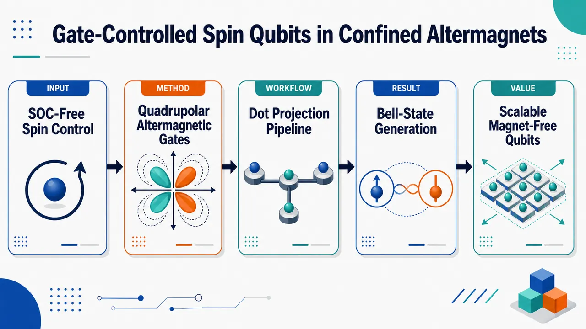
研究问题在没有自旋轨道耦合、微磁体梯度和净磁矩的条件下，二维 d-wave 交错磁体中的动量依赖自旋劈裂，能否被椭圆量子点限制势投影到离散束缚态中，形成可电栅控制的自旋量子比特，并进一步实现双比特纠缠。创新方法用椭圆形静电势在二维 d-wave 交错磁体中定义量子点，让量子点对 x/y 动量方向的不对称采样把 d-wave 交错磁自旋劈裂转化为低能反向自旋极化双重态；单比特通过偶宇称四极栅驱动 Q=x²−y² 调制量子点形状各向异性，而不是移动点中心，从而在无 SOC 下驱动自旋旋转；双比特通过中央势垒调制非局域 Pauli 耦合生成 Bell-like 态。工作流程输入二维方形晶格 d-wave 交错磁紧束缚模型、交错交换场、面内 Bx 和椭圆谐振子栅势；先对单量子点对角化，筛选微波量级低能双重态与 meV 级泄漏间隙；再施加相位可控四极 RF 栅，模拟 Xπ/2 与 Xπ 单比特旋转；随后构建双量子点势阱加中央高斯势垒，用截断组态相互作用处理两电子库仑作用；最后投影到局域 |00⟩、|01⟩、|10⟩、|11⟩ 逻辑基，分解有效 Pauli 哈密顿量，并用势垒共振调制输出 Bell-like 纠缠态。关键结果椭圆限制产生相反自旋极化的孤立低能双重态：代表点 δ=0.3 时量子比特能隙约 39 μeV，泄漏能隙约 6.4 meV；单比特在 fq=8.3 GHz 下实现 Xπ 转移，P1=0.9938，泄漏 Pleak=0.0043；双量子点中四态逻辑流形最小产品态重叠 0.98，泄漏能隙 3.6 meV，非局域 Pauli 块范数 0.22 μeV；势垒驱动在 9.83351 ns 生成接近 Bell 态，P01=0.499，P10=0.496，Clog=0.9999，FBell=0.996。应用价值提供一种全栅控自旋量子比特新路线：不需要 SOC 材料、微磁体阵列或铁磁净磁矩，潜在减少杂散场串扰和材料限制；可与栅定义量子点架构结合，用量子点形状栅实现单比特控制，用中央势垒栅实现双比特纠缠，为交错磁体材料进入可扩展量子计算器件提供理论蓝图。第一部分：核心概览
该研究提出一种无需自旋轨道耦合、无需微磁体梯度、无需净磁矩的栅控自旋量子比特方案：在二维 d-wave 交错磁体（altermagnet）中用椭圆形静电势定义量子点，使动量依赖的交错磁自旋劈裂投影到离散束缚态谱，形成低能、反向自旋极化双重态。单量子点中，四极栅驱动可实现低泄漏的 (Xπ/₂)、(Xπ) 旋转；双量子点中，组态相互作用计算显示有效逻辑哈密顿量存在非零非局域 Pauli 块，并可通过势垒调制生成 Bell-like 态。其学术地位在于把交错磁体自旋分裂引入栅定义量子点量子计算，提供区别于传统 EDSR、SOC 与微磁体方案的新控制机制。
---
第二部分：结构化快速回顾
《Gate-Controlled Spin Qubits in Confined Altermagnets》（None，）
背景
传统栅定义自旋量子比特依赖微磁体场梯度或自旋轨道辅助驱动，会引入杂散场、材料约束和核自旋噪声。交错磁体具有补偿共线磁序、零净磁矩，却允许动量依赖自旋劈裂，为无 SOC 的自旋控制提供新路径。
方法
使用二维 d-wave altermagnet 的最小紧束缚模型，在方形原子晶格上加入交错交换场、椭圆谐振子势、面内磁场 (Bₓ)，无 SOC。单量子点通过四极形变驱动；双量子点通过截断 CI 方法处理两电子库仑相互作用，并投影到局域逻辑基。
结果
椭圆限制产生低能双重态，代表点 (δ=0.3) 时 (E₁₋E₀simeq39,μeV)，泄漏能隙约 (6.4,meV)。单比特驱动在 (f_q=8.3,GHz) 下实现 (X_π) 转移，(P₁₌₀.9938)、泄漏 (Pₘ̊ ₗₑₐₖ=0.0043)。双比特在 (t=9.83351,ns) 达到 (P₀₁=0.499)、(P₁₀=0.496)、(Cₘ̊ ₗₒg=0.9999)、(Fₘ̊ Bₑₗₗ=0.996)。
讨论
关键机制不是移动量子点中心，也不是 SOC 场中的电偶极自旋共振，而是四极门调制限制各向异性，进而调制被限制势投影后的 d-wave 交错磁有效场。面内 (Bₓ) 只提供横向混合。
局限
所有结果来自模型计算；材料参数、真实三维栅电势、屏蔽、噪声、保真度、器件优化尚未完成。双电子计算使用截断 CI 基，需进一步收敛和实验材料验证。
结论
椭圆限制交错磁量子点可构成局域栅控自旋量子比特平台，具备单比特任意控制与双比特纠缠动力学的核心要素，并且不依赖 SOC、微磁体或净磁矩。
---
第三部分：逐章节冷凝解析
Abstract
Gate-defined altermagnetic quantum dots create spin qubits
核心提案是用静电势在交错磁体量子点中定义自旋量子比特，且限制势为椭圆形。摘要直接给出机制：*"We propose gate-defined spin qubits in electrostatically confined altermagnetic quantum dots."* 椭圆限制把 d-wave altermagnetic structure 转换为低能双重态：*"Elliptical confinement of the d-wave altermagnetic structure produces a low-energy doublet with opposite spin polarization."*
Microwave qubit gap coexists with meV leakage gap
参数区间内，逻辑态能隙处于微波频段，而非计算态泄漏能隙保持在 meV 量级：*"For the range of parameters used here, the qubit states energy gap lies in the microwave range while the leakage gap remains in the meV range."* 这意味着可用 GHz 量级电驱动寻址逻辑双重态，同时较大泄漏能隙抑制跃迁到高能态。
SOC-free quadrupolar gate drive implements coherent rotations
单量子比特控制不需要 spin-orbit coupling。时间依赖模拟显示，相位可控四极门驱动可实现 (Xπ/₂) 与 (X_π)：*"Even without spin-orbit coupling, time-dependent simulations show that a phase-controlled quadrupolar gate drive about a fixed bias point implements (Xπ/₂) and (Xπ) rotations by resonantly modulating the confinement anisotropy."*
Double-dot CI projection yields entangling two-qubit dynamics
双量子点中，谱可投影到孤立量子点乘积态，并形成非零非局域 Pauli 块：*"We show that the double quantum dot spectrum can be cleanly projected onto isolated quantum dot product states with a nonzero nonlocal Pauli block in the effective logical two-qubit Hamiltonian."* 中央势垒调制可把逻辑双比特分量驱动到接近最大纠缠态：*"Resonant central-barrier modulation then drives the logical two-qubit component close to a maximally entangled state."*
---
Introduction
Gate-defined spin qubits form a mature semiconductor platform
栅定义自旋量子比特成熟的原因在于静电栅可同时定义限制势、调节隧穿耦合、控制读出条件：*"Gate-defined spin qubits are a mature solid-state platform because electrostatic gates can define the confinement potential, tune tunnel couplings, and control readout conditions in semiconductor nanostructures."* 传统工具箱包括 GaAs 中的单次电读出、交换控制、单三重态控制、磁共振自旋旋转与电驱自旋共振：*"single-shot electrical spin readout, coherent exchange and singlet-triplet control, magnetic-resonance spin rotations, and electrically driven spin resonance in GaAs quantum dots."*
Si, donor, Ge, and processor-level platforms define the state of the art
硅和 donor 器件提供长相干宿主、高保真可寻址控制和双比特逻辑：*"Silicon and donor devices then supplied long-coherence hosts compatible with isotopic purification, high-fidelity addressable control, and two-qubit logic."* 近年进展已到处理器级，包括 Si/Ge 平台中的高保真双比特门、六比特控制、锗空穴自旋处理器和 foundry-compatible 单元：*"spin qubits have advanced from few-qubit demonstrations to processor-level operation in Si and Ge platforms."*
Conventional control relies on micromagnets or SOC
大多数实现中，栅控自旋操纵依赖微磁体梯度或 SOC 辅助驱动：*"In most implementations the spin qubit gating is performed by a micromagnet field gradient, or spin-orbit-assisted driving."* 这些方法虽有效，但带来器件和材料约束，包括微磁体杂散场、GaAs 等核自旋丰富材料中的超精细噪声：*"they also introduce device- and material-specific constraints, such as stray fields from micromagnets and hyperfine noise in nuclear-spin-rich hosts such as GaAs."*
Altermagnets offer compensated magnetism with momentum-dependent spin splitting
交错磁体是共线补偿磁体，没有净磁矩，但晶体对称性允许动量依赖自旋劈裂：*"Altermagnets provide such a route. They are collinear compensated magnets whose crystal symmetries permit momentum-dependent spin splitting."* 其核心吸引力是：既可避免净磁矩，又可在无 SOC 条件下产生可用自旋结构。
The central theoretical question is projection into discrete QD bound states
在量子点中，电子态不是扩展 Bloch 态，而是限制势的离散束缚态：*"In a gate-defined quantum dot, the relevant electronic states are discrete bound states of the confinement potential rather than extended Bloch states labeled by a crystal momentum."* 因此关键问题是 d-wave 动量依赖自旋劈裂如何投影到量子点束缚态谱，以及这些束缚态能否成为逻辑态：*"The central question is therefore how the momentum-dependent d-wave spin splitting appears after the altermagnetic Hamiltonian is projected onto the QD bound-state spectrum, and whether the discrete bound states can be used as qubit logical states."*
Atomistic real-space tight-binding model tests the confined altermagnetic mechanism
研究使用二维 d-wave altermagnet 最小紧束缚模型的原子实空间实现：*"Here we address this question with an atomistic real-space implementation of the minimal tight-binding model for a 2D d-wave altermagnet."* 另用显式非磁位点的微观交错磁模型和简化两带模型复核，定性信号一致：*"The same qualitative signatures appear in those calculations, so the effect is not an artifact of one tight-binding parametrization."*
Device geometry separates single-qubit and two-qubit control modes
单比特器件由椭圆门定义单个交错磁点，双比特器件由两个局域各向异性门加中央可调势垒定义双点：*"an elliptical gate defines a single altermagnetic dot for one-qubit operation, while a pair of such gates plus a tunable barrier defines a double dot for two-qubit operation."* 椭圆限制代表非圆形栅定义量子点，电静态门可重塑单粒子谱、自旋结构和各向异性响应：*"electrostatic gates routinely reshape single-particle spectra, spin structure, and anisotropic response."*
Phase-controlled quadrupolar drive plus virtual Z gives arbitrary single-qubit control
相位可控共振四极门驱动提供单比特控制，载波相位设定赤道旋转轴，校准脉冲给出 (Xπ/₂)、(X_π) 和相位偏移的 (Y) 轴旋转：*"the carrier phase sets the equatorial rotation axis, so calibrated pulses give (Xπ/₂), (Xπ), and phase-shifted (Y)-axis rotations."* 加上虚拟 (Z) 旋转即可实现任意单比特控制：*"Combined with virtual (Z) rotations implemented as phase-frame updates of subsequent pulses, these operations provide arbitrary single-qubit control."*
Two-electron CI plus barrier modulation supplies an entangling ingredient
双电子 CI 计算显示，中央势垒共振调制能在局域双比特基中生成 Bell-like 态且低泄漏：*"The two-electron configuration-interaction (CI) calculation then uses resonant barrier modulation to generate a Bell-like state in the localized two-qubit basis with low leakage."* 因而在模型范围内，相位可控单比特旋转与纠缠双比特动力学构成通用门量子计算所需要素：*"the phase-controlled single-qubit rotations and entangling two-qubit dynamics give the ingredients required for universal gate-based quantum computation."*
---
Hamiltonian and QD setup
Square atomistic lattice with checkerboard magnetic sublattices
模拟在方形原子晶格上进行，晶格常数 (a)，开放边界；每个格点为一个原子位点，两磁子晶格通过棋盘标签区分：*"The simulations are performed on a square atomistic lattice with spacing (a) and open boundaries."* 子晶格标签为 (ηᵢ₌₊₁) 或 (-1)：*"the two magnetic sublattices are separated in real space by the checkerboard label (ηᵢ₌₊₁ (-1)) for A (B) sublattices."*
One-electron Hamiltonian contains hopping, exchange, Zeeman, and gate potential
单电子哈密顿量分解为
[
Hₘ̊ ₁ₑ=Hₘ̊ ₕₒₚ+Hₘ̊ ₑₓ+H_Z+H_V .
]
原文给出：*"The one-electron Hamiltonian is (H₁ₑ=Hₕₒₚ+Hₑₓ+HZ+HV)."* 产生算符 (cᵢₛ^dagger) 创建位点 (i)、自旋 (s=p̆arrow,downarrow) 的电子：*"The operator (cᵢₛdagger) creates an electron with spin (s=p̆arrow,downarrow) on atom (i)."*
Altermagnetic d-wave splitting arises from sublattice-odd anisotropic hopping
紧束缚项包括最近邻 (Δₐb)、对角次近邻 (t₁)、同子晶格 (x/y) 方向二格 hopping (t₂±ηᵢ tAM)。关键是 (ηᵢ tAM) 在两子晶格上符号相反，并在 (x,y) 方向各向异性相反：*"The (ηᵢ tAM) term gives opposite anisotropic same-sublattice hopping on the two sublattices and is the atomistic origin of the d-wave altermagnetic spin-splitting."*
Local staggered exchange fixes the altermagnetic spin axis
交错交换场为
[
Hₘ̊ ₑₓ=fracJ2sumᵢηᵢ cᵢ^dagger(mathbf Lḑotboldsymbolσ)cᵢ .
]
交错磁轴默认沿 (z)：*"where (L) is the altermagnetic spin axis, taken along (hatz) unless stated otherwise."* 该项使 A/B 子晶格具有相反局域交换场。
SOC is deliberately excluded from the main Hamiltonian
主文哈密顿量不包含 SOC：*"No spin-orbit coupling is included in the main-text Hamiltonian."* 设计目的在于孤立出限制势投影交错磁机制，仅保留面内磁场 (Bₓ) 作为显式自旋混合扰动：*"This SOC-free model isolates the confinement-projected altermagnetic mechanism and leaves (Bₓ) as the only explicit spin-mixing perturbation."*
---
Single-dot confinement
Elliptical harmonic confinement defines the single quantum dot
单量子点势能为二维椭圆谐振子：
[
V(mathbf r)=frac12m^astømegaₓ²x²⁺frac12m^astømega_y²y² .
]
原文表述为：*"For a single QD we use ... (V(r)=frac12mastømegaₓ²x²+frac12mastømegay²y²)."* 限制强度由 (hbarømegaₓ,hbarømega_y) 控制：*"where the confinement is set by the energy scales (hbarømegaₓ) and (hbarømega_y)."*
Ellipticity parameter measures x-y anisotropy
椭圆率定义为
[
δ=frac(hbarømega_y)²⁻⁽hbarømegaₓ₎²(hbarømega_y)²⁺⁽hbarømegaₓ₎².
]
物理含义是量子点区分 (x) 与 (y) 方向的强弱：*"Thus (δ) controls how strongly the dot distinguishes the (x) and (y) directions."* 扫描 (δ) 时，均方根限制能量固定：*"the root-mean-square confinement energy ... is held fixed unless stated otherwise."*
Continuum harmonic estimate explains why ellipticity creates projected altermagnetic splitting
将 d-wave operator 投影到各向异性谐振子包络态 (|nₓ,n_yångle)，得到
[
łangle k_y²⁻kₓ²ångleₙ_ₓₙ_ypropto
(n_y+tfrac12)ømega_y-(nₓ₊tfrac12)ømegaₓ .
]
原文强调该式只作解析指导：*"Equation (3) is used only as an analytical guide; all spectra shown below are obtained from the full finite-lattice Hamiltonian."* 该估计解释圆点中 (x,y) 等权采样导致劈裂弱，而椭圆点产生有限投影劈裂：*"This estimate explains why a circular dot samples the two directions equally, whereas an elliptical dot produces a finite projected altermagnetic splitting."*
Representative single-dot parameters produce microwave gap and large leakage gap
图 2 参数包括 (a=0.5,nm)、(L=20,nm)、(J=10,meV)、(Δₐb=8,meV)、(Bₓ₌₀.3,T)、无 SOC；hopping 为 (t₁₌₋₁₅₀,meV)、(t₂₌₀)、(tAM=20,meV)、(μ=0)。代表点 (δ=0.3) 下，(hbarømegaₓ₌₂.6,meV)、(hbarømega_y=3.6,meV)、(E₁₋E₀simeq39,μeV)、泄漏能隙约 (6.4,meV)：*"At the representative point (δ=0.3), (hbarømegaₓ₌₂.6,meV), (hbarømega_y=3.6,meV), (E₁₋E₀simeq39,μeV), and the leakage gap is about (6.4,meV)."*
---
Single-qubit regime
Atomistic model supports an isolated opposite-spin low-energy doublet
图 2 显示原子实空间模型支持低能双重态，两个态具有相反自旋极化：*"Fig. 2 shows that the atomistic real-space model supports an isolated low-energy doublet with opposite spin polarization."* 量子比特劈裂 (E₁₋E₀) 在椭圆率扫描区间保持微波量级，而到高能级的间隔更大：*"The splitting (E₁₋E₀) remains in the microwave range over the plotted ellipticity interval, while the separation to higher levels is much larger."*
Qubit gap and leakage gap are spectrally separated
工作区间将逻辑能隙和泄漏能隙分开：*"The operating regime therefore separates the qubit gap from the leakage gap."* 这对应量子控制中的两个要求：逻辑跃迁可被 GHz 驱动选择性激发，高能泄漏通道因 meV 级能隙而受抑制。
Spin polarization reverses when ellipticity changes sign
图 2(c) 中自旋极化随 (δ) 变号可由投影公式解释：*"The sign change of the polarization in Fig. 2(c) follows from Eq. (3)."* 反转 (δ) 等价于交换 (x,y) 方向的限制各向异性：*"Reversing (δ) reverses the confinement anisotropy between the (x) and (y) directions."* 因为交错磁 hopping 各向异性是子晶格奇的，最低态偏好的自旋-子晶格组合随之改变：*"Because the altermagnetic hopping anisotropy is sublattice odd, this reversal changes which spin-sublattice combination is favored in the lowest state."*
Operating map includes spin-polarization criteria, not only gap size
图 2(d) 是工作图而非单纯能隙图：*"Fig. 2(d) is an operating map rather than a gap map alone."* 白色轮廓要求最低两态既有非零劈裂，又具有相反自旋极化，并满足
[
min(|łangleσ_zångle₀|,|łangleσ_zångle₁|)ge0.6 .
]
原文说明：*"The white contour requires both a nonzero qubit splitting and opposite spin polarization of the two lowest states."* 接近圆形点时投影 d-wave 场弱，即使谱数值上存在，也被排除：*"This criterion excludes the nearly circular regime where the projected d-wave field is weak."*
Supplemental parameter sweeps indicate robustness across model choices
补充材料扫描 (J)、(tAM)、(Δₐb) 和可选 Rashba SOC，显示微波量子比特能隙、meV 泄漏能隙与有限四极跃迁矩阵元在较大参数区域内存在：*"the microwave qubit gap, meV-scale leakage gap, and finite quadrupolar transition matrix element persist over a sizable region of model parameters."*
Single-qubit control uses resonant quadrupolar anisotropy modulation
驱动哈密顿量为
[
H(t)=Hₘ̊ ₁ₑ+A_Qo̧s(ømega_qt+φ)Q,quad Q=x²⁻y²,quad ømega_q=(E₁₋E₀₎/hbar .
]
原文表述：*"For one-qubit control we use a small-signal resonant modulation of the quadrupolar confinement anisotropy about a fixed operating point."* (A_Q) 具有能量/面积单位，吸收栅压标定：*"the coefficient (A_Q) has units of energy per area and absorbs the gate-voltage calibration."*
Differential RF gates excite an even-parity quadrupole mode
相对限制门上的差分 RF 电压生成主要偶宇称形状模式：*"A differential radio-frequency (RF) voltage on opposing confinement gates generates this leading even-parity gate-shape mode."* 这不同于电偶极驱动，因为驱动的是 (x²⁻y²) 形状各向异性，而非整体位移。
Drive phase sets equatorial axis and virtual Z gives phase gates
低能描述中，驱动改变投影 d-wave 交错磁场的横向分量：*"In the low-energy description, the drive changes the projected d-wave altermagnetic field in the direction transverse to the dressed qubit axis."* 脉冲面积决定旋转角，载波相位决定赤道旋转轴：*"Pulse area sets the rotation angle, and carrier phase sets the equatorial rotation axis."* 虚拟 (Z_θ) 通过更新后续脉冲相位参考实现：*"A virtual (Zθ) operation can then be represented by updating the accumulated phase reference of all subsequent resonant quadrupolar pulses."*
Static dot geometry remains fixed during pulses
脉冲期间静态量子点几何不变，RF 只提供共振横向分量：*"The static QD geometry is fixed during the pulse. The RF voltage supplies only the resonant transverse component needed to rotate the dressed two-level system."* 这降低了把态强烈推向不同电荷构型的风险。
Time evolution diagnostics define logical populations and leakage
占据概率定义为 (Pₙ₍ₜ₎₌|łangleψₙ|Ψ(t)ångle|²)，泄漏为 (Pₘ̊ ₗₑₐₖ=1-P₀₋P₁)：*"The occupation probabilities in Fig. 3 are defined as (Pₙ₍ₜ₎₌|łangleψₙ|Ψ(t)ångle|²) ... and (Pₗₑₐₖ=1-P₀₋P₁)."* 自旋权重与子晶格权重分别由原子格点分量求和得到：*"The spin weights are (Pₚ̆ₐᵣᵣₒw=sumᵢ|Ψᵢₚ̆ₐᵣᵣₒw|²) and (Pdₒwₙₐᵣᵣₒw=sumᵢ|Ψᵢdₒwₙₐᵣᵣₒw|²)."*
Numerical single-qubit pulses achieve high transfer and low leakage
图 3 使用 (a=0.5,nm)、(L=20,nm)、(J=12,meV)、(Δₐb=8,meV)、(Bₓ₌₀.3,T)、无 SOC、(hbarømegaₓ₌₂,meV)、(hbarømega_y=5,meV)。能隙 (E₁₋E₀₌₃₄,μeV)，频率 (f_q=8.3,GHz)：*" (E₁₋E₀₌₃₄,μeV), and (f_q=8.3,GHz)."* 驱动强度 (A_Q=5.8×10⁻⁵,mathrmeV,nm⁻²)，矩阵元约 (2,μeV)：*"giving (|łangle1|A_QQ|0ångle|simeq2,μeV)."* (Xπ/₂) 与 (X_π) 分别持续 4 和 8 个载波周期：*"The (Xπ/₂) and (X_π) pulses last four and eight carrier cycles, respectively."* 最终 (X_π) 转移给出 (P₁₌₀.9938)、(P₀₌₀.0018)、(Pₘ̊ ₗₑₐₖ=0.0043)：*"The final (X_π) transfer gives (P₁₌₀.9938), (P₀₌₀.0018), and (Pₘ̊ ₗₑₐₖ=0.0043)."*
Driven operation is not a simple charge excitation
自旋权重与子晶格权重显示驱动不是简单激发到另一个限制电荷态：*"the driven operation is not simply an excitation to a different confined charge state."* 机制链条是：门调制限制各向异性，交错磁项把该调制转换为自旋-子晶格偏置，(Bₓ) 提供相干旋转所需横向混合：*"the gate modulates the confinement anisotropy, the altermagnetic term converts that modulation into a spin-sublattice bias, and (Bₓ) supplies the transverse mixing needed for coherent rotations."*
Mechanism is distinct from electric-dipole spin resonance
该方案明确不同于传统 EDSR：*"This mechanism is distinct from conventional electric-dipole spin resonance."* 门驱动不依赖在 SOC 场中移动点中心：*"The gate does not rely on displacing the dot center in a spin-orbit field."* 相反，它驱动偶宇称四极形状模式并调制投影 d-wave 交错磁场：*"It drives the even-parity quadrupolar shape mode of the dot and modulates the projected d-wave altermagnetic field itself."* 因而即使移除 SOC，相干旋转仍存在：*"coherent rotations therefore survive when SOC is removed."*
---
Two-qubit configuration
Double-dot potential combines two parabolic wells and a Gaussian barrier
两电子计算使用相同原子实空间紧束缚模型，但限制势为双量子点：*"For the two-electron calculation, we use the same atomistic real-space tight-binding model in a double-dot potential."* 势能由两个局域抛物势阱和中央高斯势垒构成：*"The electrostatic confinement is represented by two local parabolic wells plus a central Gaussian barrier."*
Local controls are dot shape, detuning, and interdot coupling
左、右点势包含 (VₓL,R,V_yL,R)、点间距 (d)、失谐 (ϵ)。双阱底用 smooth minimum 表示，中央势垒为 (V_bexp[-(x/wₓ₎²⁻⁽y/w_y)²])。该参数化使三个控制量明确：*"This compact parametrization leaves the three controls used below explicit: local dot shape, detuning, and tunable interdot coupling."* 真实器件预测仍需三维栅电势：*"A device-specific prediction would require the full three-dimensional gate electrostatics."*
Two-qubit drive modulates only the central barrier
双比特驱动固定局域势阱和失谐，只调制中央势垒：
[
V_b(t)=V_b⁽⁰⁾+A_bsin(ømegaₐb,cdt).
]
原文说明：*"For the driven two-qubit calculation, the local wells and detuning are held fixed and only the central barrier is modulated."* 该驱动作用于势垒控制的点间耦合，而非单点四极模式：*"The two-qubit drive therefore acts on the barrier-controlled interdot coupling, rather than on the single-dot quadrupolar mode used for one-qubit rotations."* 图 4(d) 转移中 (ab=10)、(cd=01)、(j₁₀=0)、(j₀₁=3)：*"For the Fig. 4(d) transfer, (ab=10), (cd=01), (j₁₀=0), and (j₀₁=3)."*
Truncated CI makes the two-electron atomistic problem tractable
完整两电子 Hilbert 空间过大，因此使用截断 CI：*"The full two-electron Hilbert space on the atomistic grid is too large for parameter sweeps, so we use a truncated CI calculation."* 先对静态双点单电子哈密顿量对角化并保留最低 (M) 个本征态：*"For each static double-dot geometry, we first diagonalize (Hₘ̊ ₁ₑm̊ DD(V_b)) ... and retain the lowest (M) eigenstates."*
CI Hamiltonian includes spinor Coulomb matrix elements
两电子基由保留单电子态的反对称 Slater 行列式构成：*"The two-electron basis consists of antisymmetrized Slater determinants built from these eigenstates."* CI 哈密顿量为单粒子能量加库仑矩阵元：
[
Hₘ̊ CI=sumᵢǎrepsilonᵢ dᵢ^dagger dᵢ₊frac12sumᵢⱼₖₗVᵢⱼ;ₖₗdᵢ^dagger dⱼ^dagger dₗ dₖ .
]
库仑矩阵元通过自旋分量求和的 pair density 保留自旋子结构：*"the Coulomb matrix elements retain the spinor structure through the component-summed pair density on atomistic sites."*
Coulomb interaction is softened and screened in two dimensions
库仑相互作用采用软化、屏蔽二维形式：
[
V_C(mathbf r)=frace²4πϵ₀ϵᵣsqrtr²⁺dₘ̊ ₛₒfₜ²exp(-r/ellₛ₎.
]
原文给出：*"The Coulomb interaction is modeled as a softened screened two-dimensional interaction."* 其中 (dₘ̊ ₛₒfₜ) 是短程软化长度，(ellₛ) 是屏蔽长度：*"Here (dₘ̊ ₛₒfₜ) is the short-distance softening length and (ellₛ) is the screening length."*
Localized logical basis is built from isolated left and right dots
为判断低能 CI 态是否表现为双量子比特，构造孤立左右点参考态：*"To diagnose whether the low-energy CI states behave as two qubits, we construct fixed localized one-electron reference states from isolated left and right dots."* 每个点选择最低负/正 (σ_z) 态作为局域 0 和 1：*"The lowest negative- and positive-(σ_z) states are chosen as the local 0 and 1 states."* 两比特乘积态反对称化为 (|abångleₘ̊ ₗₒc)：*"The corresponding two-qubit product states are antisymmetrized."*
Projected logical Hamiltonian is decomposed into Pauli blocks
正交化的四个局域态构成矩阵 (W)，逻辑哈密顿量为
[
Hₘ̊ ₗₒg=W^dagger Hₘ̊ CIW=sumμ,νhμνσ_L^μøtimesσ_R^ν .
]
原文说明：*"They also define the projected two-qubit Hamiltonian."* 含 (I) 的项为单比特场和能量偏移：*"Terms with (μ=I) or (ν=I) are single-qubit fields and energy offsets."* 真正双比特部分为 (α,β=x,y,z) 的非局域块：*"is the genuine two-qubit part."*
Logical concurrence and Bell fidelity quantify coherent entanglement
动力学中投影到固定局域基，定义 (Pₐb(t)=|łangle ab|Ψ(t)ångle|²)，逻辑泄漏 (Lₘ̊ ₗₒg=1-sumₐbPₐb)：*"For the dynamical panel in Fig. 4, the retained-CI state is projected onto the same fixed basis."* 还计算归一化逻辑分量的 concurrence 与 Bell fidelity：*"We also compute the logical concurrence ((Cₘ̊ ₗₒg)) of the normalized logical component and the Bell fidelity ((Fₘ̊ Bₑₗₗ)) within the (|01ångleₘ̊ ₗₒc,|10ångleₘ̊ ₗₒc) subspace."*
Double-dot numerical parameters define a product-like four-state manifold
图 4 参数包括 (a=0.5,nm)、(L=60,nm)、(din[16,24],nm)，左点 ((hbarømegaₓ,hbarømega_y)=(3.75,5.75),meV)，右点 ((5.75,3.75),meV)，(Vₛ₌₀.2,meV)，((wₓ,w_y)=(8,12),nm)，(ϵ=4,meV)，(V_b⁽⁰⁾=0)，(ϵᵣ₌₂₄.0)，(dₘ̊ ₛₒfₜ=2.5,nm)，(ellₛ₌₄₀,nm)，(J=12,meV)，(Δₐb=12,meV)，(Bₓ₌₀.3,T)，无 SOC，(t₁₌₋₁₅₀,meV)，(tAM=15,meV)。原文完整列出这些条件：*"Parameters: (a=0.5,nm), (L=60,nm), (din[16,nm,24,nm])..."*
Four lowest CI states are isolated and strongly overlap with localized products
在 (d=18.5,nm)、(ϵ=4,meV)、(V_b⁽⁰⁾=0) 的工作点，前四个 dressed CI 态分配为 (|10ångleₘ̊ ₗₒc)、(|00ångleₘ̊ ₗₒc)、(|11ångleₘ̊ ₗₒc)、(|01ångleₘ̊ ₗₒc)，最小产品态重叠为 0.98：*"the first four dressed CI states are assigned to (|10ångleₘ̊ ₗₒc), (|00ångleₘ̊ ₗₒc), (|11ångleₘ̊ ₗₒc), and (|01ångleₘ̊ ₗₒc) with a minimum assigned product overlap of 0.98."* 泄漏能隙 (E₄₋E₃₌₃.6,meV)：*"the leakage gap (E₄₋E₃) is (3.6,meV)."* 因而形成良好隔离且乘积态特征强的局域双比特流形：*"This operating point gives a well-isolated, product-like localized two-qubit manifold."*
Effective Hamiltonian contains a finite nonlocal Pauli block
Pauli 分解显示逻辑哈密顿量不是左右独立单比特项的简单和，而含非零非局域块：*"The Pauli decomposition in Fig. 4(c) shows that the projected Hamiltonian contains a nonzero nonlocal block rather than only independent left- and right-qubit terms."* 工作点处 (|hαβ|=0.22,μeV)，代表系数为 (hXZ=0.07,μeV)、(hYX=-0.08,μeV)、(hZY=0.12,μeV)、(hZZ=-0.04,μeV)：*"At the operating point, (|hαβ|=0.22,μeV), with representative static coefficients (hXZ=0.07,μeV), (hYX=-0.08,μeV), (hZY=0.12,μeV), and (hZZ=-0.04,μeV)."*
Nonlocal coupling persists across detuning and decays with separation
失谐 (ϵ=0,2,4,6,meV) 下非局域块保持有限，并在选定间距附近变化较弱：*"The detuning comparison shows that this nonlocal block remains finite for (ϵ=0,2,4,6,meV) and changes only weakly near the chosen separation."* 随点距增大，该块快速减小：*"while it decreases rapidly as the dots are pulled farther apart."*
Barrier modulation generates Bell-like entanglement with low leakage
势垒驱动幅度 (0.5,meV)，频率 (ømega₁₀,₀₁)，总时长 (19.72,ns)，包含 561 个载波周期：*"The barrier drive has amplitude (0.5,meV), frequency (ømega₁₀,₀₁), and duration (19.72,ns) over 561 carrier cycles."* Bell 点 (t=9.83351,ns) 时，(P₀₁=0.499)、(P₁₀=0.496)、(Cₘ̊ ₗₒg=0.9999)、(Fₘ̊ Bₑₗₗ=0.996)、(Lₘ̊ ₗₒg=4.0×10⁻³)：*"At the Bell point (t=9.83351,ns), (P₀₁=0.499), (P₁₀=0.496), (Cₘ̊ ₗₒg=0.9999), (Fₘ̊ Bₑₗₗ=0.996), and (Lₘ̊ ₗₒg=4.0×10⁻³)."*
Dynamics indicate coherent superposition rather than classical population transfer
图 4(d) 用 (Cₘ̊ ₗₒg) 和 (Fₘ̊ Bₑₗₗ) 区分相干纠缠与经典标签交换：*"Fig. 4(d) checks whether the driven motion is coherent two-qubit evolution rather than a transfer of population between two classical labels."* 半转移点处 (|01ångleₘ̊ ₗₒc) 与 (|10ångleₘ̊ ₗₒc) 几乎等占据，并有接近 1 的 concurrence 与 0.996 的 Bell fidelity：*"These diagnostics identify a coherent Bell-like superposition of (|01ångleₘ̊ ₗₒc) and (|10ångleₘ̊ ₗₒc), not an incoherent mixture of classical 0-1 bit states."* 后续转移最大时 (P₀₁=0.992)、(Lₘ̊ ₗₒg=3.9×10⁻³)，最终 dressed-CI 目标态占据 0.997、CI 流形泄漏 (9.9×10⁻⁶)：*"At the later transfer maximum, (P₀₁=0.992) with (Lₘ̊ ₗₒg=3.9×10⁻³), and the final dressed-CI target population is 0.997 with CI-manifold leakage (9.9×10⁻⁶)."*
---
Material considerations
Material requirements differ between proximity and standalone designs
近邻设计中，交错磁体只需给独立清洁通道提供 d-wave 自旋劈裂，因此交错磁体本身可为金属：*"In a proximity design, the altermagnet supplies a d-wave spin splitting to a separate clean channel, so the altermagnet itself may be metallic."* 独立设计中，交错磁体还要承载受限电子，因此应为半导体或绝缘体：*"In a standalone design, the altermagnet must also host the confined electron and should therefore be semiconducting or insulating."*
Zero-nuclear-spin isotope abundance is desirable
无论设计类型，高丰度零核自旋同位素都有利，因为可降低宿主区域超精细噪声：*"In both cases, a large zero-nuclear-spin isotope abundance is desirable because it reduces hyperfine noise in the host region."* 这与硅量子比特中同位素纯化降低核自旋噪声的逻辑一致。
RuO2 and CaCrO3 are proximity-layer candidates
(RuO₂) 可作为近邻层，金属性可接受，因为量子比特可位于独立绝缘或半导体通道：*"RuO2 could serve as a proximity layer, where metallicity is acceptable because the qubit can reside in a separate insulating or semiconducting channel."* 但其交错磁信号解释仍在讨论中：*"although the interpretation of its altermagnetic signatures remains under active discussion."* (CaCrO₃) 是另一条与钙钛矿交错磁体设计空间相关的近邻路线：*"CaCrO3 provides another possible proximity route connected to the broader perovskite altermagnet design space."*
Fe2Se2O and related monolayers are direct-hosting candidates
对于直接承载受限电子的设计，(Fe₂Se₂O) 及相关 (M₂X₂O) 单层是当前理论候选，具有带隙电子结构和较有利同位素组成：*"For direct hosting of the confined electron, Fe2Se2O and related M2X2O monolayers are current theory candidates with gapped electronic structures and relatively favorable isotope composition."*
Vanadium-based altermagnets are negative examples for hyperfine-limited qubits
钒基交错磁体可为交错磁自旋电子学有用，但若要求零核自旋同位素路线，天然钒不实用：*"When a zero-nuclear-spin isotope route is required, naturally occurring vanadium does not offer a practical spin-zero isotope route."* 因而不应作为超精细噪声受限量子比特平台的优先目标：*"they are not the first targets for a hyperfine-limited qubit platform."*
---
Conclusion
Elliptically confined altermagnetic QDs form the proposed platform
结论明确提出基于椭圆限制交错磁量子点的栅定义自旋量子比特平台：*"We have proposed a gate-defined spin-qubit platform based on elliptically confined altermagnetic QDs."* 中心机制是将 d-wave 交错磁自旋劈裂投影到离散量子点谱：*"The central mechanism is that confinement projects the d-wave altermagnetic spin splitting into the discrete QD spectrum."* 结果是形成相反自旋极化的低能双重态：*"producing a low-energy doublet with opposite spin polarization."*
Quadrupolar gates realize low-leakage SOC-free single-qubit rotations
相位可控共振四极栅驱动调制投影交错磁场，在无 SOC 条件下生成低泄漏 (Xπ/₂) 与 (X_π) 旋转：*"A phase-controlled resonant quadrupolar gate drive can then modulate this projected altermagnetic field and generate (Xπ/₂) and (Xπ) rotations with low leakage in the absence of SOC."*
Double-dot CI supports a localized two-qubit manifold and Bell-state generation
双电子截断 CI 显示，同一原子哈密顿量在双量子点中支持局域双比特流形：*"For two electrons, the truncated-CI calculation shows that the same atomistic Hamiltonian supports a localized two-qubit manifold in a double QD."* 投影后有效逻辑哈密顿量有非零非局域 Pauli 块，中央势垒调制可驱动逻辑分量到 Bell 态：*"Projecting this manifold onto isolated QD product states gives an effective logical Hamiltonian with a nonzero nonlocal Pauli block, and resonant central-barrier modulation is able to drive the logical component to a Bell state."*
Universal gate ingredients exist within the model
相位可控单比特旋转、虚拟 (Z) 帧更新与纠缠动力学共同提供通用门控所需要素：*"Together with phase-controlled single-qubit rotations and virtual (Z) frame updates, this entangling dynamics provides the ingredients needed for universal gate-based control within the model."*
The operations avoid SOC, micromagnets, and net magnetic moment
该操作不依赖 SOC、微磁体梯度或净磁矩：*"The proposed operations therefore do not rely on SOC, micromagnet gradients, or a net magnetic moment."* 这是相对于传统栅定义自旋量子比特路线最关键的差异。
Next steps require realistic materials and device modeling
后续工作需要第一性原理参数提取、真实屏蔽和栅建模、噪声模拟、保真度估计、局域双比特流形优化：*"The next step is to combine first-principles parameter extraction with realistic screening and gate modeling, noise simulations, fidelity estimation, and optimization of the localized two-qubit manifold within the atomistic tight-binding framework."*
---
Acknowledgments
Funding sources
研究经费来自美国能源部基础能源科学办公室与 NSF/EPSCoR EQUATE 项目：*"This work was supported by the U.S. Department of Energy, Office of Science, Basic Energy Sciences, under Award No. DE-SC0021019 and the National Science Foundation/EPSCoR RII Track-1: Emergent Quantum Materials and Technologies (EQUATE), Award OIA-2044049."*
---
第四部分：深度理解与语言支持
1. 术语解析
#### Altermagnet
Altermagnet 指一种共线补偿磁体：磁矩总体抵消、无净磁矩，但由于晶体对称性，能带出现动量依赖自旋劈裂。它不同于普通反铁磁体，因为普通反铁磁体常因联合对称性保持自旋简并；也不同于铁磁体，因为铁磁体有净磁化。该文语境中的关键句是 *"collinear compensated magnets whose crystal symmetries permit momentum-dependent spin splitting."*
#### d-wave spin splitting
d-wave spin splitting 表示自旋劈裂在动量空间具有类似 (k_y²⁻kₓ²) 的角向结构，沿不同晶向符号和大小不同。这里不是超导 d-wave pairing，而是交错磁自旋劈裂的动量结构。投影公式 (łangle k_y²⁻kₓ²ångle) 说明椭圆量子点会“不均匀采样” (x,y) 动量方向，从而把 Bloch 态中的 d-wave 劈裂转化为束缚态能级劈裂。
#### Confinement-projected altermagnetic mechanism
Confinement-projected 的含义是：原本定义在动量空间或晶体能带中的交错磁自旋劈裂，被量子点限制势的离散波函数“平均”或“投影”成有效两能级哈密顿量中的自旋相关项。该机制不是外加磁场直接劈裂，也不是 SOC 诱导，而是限制势与交错磁 hopping 共同产生的有效场。
#### Quadrupolar gate drive
Quadrupolar gate drive 是偶宇称形状驱动，数学形式为 (Q=x²⁻y²)。它改变点的椭圆形状，而不主要移动点中心。与电偶极驱动 (x) 或 (y) 不同，四极驱动改变的是 (x) 与 (y) 方向限制强度差，因此特别适合调制 d-wave 结构。
#### Nonlocal Pauli block
Nonlocal Pauli block 指有效双比特哈密顿量中 (σ_L^αøtimesσ_R^β)、(α,β=x,y,z) 的项。它不同于 (σ_L^αøtimes I) 或 (Iøtimesσ_R^β) 的单比特场；非局域块是产生纠缠门的核心。这里 (|hαβ|=0.22,μeV)，说明双比特间确有可用于纠缠的有效耦合。
---
2. 疑难查证
#### 为什么没有 SOC 也能电控自旋？
传统直觉中，电场只耦合电荷，不直接翻转自旋；要电控自旋通常需要 SOC 或微磁体梯度，把电荷运动转化成自旋有效场变化。这里的替代路径是：
- 交错磁体内部已有自旋相关能带结构；
- d-wave 劈裂依赖 (k_y²⁻kₓ²)；
- 椭圆量子点的束缚态在 (x,y) 方向动量分布不同；
- 因此，改变椭圆各向异性就改变束缚态感受到的有效交错磁场；
- RF 四极门周期性改变该有效场；
- (Bₓ) 提供横向混合，使两个近似自旋极化态之间可发生 Rabi 振荡。
所以电场不是直接“翻转自旋”，而是调制一个由交错磁 d-wave 结构投影得到的自旋相关有效场。
#### 为什么圆形点不理想？
圆形点中 (x,y) 对称，基态对 (kₓ²) 与 (k_y²) 的采样相同，因此 (łangle k_y²⁻kₓ²ångle) 近似抵消。d-wave 交错磁劈裂投影后变弱，逻辑双重态的自旋区分和可控性下降。椭圆点打破 (x/y) 等价性，使投影 d-wave 场非零。
#### 为什么双比特 Bell 态不能只看 (P₀₁=P₁₀)？
若只看到 (P₀₁approx P₁₀approx0.5)，可能是相干叠加 ((|01ångle+eⁱφ|10ångle)/sqrt2)，也可能是经典混合态：50% 概率在 (|01ångle)，50% 概率在 (|10ångle)。两者物理意义完全不同。这里使用 (Cₘ̊ ₗₒg=0.9999) 和 (Fₘ̊ Bₑₗₗ=0.996) 证明存在相干相位关系，接近 Bell 态，而不是经典概率混合。
---
第五部分：创新评估与关联
1. 创新性判断
#### 从 Bloch-band altermagnetism 转向 confined-dot qubits
过去 2–5 年交错磁体研究主要集中在能带自旋劈裂、输运、Josephson 结、超导二极管效应、混合器件等方向。该研究的新颖点在于把交错磁体的 momentum-dependent spin splitting 投影到栅定义量子点离散谱，提出可操作的量子比特逻辑态。这解决了一个此前未充分回答的问题：交错磁体能带中的动量依赖自旋劈裂在无良好晶体动量的限制态中是否仍有可用量子信息功能。
#### 提出 SOC-free electric spin control
传统电控自旋量子比特通常需要 SOC、微磁体梯度或磁共振。该方案展示一种不同机制：通过四极门调制椭圆限制势，从而调制投影交错磁有效场。创新性在于电场控制的是量子点形状各向异性，不是点中心位移，也不是 SOC 辅助偶极驱动。
#### 把 altermagnetic anisotropy 与 gate-defined architecture 结合
栅定义量子点技术已经成熟，但材料平台通常是 Si、Ge、GaAs 等。交错磁体则是新兴自旋电子学材料。该方案把两者结合：用标准量子点栅控语言定义限制势、隧穿势垒、失谐和 RF 驱动，同时利用交错磁体零净磁矩、动量依赖自旋劈裂的特殊性。
#### 提供从单比特到双比特的完整模型链条
许多概念性量子比特提案只展示单比特能级或单态操控。该研究进一步给出双量子点 CI 计算、局域乘积态投影、非局域 Pauli 块、势垒调制 Bell 态生成。尤其是 (Fₘ̊ Bₑₗₗ=0.996)、(Cₘ̊ ₗₒg=0.9999)、(Lₘ̊ ₗₒg=4.0×10⁻³) 的数值结果，构成从单比特旋转到纠缠动力学的闭环论证。
#### 避免净磁矩带来的器件串扰风险
交错磁体无净磁矩，但保留自旋劈裂，可减少铁磁元件杂散场导致的串扰问题。相较微磁体方案，这对大规模阵列潜在有利；相较强 SOC 材料，又可能降低某些自旋弛豫通道。不过这仍需噪声与保真度模拟验证。
#### 仍处于理论模型阶段，距离实验实现有关键缺口
创新性强，但证据目前为紧束缚与 CI 数值模拟。尚未完成：真实材料第一性原理参数、界面近邻效应强度、栅电势三维建模、无序与电荷噪声、核自旋噪声、声子弛豫、驱动串扰、实际门保真度。材料候选也仍开放，尤其 standalone 方案需要兼具带隙、低核自旋噪声、可栅控、高质量界面的交错磁体。
-
13
📊 含图深析
📄 摘要：在范德华反铁磁薄膜中实验展示 180° Néel 矢量反转的电输运读出方法。反铁磁 Néel 矢量具有抗扰动与超快动力学优势，但薄膜器件中直接电读出仍缺失；该工作给出检测反转的输运方案，面向反铁磁存储和磁振子器件。
💡 亮点：范德华反铁磁中 180° Néel 矢量反转可通过电输运读出。该能力是反铁磁薄膜存储单元从写入走向可寻址读出的核心环节。
📖 展开分析 + 配图
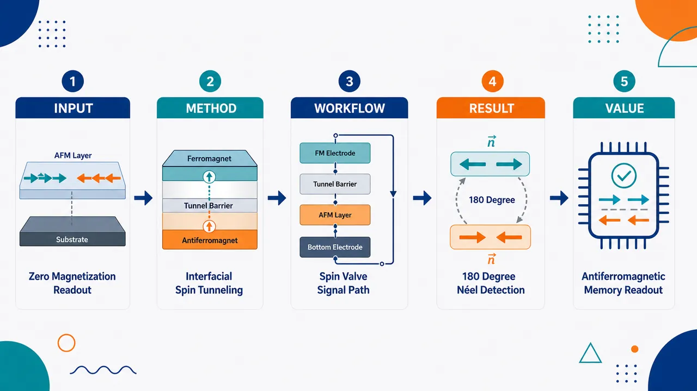
研究问题如何在净磁化完全抵消的原子级薄范德华反铁磁体中，用电学信号可靠区分 Néel 矢量取向，尤其读出两个等价但相反的 180° 翻转态。创新方法构建“自旋极化参考层—隧穿势垒—CrSBr A 型反铁磁层”异质结构，把参考层磁化方向作为自旋分析器，让隧穿磁阻直接感知 CrSBr 界面子晶格磁化；Aha 点是读出界面层方向而非总磁化，因此偶数层净磁化为零时仍能产生可测电阻差。工作流程输入为具有 Néel 矢量取向的薄层 CrSBr；电子从自旋极化参考电极穿过隧穿势垒；隧穿概率由参考电极磁化与 CrSBr 界面子晶格磁化的平行或反平行关系决定；Néel 矢量翻转导致界面子晶格同步翻转；最终输出高/低隧穿磁阻信号，对应不同 Néel 态。关键结果在原子级薄 vdW A 型反铁磁 CrSBr 中实现了基于输运的 Néel 矢量取向检测；即使在偶数层 CrSBr 中相邻磁性层完全补偿、总体净磁化为零，观测到的磁阻仍可揭示 180° Néel 矢量反转。应用价值为反铁磁存储器提供关键的电学读出路径，把传统上“磁学不可见”的补偿反铁磁序参量转化为可测电阻信号；该自旋极化层/隧穿势垒/范德华反铁磁层的模块化结构有望推广到范德华自旋电子器件和低扰动高速存储单元。第一部分：核心概览 (Overview)
该研究提出一种面向范德华反铁磁体 CrSBr 的电输运读出方案，通过将 A 型反铁磁薄层 与 自旋极化参考层 隧穿耦合，使隧穿磁阻对界面子晶格磁化方向敏感，从而实现 Néel 矢量取向及其 180° 翻转的电学检测。核心价值在于突破偶数层反铁磁体净磁化为零时难以电读出的瓶颈，为反铁磁存储与范德华自旋电子器件提供可推广策略。
---
第二部分：结构化快速回顾
《Enabling Electrical Readout of Néel vector reversal in a van der Waals Antiferromagnet》（None，）
背景
反铁磁体具备抗外场扰动、动力学快等优势，Néel 矢量可作为下一代自旋电子学与磁振子器件的信息载体。关键瓶颈在于：薄膜反铁磁体中 180° Néel 矢量翻转的可靠电学读出仍未实现，尤其在净磁化严格抵消的偶数层体系中更困难。
方法
利用 CrSBr 的自旋依赖电子能带性质，将其与一个 自旋极化层耦合，中间引入 隧穿势垒。该结构使 隧穿磁阻取决于参考电极磁化方向与反铁磁层界面子晶格磁化方向之间的相对取向。
结果
在原子级薄 vdW A 型反铁磁 CrSBr 中实现了基于输运的 Néel 矢量取向检测。更重要的是，该磁阻信号能够揭示偶数层 CrSBr 中 180° Néel 矢量反转，即使相邻磁性层完全补偿、整体净磁化为零。
讨论
该方案将反铁磁体内部不可直接由净磁化表征的序参量，转换为可由 自旋依赖隧穿磁阻读取的界面信号。读出机制依赖界面子晶格磁化而非总体磁化，因此适用于补偿型反铁磁薄层。
局限
可用材料未给出器件结构尺寸、层数序列、隧穿势垒材料、温度范围、磁阻幅值、统计样本量、重复性、开关电流或外场阈值等细节。无法判断信号强度、器件一致性、工作温度与可扩展工艺兼容性。
结论
通过自旋极化参考电极与隧穿势垒构建的输运读出方案，可在范德华反铁磁体中电学识别 Néel 矢量取向及 180° 反转，为反铁磁存储器件中的读出问题提供了直接路线。
---
第三部分：逐章节冷凝解析 (Section-by-Section Condensing)
Abstract
- Néel vector is positioned as a device-relevant antiferromagnetic order parameter
Néel 矢量被定义为反铁磁体中具有应用潜力的核心序参量，其优势来自两方面：对外界扰动的鲁棒性，以及反铁磁内禀超快动力学。直接表述为：*"Owing to its robustness against external perturbations and intrinsically ultrafast dynamics, the Néel vector in antiferromagnets (AFMs) can enable the development of next-generation spintronic and magnonic devices for memory and computing applications."* 这里的应用场景覆盖 spintronic devices、magnonic devices、memory 与 computing applications，说明目标不只是基础探测，而是面向器件读写架构。
- Electrical readout of 180-degree Néel vector reversal is identified as the missing requirement
反铁磁存储器件的关键需求不是单纯证明反铁磁序存在，而是实现薄膜反铁磁体中 180° Néel 矢量反转的电学读出。核心缺口被明确表述为：*"To realize AFM-based magnetic memory devices, one of the key requirements is to demonstrate electrical readout of 180-degree reversal of Néel vector in thin film AFMs, which remains critically missing."* 这句话界定了该工作的科学问题：反铁磁序参量的两态翻转需要被电学区分，否则无法构成可读出的存储单元。
- A novel transport methodology is demonstrated in atomically thin vdW A-type antiferromagnet
研究对象是原子级薄膜的 van der Waals A-type AFM，材料为 CrSBr。方法学贡献是实验展示一种新的输运读出策略，而非仅进行磁学成像或光学表征。直接证据为：*"we report experimental demonstration of a novel transport methodology to detect Néel vector reversal in atomically thin films of a van der Waals (vdW) based A-type AFM."* 其中 A-type AFM意味着层内通常铁磁有序、层间反铁磁耦合；这类结构天然适合用界面层磁化作为隧穿读出对象。
- CrSBr spin-dependent band properties are exploited through coupling to a spin-polarized layer
读出机制依赖 CrSBr 的自旋依赖电子能带性质，并通过与 spin-polarized layer 耦合实现。结构中两者由 tunnel barrier 分隔：*"For this, we utilize spin-dependent electronic band properties of CrSBr by coupling it to a spin-polarized layer, separated by a tunnel barrier."* 这说明读出不是普通各向异性磁阻，而是依赖隧穿过程中自旋选择性态密度或能带匹配的 spin-dependent tunnelling。
- Tunnel magnetoresistance becomes sensitive to interfacial sublattice magnetization
关键物理转换链条为：参考电极磁化方向 ↔ CrSBr 界面子晶格磁化方向 ↔ 自旋依赖隧穿概率 ↔ 磁阻信号。原始表述为：*"In this configuration, the spin-dependent tunnelling magnetoresistance (MR) becomes sensitive to the relative orientation between the magnetization of the reference electrode and the interfacial sublattice magnetization of the AFM layer, in turn enabling electrical detection of the Néel vector orientation."* 这里最重要的细节是 interfacial sublattice magnetization，而不是反铁磁体总磁化；这正是偶数层净磁化为零时仍能读出的原因。
- Even-layer CrSBr enables a stringent test because net magnetization vanishes
偶数层 CrSBr中相邻磁性层完全补偿，净磁化消失，因此是验证读出机制的严格场景。摘要给出明确条件：*"even-layers of CrSBr, wherein adjacent sublattice magnetic layers are exactly compensated and the net magnetization vanishes"*。在这种情况下，任何依赖总磁化的读出方法都会失效或显著减弱；该方案仍能观察到磁阻响应，说明其读出对象确实是界面子晶格而非宏观净磁矩。
- Observed magnetoresistance reveals 180-degree Néel vector reversal
观测到的 MR 不只是区分不同磁态，还能够揭示 180° Néel 矢量反转。直接证据为：*"the observed MR can also reveal 180-degree reversal of Néel vector in even-layers of CrSBr"*。这一点构成面向反铁磁存储的核心突破，因为 180° 反转对应两个反平行但能量等价的 Néel 态，正是反铁磁二进制存储所需的状态对。
- A broadly applicable strategy for vdW antiferromagnets is claimed
该方法被定位为适用于 vdW-based AFMs 的通用电学读出策略，而不仅限于单一器件演示。摘要结论为：*"thus establishes a broadly applicable strategy for electrical detection of Néel vector in vdW-based AFMs."* 其可推广性来自范德华异质结构的可堆叠性，以及自旋极化层 / 隧穿势垒 / 反铁磁层这一读出单元的模块化设计。
- Quantitative experimental details are absent from the provided material
可用内容未提供 样本量 n、器件数、CrSBr 具体层数、隧穿势垒材料、参考电极材料、测量温度、磁场方向、MR 比值、误差条、统计显著性 P 值、拟合模型参数或开关阈值。唯一可引用的实验级别描述为：*"we report experimental demonstration"* 与 *"the observed MR can also reveal 180-degree reversal"*。因此，现有材料只能支持机制与贡献层面的判断，不能支持定量性能评估。
---
第四部分：深度理解与语言支持 (Understanding & Nuance)
1. 术语解析
- Néel vector
Néel 矢量是反铁磁体的序参量，通常表示两个反平行子晶格磁化之间的差向量，而不是总磁化。铁磁体的信息状态可由净磁化方向表示；补偿反铁磁体净磁化为零，信息状态必须由 Néel vector orientation 表示。这里的关键表达是 *"Néel vector reversal"*，指整个反铁磁序参量翻转 180°，不是简单的单层磁矩旋转。
- 180-degree reversal
180° 反转意味着 Néel 矢量从 (+L) 变为 (-L)。在理想反铁磁体中，这两个态的净磁化都为零，常规磁强计难以区分。该表达比 “switching” 更严格，因为 switching 可以指任意磁态转换，而 180-degree reversal 明确指向反平行的二态翻转。
- A-type antiferromagnet
A 型反铁磁体通常指层内磁矩平行排列、相邻层之间反平行排列的磁结构。对于 CrSBr，这意味着单个层面可具有铁磁样的自旋极化电子结构，而多层整体可因层间反平行而补偿。该结构使“界面层”具有明确磁化方向，从而可以与自旋极化电极形成隧穿磁阻。
- Interfacial sublattice magnetization
界面子晶格磁化是靠近隧穿势垒的那一层或那一子晶格的局域磁化方向。它与总磁化不同：偶数层反铁磁体的总磁化为零，但最靠近界面的子晶格仍有方向。该读出方案正是利用参考电极与该界面子晶格之间的相对取向，而不是利用整体磁矩。
- Spin-dependent tunnelling magnetoresistance
自旋依赖隧穿磁阻指电子穿过隧穿势垒时，电导依赖两侧自旋极化态的相对方向。若参考电极磁化与 CrSBr 界面子晶格磁化平行，隧穿概率可能较高；若反平行，隧穿概率可能较低，或相反，取决于具体能带与自旋过滤机制。这里的 MR 是读出信号载体。
2. 疑难查证
#### 为什么净磁化为零时仍能电读出？
补偿反铁磁体中，相邻磁性层磁矩大小相等、方向相反，因此总体磁化相加为零。常规读出方法若只对净磁化敏感，就无法区分两个 Néel 态：
[
(+p̆arrow, -downarrow) quad 和 quad (-p̆arrow, +downarrow)
]
两者总磁化都为零，但靠近隧穿势垒的界面层方向不同。如果隧穿电流主要采样界面附近的电子态，则电流不需要“看到”整个反铁磁体的总磁化，只需要“看到”最靠近势垒的子晶格方向。
因此，读出逻辑为：
[
Néel vector reversal
i̊ghtarrow
interfacial sublattice flips
i̊ghtarrow
relative spin alignment changes
i̊ghtarrow
tunnel resistance changes
]
这解释了为什么偶数层 CrSBr 在净磁化消失时仍能产生可读出的磁阻差异。
#### 为什么需要自旋极化参考层？
若没有 spin-polarized reference electrode，普通金属电极对电子自旋方向不敏感，隧穿电流主要反映总态密度与势垒高度。加入自旋极化参考层后，电极本身携带一个已知磁化方向，相当于给读出过程提供“自旋分析器”。CrSBr 界面子晶格方向相对该参考方向平行或反平行时，隧穿电导不同，由此产生 MR 信号。
#### 为什么 CrSBr 特别适合？
CrSBr 兼具几个关键特征：
- 是 van der Waals 材料，适合制备原子级薄片与异质结构；
- 是 A-type AFM，层间反铁磁、层内磁性有序；
- 具有 spin-dependent electronic band properties，使隧穿电流天然对自旋构型敏感；
- 偶数层净磁化可完全补偿，适合检验真正的反铁磁序参量读出，而非杂散铁磁信号。
---
第五部分：创新评估与关联 (Synthesis & Novelty)
1. 创新性判断
- 从“净磁化读出”转向“界面子晶格读出”
传统磁性读出更容易依赖净磁化、异常霍尔效应、各向异性磁阻或磁光信号。补偿反铁磁体的核心难题在于净磁化为零，普通磁读出失效。该方案将读出对象转移到 interfacial sublattice magnetization，通过隧穿电流局域探测界面层，从根本上绕开净磁化缺失问题。
- 解决偶数层范德华反铁磁体的 180° Néel 翻转读出问题
偶数层 CrSBr 中相邻层严格补偿，净磁化消失。能够在这种体系中通过 MR 揭示 180-degree reversal of Néel vector，比在奇数层或存在剩余磁矩的样品中观察磁阻更具说服力。该点直接对应反铁磁存储最难的读出环节。
- 把范德华异质结构优势引入反铁磁存储读出
vdW heterostructure 的优势在于界面洁净、层数可控、材料可堆叠。自旋极化层 / 隧穿势垒 / CrSBr 的结构可视为一种模块化反铁磁隧穿读出单元，具有推广到其他 vdW 反铁磁体的潜力。
- 利用 CrSBr 的自旋依赖能带而非单纯磁矩探测
关键机制不是“测到磁场”或“测到净磁矩”，而是利用 spin-dependent electronic band properties 影响隧穿态密度和自旋选择性电导。这使读出更接近电子结构工程，而非传统磁测量。
- 面向器件的意义强于单纯表征
反铁磁存储需要写入、保持与读出三部分。该工作瞄准长期缺失的电学读出端，尤其是 thin film AFMs 中 180° Néel 翻转的电读出。若后续能实现室温、高 MR 比、低功耗写入和阵列兼容，该机制可成为反铁磁隧穿结或范德华自旋阀的基础读出架构。
2. 相对近年工作的关键推进
近年范德华磁体研究大量集中在磁序表征、层数依赖磁相变、磁光探测、隧穿自旋过滤和外场调控。核心未解决问题是：在净磁化严格为零的薄层反铁磁体中，如何电学区分两个 180° 反转的 Néel 态。该研究的推进在于：
- 不依赖净磁化；
- 不局限于光学读出；
- 不要求反铁磁体具有未补偿总磁矩；
- 直接把 Néel vector orientation 转换为 tunnelling MR；
- 在偶数层补偿 CrSBr 中验证 180° 翻转可读出。
这一创新点可概括为：通过界面敏感、自旋选择性的隧穿输运，把反铁磁序参量从“磁学不可见”转化为“电学可读”。
-
14
📊 含图深析
📄 摘要：比较 BCS 超导体 LuNi2B2C 与多种硬铁磁体在零外场下的剩余磁化和磁弛豫数据。讨论热剩磁样、等温剩磁样以及锯齿温度扫描剩磁测量中的相似与差异，并指出这些现象对金刚石对顶砧磁化测量判读的相关性。
💡 亮点：LuNi2B2C 与硬铁磁体的零场剩磁响应被并列比较，突出 TRM/IRM 与温度扫描伪相似性。该分析有助于高压磁化实验中区分超导和铁磁信号。
📖 展开分析 + 配图
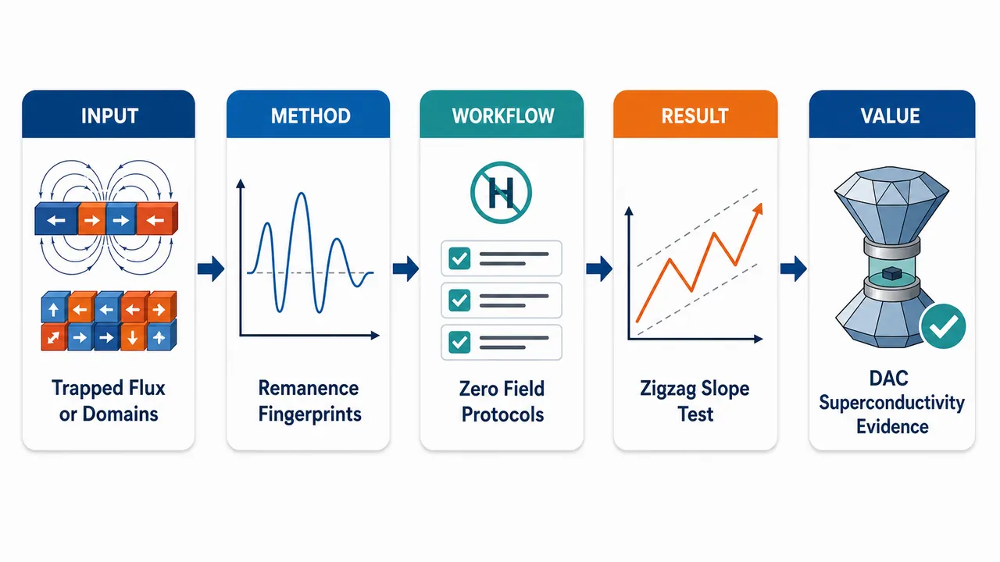
研究问题零外场剩磁信号究竟来自 II 型超导体的“俘获磁通”，还是来自硬铁磁体的“畴壁钉扎”？在金刚石对顶砧高压实验中，如何避免把铁磁剩磁误判为超导证据。创新方法把成熟超导体 LuNi₂B₂C 与多种硬铁磁体放在同一磁强计、同一 FC/ZFC、TRM/IRM 类曲线、zigzag 温度扫描和磁弛豫协议下对照，提炼出三条“剩磁指纹”：ZFC 穿透场零剩磁区、Bean 型饱和场关系 HsatZFC≈2HsatFC+Hp、zigzag 中间段水平或有斜率。工作流程样品在高于 Tc/TC 的温度开始；分别执行零场冷却 ZFC 或场冷 FC；在低温施加或保留目标磁场 HM；将外场降为 H=0；测量升温过程中的剩磁 Mrem(T)、目标场依赖 Mrem(HM)、zigzag 温度回扫曲线和长时间弛豫；最后用超导 Bean 临界态特征与铁磁 virgin M(H) / 畴壁钉扎特征逐项比对。关键结果超导体 LuNi₂B₂C 显示 Tc≈16 K、ZFC 低场零剩磁阈值、ZFC/FC 饱和场近似符合 Bean 模型、zigzag 中间冷却/升温段近水平，且磁通蠕变随温度升高增强。硬铁磁体则表现为 ZFC 剩磁跟随 virgin M(H)，ZFC/FC 饱和场比例无固定规律：SmCrGe₃ 约 20 kOe 对 0.3 kOe，MnBi₈Te₁₃ 比值约 4，Ce₃₋xMgxCo₉ 比值约 3；zigzag 中间段普遍带温度斜率。应用价值为高压 DAC 中超氢化物和其他压力诱导材料的超导判定提供可视化判别尺：单独剩磁信号不能自动证明超导；若俘获磁通同时满足协议指纹，并与零电阻、低场 ZFC M(T)、磁场抑制转变温度等独立证据一致，才构成强超导证据。第一部分：核心概览 (Overview)
该研究系统比较了II 型超导体中俘获磁通剩磁与硬铁磁体中畴壁钉扎剩磁在零外场测量中的相似性与可区分特征。核心贡献在于建立一套面向金刚石对顶砧高压实验的判别准则：超导体在 ZFC 剩磁曲线中存在穿透场阈值、ZFC/FC 饱和场近似满足 (HₛₐₜZFCapprox 2HₛₐₜFC+Hₚ)，且 zigzag 温度扫描的中间冷却/升温段近水平；铁磁体则通常表现为 ZFC 剩磁跟随 virgin (M(H))、ZFC/FC 饱和场比值无固定关系且 zigzag 段具有温度斜率。该工作处于高压氢化物超导性判据争议的关键方法学位置。
---
第二部分：结构化快速回顾
《Notes on remanent magnetization measurements in superconductors and hard ferromagnets》（None，）
背景
剩余磁化与俘获磁通长期用于地球物理样品、自旋玻璃和超导体研究。高压超氢化物中，由于金刚石对顶砧 DAC背景磁信号强，零外场俘获磁通测量被视为识别超导态的重要手段，但硬铁磁体的畴壁钉扎也可能产生相似信号。
方法
使用 Quantum Design MPMS3 对一个成熟 II 型超导体 LuNi(₂)B(₂)C 以及多个硬铁磁体 LaCrGe(₃)、SmCrGe(₃)、MnBi(₈)Te(₁₃)、Ce(₃₋ₓ)Mg(ₓ)Co(₉), (xsim0.6) 进行零外场剩磁测量。协议包括 FC、ZFC、目标场依赖、zigzag 温度扫描和磁弛豫。
结果
超导体 LuNi(₂)B(₂)C 表现出典型俘获磁通行为：(T_capprox16) K，ZFC 曲线存在低场零剩磁区，FC/ZFC 饱和场关系近似符合 Bean 模型，zigzag 中间段水平，磁通蠕变率随温度升高增加。铁磁体则表现出材料依赖的畴动力学：SmCrGe(₃) 的 ZFC 饱和场约 20 kOe、FC 约 0.3 kOe；MnBi(₈)Te(₁₃) 的 ZFC/FC 饱和场比约 4；Ce(₃₋ₓ)Mg(ₓ)Co(₉) 的比值约 3。
讨论
两类材料在普通剩磁曲线、TRM/IRM 类图和弛豫曲线上可能表面相似，必须依赖严格一致的协议和细节判据。最有判别力的特征包括：ZFC 低场阈值、ZFC/FC 饱和场比例、zigzag 温度扫描的中间段斜率、低场 (M(T)) 与电阻/电阻率辅助证据。
局限
信噪比低、样品不均匀、几何形状不明确、颗粒性和连通性会模糊超导与铁磁信号差异。研究主要使用单晶与块体多晶，未系统处理颗粒超导或粉末样品中的粒径、连通性和相分布效应。
结论
零外场剩磁测量在 DAC 中具有识别和研究超导体与硬铁磁体的潜力。俘获磁通若与零电阻等独立超导证据同时出现，应构成强实验证据；但单独的剩磁信号不能自动等同于超导性，必须排除畴壁钉扎铁磁体的仿真行为。
---
第三部分：逐章节冷凝解析 (Section-by-Section Condensing)
Abstract
Comparative zero-field remanence dataset
研究核心数据覆盖一个 BCS 超导体 LuNi(₂)B(₂)C 与多个硬铁磁体，比较零外场下的剩余磁化与磁弛豫。摘要明确指出，数据对象为 *"a BCS superconductor LuNi 2 B 2 C and several hard ferromagnets"*，测量类型包括 *"zero applied field measurements of remanent magnetization and magnetic relaxation"*。
Protocol-level comparison of superconductors and ferromagnets
重点不是单一曲线，而是比较 TRM-like、IRM-like 和 zigzag 温度扫描剩磁等多种协议下的异同。摘要使用 *"Apparent similarities and differences, in particular in Thermoremanent Magnetization (TRM) - like, Isothermal Remanent Magnetization (IRM) - like, and remanent magnetization measurements with zigzag temperature sweep measurements are outlined"*，说明该工作定位为判别方法学。
Relevance to diamond anvil cell magnetometry
研究动机直接指向 DAC 高压磁测量，尤其是高压超导候选材料中零外场磁信号的解释问题。摘要强调 *"how these results could be relevant for the magnetization measurements in diamond anvil cells"*，对应高压超氢化物超导性争议。
---
1 Introduction
Remanent magnetization has a long cross-field history
剩磁测量并非新技术，已用于地球物理、自旋玻璃和超导体俘获磁通研究。引言开宗明义列出三类历史背景：*"Measurements of remanent magnetization in geophysical samples, [1] and spin glasses [2] and of trapped flux magnetization in superconductors [3] have been known for decades."* 这为后续跨材料类比奠定基础。
Trapped flux in superconductors regained attention for applications and discovery
超导俘获磁通经历多次研究热潮，既与强磁场应用有关，也与新超导体识别有关。原文写道：*"Trapped flux magnetization in superconductors, in paticular, had periods of renewed interest, either for potential applications, [4,5] or for identification and studies of new superconductors. [6,7]"* 具体应用背景包括高温超导块体磁体和 MgB(₂) 高俘获场研究。
Superhydride claims made trapped flux measurements methodologically urgent
高压超氢化物中的俘获磁通被提出并解释为超导态强证据，压力范围超过 1 megabar。引言指出：*"More recently the measurements of remanent magnetization (trapped flux magnetization) were suggested [8] and interpreted [9] as a strong evidence of superconducting state in superhydrides under pressures exceeding a megabar."* 这一点构成研究的直接争议背景。
Zero-field protocol reduces DAC magnetic background
在 DAC 中，零外场协议的重要优势是减少压力池本身磁信号贡献。原文明确指出：*"the trapped flux measurements protocol (measurements are performed in the H = 0 applied field) allowed for the avoidance, or minimization, of significant contribution to the magnetic signal coming from the diamond anvil pressure cell (DAC)."* 这解释了为何名义零场磁化测量在高压超导研究中有特殊价值。
Trapped flux alone remains controversial
虽然俘获磁通与零电阻联合出现通常被视为强超导证据，但其他基态也可能模拟类似信号。引言指出：*"Although trapped flux measurements, especially when taken together with other experimental signatures such as zero electrical resistance, have been considered to be strong evidence of superconductivity, [6] there remains controversy regarding other possible ground states that could mimic the signatures of superconductivity in trapped flux measurements. [10]"* 这正是铁磁畴壁钉扎需要被纳入对照的原因。
The work targets separation of ferromagnetic and superconducting transitions
研究目标是通过实验协议和数据更清楚地区分铁磁转变与超导转变。原文目标句为：*"we present experimental protocols and data to more clearly distinguish ferromagnetic transitions from superconducting ones."* 该目标不是发现新材料，而是建立判别规则。
Two DAC-relevant questions motivate the study
高压 DAC 俘获磁通测量引出两个问题：能否把已知超导体性质研究扩展到更高压力；能否可靠识别压力稳定新材料中的超导态。原文列出：*"The trapped flux magnetization measurements in DACs poised two questions: (a) can such measurements protocols allow us to extend the available pressure range for studies of superconducting properties of known superconductors to significantly higher pressures, and (b) can such measurements serve as a reliable way of identifying superconducting state in new, pressure stabilized, materials?"*
Known-superconductor pressure extension already has positive evidence
第一个问题已有肯定答案，例如 CaKFe(₄)As(₄) 在 DAC 中测得自场临界电流密度、低温磁通蠕变率和 (T_c)，压力达到约 7.5 GPa。原文指出：*"The first question was answered affirmatively e.g. in Ref. [11] where self-field critical current density and base temperature flux creep rate as well as T c of CaKFe 4 As 4 were measured in DAC up to ∼ 7.5 GPa."*
Reliable identification of new pressure-stabilized superconductors is harder
第二个问题更复杂。经典观点认为 FC 后关场出现正剩磁本身即可证明超导性，引用语为：*"This remanent magnetization results from flux trapping and it is a proof of superconductivity in its own right"*. 但反方指出，具有畴壁钉扎的铁磁体也能产生类似的场依赖曲线：*"curves similar to the applied field dependence of the trapped flux magnetization in a superconductor can be obtained if similar measurements are performed on a ferromagnetic sample with domain walls pinning."*
The experimental matrix spans protocols and materials
研究比较的变量包括温度依赖、磁化场依赖、ZFC/FC、TRM/IRM 类图、zigzag 温度扫描和弛豫。引言最后概括为：*"we present and compare experimental remanent magnetization data as a function of temperature and magnetizing field, taken in zero-field-cooled (ZFC) and field-cooled (FC) protocols, derived TRM and IRM plots, remanent magnetization with zigzag temperature sweeps, and magnetization relaxation measurements"*，对象为 *"an established type II superconductor and several ferromagnets with domain walls pinning and coercivity."*
---
2 Experimental
Material set covers one established superconductor and four ferromagnetic systems
样品包括 LuNi(₂¹⁰)B(₂)C 单晶、LaCrGe(₃)、SmCrGe(₃)、MnBi(₈)Te(₁₃) 铁磁单晶，以及 Ce(₃₋ₓ)Mg(ₓ)Co(₉) 多晶样品，(xapprox0.6)。原文列出：*"The measurements were performed on superconducting LuNi 2 10 B 2 C single crystal... ferromagnetic single crystals of LaCrGe 3, SmCrGe 3, MnBi 8 Te 13 and ferromagnetic polycrystalline sample of Ce 3-x Mg x Co 9, (x≈0.6)."*
Sample geometry and crystallographic orientation were controlled
LuNi(₂)B(₂)C 与 MnBi(₈)Te(₁₃) 为片状，(c) 轴垂直片面；LaCrGe(₃) 与 SmCrGe(₃) 为棒状，(c) 轴沿棒方向。原文为：*"LuNi 2 B 2 C and MnBi 8 Te 13 crystals are plate-like, with the c-axis perpendicular to the plate, whereas LaCrGe 3 and SmCrGe 3 are rod-like with the c-axis along the rod."* 这对退磁因子和剩磁解释至关重要。
Magnetic field was aligned along the c axis for all single crystals
所有单晶测量中，外场均平行 (c) 轴。实验部分写道：*"For all four single crystals the applied magnetic field was parallel to the c-crystallographic axis."* 这减少了各向异性材料中方向差异导致的解释混乱。
MPMS3 setup and mounting details were specified
磁测量使用 Quantum Design MPMS3 magnetometer，样品用少量 GE-7031 varnish 固定于 MPMS3 半圆柱样品托。原文为：*"The magnetic measurements were performed using a Quantum Design MPMS3 magnetometer. The samples were fixed on a MPMS3 semi-cylindrical sample using a small amount of GE-7031 varnish."*
Copper L-shaped adapter was used for plate-like crystals
对 LuNi(₂)B(₂)C 和 MnBi(₈)Te(₁₃) 片状晶体，使用厚度 0.05 mm 的铜箔 L 形适配器。原文细节为：*"a small L-shaped adapter made out of 0.05 mm thick copper foil was used."* 这有助于保持几何取向和测量位置稳定。
ZFC remanence protocol was explicitly staged
ZFC 协议：从高于 (T_c/T_C) 在 (H=0) 冷却至目标低温；稳定后加场至 (H_M)；稳定场中停留 0.5 min；降回 (H=0)；再停留 0.5 min；随后升温测 (M(T))。原文为：*"Zero-field cooled (ZFC): the sample was cooled down from above the ordering temperature... in H=0; after the temperature was stabilized at the target base temperature, the magnetic field was increased to the target field, H M; after a 0.5 min dwell time... the magnetic field was decreased to H=0; then, after another 0.5 min dwell time, M(T) measurements on warming started."*
FC remanence protocol isolates trapped or retained magnetization after field cooling
FC 协议：在目标场中从高于 (T_c/T_C) 冷却到低温；稳定后降到 (H=0)；停留 0.5 min；开始 (M(T)) 测量。原文为：*"Field-cooled (FC): the sample was cooled down from above T c/T C in the target field; after the temperature was stabilized at the target base temperature, the magnetic field was decreased to H=0; then after 0.5 min dwell time, M(T) measurements start."*
Field changes used linear mode without oscillations
磁场变化采用线性模式，避免振荡带来的磁历史复杂化。原文写道：*"The linear mode (H(t) - linear, no oscillations) was used to change the magnetic field."*
Low-field ZFC measurements required magnet demagnetization
当 ZFC 目标场 (H_Młe100) Oe 时，MPMS3 超导磁体先进行退磁程序，再在 (H=0) 冷却。原文为：*"For the remanent magnetization measurements in the ZFC protocol with H M≤100 Oe, the samples were cooled in H=0 from above T c/T C, after the demagnetization procedure for the superconducting magnet of MPMS3 was performed."* 这一细节与后续低场负剩磁伪影密切相关。
Zigzag and relaxation protocols used above-saturation field
zigzag 温度扫描采用 FC 协议，且外场高于相应样品饱和场；磁弛豫同样使用高于饱和场的 FC 条件。原文写道：*"For the remanent magnetization measurements with zigzag temperature sweeps, the FC protocol with the applied field higher than the saturation field for the respective sample was used. The magnetic relaxation measurements were performed in the FC protocol, again with the applied field value above the saturation field."*
---
3 Results
3.1 LuNi(₂)B(₂)C superconductor
LuNi(₂)B(₂)C is an established (T_capprox16) K superconductor
材料基准明确，LuNi(₂)B(₂)C 为成熟超导体，临界温度约 16 K。原文写道：*"LuNi 2 B 2 C is a well established superconductor with the critical temperature T c≈16 K."* 这使其成为铁磁体对照的可靠超导参照。
FC and ZFC trapped-flux curves resemble known superconductors and hydrides
LuNi(₂)B(₂)C 的 FC/ZFC 温度依赖剩磁与 MgB(₂)、CaKFe(₄)As(₄)、Mn 掺杂 CaKFe(₄)As(₄)，以及高压 H(₃)S、LaH(₁₀) 数据定性相似。原文指出：*"these data are qualitatively similar to the data on other known ambient pressure superconductors, like MgB 2, CaKFe 4 As 4, and CaK(Fe 0.983 Mn 0.017) 4 As 4 as well as the data for H 3 S and LaH 10 at high pressures."*
TRM/IRM-equivalent field dependence was measured at 1.8 K
剩磁在 (T=1.8) K 下作为目标场 (H_M) 的函数测量，并等价于 TRM/IRM 曲线。图注明确：*"Remanent (trapped flux) magnetization at T=1.8 K as a function of target field H M in the ZFC and FC experiments (Equivalent to TRM and IRM curves)."* FC 目标场列表覆盖 0.01–70 kOe，ZFC 覆盖 0.01–70 kOe，低场部分被放大显示。
Zigzag temperature sweeps show horizontal intermediate segments
FC 于 70 kOe 后进行 zigzag 温度扫描，中间温度 (Tᵢ<T_c) 后的冷却和回升段近水平。原文写道：*"Fig. 1 (d) shows temperature-dependent remanent magnetization measured after FC in 70 kOe field with zigzag temperature sweep. The parts of the data corresponding to cooling from an intermediate temperature T i<T c and subsequent warming back to T i are horizontal, without any slope."* 这是超导体与铁磁体最重要差异之一。
Horizontal zigzag behavior generalizes from solders to superhydrides
这种无斜率行为并非 LuNi(₂)B(₂)C 特例，已见于 Sn-Pb 焊料和高压超氢化物。原文为：*"Similar behavior was observed in other superconductors ranging from Sn-Pb solders to syperhydride superconductorss at high pressure."*
Flux creep increases with temperature
自场磁弛豫在 70 kOe FC 后多个温度测得，磁通蠕变率随温度升高而增加，符合靠近 (T_c) 时钉扎减弱图像。原文写道：*"The observed increase of the flux creep rate on increase of temperature is consistent with a simple picture of decrease of pinning on approaching T c."* 弛豫率定义为 (S=-1/M(0)× dM/dłn(t))。
Flux creep resembles MgB(₂) when plotted versus reduced temperature
LuNi(₂)B(₂)C 的蠕变率与 CaKFe(₄)As(₄)、MgB(₂) 定性相似，按 (T/T_c) 归一时接近 MgB(₂)。原文写道：*"The data in Fig. 2 (b) are qualitatively similar to those measured in CaKFe 4 As 4 and MgB 2 single crystals and actually are close in values to those of MgB 2 if plotted vs reduced temperature T/T c."*
---
3.2 Ferromagnets
3.2.1 LaCrGe(₃) crystal
LaCrGe(₃) is a ferromagnet with (T_Capprox86) K
LaCrGe(₃) 的铁磁转变温度约 86 K。原文为：*"LaCrGe 3 orders ferromagnetically at T C≈86 K."*
70 kOe FC remanence shows anomalous sign reversal near 40 K
LaCrGe(₃) 在 70 kOe FC 温度依赖剩磁中出现约 40 K 的磁化符号反转。原文指出：*"The magnetization sign reversal at ∼40 K is highly unusual and was studied in detail in Ref. [16]."* 这种行为与常规超导俘获磁通明显不同。
Coercivity vanishes in an intermediate temperature window
低温矫顽力强且随温度变化；在 40–55 K 区域降为零，又在 70–85 K 区域重新出现。原文细节为：*"LaCrGe 3 was found to have remarkable low temperature coercivity that is temperature dependent: it drops to zero in the 40 - 55 K region and reappears in the 70 - 85 K regions."*
Zero-coercivity window explains magnetization reversal
中间温区的零矫顽力被联系到磁化反转。原文写道：*"This region of zero coercivity at the intermediate temperatures below T C was linked to the magnetization reversal."*
LaCrGe(₃) remanence is distinctly non-superconducting
LaCrGe(₃) 的剩磁行为与超导体明显不同，后续不再深入讨论。原文直陈：*"We will not discuss LaCrGe 3 further here, other than noting that its remanent magnetization is distinctly different from that observed in superconductors."*
---
3.2.2 SmCrGe(₃) crystal
SmCrGe(₃) is a high-anisotropy ferromagnet with (T_Capprox160) K
SmCrGe(₃) 是 LaCrGe(₃) 的近亲铁磁体，(T_Capprox160) K，具有大磁晶各向异性和单调温度依赖的矫顽力。原文为：*"SmCrGe 3 is a close cousin of LaCrGe 3, a ferromagnet with T C≈160 K. It has large magnetocrystalline anisotropy and monotonic in temperature coercivity without apparent anomalies."*
FC and ZFC remanence were measured over extensive target-field ranges
SmCrGe(₃) 的 FC (H_M) 覆盖 0.01–60 kOe，ZFC (H_M) 覆盖 0.1–70 kOe。图注列出 FC 场值：*"0.01, 0.02, ... 60"* kOe，ZFC 场值：*"0.1, 0.5, 0.75, 1, 5, ... 70, kOe."* 这支持低场伪影、饱和场与 virgin 曲线比较。
Negative low-field remanence is attributed to trapped magnet flux artifact
低 (H_M) 下 FC 和 ZFC 剩磁出现负值，被解释为 MPMS3 超导磁体中残余磁通的伪影。原文为：*"the measured remanent magnetization is negative... In our opinion this is an artefact caused by magnetic flux trapped in the superconducting magnet of the magnetometer."* 这提醒零场实验中的仪器残余场风险。
Artifact can be compensated but at high cost
这种伪影理论上可通过施加反号小场抵消残余场，但耗时耗资源。原文写道：*"this artefact, in principle, can be to a large extent removed by applying small opposite sign field to balance remanent field in the magnet... Those procedures are time and resources consuming."*
FC saturation occurs at (sim0.3) kOe whereas ZFC saturation requires (sim20) kOe
SmCrGe(₃) 的 FC 剩磁在约 0.3 kOe 达饱和；ZFC 剩磁至约 12 kOe 仍近零，并在约 20 kOe 达饱和。原文细节为：*"FC remanent magnetization reaches saturation at a relatively low field of ∼0.3 kOe, whereas ZFC remanent magnetization is effectively zero up to ∼12 kOe, and the saturation is reached at ∼20 kOe, way higher than for FC."*
ZFC remanence follows the virgin (M(H)) curve
SmCrGe(₃) 在 5 K 的 ZFC 剩磁场依赖跟随同温度 virgin (M(H)) 曲线。原文指出：*"the ZFC remanent magnetization data at 5 K follow the 'virgin' M(H) curve measured at the same temperature."* 这是铁磁体与 Bean 型超导俘获磁通的重要差异。
Zigzag behavior is reversible below (sim110) K
70 kOe FC 后的 zigzag 温度扫描显示：当中间温度 (Tᵢłesssim110) K 时，冷却与升温可逆，并跟随饱和 (Mᵣₑₘ(T)) 曲线。原文为：*"For T i≲110 K the behavior is reversible: M rem(T) is the same on cooling and warming and it follows saturated M rem(T) curves."*
Above (sim110) K, domain misalignment creates non-superconducting zigzag paths
较高中间温度下，冷却曲线不同于初始冷却，随后回升沿同一路径，继续升温后回到饱和 (Mᵣₑₘ(T)) 曲线。原文写道：*"For higher temperatures there is a clear difference: the cooling curve... is different from initial cooling... but then warming... segment is the same as the previous... cooling, and on further warming... the behavior follows saturated M rem(T) curve."*
Single-domain versus multi-domain regimes rationalize the zigzag response
约 110 K 以下可视为单畴或可逆畴动力学；以上进入多畴、畴部分失配且过程不可逆。原文为：*"below ∼110 K either the sample behaves as a single domain or the domains dynamics is reversible. Above ∼110 K the regime is multi-domain, domains are (partially) misaligned and this process is not reversible."*
Ferromagnetic zigzag cooling gains moment, unlike superconducting horizontal segments
从中间温度冷却时，SmCrGe(₃) 的 (Mᵣₑₘ(T)) 增加源于磁矩随降温增强；而超导体中涡旋退出后不会在冷却时重新进入，因此中间段水平。原文对比为：*"On cooling from an intermediate temperature... the measured M rem(T) increases simply due to increase of the magnetic moment"*，以及 *"in superconductors once the vortices exit the sample on warming they do not re-enter on cooling and respective parts of the M rem(T) curve are horizontal."*
Relaxation is tiny in single-domain regime but sizable near multi-domain regime
SmCrGe(₃) 在 5 K 和 75 K 下，约 1000 min 内 (Mᵣₑₘ) 变化仅为数十 ppm；在 120 K、(T/T_C=0.75) 下弛豫近指数型，弛豫率约 0.05。原文细节为：*"For 5 K and 75 K (T/T C≈0.03 and 0.5, respectively, the single-domain region) the changes in M rem over ∼1000 min. are in tens of ppm, for 120 K (T/T C=0.75, multi-domain region) the relaxation is close to exponential... with the relaxation rate... roughly 0.05."*
---
3.2.3 MnBi(₈)Te(₁₃) crystal
MnBi(₈)Te(₁₃) is a low-(T_C) magnetic topological-insulator ferromagnet
MnBi(₈)Te(₁₃) 属于 MnBi(₂ₙ)Te(₃ₙ₊₁) 本征磁性拓扑绝缘体家族，铁磁 (T_Csim10) K。原文为：*"MnBi 8 Te 13 belongs to a family of MnBi 2n Te 3n+1 intrinsic magnetic topological insulators. It is a ferromagnet with T C∼10 K."*
Narrow hysteresis and soft domains strongly suppress remanence by (0.5T_C)
该材料已有报道显示磁滞回线窄、磁畴软。温度依赖剩磁在约 5 K，即约 0.5 (T_C) 已变得很小，但仍可推断 (T_C)。原文为：*"It was reported to have relatively narrow hysteresis loops and soft magnetic domains"*，以及 *"the remanent magnetization becomes very small already at ∼5 K (∼0.5T C), yet the value of T C can be inferred from these data."*
Demagnetizing field skewing and narrowing hysteresis explain weak remanence
弱剩磁源于窄磁滞回线随温度变窄和退磁场偏斜效应共同作用。原文写道：*"The reason for this is a combunation of narrow hysteresis, decreasing with temperature, and the demagnetizing field skewing effect."*
Low-(H_M) negative remanence artifact also appears
与 SmCrGe(₃) 类似，低目标场下出现负 (Mᵣₑₘ) 伪影。原文简明指出：*"As in other materials, the artefact of negative M rem for low H M is observed."*
FC saturation occurs near 0.3 kOe while ZFC saturation occurs near 1.35 kOe
MnBi(₈)Te(₁₃) 的 FC 剩磁约 0.3 kOe 饱和；ZFC 剩磁至约 0.2 kOe 近似平坦，约 1.35 kOe 饱和，约为 FC 的 4 倍。原文为：*"FC remanent magnetization reaches saruration at ∼0.3 kOe, whereas ZFC remanent magnetization is approximately flat up to ∼0.2 kOe, and the saturation is reached at ∼1.35 kOe, factor of ∼4 higher than for FC."*
ZFC remanence follows virgin (M(H)) at 1.8 K
在 1.8 K 下，ZFC 剩磁场依赖跟随 virgin (M(H)) 曲线。原文写道：*"The ZFC remanent magnetization data at 1.8 K follow the 'virgin' M(H) curve measured at the same temperature."*
Zigzag remanence increases on cooling from intermediate temperatures
5 kOe FC 后的 zigzag 扫描显示，(Mᵣₑₘ(T)) 从中间温度冷却时增加，几乎可逆到转折温度，然后继续升温时近似回到饱和 (Mᵣₑₘ(T))。原文为：*"Similar to SmCrGe 3, although less pronounced, M rem(T) increases on cooling from an intermediate temperature, is reversible almot to the turn-over temperature, and then approximately follows the saturation M rem(T) on further warming."*
Relaxation is unusual at 3 and 3.5 K
MnBi(₈)Te(₁₃) 的磁弛豫在 3 K 和 3.5 K 表现异常，并与早先仅约 8.3 min 的测量一致。原文写道：*"The magnetic relaxation behavior... is rather unusual for 3 and 3.5 K. The data are consistent with those reported in Ref. [28] where the meaurements were only ∼8.3 minutes long."* 图 7 图注存在材料名误写为 SmCrGe(₃)，但上下文对应 MnBi(₈)Te(₁₃)。
---
3.2.4 Polycrystal of Ce(₃₋ₓ)Mg(ₓ)Co(₉) with (xsim0.6)
Ce(₃₋ₓ)Mg(ₓ)Co(₉) is a (T_Csim140) K ferromagnetic polycrystal
该样品属于 Ce(₃₋ₓ)Mg(ₓ)Co(₉) 系列，(xsim0.6)，铁磁转变温度约 140 K。原文为：*"This sample is a part of Ce 3-x Mg x Co 9 series... It is a ferromagnet with T C∼140 K."*
Mg concentration distribution is likely present
作为多晶样品，可能存在 Mg 浓度 (x) 的分布。原文写道：*"As other polycrystalline samples in this family, it probably has some distribution of the Mg concentrtion x."* 这可解释高于多数相 (T_C) 仍有弛豫的现象。
Dataset parallels SmCrGe(₃) and MnBi(₈)Te(₁₃)
图 8 给出与前两种铁磁体相同类型的数据集，包括 FC/ZFC 温度依赖、目标场依赖、virgin (M(H)) 对照和 zigzag 扫描。原文写道：*"Fig. 8 presents the same datasets as were shown for SmCrGe 3 and MnBi 2n Te 3n+1 in figures 4 and 6 respectively. Qualitatively, these three datasets are similar."*
FC and ZFC saturation fields differ by about a factor of 3
Ce(₃₋ₓ)Mg(ₓ)Co(₉) 中 FC 与 ZFC 协议下的剩磁饱和场显著不同，约差 3 倍。原文为：*"the saturation fields for remanent magnetization measurements in FC and ZFC protocols are significantly (by factor of ∼3) different."*
(Mᵣₑₘ(H_M)) follows the virgin (M(H)) branch despite incomplete saturation
目标场依赖的剩磁跟随 (M(H)) 回线 virgin 部分，但 (M(H)) 在所用场范围内并未完全饱和。原文写道：*"M rem(H M) follows the virgin part of the M(H) loop, although M(H) does not saturates completely in these fields."*
Zigzag intermediate segments have clear negative slope
zigzag 温度扫描中，中间转折温度对应的冷却/升温段具有明显负斜率，即 (Mᵣₑₘ(T)) 随升温增加。原文为：*"The parts of the M rem(T) curve corresponding to cooling / warming at intermediate turn-around temperatures have clear negative slope (M rem(T) increases on warming)."* 这与超导体水平段形成对比。
Relaxation rate peaks around 100 K and persists above majority (T_C)
70 kOe FC 后零场弛豫在多个温度测得，弛豫率 (S) 随温度在约 100 K 达最大，并且 150 K 仍能测到弛豫，超过多数相 (T_C)。原文为：*"It has a maximum at ∼100 K, and some relaxation is measured even at 150 K, above the T C of the majority phase of the sample."*
---
4 Discussion and Summary
Superconductor and hard-ferromagnet remanence can look superficially similar
ZFC/FC 剩磁、TRM/IRM 类曲线、zigzag 温度扫描和弛豫曲线在超导体与硬铁磁体之间可呈现表观相似。讨论开头指出：*"At first glance, qualitatively, the data presented here... for type II superconductor with pinning and several ferromagnets with hysteresis, look similar."*
Strictly identical protocols are essential
区分两类材料要求严格相同的测量协议与条件。原文强调：*"we emphasize the importance of identical protocols and conditions and metodological rigor if one wants to compare these two classes of materials."* 这是高压 DAC 小信号测量中最关键的方法学原则。
Superconducting remanence is described by Bean theory with corrections
II 型超导体的俘获磁通通常可由 Bean 临界态模型描述，并受样品形状、退磁因子和钉扎机制修正。原文为：*"Remanent (trapped flux) magnetization in type II superconductors is usually described well by Bean’s theory with some further corrections due to the shape (demagnetization factor) of the sample, pinning mechanisms, etc."*
Superconductor criterion 1: ZFC curve must have a zero-remanence interval below penetration field
在 ZFC 协议下，超导体的 (Mᵣₑₘ(H_M)) 必须存在 (H<Hₚ) 时 (Mᵣₑₘ=0) 的低场区，(Hₚ) 为第一个涡旋进入样品的穿透场。原文列为第一条：*"(i) M rem(H M) curve in ZFC protocol necessarily has, even if small, part with M rem=0 for H<H p, where H p is the penetration field of the first vortex into the sample."*
Superconductor criterion 2: (HₛₐₜZFC=2HₛₐₜFC+Hₚ)
超导体 ZFC/FC 饱和场满足近似关系：[
HₛₐₜZFC=2HₛₐₜFC+Hₚ
]
若 (Hₚ) 小，则 (HₛₐₜZFCsim2HₛₐₜFC)。原文为：*"(ii) in M rem(H M) plots (or TRM and IRM plots) the saturation field for ZFC protocol... approximately equals to FC protocol saturation field... times two, with addition of H p, H sat ZFC=2H sat FC+H p, and since H p is often rather small, H sat ZFC∼2H sat FC."*
Superconductor criterion 3: Zigzag intermediate segments are horizontal
超导体 zigzag 扫描中，中间转折温度后的冷却/升温段为水平线，因为升温时涡旋离开后冷却不会重新进入。原文列为第三条：*"(iii) in remanent magnetization with zigzag temperature sweeps measirements, the M rem(T) parts of the data corresponding to cooling / warming at intermediate turn-around temperatures are horizontal, since once the vortices exit the sample on warming they do not re-enter on cooling."*
Ferromagnet criterion 1: ZFC remanence follows virgin (M(H))
铁磁体的 ZFC (Mᵣₑₘ(H_M)) 跟随 virgin (M(H))，不必存在 (Mᵣₑₘ=0) 低场段；不过 SmCrGe(₃) 和 MnBi(₈)Te(₁₃) 可能出现相似表象。原文为：*"(i) the M rem(H M) in ZFC protocol follows the virgin part of the M(H), so it does not necessarily have M rem=0, although, as in the examples of SmCrGe 3 and MnBi 8 Te 13, very similar behavior might be observed."*
Ferromagnet criterion 2: ZFC/FC saturation-field ratio has no Bean-type relation
铁磁体中只预期 (HₛₐₜZFC>HₛₐₜFC)，无固定比例；实验铁磁例子中 (HₛₐₜZFC/HₛₐₜFC) 约 3–30。原文为：*"(ii) there is no expectation of any relation between H sat ZFC and H sat FC, except H sat ZFC>H sat FC (we observed H sat ZFC/H sat FC between ∼3 and ∼30 in the FM examples above)."*
Ferromagnet criterion 3: Zigzag segments have negative slopes because moment grows on cooling
铁磁体磁矩通常随降温增强，因此 zigzag 中间段应有、且确实有负斜率。原文为：*"(iii) since the magnetic moment in ferromagnets increase on cooling, the M rem(T) in measurements of the remanent magnetization with zigzag temperature sweeps should (and clearly do) have negative slopes for the data corresponding to intermediate turn-over temperature points."*
Thermomagnetic hysteresis protocol is a relevant additional discriminator
已有文献提出热磁滞后测量协议可区分超导与铁磁行为，值得后续纳入。原文为：*"a protocol for thermomagnetic hysteresis measurements was suggested in the literature as an experimental way to distinguish between superconducting and ferromagnetic behavior. This protocol should be considered for further studies and potential implementation."*
Granularity remains outside the present scope
本研究使用单晶和块体多晶，避免了颗粒样品带来的复杂性；粒径、连通性和颗粒效应需另行研究。原文为：*"we performed measurements on single crystals and a bulk polycrystalline sample thus avoiding potential complications related to granular nature of the samples... Detailed studies of the effects of granularity including particle size and connectivity require additional, separate study."*
Low signal-to-noise and ill-defined geometry can obscure discrimination
当信噪比低、样品不均匀或几何不明确时，超导体和铁磁体的差异会变得微妙且难以无歧义判断。原文为：*"The differences between superconductors and ferromagnets outlined above could be somewhat subtle and might be difficult to see unambiguously in the case of not very high signal-to-noise measurements, inhomogeneous samples, or samples with ill-defined geometry."*
Auxiliary (M(T)) and resistivity evidence strengthen conclusions
更可靠判据包括低场 ZFC (M(T))：超导体在 (T_c) 下降，铁磁体在 (T_C) 上升；电阻/电阻率：超导体在 (T_c) 以下仪器零电阻且磁场降低表观转变温度，铁磁体仅在 (T_C) 以下电阻有所下降且磁场可升高表观转变温度。原文为：*"The conclusions would be more solid if low field ZFC M(T)... or resistance / resistivity, including in magnetic field... can be reliably measured."*
Zero-field remanence is useful in DACs but strongest when combined with other signatures
零外场磁化测量在 DAC 中识别与研究超导体和硬铁磁体具有明确潜力。原文总结：*"the examples above show a clear potential of nominal zero applied field magnetization measurements for identification and further studies of superconductors with pinning and hard ferromagnets under pressure in diamond anvil cells."*
Trapped flux plus zero resistance is strong evidence, not automatic proof from remanence alone
俘获磁通若与零电阻等独立证据一致，应视为超导性的强实验证据；工作进一步澄清了如何排除铁磁签名。原文结论为：*"The observation of trapped flux magnetization in coincidence with other experimental signatures of superconductivity, such as zero electrical resistance, should be considered strong experiemental evidence of superconductivity. In this work we demonstrated how to distinguish erromagnetic from superconducting signatures, further clarifying this identification proceedure."*
---
Appendix A Additional magnetization data for MnBi(₈)Te(₁₃)
Five-quadrant loops were used without demagnetizing-field correction
附录给出 MnBi(₈)Te(₁₃) 在不同温度下 (Hparallel c) 的五象限磁化回线，且未作退磁场偏斜校正。原文为：*"Fig. A1 (a) shows as measured, without demagnetizing field skewing correction, five quadrant magnetization loops (H∥c) for MnBi 8 Te 13 measured at different temperatures."*
Loop data are consistent with earlier measurements
附录回线与文献 Ref. [28] 的部分数据一致。原文为：*"These data are consistent witth a subset of loops reported in Ref. [28]."*
(Mᵣₑₘ(T)) and (Mₛₐₜ(T)) were inferred from loop criteria
通过回线提取温度依赖的剩磁 (Mᵣₑₘ) 和饱和磁化 (Mₛₐₜ)。原文写道：*"Based on these loops, temperature dependence of remanent magnetization (M rem) and saturation magnetization (M sat) was inferred."*
(Mᵣₑₘ) and (Mₛₐₜ) diverge already near (0.4T_C)
由于退磁场偏斜和窄磁滞回线，推断出的 (Mᵣₑₘ(T)) 与 (Mₛₐₜ(T)) 在 4 K，约 0.4 (T_C) 时已显著不同。原文为：*"So inferred M rem(T) and M sat(T) are significantly different already at 4 K (∼0.4T C) due to demagnetization field skewing anf rather narrow hysteresis loops."*
---
第四部分：深度理解与语言支持 (Understanding & Nuance)
1. 术语解析
#### Remanent magnetization
Remanent magnetization 指外加磁场移除后仍保留的磁化强度。语境中它既可来自超导体的俘获磁通，也可来自铁磁体的畴壁钉扎。关键微妙点：同一个测量量不对应唯一物理机制；必须通过协议依赖性判断来源。
#### Trapped flux magnetization
Trapped flux magnetization 专指超导体中磁通涡旋被钉扎后，在外场降为零时仍留在样品内部产生的磁信号。它比一般 remanent magnetization 更具超导语义，但在实验读数上仍表现为剩磁，因此容易与硬铁磁体混淆。
#### Virgin (M(H)) curve
Virgin curve 是样品从退磁或零场冷却初始状态第一次加场时的 (M(H)) 路径。铁磁体 ZFC 剩磁常跟随 virgin 曲线，因为首次加场逐步移动畴壁并重排磁畴；超导体 ZFC 俘获磁通则受穿透场和 Bean 临界态控制。
#### Penetration field (Hₚ)
Penetration field 是第一个涡旋进入超导样品所需的有效外场。它不同于理想体材料的 (Hc₁)，会受样品几何、退磁因子、表面势垒和钉扎影响。实验判据中 (H<Hₚ) 时 ZFC 剩磁应为零。
#### Demagnetizing field skewing
Demagnetizing field skewing 指样品形状导致内部有效场不同于外加场，使磁滞回线和剩磁读数发生偏斜。片状 MnBi(₈)Te(₁₃) 中该效应尤其重要，因为窄磁滞回线很容易被退磁场扭曲，导致 (Mᵣₑₘ) 在远低于 (T_C) 时已显著变小。
---
2. 疑难查证
#### 为什么超导体 zigzag 中间段水平，而铁磁体有斜率？
超导体 FC 后关场，样品内留下被钉扎的涡旋。升温时钉扎减弱，部分涡旋逃逸，剩磁下降。若随后从某个 (Tᵢ<T_c) 再降温，外场仍为零，没有新的涡旋源进入样品；已经逃逸的涡旋不会“凭空回来”。因此在 (Tᵢ) 附近的降温/回温段，保留下来的涡旋数近似不变，(Mᵣₑₘ(T)) 近水平。
铁磁体不同。即便外场为零，磁矩大小、各向异性、畴结构和畴壁钉扎都随温度变化。降温时自发磁化通常增加，畴壁也可能重新钉扎或畴结构改变，所以 (Mᵣₑₘ) 会随温度变化，表现为非水平斜率。
#### 为什么 ZFC/FC 饱和场关系能区分超导体和铁磁体？
在 Bean 临界态图像中，FC 与 ZFC 的磁通分布具有几何上的可预测差异。FC 时样品在场中冷却后关场，内部磁通分布达到饱和所需目标场约为某一特征场；ZFC 时低温先无磁通，再加场使涡旋从边缘进入并建立完整临界态，随后关场，完整饱和需要约两倍磁场外加穿透场修正，即 (HₛₐₜZFC=2HₛₐₜFC+Hₚ)。
铁磁体的 FC/ZFC 差异由畴成核、畴壁运动、各向异性能垒、缺陷钉扎和矫顽力决定，没有 Bean 模型那种简单几何约束。因此只可期待 (HₛₐₜZFC>HₛₐₜFC)，而比例可从约 3 到约 30，材料依赖很强。
#### 为什么低场负剩磁不一定是材料本征性质？
MPMS3 等 SQUID/VSM 磁强计使用超导磁体。即使设定 (H=0)，超导磁体中也可能残留少量磁通，形成实际残余场。若目标场很小，例如几十 Oe 量级，残余场可能与设定场可比甚至相反，导致样品经历的真实磁历史偏离设定协议，从而出现负 (Mᵣₑₘ)。因此低场符号异常必须先排除仪器残余场伪影。
---
第五部分：创新评估与关联 (Synthesis & Novelty)
1. 创新性判断
#### 从“是否有剩磁”推进到“剩磁协议指纹学”
近 2–5 年高压超导争议中，俘获磁通信号常被用作支持超氢化物超导性的证据，同时也受到“铁磁畴壁钉扎可模拟”的质疑。该研究的新意不在于首次测量剩磁，而在于把超导体与硬铁磁体放在相同仪器、相同协议、相同零场逻辑下进行并列比较，形成可操作的协议指纹。
#### 提出三条可实验执行的核心判据
最具价值的创新是将差异压缩为三类可直接检查的判据：
- ZFC 低场零剩磁区：超导体应存在 (H<Hₚ) 的 (Mᵣₑₘ=0) 区域；铁磁体不必有。
- ZFC/FC 饱和场关系：超导体近似满足 (HₛₐₜZFC=2HₛₐₜFC+Hₚ)；铁磁体无固定比例，实测约 3–30。
- Zigzag 温度扫描中间段斜率：超导体水平；铁磁体因磁矩与畴结构随温度变化而有斜率。
这些判据比单独观察 TRM/IRM 曲线更有排他性。
#### 直接回应 DAC 高压磁测量的实际约束
DAC 中样品体积极小、背景磁信号强、几何不理想、信噪比有限。零外场测量能降低 DAC 背景，但也可能放大残余场、畴钉扎和样品不均匀性的解释风险。该研究把 ambient-pressure 可控样品实验转化为 DAC 判别框架，解决了“零场剩磁在高压小样品中到底如何解释”的方法学缺口。
#### 把铁磁反例从抽象质疑变成具体实验数据库
过去的质疑常停留在理论或概念层面：硬铁磁体也可能产生类似俘获磁通信号。该研究用 SmCrGe(₃)、MnBi(₈)Te(₁₃)、Ce(₃₋ₓ)Mg(ₓ)Co(₉) 展示了具体数值范围和曲线形态，例如 SmCrGe(₃) 的 FC 饱和约 0.3 kOe、ZFC 饱和约 20 kOe，MnBi(₈)Te(₁₃) 的比值约 4，Ce 系多晶约 3。这使“铁磁体可模拟超导剩磁”的说法变得可检验、可排除。
#### 强调联合证据链而非单一磁信号
该研究并未否定俘获磁通的超导判据价值，而是重新定位其证据等级：俘获磁通与零电阻、磁场下转变温度降低、低场 ZFC (M(T)) 下降等信号一致时，是强证据；孤立剩磁信号不足以排除硬铁磁体。这个结论在高压超氢化物、镍酸盐、压力诱导磁有序材料等领域均具有现实意义。
-
15
📊 含图深析
📄 摘要：成功生长铁轴型磁性氧化物 SrMn2Ni6Te3O18 单晶，并系统测量结构、磁性、磁电和光学性质。电场诱导光学旋转成像显示晶体倾向形成单一铁轴畴；磁化和中子衍射表明 Mn2+ 与 Ni2+ 磁矩发生反铁磁有序。
💡 亮点：SrMn2Ni6Te3O18 单晶呈现偏好的单铁轴畴，并具有 Mn/Ni 反铁磁有序。该材料为铁轴畴、磁电耦合与光学旋转的关联研究提供干净平台。
📖 展开分析 + 配图
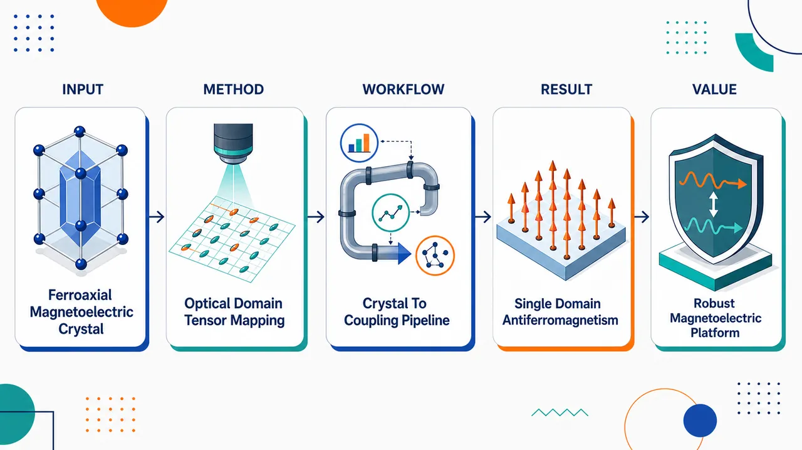
研究问题SrMn₂Ni₆Te₃O₁₈ 单晶是否能作为稳定的铁轴型磁电材料：其 ferroaxial 畴是否会形成可观测的单畴状态，Mn²⁺/Ni²⁺ 磁矩如何有序，磁点群 6/m′ 允许的磁电张量是否能被完整激活，并且这些特征是否能在 Sr–Pb 替换下保持稳定。创新方法Aha 点是把“单晶生长 + 电场诱导光学旋转成像 + 中子衍射 + 完整磁电张量测量”组合起来：用光学旋转空间图像直接显影 ferroaxial 畴分布，确认单晶倾向形成单一 FA domain；再用磁化和中子衍射锁定 83 K 反铁磁序与 c 轴共线 bidirector 磁结构，最后逐项检测 6/m′ 对称性允许的全部独立磁电张量分量。工作流程输入为 SrMn₂Ni₆Te₃O₁₈ 铁轴型氧化物单晶；首先进行结构与光学表征，用电场诱导光学旋转成像绘制 ferroaxial 畴空间分布；随后通过磁化测量和中子衍射确定 Mn²⁺/Ni²⁺ 在 Tₙ = 83 K 的反铁磁有序及 c 轴共线磁结构；接着测量磁点群 6/m′ 允许的磁电张量分量，重点追踪 χ₃₃ 随温度变化；最后与同构 PbMn₂Ni₆Te₃O₁₈ 对比，判断 Sr–Pb 替换对铁轴性和磁电异常的影响。关键结果SrMn₂Ni₆Te₃O₁₈ 单晶倾向形成单一 ferroaxial domain；Mn²⁺ 和 Ni²⁺ 磁矩在 83 K 同时进入反铁磁有序，形成沿 c 轴的共线 bidirector-type 反铁磁结构；磁点群 6/m′ 允许的全部独立磁电张量分量均被检测到；χ₃₃ 分量出现显著温度异常，表现为峰值和符号反转；PbMn₂Ni₆Te₃O₁₈ 中也出现类似单畴倾向和 χ₃₃ 异常。应用价值该研究证明 AB₂C₆Te₃O₁₈ 结构框架是可化学替换、物性鲁棒的 ferroaxial-type 磁电材料平台，可用于设计具有单畴铁轴序、反铁磁序、可调磁电张量和电场调控光学旋转响应的新型多铁/磁电功能材料。第一部分：核心概览 (Overview)
该研究实现了铁轴型磁性氧化物 SrMn₂Ni₆Te₃O₁₈ 单晶生长，并系统表征其结构、磁性、磁电与光学性质。核心贡献在于确认该材料倾向形成单一 ferroaxial domain，在 83 K 出现 Mn²⁺/Ni²⁺ 反铁磁有序，并检测到磁点群 6/m′ 允许的全部独立磁电张量分量。其意义在于证明 Sr–Pb 替换不破坏该结构框架中的铁轴性与磁电异常，扩展了 ferroaxial-type 磁电材料平台。
---
第二部分：结构化快速回顾
《Single-crystal growth and magnetic, magnetoelectric, and optical properties of ferroaxial-type SrMn₂Ni₆Te₃O₁₈》（None，）
背景
SrMn₂Ni₆Te₃O₁₈ 属于 ferroaxial-type 磁性氧化物家族 AB₂C₆Te₃O₁₈，其中 A = Pb, Sr；B = Mn, Cd；C = Ni, Co。该类材料因兼具铁轴结构自由度、反铁磁序、磁电效应与光学旋光响应而具有研究价值。
方法
成功制备 SrMn₂Ni₆Te₃O₁₈ 单晶，并系统开展 structural、magnetic、magnetoelectric、optical 表征。关键手段包括：
- 电场诱导光学旋转空间成像，用于观察 ferroaxial domain 分布；
- 磁化测量与中子衍射，用于确定磁转变温度和磁结构；
- 磁电张量测量，用于检验磁点群 6/m′ 所允许的磁电响应。
结果
SrMn₂Ni₆Te₃O₁₈ 单晶倾向形成单一 ferroaxial domain。Mn²⁺ 和 Ni²⁺ 磁矩在 Tₙ = 83 K 发生反铁磁有序，形成沿 c 轴 的 collinear bidirector-type antiferromagnetic structure。磁点群 6/m′ 允许的全部独立磁电张量分量均被检测到，其中 χ₃₃ 出现显著温度异常，包括峰值与符号反转。
讨论
SrMn₂Ni₆Te₃O₁₈ 与同构化合物 PbMn₂Ni₆Te₃O₁₈ 表现出相似特征：均倾向形成单一 ferroaxial domain，并在 χ₃₃ 分量中出现类似温度依赖异常。这表明在该结构框架内，ferroaxial 特性与磁性特征对 Sr–Pb 替换具有鲁棒性。
局限
可核验信息未给出以下关键细节：
- 单晶生长条件、助熔剂或温度程序；
- 晶体尺寸、取向、畴成像空间分辨率；
- 磁化曲线具体数值、磁矩大小、中子衍射精修参数；
- 各磁电张量分量的绝对数值、误差条与统计显著性；
- 光学旋转角度、电场强度、频率或测量几何。
结论
SrMn₂Ni₆Te₃O₁₈ 是一个具有稳定 ferroaxial 单畴倾向、c 轴共线反铁磁序和完整磁电张量响应的 ferroaxial-type 磁电材料。Sr/Pb 位点替换不显著破坏该家族中的关键磁电与铁轴物理，说明 AB₂C₆Te₃O₁₈ 框架是研究铁轴性驱动磁电耦合的稳健平台。
---
第三部分：逐章节冷凝解析 (Section-by-Section Condensing)
Abstract
#### Single-crystal growth was achieved
SrMn₂Ni₆Te₃O₁₈ 单晶被成功制备，这是开展各向异性磁性、磁电张量、光学旋转与 ferroaxial domain 成像的前提。摘要中的直接证据为：*"Single crystals of SrMn₂Ni₆Te₃O₁₈, a member of the ferroaxial-type magnetic oxide family AB₂C₆Te₃O₁₈ (A = Pb, Sr; B = Mn, Cd; C = Ni, Co), have been successfully grown"*。
该句明确给出材料化学式、所属家族以及单晶制备成功这一基础结果。
#### The compound belongs to a ferroaxial-type oxide family
该材料属于 ferroaxial-type magnetic oxide family AB₂C₆Te₃O₁₈。该结构家族的可替换位点包括 A = Pb, Sr；B = Mn, Cd；C = Ni, Co，说明其具备化学调控空间。原文证据为：*"a member of the ferroaxial-type magnetic oxide family AB₂C₆Te₃O₁₈ (A = Pb, Sr; B = Mn, Cd; C = Ni, Co)"*。
这里的关键点不是单一材料性质，而是一个可系统比较的结构-化学平台。
#### Multiple physical properties were systematically examined
研究对象覆盖 structural、magnetic、magnetoelectric、optical properties，表明分析不是单一性质测量，而是围绕 ferroaxial-type 材料的多物理量耦合展开。原文证据为：*"their structural, magnetic, magnetoelectric, and optical properties have been systematically studied"*。
该组合尤其重要，因为 ferroaxial domains 需要结构/光学信息，antiferromagnetic order 需要磁学/中子信息，magnetoelectric tensor 需要磁电测量验证。
#### Electric-field-induced optical rotation reveals preferential single ferroaxial domains
通过电场诱导光学旋转的空间分布成像，观察到单晶倾向形成单一 ferroaxial domain。原文证据为：*"Imaging of the spatial distribution of electric-field-induced optical rotation reveals that the single crystals preferentially form single ferroaxial (FA) domains"*。
这一结果具有较强结构物理意义：ferroaxial domain 通常对应轴性畴变体，若样品天然偏向单畴，则有利于获得宏观非抵消的磁电/光学响应。
#### Antiferromagnetic ordering occurs at 83 K
Mn²⁺ 与 Ni²⁺ 磁矩在 Tₙ = 83 K 同时进入反铁磁有序状态。原文证据为：*"Magnetization and neutron diffraction measurements show that Mn²⁺ and Ni²⁺ magnetic moments order antiferromagnetically at Tₘ̊ N = 83 K"*。
这里的硬核数值是 Tₙ = 83 K，实验依据是磁化测量与中子衍射两类互补技术。
#### The magnetic structure is c-axis collinear bidirector-type antiferromagnetic
磁结构被确定为沿 c 轴 的共线 bidirector-type 反铁磁结构。原文证据为：*"forming a c-axis collinear bidirector-type antiferromagnetic structure"*。
“c-axis collinear”说明有序磁矩方向与晶体学 c 轴相关且磁矩排列为共线；“bidirector-type”暗示存在两个反平行等价方向组成的反铁磁指向矢结构。
#### All independent magnetoelectric tensor components allowed by 6/m′ were detected
磁点群 6/m′ 所允许的全部独立磁电张量分量均被实验检测到。原文证据为：*"All independent magnetoelectric tensor components allowed by the magnetic point group 6/mprⁱme have been detected"*。
这一点说明磁电响应与对称性分析一致，不只是某一个偶然分量出现，而是完整张量结构得到验证。
#### The χ₃₃ component shows a strong anomaly with peak and sign reversal
磁电张量中的 χ₃₃ 分量表现出显著温度依赖异常，包括峰值与符号反转。原文证据为：*"the ḩi₃₃ component exhibits a pronounced temperature-dependent anomaly, including a peak and a sign reversal"*。
χ₃₃ 通常对应沿 3 方向，即晶体学 c 轴方向相关的纵向磁电响应；符号反转意味着该方向上的磁电耦合机制随温度发生竞争或主导项切换。
#### PbMn₂Ni₆Te₃O₁₈ shows analogous ferroaxial-domain and χ₃₃ behavior
同构化合物 PbMn₂Ni₆Te₃O₁₈ 也表现出单一 ferroaxial domain 倾向以及类似 χ₃₃ 异常。原文证据为：*"Preferential formation of single FA domains and a similar ḩi₃₃ anomaly are also observed in the isostructural compound PbMn₂Ni₆Te₃O₁₈"*。
这为比较 Sr/Pb A 位替换效应提供了直接参照。
#### Ferroaxial and magnetic characteristics are robust against Sr–Pb replacement
Sr–Pb 替换并未破坏该结构框架中的 ferroaxial 与磁性特征。原文证据为：*"These findings suggest that the ferroaxial and magnetic characteristics within this structural framework are robust against Sr-Pb replacement"*。
这一结论将单材料发现提升为结构家族规律：A 位离子变化不显著改变核心 ferroaxial/magnetic physics。
---
Metadata and bibliographic information
#### The work is an arXiv preprint in condensed matter materials science
该研究登记于 arXiv:2604.21460，学科分类为 Condensed Matter > Materials Science，同时关联 Strongly Correlated Electrons。原始信息为：*"Subjects: Materials Science (cond-mat.mtrl-sci) ; Strongly Correlated Electrons (cond-mat.str-el)"*。
这说明研究定位兼具材料制备与表征以及关联电子/磁性物理属性。
#### The preprint was submitted and revised in 2026
记录显示初版提交于 2026 年 4 月 23 日，修订版为 2026 年 6 月 23 日。原始信息为：*"Submitted on 23 Apr 2026 ( v1 ), last revised 23 Jun 2026 (this version, v2)"*。
版本信息表明当前内容对应 v2。
#### The DOI and citation identifier are available
该预印本具有 arXiv DOI 信息和引用格式。原始信息为：*"https://doi.org/10.48550/arXiv.2604.21460"*，以及 *"Cite as: arXiv:2604.21460 [cond-mat.mtrl-sci]"*。
这使其具备可追踪引用标识。
---
原始章节标题缺失项
可核验材料仅包含 Abstract 与 arXiv 元数据，未包含完整 PDF 正文中的 Introduction、Experimental methods、Results、Discussion、Conclusion 等章节标题、图表、表格与补充材料。因此以下信息无法从已给文本中精确提取：
- 单晶生长路线、试剂比例、升温/降温程序、坩埚材料；
- X 射线衍射或结构精修参数，如空间群、晶格常数、R 因子；
- 磁化率曲线、磁各向异性、居里-外斯拟合、有效磁矩；
- 中子衍射峰索引、传播矢量、精修磁矩大小；
- 磁电张量所有独立分量的数值、单位、温度曲线；
- 光学旋转实验的电场大小、波长、样品厚度与空间分辨率；
- 与 PbMn₂Ni₆Te₃O₁₈ 的定量比较。
---
第四部分：深度理解与语言支持 (Understanding & Nuance)
1. 术语解析
#### Ferroaxial-type
Ferroaxial-type 指具有可同向排列的轴性结构自由度的晶体类型。这里的 “axial” 不是普通极性向量，而是与旋转、扭转、手性或轴性畸变相关的轴矢量。
语境证据为：*"ferroaxial-type magnetic oxide family AB₂C₆Te₃O₁₈"*。
与 ferroelectric 的差别在于：ferroelectric 对应可反转的电极化矢量；ferroaxial 对应可反转或成畴的轴性旋转自由度，不一定天然产生净电极化。
#### Ferroaxial domain / FA domain
FA domain 是 ferroaxial order 的畴结构。不同畴可能具有相反的轴性取向。
语境证据为：*"single crystals preferentially form single ferroaxial (FA) domains"*。
“preferentially form” 的微妙含义是“倾向于形成”，不等于所有晶体在所有区域都绝对单畴；它表达的是统计或实验观察上的优势趋势。
#### Electric-field-induced optical rotation
Electric-field-induced optical rotation 指施加电场后，材料使透射光偏振方向发生旋转的效应。
语境证据为：*"Imaging of the spatial distribution of electric-field-induced optical rotation"*。
这里的关键不是普通自然旋光，而是电场诱导的旋光变化，因此可用来映射与磁电/铁轴畴相关的空间分布。
#### Collinear bidirector-type antiferromagnetic structure
Collinear 表示磁矩沿同一直线方向排列；antiferromagnetic 表示相邻或相关子晶格磁矩反向抵消；bidirector-type 表示反铁磁序参量更适合用两个相反指向等价的 director 来描述，而非简单单向矢量。
语境证据为：*"forming a c-axis collinear bidirector-type antiferromagnetic structure"*。
“director” 与普通 “vector” 的区别在于：在某些反铁磁结构中，方向 +n 与 −n 在对称性上等价，类似液晶中的指向矢。
#### Magnetic point group 6/m′
6/m′ 是包含时间反演操作修饰的磁点群符号。撇号 ′ 表示相应对称操作与时间反演结合。
语境证据为：*"magnetic point group 6/mprⁱme"*。
磁点群决定哪些磁电张量分量在对称性上允许非零。若某分量被禁止，理想晶体中不应出现线性磁电响应；若被允许，则需要实验测量其大小与温度依赖。
---
2. 疑难查证
#### 为什么 ferroaxial domain 能通过电场诱导光学旋转成像？
ferroaxial order 本身对应一种轴性结构自由度，它不一定像铁电体那样直接表现为净电极化。但当材料同时具有特定磁点群、磁电耦合和光学各向异性时，施加电场可以改变光学响应，使不同 ferroaxial domain 产生不同符号或不同强度的旋光信号。
因此，电场诱导光学旋转的空间图像可以作为 ferroaxial domain 的间接显微镜。摘要中的依据是：*"Imaging of the spatial distribution of electric-field-induced optical rotation reveals that the single crystals preferentially form single ferroaxial (FA) domains"*。
#### χ₃₃ 的峰值与符号反转意味着什么？
χ₃₃ 是磁电张量中沿 3 方向的分量，通常对应晶体学 c 轴方向。若用线性磁电效应表达，可理解为：
[
Pᵢ = sumⱼ ḩiᵢⱼ Hⱼ
]
或等价地：
[
Mᵢ = sumⱼ ḩiⱼᵢ Eⱼ
]
其中 χ₃₃ 描述 c 轴方向磁场诱导 c 轴方向电极化，或 c 轴方向电场诱导 c 轴方向磁化的线性耦合强度。
峰值表示在某一温区磁电耦合增强；符号反转表示同一外场方向下，诱导响应方向发生翻转。这通常暗示至少两个贡献项在竞争，例如：
- 不同磁性子晶格 Mn²⁺ 与 Ni²⁺ 的贡献方向相反；
- 磁各向异性随温度变化；
- 磁电耦合项中不同微观机制权重发生交叉；
- 畴或反铁磁序参量的热演化改变有效响应符号。
摘要中的直接依据为：*"the ḩi₃₃ component exhibits a pronounced temperature-dependent anomaly, including a peak and a sign reversal"*。
#### 为什么 Sr–Pb 替换的鲁棒性重要？
Sr²⁺ 与 Pb²⁺ 虽同为 A 位候选离子，但 Pb 常具有更强的立体化学活性和较强自旋轨道相关效应，而 Sr 更接近普通碱土离子。若 Sr/Pb 替换后 ferroaxial domain 倾向、反铁磁结构和 χ₃₃ 异常仍保留，说明核心物理不依赖某个特定 A 位元素，而主要来自 AB₂C₆Te₃O₁₈ 结构框架及其磁性子晶格。
摘要中的依据为：*"These findings suggest that the ferroaxial and magnetic characteristics within this structural framework are robust against Sr-Pb replacement"*。
---
第五部分：创新评估与关联 (Synthesis & Novelty)
1. 创新性判断
#### First key novelty: SrMn₂Ni₆Te₃O₁₈ single crystals became experimentally accessible
新颖性首先体现在 SrMn₂Ni₆Te₃O₁₈ 单晶成功生长。单晶是解析磁各向异性、磁电张量、光学旋转空间分布和 ferroaxial domain 的必要条件。摘要中的依据为：*"Single crystals of SrMn₂Ni₆Te₃O₁₈ ... have been successfully grown"*。
过去若主要停留在多晶或相关同构物研究，关键张量性质与畴结构难以可靠分辨。
#### Second key novelty: ferroaxial domain state was spatially imaged
通过电场诱导光学旋转空间成像直接揭示单晶倾向形成单一 FA domain。证据为：*"Imaging of the spatial distribution of electric-field-induced optical rotation reveals that the single crystals preferentially form single ferroaxial (FA) domains"*。
这不仅是性质测量，而是把 ferroaxial order 的畴结构可视化，解决了宏观磁电响应是否可能被多畴平均抵消的问题。
#### Third key novelty: magnetic structure was established by magnetization and neutron diffraction
Mn²⁺/Ni²⁺ 双磁性离子子晶格在 83 K 共同形成反铁磁序，并被确定为 c-axis collinear bidirector-type antiferromagnetic structure。证据为：*"Magnetization and neutron diffraction measurements show that Mn²⁺ and Ni²⁺ magnetic moments order antiferromagnetically at Tₘ̊ N = 83 K"* 以及 *"forming a c-axis collinear bidirector-type antiferromagnetic structure"*。
该结果解决了磁电张量分析所需的磁对称性基础问题。
#### Fourth key novelty: complete symmetry-allowed magnetoelectric tensor components were detected
磁点群 6/m′ 允许的全部独立磁电张量分量均被检测到。证据为：*"All independent magnetoelectric tensor components allowed by the magnetic point group 6/mprⁱme have been detected"*。
这比单独报告某一个磁电响应更强，因为它验证了材料的完整磁电张量结构与磁点群约束之间的一致性。
#### Fifth key novelty: χ₃₃ anomaly provides a sensitive probe of microscopic coupling
χ₃₃ 的温度依赖异常，尤其是峰值和符号反转，为理解 ferroaxial-type 磁电耦合机制提供了关键线索。证据为：*"the ḩi₃₃ component exhibits a pronounced temperature-dependent anomaly, including a peak and a sign reversal"*。
符号反转通常比单调增强/减弱更有信息量，因为它暗示不同磁电贡献之间存在竞争或补偿。
#### Sixth key novelty: Sr–Pb substitution robustness was experimentally supported
同构 PbMn₂Ni₆Te₃O₁₈ 中也观察到单一 FA domain 倾向和类似 χ₃₃ 异常，支持 ferroaxial 与磁性特征对 Sr–Pb 替换具有鲁棒性。证据为：*"Preferential formation of single FA domains and a similar ḩi₃₃ anomaly are also observed in the isostructural compound PbMn₂Ni₆Te₃O₁₈"*，以及 *"robust against Sr-Pb replacement"*。
这一点把研究从单一化合物推进到结构家族规律，为后续通过 A/B/C 位点替换调控磁电效应提供依据。
2. 解决的前人问题
- 单晶可获得性问题：SrMn₂Ni₆Te₃O₁₈ 的单晶生长为各向异性与张量性质测量提供样品基础。
- ferroaxial domain 可视化问题：电场诱导光学旋转成像确认单畴倾向，降低多畴平均导致宏观信号消失的疑虑。
- 磁结构不确定性问题：磁化与中子衍射共同确定 Tₙ = 83 K 和 c-axis collinear bidirector-type antiferromagnetic structure。
- 磁电张量完整性问题：所有由 6/m′ 允许的独立分量均被检测，而非只验证部分响应。
- 化学替换稳定性问题：Sr/Pb 替换不破坏 ferroaxial 与 magnetic characteristics，说明该类材料平台具有可拓展性。
-
16
📊 含图深析
📄 摘要：研究外磁场下方格 J1-J2 海森堡反铁磁的基态和有限温性质，重点为 J2≈J1/2 的强受挫区。分析 h-T 相图及有限温进入 up-up-up-down 态的相变；该态由热涨落和量子涨落稳定，在量子情形表现为饱和磁化一半的平台。
💡 亮点：方格 J1-J2 反铁磁在强受挫区出现涨落稳定的 up-up-up-down 态和 1/2 磁化平台。结果连接受挫磁体的有限温相变与场诱导量子平台。
📖 展开分析 + 配图
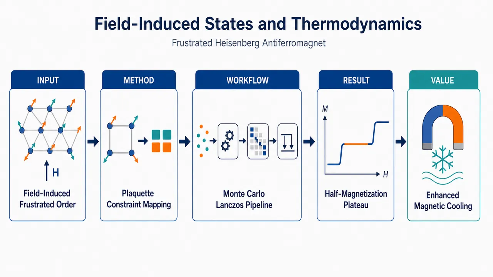
研究问题外磁场如何在强受挫方格晶格 J1–J2 海森堡反铁磁体中诱导有序态？重点追问 J2/J1≈0.5 附近的经典无限简并和量子涨落，是否会形成 uuud 共线态、m=1/2 磁化平台，以及饱和场附近是否出现异常热力学响应。创新方法把特殊受挫点 J2/J1=1/2 的哈密顿量改写为方形 plaquette 总自旋约束，直观看到“每个方格总磁化固定但微观排布高度简并”的机制；再用大尺度经典 Monte Carlo 与零温/有限温 Lanczos 联合比较，揭示热涨落与量子零点涨落选择 uuud 态的方式并不等价。工作流程输入 J1–J2 方格反铁磁模型、外磁场 h 和温度 T；在经典极限中用 Metropolis 加 over-relaxation Monte Carlo 扫描 h–T 相图、磁化率和结构因子；在 s=1/2 量子极限中用 Lanczos 精确对角化计算磁化曲线、m=1/2 平台宽度和自旋关联，再用 FTLM/TPQ 计算比热与磁热响应；最终输出场诱导相图、平台区间和饱和场异常。关键结果经典模型在 T≲J1/10 时由热涨落稳定 uuud 相，但只在 J2/J1≈0.5 极窄窗口内出现，且经典磁化仅有 m≈1/2 附近的凹陷而非严格平台；量子 s=1/2 模型的 m=1/2 uuud 平台主要稳定在 0.52≲J2/J1≲0.7；J2/J1=0.5 处饱和场出现单磁子线状简并，导致靠近饱和的磁化曲线异常陡峭并增强磁热效应。应用价值为受挫量子磁体中“涨落选择有序”的可视化判据提供基准：uuud 平台、结构因子、比热峰和磁热效应可作为实验识别信号；同时指出线状低能简并能显著放大低温磁热响应，对寻找磁制冷候选材料和理解强受挫方格磁体具有参考价值。第一部分：核心概览
该研究系统解析方格晶格受挫 (J₁)–(J₂) 海森堡反铁磁体在外磁场中的基态与有限温热力学，核心聚焦强受挫点 (J₂/J₁approx 0.5)。主要贡献在于：对经典模型给出更大尺度 Monte Carlo 的 (h)–(T) 相图，确认热涨落稳定 up-up-up-down（uuud） 态；对自旋 (s=1/2) 量子极限用零温与有限温 Lanczos 方法刻画 (m=1/2) 平台、关联函数与磁热效应。该工作把零场争议之外的场诱导有序态、热/量子 order-by-disorder 差异、饱和场简并导致的热力学异常连接起来，处于受挫量子磁性研究的前沿交叉位置。
---
第二部分：结构化快速回顾
《Field-induced states and thermodynamics of the frustrated Heisenberg antiferromagnet on a square lattice》（None，）
背景
方格晶格 (J₁)–(J₂) 反铁磁模型是受挫量子磁性的标准模型。零场 (s=1/2) 情形在 (J₂/J₁sim0.5) 附近存在磁无序量子相，但其是否为有隙、自旋液体或价键固体仍有争议。外磁场下的 (m=1/2) 磁化平台与有限温相变提供了绕开零场争议、探测受挫涨落选择机制的新窗口。
方法
经典极限中，将自旋视为三维单位矢量，并在 (J₂/J₁₌₁/2) 利用方形 plaquette 总自旋 (mathbf L_α) 重写哈密顿量；有限温采用单自旋翻转 Metropolis + microcanonical over-relaxation Monte Carlo。量子极限 (s=1/2) 中，零温采用 Lanczos exact diagonalization，最大使用 (N=52) 晶格；有限温采用 FTLM 与 TPQ 两类有限温 Lanczos 实现。
结果
经典模型在 (Tłesssim J₁/10) 稳定 uuud 相，其区域相对 (h_c=hₘ̊ ₛₐₜ/2) 不对称并向低场延伸；邻近存在 2:1:1 与 3:1 supersolid 区域。量子模型中，(m=1/2) 平台主要稳定在 (0.52łesssim J₂/J₁łesssim0.7)，而 (J₂/J₁₌₀.5) 附近无明显平台但饱和附近极陡。(J₂/J₁₌₀.5) 饱和场出现一维线状单磁子简并，增强磁热效应。
讨论
经典热涨落与量子零点涨落对 order-by-disorder 的选择并不等价：经典 uuud 态只在 (J₂/J₁approx0.5) 极窄范围出现，而量子 (s=1/2) 平台显著向 (J₂/J₁>0.5) 扩展。差异源于热涨落主要受低能模控制，而量子零点能中高能磁子同等参与。
局限
零场 (h=0,T=0) 中间量子相性质并非研究目标。量子有限尺寸效应明显，尤其 (N=36,48) 方/矩形与 (N=32,40,52) tilted clusters 呈现非单调尺寸行为；(m=1/3) 平台与 (J₂/J₁₌₀.6) 的零场自旋隙无法定论。BKT 边界未精确确定。
结论
外磁场揭示了强受挫方格反铁磁体中由涨落选择的丰富相结构。经典有限温与量子零温均支持 uuud (m=1/2) 场诱导有序，但稳定区域和机制显著不同；(J₂/J₁₌₁/2) 饱和场简并带来异常强的低温热力学响应，是理解受挫磁体磁热效应的重要基准。
---
第三部分：逐章节冷凝解析
Abstract
- Field-driven frustrated square-lattice antiferromagnet is the central object
研究对象是外磁场中的方格晶格 (J₁)–(J₂) 海森堡反铁磁体，重点落在强受挫区 (J₂approx J₁/2)。摘要直接界定问题：*"We investigate the ground-state and finite-temperature properties of the (J₁)-(J₂) Heisenberg antiferromagnet on the square lattice in the presence of an external magnetic field."* 这一设定同时覆盖零温基态与有限温热力学。
- The (h)–(T) phase diagram targets the thermally selected uuud state
核心相图是磁场–温度相图，重点是有限温进入 up-up-up-down（uuud） 态的相变；量子情形中该态表现为饱和磁化一半的平台。摘要给出的关键表述是：*"The (h)-(T) phase diagram is investigated with particular emphasis on the finite-temperature transition into the “up-up-up-down” state that is stabilized by thermal and quantum fluctuations and manifests itself as a plateau at one half of the saturation magnetization in the quantum case."*
- Saturation-field degeneracy enhances the magnetocaloric effect
在 (J₂₌J₁/2) 的饱和场处，基态简并导致增强的磁热效应，即绝热变场时温度响应被显著放大。摘要明确指出：*"We also discuss the enhanced magnetocaloric effect associated to the ground-state degeneracy that arises at the saturation field for (J₂₌J₁/2)."*
- Classical and quantum limits are treated with complementary numerical tools
经典极限采用经典 Monte Carlo，量子极限 (s=1/2) 采用零温与有限温 Lanczos。方法链条为：*"For reference, we first study the classical case by classical Monte Carlo simulations. Then we turn to the extreme quantum limit of spin-1/2 where we perform zero- and finite-temperature Lanczos calculations."*
---
I Introduction
- The (J₁)–(J₂) square-lattice model is an archetype of frustrated magnetism
模型含最近邻反铁磁耦合 (J₁>0)、次近邻反铁磁耦合 (J₂ge0) 与外场 (h)，哈密顿量为
[
mathcal H=J₁sumłₐₙgₗₑ ᵢ,ⱼåₙgₗₑmathbf sᵢḑotmathbf sⱼ₊
J₂sumłₐₙgₗₑ!łₐₙgₗₑ ᵢ,ⱼåₙgₗₑ!åₙgₗₑmathbf sᵢḑotmathbf sⱼ
-hsumᵢ sᵢ^z .
]
其学术定位为：*"The Heisenberg antiferromagnet with nearest-neighbor, (J₁>0), and next-nearest-neighbor bonds, (J₂≥0), called (J₁)-(J₂) model, or frustrated square lattice antiferromagnet (FSAFM), is the archetypical frustrated spin model."*
- The model originated in cuprate Néel-order breakdown studies
该模型最初与高温铜氧化物超导体掺杂后 Néel 反铁磁态破坏相关：*"The (J₁)–(J₂) square-lattice model was introduced in the late 1980s with the aim to describe the breakdown upon doping of the Néel antiferromagnetic (NAF) state in the high-temperature cuprate superconductors."*
- Zero-field (s=1/2) physics contains a magnetically disordered intermediate phase
大量方法已经形成基本共识：在 (J₂/J₁approx0.5) 附近，自旋 (s=1/2) 模型存在自旋旋转不变、无磁长程序的量子相。关键句为：*"consensus has been achieved that the (J₁)-(J₂) model in the extreme quantum limit (s=1/2) exhibits a magnetically disordered spin-rotation-invariant quantum phase in a small region (J₂c¹<J₂<J₂c²) around (J₂₌₀.5J₁)."*
- Semiclassical phases and critical ratios are comparatively well established
小 (J₂/J₁) 为 Néel antiferromagnetic LRO，大 (J₂/J₁) 为 collinear antiferromagnetic LRO；典型临界估计为 (J₂c¹=0.44-0.46)、(J₂c²=0.59-0.6)。原文给出：*"The semi-classical ground-state phases of the model, namely the Néel antiferomagnetic LRO at small (J₂/J₁<J₂c¹) and the collinear antiferromagnetic LRO at large (J₂/J₁>J₂c²), are well understood."* 以及 *"some estimates are (J₂c¹=0.44-0.46) and (J₂c²=0.59-0.6)."*
- The intermediate phase remains controversial, especially its excitation gap
中间无序相可能是有隙相、无隙自旋液体或价键相，争议集中在激发隙是否存在。表述为：*"Concerning the nature of the intermediate magnetically disordered quantum phase, there is an ongoing active controversial debate."* 以及 *"A particular controversy concerns the very existence of an excitation gap in the intermediate quantum phase."*
- Recent methods disagree on spin-liquid and valence-bond interpretations
SU(2)-DMRG 给出 (0.44<J₂/J₁<0.5) 无隙自旋液体与 (0.5<J₂/J₁<0.61) 有隙 plaquette valence bond phase；另一研究把分界移动到 (J₂/J₁approx0.56)；近期 MPS 甚至否认自旋液体存在。关键引文包括：*"report on a gapless spin liquid for (0.44<J₂/J₁<0.5) and a gapped plaquette valence bond phase for (0.5<J₂/J₁<0.61)."* 以及 *"a recent matrix-product state method claims that there is no spin-liquid phase in this model."*
- Experimental relevance exists but ideal strongly frustrated material is still missing
候选材料包括 VOMoO(₄)、Li(₂)VOSiO(₄)、Li(₂)VOGeO(₄)、BaCdVO(PO(₄))(₂)、RbMoOPO(₄)Cl 等，但尚无交换比正好适合磁无序基态的材料。原文强调：*"so far no magnetic material with an exchange-parameter ratio (J₂/J₁) suitable for a magnetically disordered ground-state phase has yet been found."*
- Field-induced magnetization features motivate the present focus
强受挫区 (J₂/J₁approx0.5) 中，零场无磁长程序，但磁化曲线可出现明显的 (1/2) 平台：*"in the regime of strong frustration (J₂/J₁approx0.5), where the zero-field quantum ground state does not exhibit magnetic LRO, evidence for a well-pronounced plateau at (1/2) of saturation was found."*
- The study deliberately avoids resolving the zero-field controversy
研究重心是外场零温与有限温行为，而非重新判定 (h=0,T=0) 中间相性质。范围界定为：*"we revisit the behavior of the frustrated square-lattice antiferromagnet in an external magnetic field at zero and at finite temperature, where we focus on the regime around (J₂/J₁₌₀.5)."* 以及 *"here we do not intend to contribute to this particular question that is intensively studied by many other authors."*
---
II Classical model
II.1 Ground states
- At (J₂/J₁₌₁/2), classical frustration produces infinite degeneracy below saturation
经典自旋视为三维单位矢量，在特殊比值 (J₂/J₁₌₁/2) 下，所有低于饱和场的磁场中存在无限经典简并：*"For the special ratio of the two exchange constants (J₂/J₁₌₁/2), magnetic frustration is enhanced featuring an infinite classical degeneracy for all magnetic fields below the saturation."*
- Plaquette total spin rewrites the Hamiltonian exactly
定义每个方形 plaquette 的总自旋
[
mathbf L_α=sumᵢᵢₙαmathbf sᵢ,
]
在 (J₂₌J₁/2) 时哈密顿量可写为
[
mathcal H=frac14sum_αłeft(J₁mathbf L_α²⁻hL_α^zi̊ght).
]
原文说明该变换具有一般性：*"So far, this is an exact transformation valid for any value of the spin."*
- Ground-state constraint fixes plaquette magnetization but not microscopic spin pattern
单 plaquette 能量最小化给出
[
L_α^z=frach2J₁.
]
任一满足每个 plaquette 此约束的构型均为经典基态：*"Any classical spin configuration that satisfies the above constraint for every square plaquette yields the lowest ground-state energy."*
- Classical magnetization is linear and saturation field equals (8J₁)
由 (m=L_α^z/4=h/(8J₁₎) 得到 (hₘ̊ ₛₐₜ=8J₁)。零温经典磁化曲线为直线：*"At (T=0), the classical magnetization curve (m(h)) is a straight line up to (hₘ̊ ₛₐₜ)."*
- Single-block ground-state manifold has four continuous degrees of freedom
四个自旋有八个角变量，约束 (L_α^z=h/(2J₁₎) 给出三个条件，绕场方向的 (O(2)) 破缺去掉一个角，自由度为四个连续变量：*"Overall, this counting yields four continuous variables to describe various classical ground states for a single block."*
- The uuud state is energetically selected by fluctuation effects near half saturation
在 (hₘ̊ ₛₐₜ/2) 附近，uuud 构型具有最低能，并产生 (m=1/2) 平台；更高场为保留 3:1 分裂的倾斜态，低于 (m<1/2) 为 2:1:1 非共线结构。原文为：*"The “up-up-up-down” ((uuud)) configuration has the lowest energy for magnetic fields around (hₘ̊ ₛₐₜ/2) and produces the magnetization plateau with (m=1/2)."*
- The 2:2 state is classically allowed over the full field range but fluctuation stability is low-field only
2:2 态在 (0<h<hₘ̊ ₛₐₜ) 全区间属于经典基态之一，但在有效双二次交换存在时只在低场稳定：*"The 2:2 state, which is one of the classical ground states in the entire range (0<h<hₘ̊ ₛₐₜ), is stable, in the presence of a biquadratic exchange, in the low-field region only."*
- Extending one plaquette to the full lattice creates additional degeneracy
由于 plaquettes 共享边，一个自旋属于多个 plaquettes，单块解扩展到全晶格时产生额外简并：*"Since the plaquettes (α) share edges, one spin participates in several plaquettes. As a result, one faces the problem of extending a single-block solution to the entire lattice."*
- The uuud state supports extensive zero-energy line deformations
在最对称的 uuud 排列中，up-down 交替线可任意角旋转而不改变经典能量：*"The alternating up-down spins along any of these lines can be freely rotated around an arbitrary angle without changing the total classical energy."* 这使 uuud 态拥有最多可变形模式，因而容易被热涨落通过 order-by-disorder 选择：*"Since the (uuud) state permits a maximum of such deformations, one may expect it to be selected by thermal fluctuations via the “order-by-disorder” mechanism."*
- Thermal and quantum order-by-disorder need not select states identically
选择机制中存在局部双二次有效耦合与全局零能模熵贡献的竞争；热涨落与量子涨落作用不同：*"A subtle property of the order-by-disorder mechanism is a competition between a local fluctuation contribution manifested by the effective biquadratic coupling and the extended zero-energy modes related to spin distribution over the entire lattice."* 以及 *"there is the possibility of distinct effects from the thermal fluctuations ... and from the quantum fluctuations."*
---
II.2 Field-temperature phase diagram
- Large-scale classical Monte Carlo improves previous results
有限温相图通过更大晶格 Monte Carlo 获得，算法为单自旋翻转 Metropolis + microcanonical over-relaxation：*"we present new classical Monte-Carlo results on significantly larger lattices compared to the previous studies."* 以及 *"Simulations have been performed using the single-spin flip Metropolis algorithm in combination with the microcanonical over-relaxation moves."*
- Thermal fluctuations stabilize uuud below roughly (J₁/10)
在 (J₂/J₁₌₁/2) 时，(Tłesssim J₁/10) 出现热涨落稳定的 uuud 相，其稳定区相对 (h_c=0.5hₘ̊ ₛₐₜ) 不对称并显著向低场扩展：*"we observe the expected stabilization of the (uuud) phase by thermal fluctuations in the regime (Tłesssim J₁/10)."* 以及 *"The stability region is asymmetric around (h_c=0.5hₘ̊ ₛₐₜ) having a significant extent into the low-field part of the diagram."*
- 2:1:1 and 3:1 phases flank the uuud phase and behave as supersolids
uuud 下方与上方分别存在 2:1:1 与 3:1 非共线态，二者有纵向长程序与横向准长程序；在玻色子映射中为超固体，而 uuud 为密度波晶体绝缘态：*"there are sizable regions with the 2:1:1 and 3:1 states just below or above the (uuud) phase, respectively."* 以及 *"these two phases can be identified as supersolids, whereas the parent (uuud) phase is an insulating state with the density-wave crystal."*
- Finite-temperature magnetization shows a dip, not a true classical plateau
(T/J₁₌₀.03) 附近在 (młesssim1/2) 出现最明显小凹陷，但经典磁化曲线斜率仍有限，因此无严格平台：*"The main feature that emerges at intermediate fields is a small dip for (młesssim1/2) that is most pronounced for (T/J₁₌₀.03)."* 以及 *"The slope of the magnetization curve (m(h)) remains finite and thus one finds only a small dip but no strict plateau in the classical magnetization curve."*
- Improved Monte Carlo removes earlier hysteresis
新结果未再出现早期工作中的迟滞：*"the improved Monte Carlo results do not reproduce the hysteresis that appeared in earlier work."*
- Field derivative of magnetization locates field-induced transitions
零温下 (dm/dh=1/(8J₁₎)，有限温中 (dm/dh) 出现尖锐小峰，可作为相变信号；(hłesssim4J₁₌ₕₘ̊ ₛₐₜ/2) 处 (dm/dh) 下降。原文为：*"At zero temperature (m(h)) has a constant slope ... (dm/dh=1/(8J₁₎)."* 以及 *"we observe ... small but sharp and distinct maxima in (dm/dh), which may be taken as first indications of field-induced phase transitions."*
- Static structure factors distinguish uuud, supersolid, and quasi-LRO phases
结构因子定义为
[
Sαβ(mathbf Q)=frac1N²sumᵢ,ⱼłangle sᵢ^α sⱼ^βångle eⁱmathbf Qḑot⁽mathbf Rᵢ₋mathbf Rⱼ₎.
]
在 (T/J₁₌₀.05)、(L=32,64) 下，(2łesssim h/J₁łesssim4) 中纵向 (Szz) 在 (mathbf Qₘ̊ Néₑₗ=(π,π))、(mathbf Qₘ̊ ₛₜᵣ=(0,π)) 有长程序，而横向 (S^perp) 消失，符合 uuud：*"the longitudinal static structure factor (Szz) indicates presence of the long-range order both for (mathbf QNéₑₗ=(π,π)) and (mathbf Qₘ̊ ₛₜᵣ=(0,π)), whereas the transverse structure factor (S^perp) vanishes for (2łesssim h/J₁łesssim4). This is exactly the behavior expected for the (uuud) phase."*
- The 3:1 supersolid does not extend to saturation
在 (4łesssim h/J₁łesssim5)，纵向与横向 (mathbf Qₘ̊ ₛₜᵣ) 信号共存，符合 3:1 超固体；但该态并不延伸到 (hₘ̊ ₛₐₜ)，这与简单双二次 toy model 相反：*"For (4łesssim h/J₁łesssim5), we observe the coexistence of finite amplitudes both in (Szz) and in (S^perp(mathbf Qₘ̊ ₛₜᵣ)), exactly as expected for the 3:1 supersolid phase."* 以及 *"the supersolid 3:1 state does not extend all the way up to the saturation at (h=hₘ̊ ₛₐₜ)."*
- Low- and high-field transverse phases should exhibit BKT transitions
(h/J₁łesssim2) 与 (h/J₁gtrsim5) 中只有横向结构因子信号，破缺连续 (z) 轴旋转对称，因此二维有限温只能有准长程序；出相变属于 BKT 类：*"Since this corresponds to breaking of a continuous rotational symmetry around the (z) axis, the resulting order can be only a quasi-LRO at (T>0) with algebraic decay of spin-spin correlations."* 以及 *"Transitions out of these phases are expected to be in the Berezinskiĭ-Kosterlitz-Thouless (BKT) universality class."*
- The classical uuud state survives only in a very narrow window away from (J₂/J₁₌₀.5)
在 (T=0.06J₁)，(J₂/J₁₌₀.5±0.005) 的 (dm/dh) 中仍有尖锐异常，标志 uuud 边界；到 (J₂/J₁₌₀.51) 时 (dm/dh) 完全平坦，出现 canted Néel 与 stripe 态。关键引文：*"one can clearly observe sharp anomalies ... for (J₂/J₁₌₀.5±0.005)"* 以及 *"(dm/dh) remains completely flat for (J₂/J₁₌₀.51) featuring canted Néel and stripe states in the entire range of magnetic fields."*
- Thermal stabilization requires a delicate balance
当 (J₂/J₁≠1/2) 时，uuud 不再是零温经典基态，必须依靠有限温热涨落稳定；但 (Tgtrsim0.1J₁) 又会破坏 uuud 长程序。结论性表述为：*"one requires a delicate balance of sufficiently but not too strong thermal fluctuations to stabilize the (uuud) state, consistent with its disappearance when (J₂/J₁) deviates by about (0.01) from the degenerate ratio (1/2)."*
---
III Quantum model
- Single-magnon dispersion above saturation is analytically solvable for any spin (s)
饱和铁磁背景上的单磁子色散为
[
ømega(kₓ,k_y)=2słeft[J₁₍ₒ̧s kₓ₊ₒ̧s k_y)+2J₂ₒ̧s kₓₒ̧s k_yi̊ght]-4s(J₁₊J₂₎₊ₕ .
]
原文给出：*"the single-magnon dispersion above the ferromagnetically polarized background is a single-particle problem that is straightforward to solve."*
- Saturation field changes form at (J₂₌J₁/2)
若饱和转变为二阶量子相变，最小单磁子能量在 (hₘ̊ ₛₐₜ) 处为零，得到
[
hₘ̊ ₛₐₜ=
begincases
8sJ₁,&J₂łe J₁/2,
4s(J₁₊₂J₂₎,&J₂ge J₁/2.
endcases
]
原文为：*"we can determine the saturation field as (hₘ̊ ₛₐₜ=...)"*
- At (J₂₌J₁/2), magnon minima form degenerate lines
此时
[
ømega(kₓ,k_y)=2sJ₁[(1+o̧s kₓ₎₍₁₊ₒ̧s k_y)-4]+h,
]
并且 (ømega(kₓ,π)=ømega(π,k_y)=-8sJ₁₊ₕ)，即在 (kₓ₌π) 或 (k_y=π) 线上有简并极小：*"we find degenerate lines of minima for (h≥ hₘ̊ ₛₐₜ)."*
- Line degeneracy mirrors the classical degenerate manifold
单磁子线简并与经典 (J₂/J₁₌₁/2) 简并相呼应，尤其与 (m=1/2) uuud 相关的简并流形有关：*"This is reminiscent of the classical degeneracy discussed in Subsec. II.1, in particular the degenerate manifold evolving from the (uuud) state at (m=1/2)."*
---
III.1 Zero-temperature (s=1/2) phase diagram
- Lanczos exact diagonalization targets the extreme quantum limit
数值研究限制在 (s=1/2)，通过 Lanczos 求哈密顿量最小本征值与本征矢；利用 (S^z) 守恒分块。原文为：*"we now restrict to the extreme quantum limit (s=1/2). We employ the Lanczos method to find the minimal eigenvalues and -vectors of the Hamiltonian and thus determine its ground-state properties."*
- Hilbert-space dimension decreases with magnetization, enabling (N=52) near (mge1/2)
固定 (S^z) 的 Hilbert 空间维度为 (binomNN/2-S^z)，在 (S^z=0) 最大，随 (S^z) 增大而减小；因此 (mgtrsim1/2)、(S^zgtrsim N/4=13) 时可算到 (N=52)。原文为：*"The total Hilbert space for a given (S^z) and (N) spins 1/2 has dimension (Nḩoose N/2-S^z)."* 以及 *"we can push computations to the (N=52) lattice ... for (mgtrsim1/2), i.e., (S^zgtrsim N/4=13)."*
- The (N=52) cluster preserves rotation but breaks reflection symmetries
该有限团簇保留无限晶格的 (90ⁱ̧rc) 旋转对称，但破坏空间反射对称：*"this (N=52) lattice shares the (90ⁱ̧rc) rotational symmetry of the infinite lattice, but it breaks spatial reflection symmetries."*
---
III.1.1 Magnetization curves
- Thermodynamic magnetization curves are estimated from finite-size steps
有限尺寸磁化曲线通过最大可用系统的台阶中点连接外推；疑似平台则连接台阶角点。原文为：*"this estimate is in general obtained by connecting the midpoints of the finite-size steps for the largest available system size (N)."* 以及 *"The exception are suspected plateaux: here we use the corners of the steps instead."*
- The unfrustrated (J₂₌₀) case provides a smooth benchmark
(J₂₌₀) 的热力学极限磁化曲线光滑，具有向上曲率并在饱和处以对数奇异结束；这是二维量子自旋系统特征，并被二阶自旋波理论预测。原文为：*"we find a smooth curve in the thermodynamic limit with an upwards curvature that ends in a logarithmic singularity."* 以及 *"This behavior is characteristic of a two-dimensional quantum spin system."*
- At (J₂/J₁₌₀.5), no clear (m=1/2) plateau appears, but saturation is anomalously steep
强受挫点 (J₂/J₁₌₁/2) 无 (m=1/2) 附近特殊平台证据，因此外推曲线画成平滑；但靠近饱和极陡。原文为：*"we have no evidence for particular features around (m=1/2) and thus have drawn a smooth curve"* 以及 *"the transition to saturation is exceptionally steep in this case."*
- The steep saturation at (J₂/J₁₌₀.5) comes from one-magnon degeneracy and localized line excitations
该陡峭行为源于式 (9) 的单磁子谱简并，并导致沿水平或垂直线局域的激发；(L× L) 方形几何中到饱和的有限尺寸跳变为 (δ m=1/L)。原文为：*"This behavior can be traced to the degeneracy of the one-magnon spectrum arising at (J₂/J₁₌₁/2)."* 以及 *"This degeneracy gives rise to excitations localized along horizontal or vertical lines across the lattice and thus leads to a finite-size jump to saturation of size (δ m=1/L)."*
- In the thermodynamic limit, saturation should show a square-root singularity with logarithmic correction
饱和场处预计出现带对数修正的平方根奇异：*"In the thermodynamic limit, this is expected to give rise to a square-root singularity with a logarithmic correction at the saturation field (hₘ̊ ₛₐₜ)."*
- At (J₂/J₁₌₀.55), a stable (m=1/2) plateau emerges despite one outlier size
(N=48) 看似异常，但其他尺寸收敛到稳定 (m=1/2) 平台；平台临界场与 DMRG 结果定量相当。原文为：*"the (N=48) system appears to be an outlier, but the other system sizes converge to a stable (m=1/2) plateau."* 以及 *"the estimates of the lower and upper critical fields ... are in reasonable quantitative agreement."*
- The approach to (m=1/2) from below may signal a first-order quantum transition
(J₂/J₁₌₀.55) 中，磁化曲线从下方接近 (m=1/2) 时斜率很陡，可能是一阶量子相变迹象，但数据不足以定论：*"the slope of the magnetization curve is very steep when it approaches (m=1/2) from below."* 以及 *"This might be a signature of a first-order quantum phase transition, although the available data does not suffice to draw a definite conclusion."*
- At (J₂/J₁₌₀.6), the (m=1/2) plateau persists and may broaden
(J₂/J₁₌₀.6) 与 0.55 定性相似，平台可能更宽，并与 DMRG 一致：*"we find again an (m=1/2) plateau that might be even broader than in the previous case."* 以及 *"Our results are again consistent with the DMRG ones."*
- The predicted (m=1/3) plateau remains unresolved
Chern-Simons 理论曾预言 (m=1/3) 与 (m=1/2) 平台；但 (m=1/3) 严格平台只可能出现在系统尺寸可被 3 整除时，当前数据无法区分有限尺寸伪平台与真实平台。原文为：*"A Chern-Simons theory predicted a distinct (m=1/3) plateau in addition to the (m=1/2) one."* 以及 *"The appearance of a strict (m=1/3) plateau is in fact only possible for system sizes divisible by three."*
- Zero-field spin gap is included only where finite-size evidence supports it
(J₂/J₁₌₀.5) 与 0.55 外推中画出 (m=0) 平台，对应零场自旋隙；(J₂/J₁₌₀.6) 证据不一致，因此未画出。原文为：*"we have drawn an (m=0) plateau ... This corresponds to a spin gap in zero field."* 以及 *"we cannot exclude the existence of a small (m=0) plateau, i.e., spin gap for (J₂/J₁₌₀.6)."*
---
III.1.2 (m=1/2) plateau
- The (m=1/2) step width is computed from discrete ground-state energies
平台宽度定义为
[
Δ h=E(N/4+1)-2E(N/4)+E(N/4-1),
]
其中 (E(S^z)) 是 (h=0) 固定 (S^z) 基态能。原文为：*"we look at the width of the (m=1/2) step, calculated as (Δ h=E(N/4+1)-2E(N/4)+E(N/4-1))."*
- Finite-size behavior splits into geometry-dependent groups
(32łe Nłe52) 的有限团簇按几何形状分为两组：(N=36,48) 方/矩形几何与 (N=32,40,52) tilted cases；非单调尺寸效应使 (N→infty) 外推困难。原文为：*"the results fall into two groups, namely the square respectively rectangular geometries for (N=36) and (48) ... and the tilted cases (N=32), (40), and (52)."* 以及 *"This non-monotonic finite-size behavior renders an extrapolation to (N→infty) difficult."*
- The plateau stability window is estimated as (0.52łesssim J₂/J₁łesssim0.7)
尽管有限尺寸复杂，(Δ h) 在 (0.52łesssim J₂/J₁łesssim0.7) 明显增强，因此该区间作为 (m=1/2) 平台稳定区初估：*"we observe a clear and consistent enhancement of the (m=1/2) step size in the region (0.52łesssim J₂/J₁łesssim0.7), which we thus take as a first estimate for the stability region."*
- Connected longitudinal correlations subtract the uniform magnetization background
在 (N=52)、(m=1/2)、(S^z=13) 下，(łangle s_R^zångle=m/2=1/4)，因此纵向关联需减去背景 (1/16)。原文为：*"Note that (łangle s_R^zångle=m/2=1/4). We therefore subtract a background of (łangle s₀^zånglełangle s_R^zångle=1/16) from the longitudinal correlation function."*
- Transverse correlations dominate for (J₂/J₁łesssim0.5), consistent with transverse Néel order
低受挫侧，横向关联主导，对应 (J₂₌₀) 极限预期的 transverse Néel order：*"(i) For (J₂/J₁łesssim0.5) the transverse correlations dominate. This is consistent with Néel order in the transverse components."*
- Longitudinal correlations dominate and transverse correlations vanish in the uuud plateau regime
在 (0.52łesssim J₂/J₁<0.7)，横向关联基本消失，强纵向关联发展，符合共线 uuud (m=1/2) 平台：*"(ii) For (0.52łesssim J₂/J₁<0.7), the transverse correlations essentially vanish, but strong longitudinal ones develop. This is consistent with the collinear (uuud) state."*
- For (J₂/J₁>0.7), stripe-like transverse order replaces uuud correlations
大 (J₂) 区间纵向分量再次消失，横向分量出现新信号；(J₁₌₀) 时两个互穿方格晶格各自 Néel 有序，弱 (J₁>0) 诱导 stripe phase。原文为：*"(iii) For (J₂/J₁>0.7), the longitudinal components vanish again while a new signal develops in the transverse components."* 以及 *"A weak coupling (J₁>0) then leads to a “stripe” phase."*
- The combined evidence assigns three field-induced regimes
(Δ h) 与关联函数共同支持：(J₂/J₁łesssim0.52) 为无隙 transverse Néel，(0.52łesssim J₂/J₁łesssim0.7) 为 uuud 平台，(J₂/J₁gtrsim0.7) 为无隙 transverse stripe。原文总结为：*"Taken together, the data ... are consistent with an (uuud) plateau in the regime (0.52łesssim J₂/J₁łesssim0.7), gapless transverse Néel order for (J₂/J₁łesssim0.52), and gapless transverse stripe order for (J₂/J₁gtrsim0.7)."*
- Quantum and thermal order-by-disorder differ sharply
量子 (s=1/2) 中 uuud 稳定区显著偏向 (J₂/J₁>0.5)，而经典热涨落中在固定温度下 uuud 约为 (0.492łesssim J₂/J₁łesssim0.51) 的近对称窄窗口。原文为：*"These results ... are in sharp contrast with the thermal order by disorder for classical spins."* 以及 *"for a fixed (T) the (uuud) state appears rather symmetrically for (0.492łesssim J₂/J₁łesssim0.51) in the classical model."*
- High-energy magnons explain asymmetric quantum stabilization
大自旋 augmented spin-wave 理论表明 (1/2) 平台在 (J₂/J₁gtrsim0.5) 非对称稳定；量子零点能中高能磁子 (ømega(mathbf k)approx Js) 与低能磁子同等贡献，而热 order-by-disorder 由 (ømega(mathbf k)approx T) 的低能磁子主导。原文为：*"This effect is driven by the high-energy magnons with (ømega(k)approx Js), which contribute to the vacuum zero-point energy on the same footing with the low-energy magnons."* 以及 *"the thermal order by disorder is completely dominated by the low-energy magnons with (ømega(k)approx T)."*
---
III.2 Thermodynamics for (s=1/2)
- Finite-temperature quantum calculations target uuud stability and magnetocaloric enhancement
有限温 (s=1/2) 研究有两个目标：检验 uuud 态的热稳定性；检验竞争相互作用对磁热效应的影响，特别是 (J₂/J₁₌₁/2) 饱和场简并。原文为：*"Firstly, we are interested in the stability of the (uuud) state at finite temperature and secondly we intend to verify the impact of the competing interactions on the magnetocaloric effect, in particular around the degeneracy arising at the saturation field (hₘ̊ ₛₐₜ) for (J₂/J₁₌₁/2)."*
- The finite-temperature study focuses on (J₂/J₁₌₀.5) and (0.55)
这两个点分别代表强受挫简并点与量子 (m=1/2) 平台稳定区入口附近：*"To address these questions, we focus on the two cases (J₂/J₁₌₀.5) and (0.55)."*
- FTLM and TPQ provide complementary finite-temperature Lanczos implementations
采用历史版本 FTLM 与基于 thermal pure quantum states（TPQ） 的实现；Krylov 虚时演化近似下二者等价，但技术实现不同。原文为：*"we employ the finite-temperature Lanczos method."* 以及 *"we refer to the historical approach as “FTLM” and to the more recent implementation as “TPQ”."* 关键理论关系为：*"With the Krylov approximation to the imaginary-time evolution, the two methods become equivalent."*
---
III.2.1 Specific heat
- Specific heat is computed at (J₂/J₁₌₀.55) for fields (h/J₁₌₄) and (2.4)
比热 (C) 作为温度函数在 (J₂/J₁₌₀.55) 下计算，两个代表性外场为 (h/J₁₌₄) 与 (2.4)。原文为：*"Figure 11 presents the specific heat per spin (C) as a function of temperature at (J₂/J₁₌₀.55) for two selected fields (h/J₁₌₄) and (2.4)."*
- Statistical errors arise from random start-vector sampling
TPQ 与 FTLM 的统计误差来自 (T=infty) 起始矢量采样；(N=36) TPQ 用 jackknife 得到 cyan error tube，FTLM 未画误差棒。原文为：*"TPQ and FTLM are subject to statistical errors that arise from sampling of the start vectors, corresponding to the (T=infty) limit."* 以及 *"The cyan error tube around the (N=36) TPQ result has been obtained with a jackknife analysis."*
- The field (h/J₁₌₄) lies just below saturation for (J₂/J₁₌₀.55)
由饱和场公式，(J₂/J₁₌₀.55) 时 (hₘ̊ ₛₐₜ/J₁₌₄.2)，因此 (h/J₁₌₄) 接近饱和。原文为：*"The first case (h/J₁₌₄) lies just below the saturation field that is (hₘ̊ ₛₐₜ/J₁₌₄.2) for (J₂/J₁₌₀.55)."*
- Low-temperature features can be finite-size or method artifacts, while (Tapprox0.1J₁) peak signals uuud transition
图注说明 (h/J₁₌₂.4) 下，(Tłesssim0.02J₁) 特征可能来自有限尺寸或计算方法伪影；(Tapprox0.1J₁) 峰被解释为进入 (m=1/2) uuud 态的相变信号：*"features for (Tłesssim0.02J₁) are likely artifacts of either the finite size or the computational method whereas the peak for (Tapprox0.1J₁) is taken as a signature of the phase transition into the (m=1/2) (uuud) state."*
---
第四部分：深度理解与语言支持
1. 术语解析
- Order-by-disorder
字面为“由无序导致的有序”。在受挫体系中，经典能量可能允许大量简并态；涨落并非简单破坏有序，而是通过熵或零点能从简并流形中选择某些更“软”、低自由能的态。此处 thermal order-by-disorder 选择经典 uuud 态，quantum order-by-disorder 通过零点能在 (s=1/2) 中稳定 (m=1/2) 平台。微妙点在于：热涨落主要看低能模，量子涨落则让高能磁子也参与零点能。
- Quasi-long-range order（quasi-LRO）
二维连续对称性体系在有限温不能有真正长程序，但可有代数衰减关联。此处横向自旋分量破缺绕 (z) 轴的连续旋转对称，因此 (T>0) 只能形成 quasi-LRO，而非严格 LRO。与真正 LRO 的区别是：关联函数不趋于常数，而以幂律衰减。
- Supersolid
原本是玻色体系概念，指同时具有密度波晶体序与相干/超流序。映射到磁体系后，纵向 (Szz) 长程序对应密度波，横向 (S^perp) 准长程序对应超流相干。文中 2:1:1 与 3:1 态同时具有纵向 LRO 与横向 quasi-LRO，因此被称为 supersolid。
- Magnetization plateau
磁化平台指磁化 (m(h)) 在一段外场范围内保持常数，对应有限激发隙或不可压缩态。量子模型中 (m=1/2) 平台是 uuud 共线态的直接磁化响应；经典有限温中只有斜率降低的小 dip，而非严格平台，因为经典连续自由度仍允许有限磁化率。
- Magnetocaloric effect
磁热效应指绝热改变磁场引起温度变化。受挫体系在饱和场附近若有大量低能态或基态简并，熵对磁场高度敏感，导致显著冷却/升温响应。此处 (J₂/J₁₌₁/2) 的线状单磁子简并增强该效应。
2. 疑难查证
- 为什么 (J₂/J₁₌₁/2) 如此特殊？
在该比值下，哈密顿量可以完全写成每个方形 plaquette 总自旋 (mathbf L_α) 的平方与 (z) 分量。能量最小化只要求每个 plaquette 满足 (L_α^z=h/(2J₁₎)，并不唯一固定四个自旋的相对方向。结果是一个局部约束问题，类似“每个方格总磁化固定”，但显微构型有大量自由度。这种欠约束性产生经典无限简并，也在量子饱和附近表现为单磁子谱的线状简并。
- 为什么经典 uuud 没有严格磁化平台，而量子 uuud 有？
经典自旋是连续矢量，即使热涨落偏好 uuud 附近的构型，外场变化仍可让自旋微小倾斜，磁化率保持有限。因此只能看到 (m(h)) 斜率变小或 dip。量子 (s=1/2) 中，平台对应固定总 (S^z) 扇区的能量凸性增强；若改变磁化需要跨越有限能隙，则在一段外场内 (m) 被锁定为 (1/2)。
- 为什么量子平台向 (J₂/J₁>0.5) 扩展，而经典热平台几乎对称围绕 0.5？
热涨落的自由能修正主要来自 (T) 量级低能模，因此只在经典简并点附近有效，偏离 (J₂/J₁₌₀.5) 约 0.01 就消失。量子零点能是所有磁子模式 (frac12hbarømega) 的总和，高能磁子也能显著改变不同候选态的能量排序；这使 (J₂/J₁>0.5) 一侧的 uuud 态获得更大零点能优势。
- 为什么饱和场处的线状单磁子简并会增强磁热效应？
普通二维磁体饱和附近只有少数动量点的低能磁子，低温熵较小。此处 (J₂/J₁₌₁/2) 时，((kₓ,π)) 与 ((π,k_y)) 两条线均为极小能量，低能态数量从“点”提升到“线”。外场扫过饱和场时，大量低能态突然参与热占据，熵随 (h) 急剧变化；绝热条件 (S=const.) 下，温度必须显著调整。
---
第五部分：创新评估与关联
1. 创新性判断
- 研究重心从零场中间相争议转向场诱导态与热力学响应
近年大量工作集中于 (h=0,T=0) 的中间相性质：无隙自旋液体、有隙 plaquette VBS、是否存在自旋液体等。该研究把问题转移到外磁场和有限温，用 (m=1/2) 平台、结构因子、比热和磁热效应作为更可观测的判据，避免直接陷入零场相分类争议。
- 经典 (h)–(T) 相图得到更大尺度 Monte Carlo 更新
相较早期经典研究，新计算使用更大晶格，并明确修正早期迟滞现象；确认 (Tłesssim J₁/10) 的 uuud 热稳定区、不对称场范围、2:1:1 与 3:1 supersolid 区域，以及 BKT 边界的预期存在。
- 量子 (s=1/2) 中 (m=1/2) 平台稳定区被系统量化
利用最高 (N=52) 的 Lanczos 计算，平台宽度 (Δ h) 与实空间关联函数共同指向 (0.52łesssim J₂/J₁łesssim0.7) 的 uuud 平台窗口。这比单纯观察磁化台阶更可靠，因为同时检查了纵向/横向关联的物理性质。
- 热与量子 order-by-disorder 的非等价性被清楚展示
经典热稳定窗口约 (0.492łesssim J₂/J₁łesssim0.51)，量子平台窗口约 (0.52łesssim J₂/J₁łesssim0.7)。这种强烈不对称差异说明“涨落选择”不是单一机制：热涨落由低能熵控制，量子涨落由全谱零点能控制。
- 饱和场简并与磁热效应建立直接联系
(J₂/J₁₌₁/2) 的单磁子谱线状极小不仅解释了靠近饱和的异常陡磁化曲线，还为增强磁热效应提供微观机制。该联系对寻找高效低温磁制冷受挫磁体具有启发意义。
- 有限温 Lanczos 与 TPQ 的并行使用增强了热力学结果可信度
FTLM 与 TPQ 两种实现被用于交叉检验有限温比热；在 (J₂/J₁₌₀.55)、(h/J₁₌₂.4) 附近，(Tapprox0.1J₁) 比热峰被解释为进入 (m=1/2) uuud 态的有限温转变信号。
-
17
📊 含图深析
📄 摘要：研究负矢量手性 Kagome 反铁磁中磁振子的轨道磁矩与轨道角动量，比较热力学定义和波包定义。计算外磁场下动量空间 Berry 曲率、轨道磁矩和轨道角动量，揭示两类轨道量在定量关系上的差异，为磁绝缘体热输运和轨道输运分析提供依据。
💡 亮点：负手性 Kagome 反铁磁中，磁振子轨道磁矩与轨道角动量依赖定义而不等同。该区分影响磁振子热霍尔和轨道输运的理论解释。
📖 展开分析 + 配图
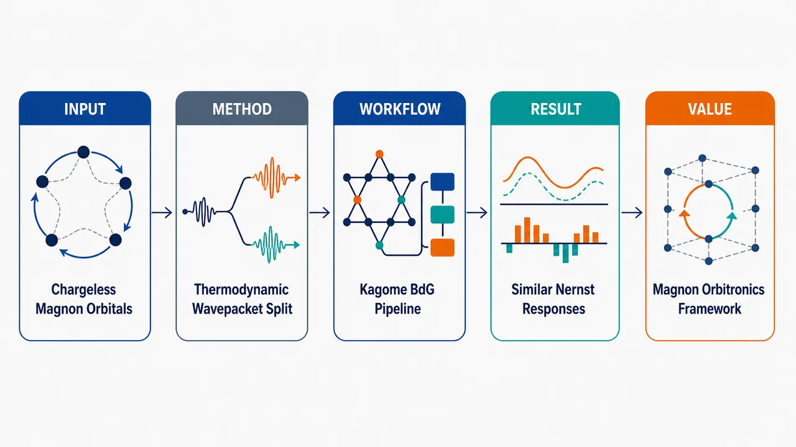
研究问题无电荷磁振子的“轨道角动量 OAM”是否能像电子一样直接对应“轨道磁矩 OMM”？在负矢量手性 Kagome 反铁磁体中，外磁场、DMI 与非共线 120° 自旋结构如何让两种轨道量在动量空间呈现不同纹理，并进一步影响轨道 Nernst 输运？创新方法把 OMM 的热力学定义与 OAM 的波包定义并排计算：OMM 由磁振子能量对垂直磁场的导数扣除自旋磁矩得到，OAM 由对称化波包轨道算符和带间虚跃迁得到。Aha 点是：不再默认 OMM 与 OAM 成比例，而是在同一 Kagome 玻色 BdG 能带框架中比较它们的动量纹理、磁场响应和 Nernst 系数。工作流程输入二维负矢量手性 Kagome 反铁磁模型，包含反铁磁交换 J、DMI 和垂直磁场；先确定三子晶格 120° 非共线自旋与场诱导面外倾角；再用 Holstein–Primakoff 变换建立线性自旋波玻色 BdG 哈密顿量；对角化 σ3H(k) 得到磁振子能带、本征态和 Berry 曲率；分别计算 OMM、OAM 及其 O-Berry 曲率；最后用 Bose 权重求平衡平均值与横向轨道 Nernst 系数。关键结果OMM 与 OAM 在平衡态明显不同：OMM 随磁场增强在 Γ 点形成强烈峰值，总 OMM 可由负转正；OAM 更像 Berry 曲率，动量纹理对磁场变化较弱。磁场在 8 T 时使 Γ 点最低带打开约 0.88 meV 能隙，三条正能带 Chern 数为 (1, -2, 1)，在 0.05–5 T 内稳定。反直觉结果是：尽管平衡 OMM/OAM 差异大，二者 Nernst 系数却呈现近似相同的温度和磁场依赖。应用价值为磁绝缘体中的磁振子 orbitronics 提供可计算框架，帮助区分平衡轨道磁化信号与横向轨道输运信号。该研究说明无电荷玻色准粒子的轨道磁矩和轨道角动量不能按电子图像简单等同，但它们的输运响应可能由共同的能带几何控制，可用于设计和解释热梯度驱动的磁振子轨道 Nernst 器件。第一部分：核心概览 (Overview)
该研究在负矢量手性 Kagome 反铁磁体中定量比较磁振子的轨道磁矩（OMM）与轨道角动量（OAM），区分了前者的热力学定义与后者的波包定义。核心发现是：OMM 与 OAM 的平衡动量空间纹理和磁场响应显著不同，但二者对应的 Nernst 输运系数具有近似相同的温度和磁场依赖。这为理解无电荷准粒子磁振子的“轨道性”提供了可计算框架。
---
第二部分：结构化快速回顾
《Comparing the orbital angular momentum and magnetic moment of magnons in the Kagome antiferromagnet with negative spin chirality》（None，）
背景
磁振子是无电荷自旋波激发，不同于电子，不能简单地用电荷回旋运动把轨道角动量 OAM与轨道磁矩 OMM联系起来。近期理论建立了磁振子 OAM 的规范不变量定义，但其与 OMM 的关系仍不清楚。
方法
采用含反铁磁交换 J、Dzyaloshinskii–Moriya 相互作用 DMI和垂直外磁场 (Bz_₀) 的二维负矢量手性 Kagome 反铁磁模型；通过线性自旋波理论、Holstein–Primakoff 变换和玻色 BdG 对角化计算能带、Berry 曲率、OMM、OAM 及其 Nernst 系数。
结果
参数取 (J=3.18,meV)、(S=5/2)、(Dz_₀=-0.062J)、(Dₚ₌₁,meV)。在 (Bz_₀=8,T) 时，(Γ) 点最低能带打开约 (0.88,meV) 的能隙，对应约 (10.2,K)。Chern 数为 ((1,-2,1))，在 (0.05)–(5,T) 内不变。
讨论
OMM 在外磁场增强时于 (Γ) 点形成明显峰值，导致总 OMM 可由负转正；OAM 与 Berry 曲率更相似，磁场响应较弱。尽管平衡响应差异明显，二者 Nernst 系数却表现出相近的温度与磁场依赖。
局限
模型为最小模型，不是具体材料的定量描述；未指定 Néel 温度；有限温结果只应理解为线性自旋波近似下的低温趋势，而非针对特定材料的预测。
结论
磁振子的 OMM 与 OAM 不可简单等同；但二者在输运响应中表现出隐藏关联。该结果揭示了无电荷玻色准粒子轨道动力学中热力学量与波包量之间的非平凡关系。
---
第三部分：逐章节冷凝解析 (Section-by-Section Condensing)
Abstract
- Orbital dynamics as the central problem
磁振子的轨道动力学被定位为磁绝缘体中热输运与轨道输运的潜在关键机制，研究对象是负矢量手性 Kagome 反铁磁体中的 OMM 与 OAM。原文明确指出：*"The orbital dynamics of magnons have recently drawn interest due to their potential roles in thermal and orbital transport phenomena in magnetic insulators."*
- Thermodynamic versus wave-packet definitions
研究核心不是单独计算 OMM 或 OAM，而是比较两种定义体系：OMM 来源于磁场下自由能/能量的响应，OAM 来源于磁振子波包的轨道运动。摘要直接强调：*"focusing on the distinction between thermodynamic and wave-packet-based definitions."*
- Momentum-space quantities under magnetic field
计算对象包括Berry 曲率、轨道磁矩 OMM和轨道角动量 OAM，且全部在动量空间与外磁场下分析。原文表述为：*"We compute the Berry curvature, the OMM, and the OAM in momentum space under an external magnetic field."*
- Key quantitative contrast
OMM 与 OAM 在数值上并不相同，但对应 Nernst 系数在温度和磁场依赖上相似。核心结论为：*"Our results reveal a quantitative difference between the OMM and OAM, yet their associated Nernst coefficients exhibit similar temperature and field dependence in transport."*
---
I Introduction
- Electron orbitronics as conceptual background
电子体系中，虽然平衡态 OAM 常因晶体场被淬灭，但非平衡态仍产生轨道 Hall 效应与轨道 Edelstein 效应，并支撑 orbitronics。原文称：*"although the orbital angular momentum (OAM) of electrons are quenched due to crystal fields in equilibrium, they still underlie phenomena such as the orbital Hall effect and orbital Edelstein effect in nonequilibrium."*
- Electron OAM and OMM are proportional because of charge
电子有电荷，因此其 OAM 与 OMM 可通过回旋磁矩和旋磁比直接联系。关键句为：*"For electrons, their OAM is proportional to their orbital magnetic moment (OMM) since they have charge."* 这构成磁振子问题的反差基准。
- Magnons are chargeless, making OAM–OMM relation nontrivial
磁振子是无电荷基本激发，不能照搬电子 OAM–OMM 关系。原文给出问题本质：*"Unlike electrons, magnons are chargeless elementary excitations of spin waves."* 因此，*"it is not straightforward to relate the magnon OAM, defined through the itinerant motion of a magnon wave packet, to a magnetic moment as in the electronic case."*
- Gauge-invariant magnon OAM already exists, but relation to magnetic moment remains open
既有工作已建立磁振子 OAM 的规范不变量 formulation，并发现其具有非平凡动量空间纹理；但 OAM 与磁矩关系仍未厘清。原文指出：*"Recent developments have provided a gauge-invariant formulation of the magnon OAM and revealed that it can exhibit a nontrivial momentum–space texture."* 同时，*"its relation to the magnon magnetic moment remains unclear."*
- Magnon magnetic moment contains spin and orbital parts
磁振子的总磁矩分为自旋磁矩和轨道磁矩 OMM。研究采用的 OMM 概念来自自由能对磁场的响应，原文写道：*"For magnons, their magnetic moment consists of both spin and orbital contributions, with the latter referred to as the magnon OMM."*
- OMM as field-induced change of local spin directions
OMM 的数学含义被解释为外磁场下局域自旋方向变化的程度，并且与 OAM 一样是动量函数。原文表述为：*"Mathematically, the OMM represents the extent to which the direction of local spin moments changes under an applied magnetic field, and it is a function of crystal momentum as the OAM."*
- Negative vector chirality Kagome antiferromagnet as ideal platform
负矢量手性 Kagome 反铁磁体具有共面非共线自旋结构，在 DMI 存在时产生强 Berry 曲率，并允许有限面外 OMM。原文称：*"The negative vector chirality state hosts a coplanar but noncollinear spin configuration that generates a substantial Berry curvature in the magnon bands in the presence of DMI."* 因而，*"This makes it an ideal platform in which both OAM and OMM responses can coexist."*
- Main finding: equilibrium contrast but transport similarity
平衡态平均 OMM 与 OAM 行为不同，但 Nernst 系数磁场依赖几乎相同。原文给出核心判断：*"We find that the equilibrium averages of the OMM and OAM show distinct behavior but their Nernst coefficients exhibit nearly identical field dependencies."*
- Physical origin of the contrast
差异主要源于 OMM 在 (Γ) 点随磁场增强出现强峰，而 OAM 没有类似强响应。原文指出：*"This difference originates from the fact that, unlike the OAM, the OMM develops a pronounced peak around the Γ point as the field increases."*
---
II Model and magnetic order
- Spin Hamiltonian with exchange, DMI, and Zeeman coupling
模型为二维负矢量手性 Kagome 晶格，哈密顿量包含最近邻反铁磁交换 (J)、DMI (Dᵢⱼ) 与垂直磁场 Zeeman 项：
[
hatH=sumłₐₙgₗₑ ᵢⱼåₙgₗₑ(Jhatmathbf Sᵢḑothatmathbf Sⱼ₊mathbf Dᵢⱼḑothatmathbf Sᵢ×hatmathbf Sⱼ₎₋gμ_BBz_₀sumᵢhat Sᵢz₀.
]
原文定义为：*"where (Sᵢ) is spin at site (i), (J) is the antiferromagnetic exchange coupling, (Dᵢⱼ) denotes the DMI vector associated with (ij) bond, comprising both in-plane ((Dₚ)) and out-of-plane ((Dz_₀)) components."*
- Negative (Dz_₀) stabilizes negative vector chirality
面外 DMI 决定 120° 结构的手性；在该符号约定下，负 (Dz_₀) 倾向负矢量手性。原文说明：*"finite (Dz_₀) stabilizes the (120ⁱ̧rc) structure, with negative (positive) (Dz_₀) favoring a negative (positive) vector chirality structure."*
- Classical spin configuration with canting angle
三个子晶格 (α,β,γ) 的角度为 (θᵢ₌₄π/3,2π/3,0)，对应负矢量手性；(η) 表示外磁场诱导的面外倾角。原文给出：*"where (θᵢ₌₄π/3,2π/3,0) correspond to the negative vector chirality structure and (η) is the canting angle out of the plane."*
- Classical energy per spin and Zeeman extension
经典能量为
[
fracEₘ̊ cₗ(η)NS²=
fracJ2(1-3o̧s2η)+sqrt3Dz_₀o̧s²η-fracgμ_BBz_₀Ssinη.
]
该式是对既有无场模型的扩展。原文明确说：*"This is an extension of Ref. [13] by including the Zeeman coupling."*
- Canting angle is linear in magnetic field for small fields
最小化经典能量得到
[
sinη=fracgμ_BSfracBz_₀6J-2sqrt3Dz_₀.
]
原文表述为：*"By minimizing the classical energy with respect to (η), we obtain"* 该公式。由于 (Dz_₀<0)，分母 (6J-2sqrt3Dz_₀) 增大，面外倾斜受到 DMI 符号影响。
- In-plane DMI does not tilt negative vector chirality state at zero field
与正矢量手性不同，负矢量手性 Kagome 晶格在无磁场时不会被 (Dₚ) 倾斜。原文强调：*"In contrast to the positive vector chirality case, the negative vector chirality Kagome lattice is not tilted by (Dₚ); when no magnetic field is applied, the spins lie entirely within the Kagome plane."*
- Magnetic point group symmetry remains (2'/m')
体系具有结合时间反演的二重旋转或镜面对称，形成磁点群 (2'/m')，且外磁场不破坏该磁点群。原文写道：*"These symmetries together form the magnetic point group (2'/m'), which remains preserved regardless of whether an external magnetic field is applied."*
- Numerical parameters and field-induced gap
图 1 采用 (J=3.18,meV)、(S=5/2)、(Dz_₀=-0.062J)、(Dₚ₌₁,meV)、(Bz_₀=0) 或 (8,T)。在 (8,T) 时，(Γ) 点最低带能隙为 (0.88,meV)，约 (10.2,K)。原文给出：*"At (Bz_₀=8,T), the field-induced gap at (Γ) point is (ϵ₁,Γsimeq 0.88,meV), corresponding to the approximately (10.2,K)."*
---
III Energy band diagram and Berry curvature
- Local coordinate systems align with classical spins
Holstein–Primakoff 变换前，将每个子晶格的局域 (z) 轴对齐到经典自旋方向。原文说明：*"we introduce local coordinate systems whose (z) axes are aligned with the classical spin directions at each atomic sublattice."* 角度为 (θ_α=4π/3,θ_β=2π/3,θ_γ=0)。
- Linear spin wave approximation with HP bosons
非相互作用磁振子哈密顿量通过 HP 变换得到：(tilde S⁺⁼sqrt2Shat a)、(tilde S⁻⁼sqrt2Shat a^dagger)、(tilde S^z=S-hat a^daggerhat a)。原文写道：*"The non-interacting magnon Hamiltonian is obtained by applying the HP transformation in the linear spin wave approximation to the local spin operators."*
- Bosonic BdG structure with three sublattices
Fourier 变换后得到玻色 BdG 哈密顿量
[
hat H₂₌frac12sumₖhatψₖ^daggerhat Hₖhatψₖ,
]
Nambu 自旋量为 ((a₁,ₘₐₜₕbf ₖ,ḑots,aτ,ₘₐₜₕbf ₖ,a^dagger₁,₋ₘₐₜₕbf ₖ,ḑots)^T)，Kagome 模型中 (τ=3)。原文定义：*"where (hatψₖ) is the Nambu spinor of the HP boson, and (τ) is sub-lattice index which is (τ=3) for our model."*
- Pairing terms are essential for antiferromagnetic magnons
BdG 哈密顿量含粒子数守恒项和非守恒配对项，包括子晶格内与子晶格间配对，如 (a₁,ₘₐₜₕbf ₖa₁,₋ₘₐₜₕbf ₖ)、(a₂,ₘₐₜₕbf ₖa₃,₋ₘₐₜₕbf ₖ)。原文指出：*"These include both intra- and inter-sublattice pairing terms... which are characteristic of antiferromagnetic magnons."* 且，*"All such pairing terms contribute to shaping the quantum geometry of the magnon bands."*
- Pseudo-Hermitian diagonalization
能带通过对角化 (σ₃hat Hₖ) 获得：
[
σ₃hat Hₖ|uⁿₖångle=barϵₙ,ₖ|uⁿₖångle.
]
原文说明：*"We obtain right-eigenvector (|uⁿₖångle) by diaginalizing the pseudo-Hermitian Hamiltonian, (σ₃hat Hₖ)."* 归一化条件为 (łangle uⁿₖ|σ₃|u^mₖångle=(σ₃₎ₙₘ)。
- Magnetic field gaps the lowest band and lifts degeneracy
外磁场使最低能带在 (Γ) 点获得有限激发能，并解除中间带与最高带在 (Γ) 点的简并。原文明确：*"Note that (Bz_₀) makes the excitation energy of the lowest band finite at the (Γ) point and lift the degeneracy between the middle and the highest bands at the (Γ) point."*
- Berry curvature for bosonic BdG systems
Berry 曲率采用 (σ₃) 度规定义：
[
Ømegaₙ,ₖ=partialₖ_ₓAⁿₖ,y-partialₖ_yAⁿₖ,ₓ,
quad
mathbf Aⁿₖ₌
fracłangle uⁿₖ|iσ₃partialₖ|uⁿₖångle
łangle uⁿₖ|σ₃|uⁿₖångle.
]
原文为：*"the Berry curvature, which for the bosonic BdG Hamiltonian can be calculated from the following expression."*
- Interband Kubo-like Berry curvature
通过平行输运规范 (łangle uⁿₖ|σ₃|partialₖ_ᵢuⁿₖångle=0)，Berry 曲率被写成带间求和形式。原文称：*"To obtain an interband representation of the Berry curvature, we choose the parallel-transport gauge."*
- Chern numbers are topologically stable over field range
三条正能磁振子带的 Chern 数从低到高为 ((1,-2,1))，在 (0.05,mathrm T) 到 (5,mathrm T) 内不变，因为能隙不闭合。原文给出：*"The Chern numbers are ((1,-2,1)) from the lowest to the highest band and remain unchanged throughout the field range (0.05,T) to (5,T), as the band gaps do not close on this range."*
- Even momentum parity allows thermal Hall effect
能带与 Berry 曲率均为动量偶函数：(ϵₙ,₋ₘₐₜₕbf ₖ=ϵₙ,ₘₐₜₕbf ₖ)、(Ømegaₙ,₋ₘₐₜₕbf ₖ=Ømegaₙ,ₘₐₜₕbf ₖ)，因此可产生非零热 Hall 效应。原文写道：*"The energy bands and Berry curvatures are even in momentum... which allows for a non-zero thermal Hall effect."*
---
IV Magnon orbital magnetic moment
- Total magnetic moment is energy derivative with respect to field
磁振子磁矩定义为能量对外磁场的负导数：
[
μz₀ₙ,ₘₐₜₕbf ₖ=-fracpartialϵₙ,ₘₐₜₕbf ₖpartial Bz_₀.
]
原文说明：*"The magnetic moment, (μz₀ₙ,ₖ), defined as the derivative of energy with respect to the magnetic field."*
- Magnetic moment decomposes into spin and orbital parts
总磁矩拆为自旋磁矩 (μS,z₀ₙ,ₘₐₜₕbf ₖ) 与轨道磁矩 (μO,z₀ₙ,ₘₐₜₕbf ₖ)。公式为
[
μO,z₀ₙ,ₘₐₜₕbf ₖ
=
-fracpartialϵₙ,ₘₐₜₕbf ₖpartial Bz_₀
+gμ_BSz₀ₙ,ₘₐₜₕbf ₖ.
]
原文写道：*"consists not only of the conventional spin magnetic moment... but also an additional OMM."*
- Only out-of-plane OMM is analyzed
研究只处理 (z₀) 分量，即垂直 Kagome 平面的 OMM。原文明确限定：*"In this paper, we only deal with the (z₀)-component of the OMM of magnons."*
- Definition isolates orbital contribution from spin sector
该定义把自旋期望值贡献 (gμ_BSz₀ₙ,ₘₐₜₕbf ₖ) 从总磁矩中扣除，从而隔离轨道贡献。原文说明：*"This definition allows us to isolate the orbital contribution to the magnetic moment and analyze its behavior independently of the spin sector."*
- OMM textures agree with previous work
在 (0.05,mathrm T) 与 (1,mathrm T) 下计算各能带 OMM 纹理，结果与既有研究一致，验证数值实现。原文表述为：*"The magnon OMM textures calculated for each band at a fixed magnetic field ((0.05mbox T) and (1mbox T)) are shown in Fig. 3 and are found to be in good agreement with previous results, validating our implementation."*
- Total orbital magnetization uses Bose–Einstein weighting
总 OMM 为
[
łangleμₘ̊ ₜₒₜO,z₀ångle(Bz_₀,T)=
frac1Vsumₙ,ₘₐₜₕbf ₖμO,z₀ₙ,ₘₐₜₕbf ₖ(Bz_₀)
h̊o(ϵₙ,ₘₐₜₕbf ₖ(Bz_₀),T),
]
其中 (h̊o(ϵ)=[exp(ϵ/k_BT)-1]⁻¹)。原文给出：*"where (h̊o(ϵ)=(exp(ϵ/kBT)-1)⁻¹) ... is the Bose-Einstein distribution."*
- OMM is even in momentum
OMM 满足 (μO,z₀ₙ,₋ₘₐₜₕbf ₖ=μO,z₀ₙ,ₘₐₜₕbf ₖ)，与磁场强度无关。原文指出：*"The OMM textures are even in momentum... regardless of the magnetic field strength."*
- Magnetic field creates a pronounced (Γ)-point OMM response
随外磁场增强，OMM 在 (Γ) 点明显增强，主要变化来自该区域，并导致总轨道磁化从负值转为正值。原文写道：*"As the field increases, the OMM becomes more pronounced at the (Γ) point... where most of the change originates; this trend is also reflected in the orbital magnetization, which shifts from negative to positive values with increasing magnetic field strength."*
---
V Magnon orbital angular momentum
- Magnon OAM arises from wave-packet itinerant motion
磁振子虽无电荷，但其波包运动可携带 OAM。原文开篇指出：*"Like electrons, magnons can also possess an OAM arising from the itinerant motion of their wave packets."*
- Electronic analogy motivates transport relevance
在电子体系中，OAM 贡献轨道磁化并影响输运；磁振子 OAM 的理论拓展也显示其输运性质重要。原文说明：*"In electronic systems, this OAM contributes to the orbital magnetization and plays a crucial role in transport phenomena."* 以及，*"Recent theoretical studies have extended this concept to magnons, demonstrating that magnon OAM and its transport properties are likewise significant."*
- Symmetrized OAM operator
OAM 算符采用对称化形式：
[
hatmathbf l=frac14(hatmathbf r×hatmathbf v-hatmathbf v×hatmathbf r).
]
原文为：*"We start with symmetrized OAM operator."*
- Momentum-space derivation uses position operator (ipartialₖ)
在动量空间中，位置算符作用于 (mathbf k)-依赖本征态时表示为 (hat rᵢ₌ᵢpartialₖ_ᵢ)。原文写道：*"In momentum space, the position operator is represented by (hatrᵢ=ipartialₖᵢ) when acting on the (k)-dependent eigenstates."*
- Band-resolved OAM formula
对角元 (m=n) 给出能带分辨 OAM：
[
l⁽a⁾ₙ,ₘₐₜₕbf ₖ
=
-fracǎrepsilonₐbc2ihbar
łanglepartialₖ_buⁿₖ|
(hat Hₖ₋σ₃barϵₙ,ₘₐₜₕbf ₖ)
|partialₖ_cuⁿₖångle.
]
原文说明：*"For the diagonal element, (m=n), this expression reduces to the band-resolved OAM."*
- Off-diagonal OAM is needed for transport
输运计算需要非对角 OAM 矩阵元，并可写成带间虚过程求和。原文指出：*"For the transport calculation, we also need the off-diagonal OAM matrix elements."*
- OAM originates from interband virtual processes
最终表达式显示 OAM 来自经由中间磁振子带 (q) 的带间虚跃迁。原文总结为：*"This final expression makes it explicit that the OAM originates from interband virtual processes mediated by intermediate magnon bands (q)."*
- OAM texture is field-insensitive and even in momentum
计算的 (z₀) 分量 OAM 在 (0.05,mathrm T) 和 (1,mathrm T) 下变化很小，并满足 (lz₀ₙ,₋ₘₐₜₕbf ₖ=lz₀ₙ,ₘₐₜₕbf ₖ)。原文写道：*"Similar to the Berry curvature, the OAM exhibits little variation under the applied magnetic field and is even in momentum."*
- OAM resembles Berry curvature rather than OMM
OAM 纹理接近 Berry 曲率，说明二者都来自带间过程；而 OMM 纹理与二者定性不同。原文指出：*"the OAM texture closely resembles the magnon Berry curvature, indicating that the OAM, like the Berry curvature, originates from interband processes."* 同时，*"the magnon OMM texture exhibits a qualitatively different structure from both the Berry curvature and the magnon OAM textures."*
- OMM is highly sensitive near (Γ), OAM average is weakly affected
OMM 对外磁场的敏感性集中在 (Γ) 点；相比之下，总 OAM 随磁场变化弱。原文说：*"In particular, its response to an external magnetic field is highly sensitive near the (Γ) point."* 以及，*"while the OMM exhibits a relatively strong response to the magnetic field the average value of the OAM is only weakly affected."*
---
VI Transport of the magnons
- Orbital Nernst responses parallel spin Nernst effect
温度梯度可驱动磁振子自旋 Nernst 效应，类似地 OMM 与 OAM 也可横向流动。原文指出：*"Just as a temperature gradient gives rise to the magnon spin Nernst effect... OMM and OAM can also exhibit analogous transverse responses."*
- OMM and OAM Nernst effects are transverse orbital flows
OMM/OAM Nernst 效应定义为轨道自由度在温度梯度垂直方向流动。原文称：*"This gives rise to the magnon OMM and OAM Nernst effects, in which the orbital degrees of freedom flow perpendicular to the thermal gradient."*
- Nernst coefficient definition
温度梯度沿 (x) 方向，(mathcal O) 的 (z) 分量轨道流沿 (y) 方向：
[
J_y^mathcal O=-α_z^mathcal OpartialₓT.
]
原文定义为：*"defined as the transverse orbital current of (z)-component (J_y^O) that flows in the (y)-direction under a temperature gradient applied along the (x)-direction."*
- Kubo-like Nernst coefficient
[
α_z^mathcal O=
frac2k_Bhbar Vₘ̊ ᵤc
sumₙ,ₘₐₜₕbf ₖ
c₁[h̊o(ϵₙ,ₘₐₜₕbf ₖ)]
Ømegaₙ,ₘₐₜₕbf ₖ^mathcal O,
]
其中
[
c₁₍ₕ̊o)=(1+h̊o)łn(1+h̊o)-h̊ołnh̊o.
]
原文给出：*"where the weighting function, (c₁) is defined as (c₁₍ₕ̊o)=(1+h̊o)łn(1+h̊o)-h̊ołn(h̊o))."*
- Observable Berry curvature (Ømega^mathcal O)
[
Ømegaₙ,ₘₐₜₕbf ₖ^mathcal O
=
2hbar²sumₘₙₑ ₙGₙₘ
frac{
Im[łangle uⁿ|hat j_y^mathcal O|u^mångle
łangle u^m|hat vₓ|uⁿångle]
}(barϵₙ,ₘₐₜₕbf ₖ-barϵₘ,ₘₐₜₕbf ₖ)²,
]
(Gₙₘ=(σ₃₎ₙₙ(σ₃₎ₘₘ)。原文直接定义：*"the (mathcal O)-Berry curvature is given by"* 该式。
- Current operator includes BdG metric (σ₃)
玻色 BdG 系统的可观测量流算符为
[
hat j_y^mathcal O=
frachat v_yσ₃mathcal O+mathcal Oσ₃hat v_y2.
]
原文写道：*"For bosonic BdG systems, the current operator is defined as..."*
- OMM operator explicitly includes interband effects
OMM 算符写为
[
mathcal O=-fracpartialhat Hₖpartial Bz_₀+gμ_Bhat Sₖz₀.
]
原文说明：*"Eq. (25) rewrites Eq. (13), where only the (z₀)-component of the magnon OMM is considered, into an operator form that explicitly incorporates interband effects."*
- OAM operator is the symmetrized orbital operator
OAM 可观测量使用
[
mathcal O=łeft.frac14(hatmathbf r×hatmathbf v-hatmathbf v×hatmathbf r)i̊ght|z_₀.
]
原文写道：*"or the OAM operator, (O=...)"*
- OMM Berry curvature changes mainly in magnitude
在 (Bz_₀=0.05,mathrm T) 与 (1,mathrm T) 下，OMM Berry 曲率的动量空间结构基本不变，磁场主要改变整体幅值。原文指出：*"For the OMM Berry curvature, increasing the magnetic field changes mainly the overall magnitude of the texture, while leaving its momentum-space structure nearly unchanged."*
- OAM Berry curvature has a weak-field (Γ)-point peak
OAM Berry 曲率在 (0.05,mathrm T) 时于 (Γ) 点附近出现峰，随磁场增大峰值减小。原文说明：*"In contrast, the OAM Berry curvature develops a peak around the (Γ) point at (Bz_₀=0.05,T), and the magnitude of this peak decreases as the magnetic field increases."*
---
VII Results and Discussion
- Minimal model, not material-specific prediction
哈密顿量是最小模型，不对应具体材料定量描述；没有指定 Néel 温度。原文明确限制：*"Since the present Hamiltonian is intended as a minimal model rather than a material-specific description, we do not assign a specific Néel temperature to the system."*
- Finite-temperature results are low-temperature LSWT trends
有限温结果仅代表线性自旋波近似下低温趋势，非特定材料预测。原文强调：*"The finite-temperature results should therefore be understood as lower-temperature trends within the linear spin-wave approximation, rather than as quantitative predictions for a particular material."*
- Temperature range capped at 30 K
图 6 温度限制为 (Tłe 30,mathrm K)，避免突出高温区，同时保留足够温度变化以比较平衡和输运响应。原文写道：*"we restrict the plotted temperature range to (Tłeq 30,K) in order to avoid emphasizing the high-temperature regime."*
- Equilibrium OMM grows with field; OAM decreases weakly
总 OMM 随磁场增强而幅值增大，OAM 仅弱减小。原文给出：*"As the magnetic field becomes stronger, the magnitude of the OMM grows, whereas that of the OAM decreases only weakly."*
- OMM field dependence originates from (Γ)-point peak
OMM 强磁场依赖主要来自 (Γ) 点附近形成的峰。原文指出：*"This strong field dependence of the OMM originates mainly from the pronounced peak that develops near the (Γ) point."*
- Nernst coefficients behave similarly despite equilibrium contrast
图 6(b) 中 OMM 与 OAM 的 Nernst 系数呈现相似温度依赖，与图 6(a) 的平衡平均形成对比。原文写道：*"In contrast to the thermodynamic averages in Fig. 6(a), the two Nernst coefficients exhibit broadly similar temperature dependences."*
- OMM Nernst coefficient is nearly field-insensitive
OMM Nernst 系数对外磁场几乎不敏感。原文明确：*"The OMM Nernst coefficient is nearly insensitive to the magnetic field."*
- OAM Nernst coefficient becomes field-independent at stronger fields
OAM Nernst 系数随磁场增强趋向场无关行为。原文称：*"the OAM Nernst coefficient approaches a field-independent behavior as the field strength increases."*
- Experimental context from MnPS(₃)
MnPS(₃) 的磁振子自旋 Nernst 效应已有理论研究；Pt/MnPS(₃) 混合结构中低温热电压信号与磁振子 Nernst 效应一致，反自旋 Hall 电压最高估计为数十纳伏。原文写道：*"an experiment on Pt/MnPS(₃) hybrid structures reported low-temperature thermoelectric voltage signals consistent with the magnon Nernst effect, with the induced inverse spin Hall voltage estimated to be at most several tens of nanovolts."*
- Measured voltage is not direct Nernst coefficient
实验电压还取决于界面自旋透射与 Pt 中自旋-电荷转换，因此不是自旋 Nernst 系数的直接测量。原文说明：*"This experimentally measured voltage is not a direct measure of the spin Nernst coefficient itself, since it also depends on interfacial spin transmission and spin-to-charge conversion in Pt."*
- Magnitude comparison with previous theory
在 (T=30,mathrm K)、(Bz_₀=0.05,mathrm T) 下，模型中 OMM Nernst 系数与 MnPS(₃) 理论自旋 Nernst 系数同量级；OAM Nernst 系数比 Ref. [20] 报道值大约一个数量级。原文表述为：*"the OMM Nernst coefficient obtained in our model at (T=30,K) and (Bz_₀=0.05,T) is comparable in magnitude to the theoretically estimated spin Nernst coefficient of MnPS(₃), while our OAM Nernst coefficient is about one order of magnitude larger than the value reported in Ref. [20]."*
- Band-geometry quantities are less field-sensitive than OMM
Berry 曲率、OAM 和 (mathcal O)-Berry 曲率都比 OMM 本身对磁场不敏感。原文总结：*"band geometry related quantities such as the Berry curvature, OAM, and (mathcal O)-Berry curvature are much less field-sensitive than the OMM itself."*
- Field-induced (Γ)-gap affects OAM Berry curvature but not OMM Berry curvature strongly
(Γ) 点磁场诱导能隙没有明显反映在 OMM Berry 曲率中，但通过 (Γ) 点峰直接体现在 OAM Berry 曲率中。原文指出：*"the field-induced gap opening at the (Γ) point is not appreciably reflected in the OMM Berry curvarture, whereas it is directly manifested in the OAM Berry curvature through the formation of a peak near the (Γ) point."*
- Bose weight explains residual OAM field dependence
OAM Nernst 系数剩余磁场依赖来自 Bose 统计权重对 (Γ) 点低能态的强调。原文写道：*"The remaining field dependence of the OAM Nernst coefficient can be attributed to the Bose statistical weight, which emphasizes low-energy states near the (Γ) point."*
- Generalization requires further systems
类似的平衡-输运反差可能存在于其他具有非平凡 OMM/OAM 纹理的磁振子系统，但依赖磁序、对称性和磁振子能带结构。原文限制为：*"However, the extent to which this behavior occurs may depend on the magnetic order, symmetry, and magnon band structure of the system."* 因此，*"Further studies of different magnonic systems are therefore required to determine how broadly the behavior found here applies."*
---
VIII Conclusion
- Detailed comparison of OMM and OAM in negative chirality Kagome antiferromagnet
研究完成了外磁场下负矢量手性 Kagome 反铁磁体中磁振子 OMM 与 OAM 的系统比较。原文开头总结：*"we conducted a detailed comparison between the OMM and OAM of magnons in a negative vector chirality Kagome antiferromagnet under an external magnetic field."*
- Thermodynamic OMM and wave-packet OAM have different equilibrium behavior
OMM 来自热力学定义，OAM 来自波包定义；二者平衡响应显著不同。原文指出：*"By contrasting the thermodynamic definition of the OMM with the wave packet based definition of the OAM, we showed that these two quantities exhibit markedly different equilibrium behaviors."*
- Nernst coefficients remain similar despite equilibrium difference
虽然平衡态 OMM 与 OAM 区别明显，其 Nernst 系数仍呈现相似的温度和磁场依赖。原文写道：*"Despite the clear difference in their equilibrium responses, the OMM and OAM Nernst coefficients show similar temperature and magnetic-field dependences."*
---
第四部分：深度理解与语言支持 (Understanding & Nuance)
1. 术语解析
- Negative vector chirality
指三个子晶格自旋形成 120° 非共线结构时，矢量自旋手性 (mathbf Sᵢ×mathbf Sⱼ) 的方向取特定负号。语境中由负 (Dz_₀) 稳定：*"negative (Dz_₀) favoring a negative vector chirality structure."* 这里的 “negative” 不是能量负值，而是自旋旋转方向/手性符号。
- Orbital magnetic moment (OMM)
在磁振子语境中不是电荷环流产生的传统磁矩，而是能量对外磁场响应中扣除自旋磁矩后的剩余轨道贡献：(μ^O=-partialϵ/partial B+gμ_BS^z)。语义重点是热力学响应量。
- Orbital angular momentum (OAM)
这里指磁振子波包的轨道运动角动量，定义来自 (hatmathbf l=frac14(hatmathbf r×hatmathbf v-hatmathbf v×hatmathbf r))。语义重点是波包动力学量，并非直接等于 OMM。
- Bosonic BdG Hamiltonian
反铁磁磁振子中存在 (aa)、(a^dagger a^dagger) 配对项，需要 Nambu 空间描述。与普通厄米本征问题不同，需对角化 (σ₃Hₘₐₜₕbf k)，并使用 (σ₃) 度规归一化。
- (mathcal O)-Berry curvature
普通 Berry 曲率描述能带几何；(mathcal O)-Berry 曲率描述某个可观测量 (mathcal O) 的横向输运响应权重。这里 (mathcal O) 可为 OMM 或 OAM，因此分别得到 OMM Berry 曲率与 OAM Berry 曲率。
2. 疑难查证
- 为什么无电荷磁振子仍可有 OAM？
OAM 不必来自电荷回旋运动；只要波包中心在晶格周期势中具有内部自旋/子晶格结构和带间混合，波包就可携带“自旋波振幅分布的轨道运动”。磁振子的 OAM 来源于 BdG 本征态随 (mathbf k) 的变化，即 (|partialₘₐₜₕbf k uₙångle)，所以表达式中天然出现带间虚过程。
- 为什么 OMM 与 OAM 不成比例？
电子 OAM 与 OMM 成比例依赖电荷 (q)，磁矩通常形如 (boldsymbolμpropto qmathbf L/2m)。磁振子无电荷，OMM 不是电流环路磁矩，而是磁振子能量对磁场的热力学导数。OAM 是波包轨道运动量，OMM 是外场响应量；两者可相关，但没有电子体系中的简单比例常数。
- 为什么平衡平均差异大，而 Nernst 系数相似？
平衡平均直接加权 (μ^Oₙ,ₘₐₜₕbf ₖ) 或 (lₙ,ₘₐₜₕbf ₖ)，因此 OMM 在 (Γ) 点的磁场诱导峰会强烈影响总 OMM。Nernst 系数加权的是 (mathcal O)-Berry 曲率，不是 (mathcal O) 本身。由于 OMM Berry 曲率与 OAM Berry 曲率的场依赖都较弱，输运响应比平衡量更相似。
- 为什么 (Γ) 点特别重要？
外磁场在 (Γ) 点打开最低能带能隙，低温 Bose 分布又强烈偏向低能态。因此即使某个峰只局限在 (Γ) 附近，也会对总平均或低温输运产生显著影响。
---
第五部分：创新评估与关联 (Synthesis & Novelty)
1. 创新性判断
- 从“是否存在 OAM”推进到“OMM 与 OAM 是否等价”
近年工作已建立磁振子 OAM 的规范不变量理论，并讨论其输运和电极化效应；该研究进一步追问 OAM 与 OMM 的关系，尤其在无电荷准粒子中检验电子类比是否成立。核心新颖性在于直接比较两种轨道量，而不是单独研究 OAM 或 OMM。
- 明确区分热力学定义与波包定义
OMM 通过 (-partialϵ/partial B) 及自旋磁矩扣除得到，OAM 通过波包轨道算符得到。该区分解决了前人未充分回答的问题：磁振子的“轨道角动量”是否就是“轨道磁矩”的来源。结论是否定的：二者平衡纹理与场响应显著不同。
- 发现平衡响应与输运响应的反直觉分离
主要新发现不是简单的“OMM ≠ OAM”，而是更细致的双层结构：
- 平衡态中 OMM 与 OAM 差异显著；
- Nernst 输运中二者表现相似。
这种结果表明，磁振子轨道输运更受 (mathcal O)-Berry 曲率控制，而非单纯受 OMM/OAM 纹理本身控制。
- Kagome 负矢量手性体系提供了同时存在 OMM、OAM、Berry 曲率的干净平台
该体系有非共线磁序、DMI、非零 Chern 数 ((1,-2,1))，并且外磁场可调控 (Γ) 点低能结构，适合比较几何量、轨道量与热输运量之间的关系。
- 对近 2–5 年磁振子 orbitronics 的贡献
磁振子 orbitronics 近期重点集中在 OAM 定义、OAM 纹理、轨道 Nernst 效应和 DMI 诱导电极化。该研究补上了一个关键缺口：磁振子 OAM 与磁响应中的 OMM 并非同一物理量，但其输运系数可能因共同的带几何结构而相似。这为后续实验区分平衡轨道磁化与轨道输运信号提供了理论依据。
-
18
📊 含图深析
📄 摘要：报道铁硒族化合物 K3Fe2Se4 的单链准一维结构及异常块型反铁磁序。准一维体系为研究关联量子相互作用、非常规磁性和相变提供平台；该材料展示的块状自旋排列把铁基硫属化物中的复杂磁序扩展到单链维度。
💡 亮点：K3Fe2Se4 在单链准一维结构中呈现块型反铁磁序。该发现把铁基硒化物的关联磁性推进到一维链平台。
📖 展开分析 + 配图
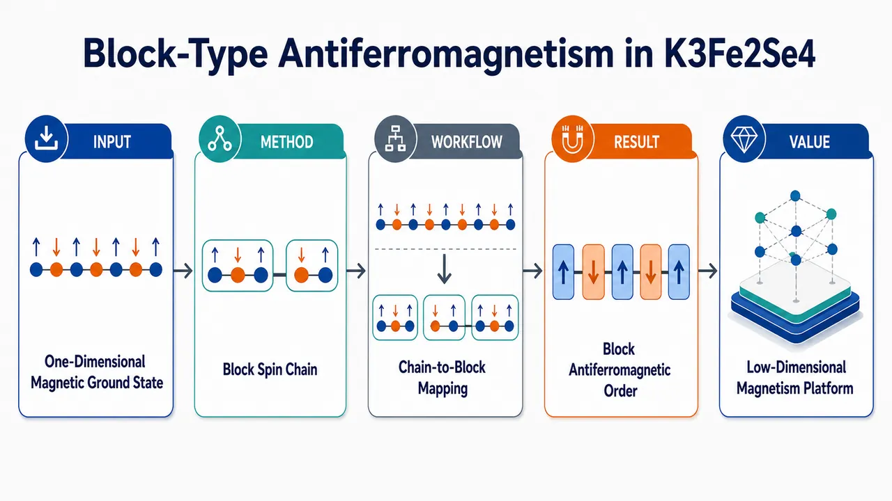
研究问题准一维单链铁硒化物 K₃Fe₂Se₄ 中是否存在不同于常规条纹或简单反铁磁排列的特殊磁性基态；核心是揭示一维 Fe-Se 链几何如何承载“块型反铁磁序”，即链上局域铁自旋先组成同向小磁块，再由相邻磁块反向排列。创新方法将“块型反铁磁性”这一常见于部分铁基硫族化物复杂晶格中的磁序概念，放入单链准一维 K₃Fe₂Se₄ 框架中考察；Aha 点是把二维/块状铁基材料中的磁块图案压缩到一维链上，形成可视化的“铁自旋小方块/小片段沿链交替翻转”模型。工作流程以单链准一维 K₃Fe₂Se₄ 为材料对象，识别其 Fe-Se 链状晶体骨架；分析链上铁自旋的排列方式；判断自旋是否形成同向自旋块；比较相邻自旋块之间的反向耦合；最终给出 K₃Fe₂Se₄ 的块型反铁磁基态图像，并将其与铁基硫族化物家族中的相关磁序联系起来。关键结果K₃Fe₂Se₄ 被报道具有异常块型反铁磁性：单链准一维结构中出现由铁自旋块构成的反铁磁排列。该结果表明块型磁序并不局限于更高维或更复杂的铁基硫族化物晶格，而可以在一维链状几何中稳定存在。应用价值该体系为研究低维强关联磁性提供了清晰模型：一条 Fe-Se 链即可呈现复杂磁块排列，可用于探索低维磁相互作用、非常规磁序形成机制，以及铁基硫族化物中磁性与潜在超导关联的物理基础。核心概览
论文报道了铁硒族化合物 K₃Fe₂Se₄ 的单链准一维结构，并指出其具有异常的块型反铁磁序，属于低维铁基硫属化物磁性与关联量子材料研究方向。
方法要点
- 研究对象是单链准一维结构的 K₃Fe₂Se₄ 铁硒族化合物。
- 关注其磁有序形态，特别是“块状自旋排列”或块型反铁磁序。
- 将该体系作为研究关联量子相互作用、非常规磁性和相变的低维平台。
- 具体实验表征手段、样品制备方法、理论计算或测量条件摘要未详述。
关键结果
- K₃Fe₂Se₄ 被报道具有单链准一维结构。
- 该材料表现出异常的块型反铁磁序。
- 这种块状自旋排列将铁基硫属化物中已知的复杂磁序扩展到了单链维度。
- 摘要未给出磁转变温度、磁矩大小、晶体结构参数或具体磁结构周期等定量信息。
创新性判断
- 可能的新颖点在于：在单链准一维铁硒族化合物中观察到块型反铁磁序，这将原本多见于更高维铁基硫属化物的复杂磁序推广到一维链状体系。
- 该工作可能为研究低维关联电子体系中的非常规磁性和相变提供新材料平台。
- 不确定之处：摘要未说明是否为首次合成 K₃Fe₂Se₄、首次解析其磁结构，或相比已有铁硒族块型反铁磁材料的具体突破幅度。
-
19
📊 含图深析
📄 摘要：综述以多铁材料为中心的电池材料与系统工程，围绕作用机制、设计策略和表征方法展开。内容聚焦铁电、铁磁或磁电耦合等多物理场自由度如何参与电化学过程、界面调控和器件性能优化，为电池体系引入可外场调控的材料设计框架。
💡 亮点：多铁材料被系统纳入电池设计，强调极化、磁性和磁电耦合对电化学界面的调控。该方向把凝聚态多场耦合概念引入储能材料工程。
📖 展开分析 + 配图
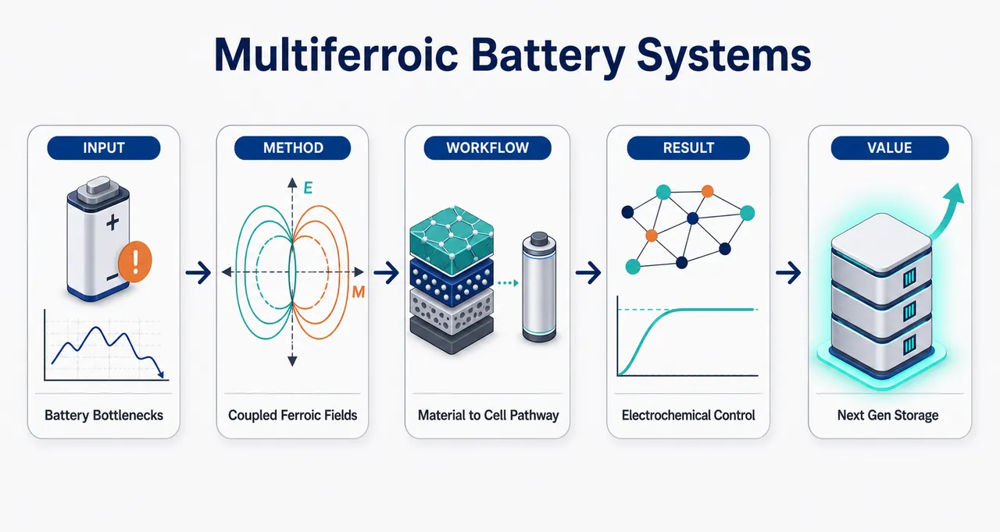
研究问题电池中的离子迁移迟缓、界面副反应复杂、电极结构不稳定和电化学动力学受限，是否可以通过铁电、铁磁与磁电耦合等多铁效应进行主动调控，从而建立新的储能材料与系统设计框架。创新方法以“多铁中心材料与系统工程”为核心视角，把铁电极化场、铁磁响应和磁电耦合效应引入电池设计；不是单纯改性某个电极材料，而是从材料设计、器件集成和原位/多尺度表征三个层面统一解释多铁效应如何调控离子通道、界面反应、电极结构和电化学动力学。工作流程从多铁材料单元出发，识别铁电、铁磁或磁电耦合效应；将其嵌入电极、界面层或电池系统；利用内建电场、磁响应或耦合场调节离子迁移路径、界面反应能垒和电极结构演化；再通过电化学测试与结构/界面表征关联多铁效应和储能性能，最终形成电池材料设计策略。关键结果综述指出多铁效应能够参与调控电池离子迁移、界面反应、电极结构稳定性和电化学动力学；铁电、铁磁及磁电耦合材料为提升储能性能提供了新的调控维度。论文给出机制、策略和表征的系统图景，但未提供明确的性能提升数值或单一材料体系实验对比。应用价值为下一代高性能电池提供一种可视化的设计路线：利用极化场、磁场响应和磁电耦合场主动管理离子输运与界面稳定性，可服务于高容量、高倍率、长寿命和更稳定的储能器件开发。核心概览
这是一篇面向电池应用的多铁材料综述，聚焦铁电、铁磁、铁弹等多场耦合如何影响电化学储能中的界面、输运、反应动力学与稳定性，属于储能材料与多物理场调控交叉方向。
方法要点
- 以多铁材料为核心，系统梳理其在电池材料与系统工程中的应用思路。
- 从铁电、铁磁、铁弹等效应出发，讨论多场耦合对电化学过程的影响机制。
- 关注界面调控策略，分析多铁效应可能如何改善电极/电解质界面行为。
- 讨论离子与电子输运过程，强调极化场或磁电耦合对传输行为的调节作用。
- 总结多铁相关设计策略及表征方法，但具体材料体系、实验技术和参数摘要未详述。
关键结果
- 摘要明确指出，多铁材料及其多场耦合可影响电化学储能中的反应动力学与稳定性。
- 极化场或磁电耦合被认为可能调控界面行为、离子/电子输运和电池反应过程。
- 论文提供了关于机制、策略和表征方法的综述性洞察，而非摘要中可见的单一实验结果。
- 具体性能提升幅度、适用电池类型、材料实例和实验验证结果摘要未详述。
创新性判断
- 可能的新颖点在于将多铁材料作为电池材料与系统工程的中心框架，而不仅是单独讨论电极或界面改性材料。
- 其特色可能是把铁电、铁磁、铁弹及磁电耦合等多物理场效应，与电池中的界面调控、输运和稳定性机制统一讨论。
- 相比常规电池材料综述，该文可能更强调“多场耦合驱动的电化学调控”这一跨学科视角。
- 由于摘要未详述具体案例、分类体系和对比文献，创新性强弱仍需结合全文判断。
-
20
📄 摘要：在交替磁体 MnTe 中研究超快磁光响应。交替磁体在动量空间具有类似铁磁体的自旋劈裂能带，同时实空间保持反铁磁补偿磁化；实验利用磁光时间分辨特征识别这一双空间性质，为交替磁序的光学探测提供指纹。
💡 亮点：MnTe 的超快磁光信号给出交替磁性的时间域指纹，直接关联自旋劈裂能带与补偿磁序。该探针有助于交替磁体的高速自旋动力学表征。
📖 展开分析 + 配图
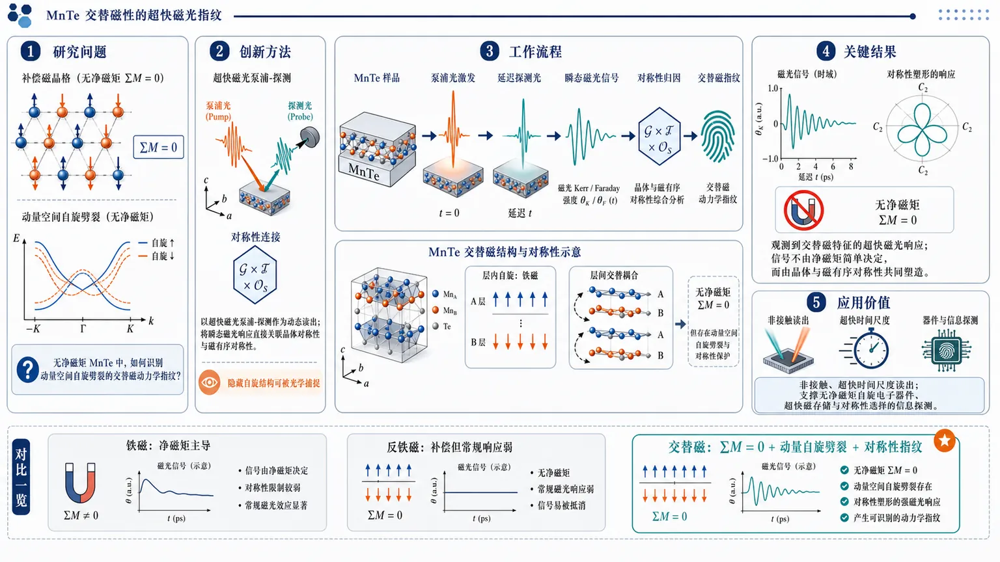
研究问题如何在无净磁矩但存在动量空间自旋劈裂的交替磁材料 MnTe 中，通过超快磁光泵浦-探测响应识别交替磁性的动力学“指纹”，并区分其与传统铁磁/反铁磁响应的差异。创新方法将超快磁光泵浦-探测信号作为交替磁性的动态读出工具，把瞬态磁光响应与 MnTe 的晶体对称性、磁有序对称性直接关联；Aha 点在于：即使材料整体磁矩完全补偿，仍可借助由对称性控制的超快光学响应捕捉交替磁的隐藏自旋结构。工作流程以 MnTe 样品为输入，用泵浦光激发非平衡态自旋与电子动力学，再用延迟探测光记录瞬态磁光信号；随后分析信号随时间演化的特征，并结合晶体结构对称性与磁对称性进行归因，最终提取可标识交替磁性的超快磁光指纹。关键结果在 MnTe 中观测并识别出具有交替磁特征的超快磁光响应；这些动态信号不是简单由净磁矩决定，而是由晶体对称性与磁有序对称性共同塑造，表明磁光泵浦-探测可作为识别无净磁矩交替磁态的有效判据。应用价值为交替磁材料提供一种非接触、超快时间尺度的光学读出方案，有助于发展无净磁矩自旋电子器件、超快磁存储与基于对称性选择的下一代磁信息探测技术。核心概览
论文研究交替磁体 MnTe 的超快磁光响应，属于超快磁光谱与新型磁序表征方向。其目标是利用时间分辨磁光信号识别交替磁体兼具动量空间自旋劈裂与实空间反铁磁补偿磁化的特征。
方法要点
- 以交替磁体 MnTe 作为研究对象，关注其超快磁光响应。
- 利用磁光时间分辨特征来探测和识别交替磁序。
- 将磁光响应与交替磁体的“双空间性质”关联：动量空间类似铁磁体的自旋劈裂能带，以及实空间反铁磁补偿磁化。
- 摘要未详述具体实验装置、泵浦-探测参数、时间分辨率、温度或磁场条件。
关键结果
- 摘要明确指出，在 MnTe 中观察或研究到可表征交替磁性的超快磁光响应。
- 磁光时间分辨特征可作为识别交替磁序的“光学指纹”。
- 该响应体现了交替磁体同时具有动量空间铁磁样自旋劈裂和实空间反铁磁补偿磁化的性质。
- 摘要未详述具体信号形式、幅值、时间尺度或与理论/对照样品的定量比较。
创新性判断
- 可能的新颖点在于：将超快磁光时间分辨技术用于识别 MnTe 中的交替磁序，并提出其作为交替磁性的光学指纹。
- 相较传统静态磁测量或输运表征，该工作可能强调了交替磁体在飞秒/皮秒时间尺度上的磁光响应特征；但具体时间尺度摘要未详述。
- 该研究的潜在创新还在于把动量空间自旋劈裂与实空间补偿磁化这两个看似矛盾的特征，通过磁光响应统一表征；这一判断基于摘要，具体机制和证据强度需全文确认。
-
21
📄 摘要：基于高维 Clifford 代数构造可精确求解的三维 Z2 自旋液体，适用于三配位与四配位晶格。模型分别产生 3 个或 2 个巡游 Majorana 味，并支持多类无能隙 Majorana 金属相，包括拓扑费米面、节线和 Weyl 半金属相，扩展了 Kitaev 框架外的三维自旋液体图景。
💡 亮点：高维 Clifford 自旋-轨道模型给出三维 Z2 量子自旋液体的可解平台。多味 Majorana 费米面、节线和 Weyl 相把强关联磁性与拓扑半金属结构直接连接。
-
22
📄 摘要：利用神经网络量子态研究远离半填充的二维方格 Kondo-Heisenberg 模型相图。弱 Kondo 耦合下得到 Néel 反铁磁序和仅计入导电电子的小费米面，且费米面面积对 Néel 序不敏感；强耦合下形成计入导电电子与局域矩的重费米液，并解析费米面变化与 d 波超导竞争。
💡 亮点：神经网络量子态区分 Kondo-Heisenberg 模型中的小费米面反铁磁和大费米面重费米液。该相图为重费米子量子临界与 d 波超导的数值研究提供新基准。
-
23
📄 摘要：面向激光粉床熔融增材制造，构建混合量子—经典模型从工艺参数预测熔池。LPBF 质量评估依赖制造前熔池形貌预测，但热—流—相变过程复杂；该工作展示量子纠缠与叠加参与的信息处理模型在实际制造数据回归中的可行性。
💡 亮点：混合量子—经典模型被用于 LPBF 工艺参数到熔池的预测。该示范把量子机器学习引入增材制造质量预判场景。
-
24
📄 摘要：将选定组态相互作用中的行列式重要性判定改写为二分类任务，把神经网络分类器嵌入迭代 CI 流程。每轮从候选行列式随机抽样并标注，通过主动学习更新分类器，用数据驱动筛选替代完全依赖启发式规则，以构造更紧凑的变分空间并保持近精确电子结构精度。
💡 亮点：神经网络主动学习被用于筛选 CI 重要行列式。该策略有望降低量子-经典电子结构计算的候选空间成本，适合大分子和强关联体系的近精确求解。
-
25
📄 摘要：通过多声部文献综述梳理大语言模型在量子软件工程中的应用证据，覆盖研究论文与实践者资料。量子计算从理论走向实验部署后，量子程序设计、测试、调试和工程流程面临不同于经典软件的约束；现有关于 LLM 辅助 QSE 的证据仍分散且尚未形成成熟评估框架。
💡 亮点：该综述系统整理 LLM 辅助量子软件工程的研究与实践证据。结论指向能力评估碎片化，量子程序生成、验证和调试仍缺少统一基准。
-
26
📄 摘要：面向电磁频谱具身智能中的 ADS-B 监测，提出轻量混合量子—经典频谱感知方法，用射频指纹进行特定发射体识别。相比参数规模较大的深度学习 SEI 模型，该方向强调在资源受限无线节点上实现可信频谱感知和自主运行。
💡 亮点：混合量子—经典轻量模型用于 ADS-B 射频指纹发射体识别。该方案针对资源受限频谱感知，服务智能无线基础设施中的 SEI。
-
27
📄 摘要：提出在连续变量光量子电路中自适应学习量子核的框架，将经典 Fisher 判据和准共形核变换转写到量子核设置。区别于固定量子线路核或启发式调参，该方法用有原则的目标函数改造核函数，面向提升量子核支持向量机在具体任务上的判别能力。
💡 亮点：连续变量光量子线路被用于按 Fisher 判据和准共形变换学习量子核。该框架使量子核方法从固定特征映射转向任务自适应优化。
-
28
📄 摘要：高光谱卫星辐亮度反演 CO2、CH4 等温室气体需求解昂贵反问题，机器学习仿真器可加速估计。该工作关注训练期外的时间稳定性，因为多数既有评估仅使用与训练同期的测试数据，难以判断在观测条件和大气分布随时间变化时是否仍能可靠替代物理反演算法。
💡 亮点：温室气体反演仿真器的核心评估从同分布精度转向跨时间稳定性。该问题对实时大规模卫星 CO2/CH4 监测中的 AI 可信部署至关重要。
-
29
📄 摘要：针对图形界面智能体缺少可扩展机器可读奖励的问题，提出用视觉-语言模型对最终屏幕状态进行自主评估的强化学习微调框架。智能体执行高层用户目标后，由评估器判断任务完成情况，作为 GUI 环境中的监督信号，减少手工奖励函数和密集人工标注依赖。
💡 亮点：视觉-语言自主评估被转化为 GUI 智能体的强化学习奖励。该框架可让开放桌面任务获得可扩展反馈，对科学软件自动操作和实验流程代理有潜在价值。
-
30
📄 摘要：面向工业自由曲面质检，使用 Creaform HandySCAN Black 手持激光扫描仪，体积精度为 0.020 mm + 0.040 mm/m，采集精密金属转子和碳纤维增强航空面板点云。通过将扫描点投影到最近 CAD 表面计算符号距离场，再结合点云深度学习，实现微变形检测与分类。
💡 亮点：CAD 对齐的符号距离场把手持扫描点云转化为可学习的微变形特征。金属转子与 CFRP 航空面板案例显示该流程适合高精度工业表面缺陷识别。
-
31
📄 摘要：Computational Materials Science 第 271 卷论文，题为联苯烯网络的 SNAP 势。根据题名可知，工作面向 biphenylene 碳网络构建谱邻域分析势，用于替代或加速第一性原理层级的原子尺度模拟；摘要未提供训练集、误差和应用算例等数值细节。
💡 亮点：该文聚焦联苯烯网络的机器学习原子势构建，采用 SNAP 势形式。若势函数精度充分，可支持该二维碳同素异形体的更大尺度结构与热力学模拟。
-
32
📄 摘要：提出 PC-MCMC-CIGP 灰盒流程，从稀疏含噪化学时间序列中发现可解释动力学方程。流程结合 spike-and-slab 反应拓扑采样、硬守恒与热力学筛选，以及化学信息高斯过程残差模型，用于参数校准和实验设计；重点在于把离散拓扑与连续动力学参数联合处理。
💡 亮点：反应拓扑采样、守恒/热力学硬约束和化学信息 GP 被耦合到同一发现框架。该方法适合在数据稀缺时重建可解释化学反应网络。
-
33
📄 摘要：用 T 矩阵与格林函数计算二维拓扑超导体边缘电流及涨落。非手征边缘态电流为零，手征边缘态电流非零；边缘噪声不论手征性均可非零。在含手征边缘态玩具模型中，噪声与陈数紧密相关：仅陈数非零时边缘噪声非零，并讨论体噪声对应关系。
💡 亮点：边缘电流只区分手征边缘态，而边缘噪声还能捕捉拓扑信息。噪声与陈数的关联为拓扑超导体提供了除输运电流外的边界诊断量。
-
34
📄 摘要：发展绝缘体中关联电子-空穴对的激子磁响应理论，同时纳入电子-空穴相互作用与量子几何效应。该框架针对偏置双层石墨烯中 p 激子谷 g 因子理论与实验相差近一个数量级的问题，重新刻画激子磁矩来源，面向磁测量结合光谱的量子材料探针。
💡 亮点：激子磁矩被写成相互作用与拓扑量子几何共同控制的响应量。该理论直接瞄准偏置双层石墨烯 p 激子谷 g 因子失配问题，可改进磁光谱对激子拓扑性质的解析。
-
35
📄 摘要：提出连续变量表象下的张量网络方法，用矩阵乘积态编码量子光态和算符，以模拟非线性介质中的光量子演化。相较随光子数和相空间分辨率快速增长的传统计算，该方案在高维连续变量网格中压缩相关结构，面向下一代量子光学与非线性量子技术建模。
💡 亮点：矩阵乘积态被用于连续变量量子光学演化而非传统 Fock 截断。该方法为高光子数、非线性介质中的量子态动力学提供更可扩展的数值路径。
-
36
📄 摘要：面向隐私保护的联邦图学习，处理真实图数据中类别长尾导致的两类失效：全局模型偏向头部类别，少数类节点在异配且头部主导的邻域中被结构性隔离。提出能量引导的双解耦策略，针对统计稀缺和拓扑异配同时建模，弥补仅做拓扑无关重加权或补偿的方法在少样本下的不足。
💡 亮点：方法把长尾图学习中的类别偏置与异配邻域隔离分开处理。对联邦场景下少数类节点识别尤其相关，可服务分布式材料图谱或科学知识图的隐私建模。
-
37
📄 摘要：K2Cr3As3 被讨论为自旋三重态拓扑超导候选，Tc 为 6.2 K，高于许多 U 基候选且竞争有序较少。论文围绕该 Cr 基化合物中的多相行为，探索操纵拓扑超导的可能性；目标是规避 U 基材料低 Tc 和共存竞争序导致的实验判据矛盾。
💡 亮点：K2Cr3As3 以 6.2 K Tc 和 Cr 基准一维结构成为三重态拓扑超导候选。多相可调性为寻找 Majorana 相关超导态提供替代平台。
-
38
📄 摘要：分析梁网络中带隙是否源于 Bragg 散射或局域共振，提出几何诱导变形模耦合机制。带隙起始来自晶格节点处轴向-弯曲耦合，并随一维周期梁的轴向截止频率缩放；带隙终止主要受高频转动分支控制，给出力学梁网络带隙设计的物理判据。
💡 亮点：梁网络带隙被归因于节点轴向-弯曲耦合，而非简单 Bragg 或局域共振。该机制为力学超材料和声子晶体的几何带隙设计提供可操作尺度律。
-
39
📄 摘要：Advanced Functional Materials 报道单个铁电异质结器件实现多模态储备计算，并模拟生物启发的视觉—嗅觉融合。题名表明同一铁电结同时承担多源信号映射与动态存储功能，面向低硬件复杂度的感知融合类神经形态计算。
💡 亮点：单铁电异质结被用作视觉—嗅觉融合的多模态储备计算单元。铁电内禀非线性与记忆性为紧凑神经形态硬件提供器件级路径。
-
40
📄 摘要：在 Sr2IrO4 中结合激光退磁与 X 射线自由电子激光磁散射泵浦探测，跟踪微米尺度反铁磁畴的时空演化。此前该材料的激光退磁和磁 X 射线散射分别成熟，此处将二者耦合到同一超快实验，直接观察反铁磁畴壁在激发后的迁移过程。
💡 亮点：Sr2IrO4 的微米反铁磁畴壁被 XFEL 泵浦探测直接追踪。该方法把超快退磁与实空间畴动力学连接起来，有助于解析强自旋轨道莫特体系的非平衡磁序。
-
41
📄 摘要：基于自旋群分析给出奇宇称交替磁性出现条件：破缺非磁性时间反演、共线补偿磁性，以及连接反向自旋子晶格的 [C2||Ē] 对称性。相较常规偶宇称自旋劈裂交替磁体，该工作从对称性层面区分奇宇称动量依赖自旋劈裂的必要约束。
💡 亮点：自旋群框架给出奇宇称交替磁性的三个必要对称性条件。该分类拓展了补偿磁体中自旋劈裂的宇称类型和候选材料筛选规则。
-
42
📄 摘要：Physics News 介绍原子薄材料中层间自掺杂实现室温多铁性的可能性。多铁材料同时具有铁磁、铁电等铁性序，并可通过磁电耦合实现电场控磁或磁场控电；该报道强调层间电荷转移/自掺杂可能成为二维体系中提升多铁相稳定性的机制。
💡 亮点：层间自掺杂被提出为原子薄多铁材料中增强室温磁电耦合的途径。该机制把二维层间电荷重排与铁磁、铁电共存联系起来。
-
43
📄 摘要：第一性原理和对称性分析表明 (PbMnO3)1/(PbVO3)1 超晶格为半导体多铁体，同时具有铁磁性、铁电性和 Berry 曲率偶极。V4+ 相关电荷转移参与稳定该态；铁电极化翻转可切换自旋极化 Berry 曲率偶极，指向可电控非线性输运响应。
💡 亮点：PbMnO3/PbVO3 超晶格被预测同时具备铁磁、铁电和可翻转自旋极化 Berry 曲率偶极。该体系把多铁开关与非线性霍尔类响应直接耦合。
-
44
📄 摘要：原子尺度模拟显示 NiO 条带可作为反铁磁自旋波或畴壁波导。数值结果给出反铁磁孤子传播速度超过 40 km/s，并展示可用于交叉传播与逻辑操作的传输特性，突出绝缘反铁磁体中高速、低串扰信息载体的潜力。
💡 亮点：NiO 条带中的反铁磁孤子可超过 40 km/s 传播并执行逻辑相关路径操作。该结果把反铁磁畴壁动力学推进到可设计波导器件层面。
-
45
📄 摘要：采用密度矩阵重整化群研究易轴区三角晶格自旋 1/2 XXZ 反铁磁基态。通过螺旋边界条件，将有限 L×L 团簇精确映射为一维链并避免常规条带几何偏置；结果揭示非平庸三子格磁化结构，修正对易轴三角格量子磁性的基态图像。
💡 亮点：螺旋边界 DMRG 用于解析三角格自旋 1/2 XXZ 反铁磁的三子格磁化。该处理减少有限尺寸几何偏置，有助于判定受挫量子磁体的真实长程序。
-
46
📄 摘要：npj Quantum Materials 报道 Li7Pb 中由间隙局域电子驱动的弱巡游铁磁性与超导性之间量子相变。题名指向同一化合物内局域间隙电子、巡游磁性和配对态的竞争，为富锂金属间化合物中电子驻留空间对基态选择的作用提供案例。
💡 亮点：Li7Pb 被提出为间隙局域电子调控的弱巡游铁磁—超导量子相变体系。该结果把电子局域在晶格间隙的自由度纳入磁性与超导竞争问题。
-
47
📄 摘要：外延 Sr3YCo4O10+δ 薄膜中通过工程化二维氧空位有序诱导自旋袋铁磁性，并产生巨大磁矫顽力。题名指出氧空位排列是调控 Co 氧化物交换网络和磁各向异性的核心变量，为薄膜氧缺陷工程控制硬磁响应提供材料实例。
💡 亮点：Sr3YCo4O10+δ 薄膜利用二维氧空位有序产生自旋袋铁磁性和巨大矫顽力。该结果凸显氧缺陷超结构对外延氧化物硬磁性的决定作用。
-
48
📄 摘要：在阶梯状拓扑绝缘体界面上优化超薄磁性多层膜，以获得垂直磁化畴。拓扑绝缘体具有高效自旋—电荷转换并可对相邻磁层施加自旋轨道力矩；该工作通过界面微结构和多层膜参数调控，探索其操纵自旋纹理的可行性。
💡 亮点：阶梯状拓扑绝缘体界面被用于定制垂直磁化多层膜畴结构。该平台连接高效自旋轨道力矩与可控磁畴工程。
-
49
📄 摘要：Advanced Functional Materials 报道一种双模式磁弹性体，可在外磁场下实现按需运动，并在设定条件下发生降解。材料把磁响应执行与可降解功能集成到同一软体体系，面向短寿命软机器人、可植入执行器或可回收磁响应器件。
💡 亮点：双模磁弹性体同时支持磁驱动运动和按需降解。该设计把软磁执行与材料生命周期控制结合，适合瞬态软体器件。
-
50
📄 摘要：Advanced Functional Materials 报道范德华反铁磁体中的巨大磁 Seebeck 效应。研究聚焦层状反铁磁材料在磁场或磁序变化下热电电压的强烈调制，说明磁结构与载流子热输运之间存在显著耦合，可用于自旋热电和二维磁热传感。
💡 亮点：层状范德华反铁磁体展现强磁场可调 Seebeck 响应。该现象把二维磁序与热电输运耦合起来，拓展自旋热电材料候选。
-
51
📄 摘要：Advanced Functional Materials 报道萤石结构 HfO2 中原子尺度应变限域铁电性。题名表明铁电相由局域应变场在原子尺度稳定，而非仅依赖宏观外延或尺寸效应；该机制与 HfO2 基 CMOS 兼容铁电存储和负电容器件的相稳定性直接相关。
💡 亮点：HfO2 铁电性被归因于原子尺度应变限域稳定。该视角有助于解释萤石氧化物中纳米区域极化的起源与器件可重复性。
-
52
📄 摘要：研究 Al 掺杂锂铁氧体 (Li0.5Al0.5)(Fe0.75Li0.25)2Fe3O8，即 Li50Al50，确定其新的非共线磁有序，磁空间群为 P432′ 相关形式。实验与分析揭示 Al 掺杂改变锂铁氧体中 Fe 子晶格相互作用，并影响自旋动力学。
💡 亮点：Li50Al50 铝掺杂锂铁氧体被解析出新的非共线亚铁磁结构。该工作说明非磁 Al 取代可重排尖晶石铁氧体的子晶格交换和动态响应。
-
53
📄 摘要：围绕生命起源中代谢优先情景下的大型化学混合物动力学，提出大型反应网络的计算层级模型。由于动力学数据不足，现有自催化导致指数增长、失稳和多稳态的定量理论仍缺乏；该框架旨在系统刻画复杂反应网络中自催化与动力学行为的关系。
💡 亮点：层级建模被用于缺少完整动力学参数的大型化学反应网络。它为研究自催化、失稳和多稳态在生命起源化学中的出现条件提供计算框架。
-
54
📄 摘要：把 EEG 空间超分辨从固定低通道到高通道映射改写为共享条件头皮场学习。位置引导编码器利用部分可见支撑电极，坐标可查询神经场生成任意目标电极信号，以应对测试时随机通道缺失、电极质量不稳和设备布局变化，提升未见电极生成的鲁棒性。
💡 亮点：坐标可查询神经场让 EEG 超分辨摆脱固定输入输出电极布局。该表示适合真实脑电采集中坏道随机出现和设备通道配置变化的场景。
-
55
📄 摘要：将 LHC 在线触发阈值调节表述为序贯决策问题。强化学习智能体读取近期事件率和信号敏感特征的流式摘要，动态更新触发阈值，以应对探测器状态、堆积和背景组成随时间漂移；目标是在带宽、延迟和存储严格约束下优于静态人工调节触发菜单。
💡 亮点：强化学习把 LHC 触发菜单从静态阈值改为随数据流自适应调节。该思路可提升高通量科学设施在漂移背景下的实时事件筛选效率。
-
56
📄 摘要：面向 GRACE/GRACE-FO 仅自 2002 年起提供全球陆地水储量变化观测的限制，构建深度学习模型学习日尺度气候变量与月尺度 GRACE 类 TWS 异常之间关系，并在南美洲应用，将 TWSA 记录向前重建至 1940 年，用于更长气候尺度水循环分析。
💡 亮点：时空图神经网络把 GRACE 类陆地水储量异常延伸到 1940 年。该遥感重建范式展示了 AI 对短观测记录地球系统变量的时空补全能力。
-
57
📄 摘要：针对 EEG 解码跨被试、跨任务泛化差的问题，在大规模 Healthy Brain Network 数据集上构建零样本跨被试框架，比较卷积神经网络基线、混合 LSTM 等模型。目标是应对被试间差异和神经信号非平稳性，为稳健脑机接口和精神健康神经标志物提供泛化解码方案。
💡 亮点：零样本神经先验被用于不依赖被试专门校准的 EEG 解码。跨任务、跨被试泛化能力是脑机接口从实验室走向真实应用的关键瓶颈。
-
58
📄 摘要：针对土耳其东地中海沿岸 Mersin、Adana、Osmaniye、Hatay 等人口密集省份的极端降水风险，构建多源数据融合、K-Means 空间聚类、XGBoost 分类与 SHAP 解释、广义极值分析和 CMIP6 投影的混合流程，联合识别物理驱动、重现期统计和未来变化轨迹。
💡 亮点：XGBoost-SHAP 与极值统计、CMIP6 被整合到同一极端降水预测管线。该框架强调可解释驱动因子和未来风险，对气候 AI 的区域化应用有参考价值。
-
59
📄 摘要：针对户外监测中能量中性传感器的供能波动，研究如何协调多个传感器的激活与充电周期，以保证时间连续性和空间覆盖。工作采用整数线性规划框架处理传感器能量短缺下的时间覆盖问题，并比较两类建模策略，面向难以维护的长期监测网络。
💡 亮点：整数线性规划被用于调度能量中性传感器的工作与充电周期。该问题对长期环境监测和科学观测网络在能量不稳定时保持连续覆盖很关键。
-
60
📄 摘要：针对 EEG 生物识别在大人群中受低信噪比和强个体差异限制的问题，将 64 通道 EEG 片段由一维信号转为小波尺度图，再用卷积自编码器压缩为二维皮层潜在尺度图表示。潜在特征用于身份识别，目标是在保留个体神经签名的同时提升鲁棒性。
💡 亮点：小波尺度图与卷积自编码器把多通道 EEG 转换为紧凑潜在身份特征。该方法聚焦神经信号低信噪比下的大人群生物识别稳定性。